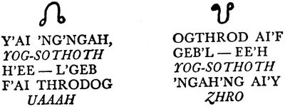
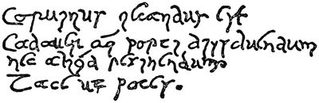

| [Ｈ・Ｐ・ラヴクラフト] ラヴクラフト全集2 | |
| Ｈ・Ｐ・ラヴクラフト | |
| (2015) | |
|
ラヴクラフト全集２東京創元社
Ｈ・Ｐ・ラヴクラフト 宇野利泰訳
|
THE CASE OF CHARLES DEXTER WARD AND OTHER STORIES
by Howard Phillips Lovecraft(1890-1937)
初版発行１９７６年８月２０日訳・宇野利泰
訳：宇野利泰／カバー：ヴァージル・フィンレイ
〈創元推理文庫Ｆ523-02〉
二十世紀最後の怪奇小説作家Ｈ・Ｐ・ラヴクラフト。その全貌を明らかにする待望の全集──本巻には、宇宙的恐怖にみちた暗黒世界への鍵ともいうべき『クトウルフの呼び声』をはじめ、冥界の旋律にとらえられた老音楽家の怪異を描いた『エーリッヒ・ツァンの音楽』そして作者三大長編のひとつ『チャールズ・ウォードの奇怪な事件』の全三編を収録。
太古の昔、全宇宙を支配していたという邪悪な神々は絶えてしまったわけではない。再びこの世を掌中におさめる時がくるのをいまなお待ちうけているのだ。本書は、悪夢のようなクトゥルフ神話を生んだ鬼才ラヴクラフトの全集第２巻である。宇宙的恐怖に満ちた暗黒世界への鍵ともいうべき作品「クトゥルフの呼び声」そして「エーリッヒ・ツァンの音楽」魔神たちの秘密を知った青年を襲う恐るべき出来事を描いた、随一の長編「チャールズ・ウォードの奇怪な事件」を収録。
目 次
クトゥルフの呼び声 The Call of Cthulhu(1926)
エーリッヒ・ツァンの音楽 The Music of Erich Zann(1921)
チャールズ・ウォードの奇怪な事件 The Case of Charles Dexter Ward(1927～1928)
１ 結末と序曲
２ 先人と妖異
３ 探査と招魂
４ 変容と狂気
５ 悪夢と消散
訳者あとがき
ラヴクラフト全集〈２〉
Ｈ・Ｐ・ラヴクラフト／宇野利泰訳
クトゥルフの呼び声 The Call of Cthulhu
思うに、いまなおこの地球上のどこかには、想像を絶した巨大な力と形を持つ太古の生き残りが潜伏しているはずである......測り知れぬ悠遠の昔に、大自然の霊的な力が凝り固まって、何らかの形状をそなえるにいたった。その後それが、潮のように押し寄せる人類の進出に遭って、姿を隠してからすでに久しく......わずかに詩と伝説のみが、かすかな記憶のうちにその姿を捉えて、神、怪物、その他もろもろの神話中のものの名で呼び......
１ 粘土板の恐怖
思うに、神がわれわれに与えた最大の恩寵は、物の関連性に思いあたる能力を、われわれ人類の心からとり除いたことであろう、人類は無限に広がる暗黒の海に浮かぶ〈無知〉の孤島に生きている。いうなれば、無明の海を乗り切って、彼岸にたどりつく道を閉ざされているのだ。諸科学はそれぞれの目的に向かって努力し、その成果が人類を傷つけるケースは、少なくともこれまでのところは多くなかった。だが、いつの日か、方面を異にしたこれらの知識が総合されて、真実の怖ろしい様相が明瞭になるときがくる。そのときこそ、われわれ人類は自己のおかれた戦慄すべき位置を知り、狂気に陥るのでなければ、死を秘めた光の世界から新しく始まる闇の時代へ逃避し、かりそめの平安を希うことにならざるをえないはずだ。
見神論者が想定するように、宇宙は壮大きわまりない周期で循環を繰り返している。現時の人類の目に映るものは須臾の間の出来事にすぎず、かならずやこの世界のどこかに、前時代の生残者が潜伏している。見神論者もそれを示唆しているのだが、その言葉はオプティミズムに彩られて、あたりさわりのないものである。そうでないことには、われわれが血も凍る恐怖感に怯えるのを知っていたからであろう。ぼくは彼らの示唆によらずして、禁断の秘密を窺い知った。考えるだけで戦慄し、夢見るだけで気が狂う恐怖の実相をだ。ぼくはこの宇宙の秘事を──真実の認識とはつねにそうしたものだが──個々別々の出来事と思われるものを、いわば偶然の機縁から関連して考えたとき、閃きのように悟得した。ぼくの場合、関連させたものは、古新聞に載った記事と死んだ老教授が遺していった調査資料だった。しかし、現在のぼくは、これと同じ関連作業を、他の何人にも行なわせたくない。かりにぼくが、今後なお生きながらえることができれば、この忌わしい鎖の環が世人の目に触れぬように、処置してしまう考えでいる。老教授もまた、その知っていた内容に沈黙を守る考えでいたであろうし、突然の死に襲われることがなければ、調査資料をことごとく焼却したものと思われる。
ぼくがこの出来事に初めて関係したのは、一九二六年の冬だった。その冬、大伯父にあたるジョージ・ガムメル・エインジェルが死亡した。大伯父はロード・アイランド州プロヴィデンスのブラウン大学に、セム語の講座を持つ名誉教授であり、古代碑文字の権威者の名を広く世間に知られていた。世界各国の博物館長を始めとして、有名な学者たちの訪問を受けることもしばしばで、その年の冬、九十二歳の高齢で世を去ったことは、多くの人々の記憶に新しい。そして、とくにその地方では、死因があいまいだったことから、好奇心の対象にもなっていた。老教授の死は、ニューポートで船を降りて、家へ向かう途中で起きた。そこは海岸から故人の住居のあるウィリアム街への近道で、険しい坂になっている地点だが、目撃者の話によると、異様に暗い路地から出てきた海員らしい黒人に突きあたって、その場に昏倒したのだという。外傷は皆無だし、医師たちにも死因が確信をもって究明できなかったので、高齢の身で急坂をいそぎ足に登ってきたところに、人と衝突したことから、心臓に障害を起こしたとの診断で片付けられていた。ぼくもその時点では、医師たちの意見に反対する理由を見出せなかった。しかし、後日、思わぬ事件の成り行きで、それに疑念を──いや、疑念以上のものを──抱かざるを得なくなった。
大伯父は妻子のいない一人暮しで死亡したので、唯一の後継者であるぼくが、同時に遺言執行者でもあった。そこで、彼の書き残した書類に目を通す必要が生じ、ファイルや書類箱のたぐいを一括して、ぼくのボストンの家へ運んだ。研究資料の多くはぼくが整理しておいたので、いずれはアメリカ考古学会の手で出版される予定である。ただひとつ、ぼくが不審に思い、他人の目が触れるのを怖れた品があった。それは厳重に封印した一個の箱で、その鍵が見当たらなかった。だが、ふとした思いつきで、老教授がいつもポケットに入れて持ち歩いていた私物用の鍵束のうちから発見した。しかし、開けるのに成功したとはいうものの、いっそう厳重な障壁に行きあたったようなもので、箱のなかに見出したのは、粘土造りの奇妙な薄肉浮彫りのほか、とりとめのない文句をつらねた走り書きか、新聞記事の切り抜きのたぐいだった。こんながらくたに、どんな意味があるのだろうか。ぼくの大伯父も、晩年は高齢がわざわいして、子供だましの迷信にとり憑かれていたのだろうか。以上のような経過で、ぼくは善良な老人の心の平和を乱した異様な粘土板の作者を捜し出して、文句をいってやろうと肚をきめた。
その薄肉浮彫りは、厚さ一インチ弱、縦五インチに横六インチほどの大きさで、ほぼ長方形をしていたが、明らかに現代人の手になったものであった。それでいて、意匠のもたらす雰囲気が、あまりにも現代と隔絶していた。ぼくがいうまでもなく、キュービズムや未来派の現代絵画は、気紛れとも思われる奔放な構図を示しているが、有史以前の文字にひそむ謎めいた均整さまでを再現しようとは試みない。これらの意匠の大部分は、あきらかに古代文字の一種だった。それでいて、大伯父の収集した古代文字の記録に永年慣れ親しんだはずのぼくが、これと同種の、あるいは類縁関係にあるものを思い出すことができなかった。
象形文字らしい線の羅列のほかに、明らかに画像と思われるものがあるのだが、印象主義的手法が強烈すぎて、何を写し出すつもりであったのか、その本体を想定するのさえ不可能だった。おそらく、ある種の怪物、でなければ、そのシンボルなのであろうが、いずれにせよ、よほど病的な空想力の持主でないことには、思いつけるものでない醜怪な形状なのだ。ぼくもぼくなりに、想像力を最大に駆使してみて、その結果、章魚と竜と人間のカリカチュアを一緒くたに表現するのが作者の意図だと感じとった。どうやらこの見方がこの物の本質を衝いているように、ぼく自身には考えられたのだ。鱗に覆われたグロテスクな胴体の上に、触手を具えたぶよぶよの顔が載っている。しかも胴体には退化した翼の痕跡が残っている奇怪な姿だが、何よりもショッキングな恐怖感を与えているのは、その全体の輪郭の凶悪さだった。そしてその背景には、太古の一眼巨人族の国の壮大な建築群らしいものがおぼろげに描いてあった。
この異様な品と一緒に箱に収めてあったのは、新聞記事の切り抜きを別にすれば、エインジェル教授のごく最近の筆と思われる草稿ばかりで、そのどれもが、文体を整えるのももどかしげに、性急な筆致で書きつづってあった。そのうち、中心と見られるのは分厚いノートで、表紙には『クトゥルフ教のこと』と、聞き慣れぬその名辞の誤読を避けるためか、きちんとした活字体で記してあった。内容は二部に分れていて、第一部の冒頭には、『一九二五年──ロング・アイランド州プロヴィデンス、トマス街七番地居住、Ｈ・Ａ・ウィルコックスの夢と、その夢による作品』としてあり、第二部には、『一九〇八年──アメリカ考古学会の会合における、ルイジアナ州ニューオーリンズ、ピエンヴィル街一二一番地居住、ジョン・Ｒ・ルグラース警部の話。ならびに、上記の話についての註釈とウェッブ教授の説明』とあった。そのほかの草稿は簡単な心覚えのたぐいで、あるものは数名の人々の奇異な夢、あるものは見神論者の著書や紀要類からの引用（主としてＷ・スコット・エリォットの『アトランティス大陸と失われたレムリア大陸』）、そして残りは、今に生きながらえている秘密社会と隠れた宗教に関する資料と、フレイザーの『金枝篇』やミス・マレーの『西欧における魔女崇拝』のような神話学か人類学を扱った文献についてのコメント、そして新聞記事の切り抜きの大部分は、一九二五年の春に発生した強度の精神異常と集団的愚行ないし狂気の勃発を報道したものだった。
中心と見られる分厚いノートの前半には、きわめて異常な事件が語られていた。事件は一九二五年の三月一日に起きた。その日、突然、ぼくの大伯父エインジェル教授の家に、色の浅黒い、痩せぎすで、見るからに神経質な、激情家らしい青年が訪問してきた。異様な薄肉浮彫りの粘土板を持参しているが、出来あがったばかりのものらしくて、生乾きの状態だった。名刺には、ヘンリー・アンソニー・ウィルコックスとしてある。大伯父はこの青年を知っていた。交際はなかったが、この地方では名を知られた名家の末子で、そのころ、ロード・アイランド美術研究所で彫刻を習学中と聞いていた。住居は両親の家でなく、研究所に近いフレール・ド・リス・アパートに部屋を借り受けて、一人暮しをしていたのである。神童と謳われたほど早熟で、才能こそ世間に認められていたものの、子供の頃から不思議な物語と奇異な夢に興味を持ち、自分から「心霊を感じとる超能力者」と称していたほどで、この古い商業都市の謹厳な人々からは、「風変わりな若者」と軽視される傾向にあった。そうした事情があってであろう、そのころの彼は年来の友人たちと交際を絶ち、社交上の集りにも顔を出さず、わずかに、ほかの土地から移ってきた唯美主義者の小グループに知られるだけの存在になっていた。プロヴィデンス美術家クラブにしても、保守主義の維持を信条とするだけあって、いまはまったく彼を見放しているのだった。
ぼくの大伯父のノートの記すところだと、ウィルコックス青年は面会するが早いか、老教授の該博な考古学上の知識で、薄肉浮彫り上の象形文字を解読してほしいと切り出したという。だが、その言い方が夢でも見ているように頼りなく、ポーズめいた気負いまでうかがわれたので、大伯父は簡単に納得できず、この粘土板は明らかに最近製作されたものであり、考古学の対象になりうる品でないと、鋭い口調で指摘した。ところが、その指摘に対する青年の応答が、大伯父に強い印象を与えた。青年の語ったところが、ほとんど逐語的にノートに記録してあるのも、理由はそこにあると思うのだが、青年は幻想的なまでに詩的な色合いのこもった口ぶりで答えた。実際、それが彼の会話の全部にみなぎる顕著な特徴だった。ぼくもまた──これは後日の話だが──ぼく自身の耳でそれを聞く機会があった。それはともかく、そのときの彼は次のような言葉で答えた。「たしかにこれは新しい品です。昨晩ぼくが、夢のなかで妖しい都を眺めながら作りあげたものですから。ですが夢に現われたその都は、霧に包まれた古代フェニキアの港テュロスよりも、あるいは瞑想するスフィンクスよりも、あるいはまた、花園をめぐらしたバビロンよりも、はるかに古いといえるのです」
ウィルコックス青年がこの奇怪な話を語りだしたのは、それからだった。そしてぼくの大伯父の眠っていた記憶を呼び起こして、強い関心を抱かせることになったのだ。たまたまその前夜、その地方を地震が襲った。微震程度のものではあったが、地震の少ないニューイングランドでは数年来のことなので、それがウィルコックス青年の想像力に鋭く作用したのは十分考えられる。そしてそれが原因となって、青年はふたたび眠りにつくと、これまでにない奇怪な夢を見たのだ。一眼巨人族の都市の夢である。巨石を積みあげた大建築と、空高く聳え立つ石柱の集団とが、緑色の粘液をしたたらせて、隠れた怪異を暗示する気配をみなぎらせていた。壁と柱一面に奇怪な象形文字が刻んであって、地下のどことも知れぬ個所から、声に似て声でない音が響いてくる。この錯乱した感覚を音に還元できるのは、幻想のほかにありえないが、幻想家をもって自認する青年は、敢えてこの困難な作業に取組んで、その結果、文字として書きつづったのが、ほとんど発音不能にちかい『クトゥルフ・フタグン』という言葉だった。
わけの判らぬこの言葉が、エインジェル老教授の遠い記憶を呼びさます鍵となった。老教授はいたく興奮して、心の動揺を隠そうともせずに、学究らしい綿密さで若い彫刻家に質問を浴びせかけ、提示された薄肉浮彫りを狂気じみた熱心さで調査し始めた。それは青年が奇怪な夢から戸惑いながらめざめると、寝間着姿で寒さに震えながらも、とり急ぎ夢に見た薄肉浮彫りを再現しておいたものだという。ぼくの大伯父はしばらくのあいだ、その象形文字の解読と、図柄の正体を突きとめるのに我を忘れていた。だが結局は──これは後日、ウィルコックス青年がぼくに語ったことだが──老いの目の力弱さを愚痴るだけで、思い諦めねばならなかった。老教授はつづいて質問に転じたが、その多くは訪問者を当惑させるだけに終わった。どうやら質問の狙いは、青年と特殊な宗教団体の結びつきを究明するにある様子で、そのように口を閉ざして沈黙を守るのは、全世界に拡がる謎の信仰団体に加盟を許された代償に、沈黙を約束させられたからであろうと問いつめた。しかし、ウィルコックス青年には、何のことやら理解できなかった。最後にはエインジェル教授も、若い彫刻家がそれらの秘密教義と謎の宗団に無知であるのを確信したとみえて、今後またこの種の夢を見たときは、その内容を詳しく報告するようにと申し入れて、その日の会見を打ち切った。その後はこの青年が毎日のように訪れて、前夜の夢に見た奇怪なイメージを報告し、大伯父がそれを詳しく記録することになった。どれもが断片的なものであったが、積もり積もって厖大な量になった。粘液をしたたらせる巨大な石材から成る巨人族の大都の光景。その地下から、単調な響きで聞こえてくる譫言としか受けとれぬ謎めいた声。なかに頻繁に繰り返される二つの音があって、それを文字に移しとると〈クトゥルフ〉、と〈ル・リエー〉の二語になるのだった。
ぼくの大伯父の記録はひきつづき、三月二十三日以降、ウィルコックス青年の訪問が止まったことを述べていた。ぼくの大伯父がさっそくその住所に問い合わせてみると、急に原因不明の高熱を発して、夜間に大声でわめき立て、アパートじゅうの同宿者をめざめさせ、叫びのあいだには昏睡状態がつづくので、ウォターマン街の両親の家に引きとってもらったという。大伯父は即刻、家族の者に電話をして、その後の模様を訊き、容態に変化があれば知らせてくれるように依頼し、その一方、主治医トビー医師のセイアー街の診療所まで足を運んだりして、症状を仔細に見守っていた。高熱の原因は、その譫言で判断したかぎりでは、夢のなかで奇異な事物に悩まされることにあるらしい。トビー医師も青年の口走る言葉を引用して、しきりに身慄いを繰り返していた。しかし、それが具体的にどんなものであるかは、昏睡状態からめざめたときの青年にも説明しかねる様子だったが、ただ、ときどき思い出すかのように洩らす言葉で、従来の夢の異様な光景に、また新しく、身長一マイルにも及ぶ巨大な怪物が加わり、どすんどすんとのし歩いているものと推察された。そしてエインジェル教授は、その怪物こそ、青年の手になった粘土板に描かれている正体不明の図柄の原形に相違ないと考えた。トビー医師はさらに付け加わえて、青年がその夢を見ると、あとにかならず昏睡状態がつづくことと、高熱といっても常温といちじるしい差があるわけでないのに、症状全体の印象が、精神機能の疾患というよりも、熱病の一種と見られるのが不思議だと語った。
四月二日の午後三時ごろ、ウィルコックス青年の病症が急に常態に復した。彼はベッドの上に起き直って、両親の家で寝ていることに、意外そうな表情を見せていた。事実、三月二十二日の夜以来の夢も、現実に彼の身に起きた出来事も、ひとつとして記憶していないのだ。そして、医師に回復したといわれて、三日後にはアパートに戻ったが、エインジェル教授にとっては、まったく無用の人間に変わっていた。熱が引くと同時に、奇怪な夢の徴候はすべて消失して、その後一週間ほど、ごくありふれた無意味に近い夢がつづくだけで、エインジェル老教授の夜の幻想の追及は終わりを告げた。
以上が大伯父の書き遺した主要ノートの前半だが、そのほかにも裏付けとなる資料が夥しく存在して、ぼくをこの問題の検討に駆り立てずにはおかなかった。実際、当時のぼくの思想の根幹を懐疑主義が占めていなかったら、ぼくまでが若い彫刻家の荒唐無稽な夢物語に振りまわされて、判断能力を喪失したことと思われる。大伯父はウィルコックス青年の奇異な報告を聞くと、即刻、問い合わせのメンバーのリストを作成したものらしい。それは各方面の知人のうちから、遠慮なしの質問を試みられる相手を選び出して、最近に、そしてまた、その少し以前に見た夢の内容を、日付とともに、詳しく知らせてほしいと依頼したのだ。もちろん、この風変わりな要求はさまざまな反応を惹き起こしたが、しかしまた、通常の人間では、秘書の手を借りぬことには処理しきれぬほど大量の返事を受けとったことも事実である。返事の原本は保存されていないが、大伯父のノートは詳細をきわめていて、ほぼ完全な要約といってよかった。ニューイングランドに伝統的な「地の塩」の社会人と実業家からは、だいたいにおいて否定的な答えが戻ってきたが、にもかかわらず、判然とした形こそとらぬにしても、不安を底に秘めた夜の感触が各所に見受けられて、それがみな三月二十三日から四月二日までのあいだ、つまりはウィルコックス青年が高熱に浮かされていた期間内に限られていた。一方、学者クラスの人々は、これといった影響を蒙った様子がなかった。しかし、それでもなかに四通だけ、漠然とではあるが、奇異な光景を垣間見たらしい描写を伝えて、そのうちひとつのケースには、奇怪な物の恐怖の姿が述べられていた。
結局、大伯父の調査の趣旨に適切な答えを返してよこしたのは、画家、彫刻家、詩人といった芸術家連中で、もしそのときの彼らに、各自の返事を見せあう機会があったら、彼ら自身が愕然としたであろうと思われるものだった。実際のところ、返事の原本がないので判断の下しようがないが、その記録を読んだぼくには、大伯父の質問が誘導的なものではなかったか、あるいは、内心求めていたものだけを採りあげたのではないか、といった疑惑が残った。疑惑といえばもうひとつ、これは当初から感じていたことだが、ウィルコックス青年は何かの折りに、ぼくの大伯父の手許に保管されている古い資料（これが分厚いノートの後半だった）のことを聞き込んで、夢物語をでっちあげ、考古学界の権威者をペテンにかけたとの推測も成り立つのだった。それはそれとして、これら芸術至上主義者たちからの返事には、人心を動揺させずにはおかぬものが含まれていた。彼らもまた、二月二十八日から四月二日にかけて、怪異な夢をしきりと見て、しかもそれが、若い彫刻家ウィルコックスが昏睡状態にあった時点に、もっとも烈しかったのである。それらの返事のうち四分の一を超えるものは、かなり具体的な叙述をしていて、それがやはり、緑色の粘液がしたたる石の都の光景と、声に似て声でない地下からの響きであり、最後の部分で巨大な怪物が出現するところまで似かよっていた。ほかにまた、大伯父のノートがとくに重視している悲劇的な事実があった。それは見神論とオカルティズムに関心の強かった建築家の悲惨な運命で、この著名な人物がウィルコックス青年の発病と日を同じくして、突然、精神錯乱の状態に陥った。そしてその後数ヵ月のあいだ、地獄を脱け出てきた魔物につかまえられる、救けてくれ、と叫びつづけたあげく、ついに息絶えたというのである。残念なことに、ぼくの大伯父はこれらの事実を収録するにあたって、番号を付けるだけにとどめ、夢を見た本人の氏名を記載しておかなかった。それが理由で、ぼくが調査を開始しても、わずか二、三名の者を除いては、被害者を突きとめる道が閉ざされていた。だが、面接に成功した少数者の証言だけでも、大伯父のノートの記述を十分に裏付けるものがあった。そしてぼくはその経験からして、大伯父の質問を受けた人々がいかに当惑したかを知るとともに、彼らには永久に、この質問の趣旨を伏せておくべきだと考えた。
そして最後が新聞記事の切り抜きであるが、これはすでにほのめかしておいたように、この特別の期間内に起きた恐怖、狂気、異常現象に関連したものばかりだった。しかもその量たるや尨大なもので、全世界の各地から集められていた。エインジェル老教授の完璧に近いこの収集は、依嘱を受けた通報サービス業者の功績というべきであろう。ロンドンでは、深夜の自殺事件が起きている。睡眠中の独身生活者が、突如、ショッキングな悲鳴をあげたあと、部屋の窓から飛び降りて自殺したのだ。南アメリカの某新聞社に舞い込んだ投書には、支離滅裂な文章で、狂人らしいその男が見た幻覚を基礎に、戦慄すべき地球の未来が詳述してあった。カリフォルニア州からの通信記事には、見神論者のグループが揃って白衣をまとい、実現するはずもない〈輝かしき日〉を迎えるために、集団的な祈りを捧げているとあるし、インドからのものには、二月から三月の末へかけて、土民たちのあいだに正体不明の不安が高まってきたと、控えめな筆致で記してある。ハイチでは、ヴードゥー教徒（西インド諸島などの黒人の間で信仰される多神教）の秘密祭儀が頻繁に行なわれ、アフリカの開拓者たちは、このところしきりと無気味な、囁き声を耳にしている。フィリピン駐在のアメリカ軍将校から、原住民中の一種族が、近く異常な事件が起きるはずだと、恐慌状態に陥っているとの報告が届き、ニューヨークの警察官が、三月二十二日の夜半から未明にかけて、レバント人の暴徒に襲撃されて、多数の負傷者を出し、西アイルランドでは最近、不穏な動きを暗示する流言や風評が飛び交っているという。そしてフランスでは、アルドワ・ボノという幻想派の画家が、冒涜的な絵画『夢の風景』を、一九二六年春のパリのサロンに出品した。さらにまたこの期間内には、全国各地の精神病院で、狂暴性患者の病状がいっせいに悪化している。その症例の夥しさは驚くばかりで、医師会がそこに関連性を認め、同一原因によるものとの結論を抽き出さなかったのが、むしろ不思議といえるくらいである。
いまにして思えば、これらの奇怪な報道記事が真相のすべてを語っていたのだ。あの頃のぼくは頑な合理主義思想の虜であったがために、この重大な事実を無視して省みようとしなかった。いまはその迂闊さに恥じ入るばかりである。ただ、ひと言弁解させてもらうと、ぼくにはウィルコックス青年への先入観があって、彼はあらかじめ老教授の記録にある古い出来事を知っていたと思いこんでしまったので、そこにぼくの失敗の原因があったとみるのが至当であろう。
２ ルグラース警部の話
ぼくの大伯父が若い彫刻家の夢と薄肉浮彫りに重大な意味を感じとったのは、それに先立つ古い事件の記憶があったからで、大伯父の長文のノートの後半がその経過を語っている。エインジェル老教授がこのような名状しがたい異様な物を見せられて、地獄から現われた何かに出遭った気持に襲われたのは、初めての経験ではなかったのだ。あのときもやはり、未知の象形文字に頭を悩ましたし、〈クトゥルフ〉としか聞きとれぬ無気味な音節を聞きとった。そして、前後二つの経験が結びついて、怖ろしいまでに心を揺り動かされたので、老教授がウィルコックス青年に執拗な質問を浴びせかけ、明確な資料の提供を迫ったのも当然のことであった。
第一の経験というのは、老教授がウィルコックスの訪問を受けた日から十七年以前のことで、アメリカ考古学会の大会がセント・ルイスに開催されたときに起きた。大会におけるエインジェル老教授は、その学識と権威にふさわしく、討論のすべてに指導者的な役割を演じていた。したがって、この大会を機会に、つねづね疑問に思っているところを質問して、専門学者の教えを乞おうとする多くの部外者から、質疑の目標とされたのはもちろんのことである。
その質問を持ちこんだのは、いたって風采のあがらぬ中年男だったが、平凡な外見とは裏はらに、話の内容は奇怪をきわめていたので、たちまち大会出席者全員の関心の中心となった。彼はニューオーリンズの住人で、その土地では満足できる解答を得られぬことから、はるばるセント・ルイスまで出向いてきたので、名前をジョン・レイモンド・ルグラースという警部だった。そして、一見しただけで嘔吐を催すほどグロテスクな、明らかに太古の作と思われる小さな石像を持参していた。もちろんその出所は、彼自身には知りようのない品であった。
ルグラース警部がいささかなりとも考古学に興味を持っていたとは考えられず、その出張の趣旨はあくまで警察官としての職業意識に基づくものだった。持参した石像が邪教の礼拝物であるのは明白で、彼はその入手経路を次のように説明した。大会に先立つ数ヵ月前に、ルグラース警部の指揮による、大規模の捕物が行なわれた。場所はニューオーリンズの南方、樹林に囲まれた沼地で、そこにヴードゥー教徒が不法集会を秘密に開くとの聞き込みがあったことから、州当局はその検挙に、多数の警察官を出動させた。醜悪な石像をめぐっての暗い礼拝は、踏み込んだ警官隊もたじろいだほど凄絶をきわめ、アフリカ奥地のヴードゥー教集団のもっとも狂暴なそれよりも、さらにさらに悪魔的なものだった。しかも、この奇怪な宗教の由来については、逮捕した信徒たちの口から抽き出した常軌を逸した話のほか、何ひとつ具体的なことが明らかにされなかった。かくして警察当局は考古学者の助けを借り受け、恐怖の象徴の意味を探り、奇怪な祭儀の源泉を突きとめようと考えるにいたったのだ。
ルグラース警部は、彼の提出した石像が学者たちに、これほどの衝撃を与えるとは予想もしていなかった。学者たちはそれを一見しただけで、たちまち激しい興奮状態に陥って、全員が目を凝らして注視した。悠久の歳月を経てきた品であるのが明らかで、閉ざされた太古の世界を力強く語っている。彫刻史上、どのような流派も、このような恐怖の対象を創り出したことはないはずだが、それでいて、石質不明のこの物体の暗緑色の表面に、数世紀、いや、数十世紀の年代を見てとることができるのだった。
石像は学者たちの手から手に渡って、周到綿密な検討を経た。高さはおよそ七、八インチの、小ぶりながら優れた技術で刻まれた芸術品とも呼べるものだった。どこか人間臭さが漂っているものの、頭は章魚にそっくり、何本かの触手が顔から伸び、鱗に蔽われた胴体に爪の長い前足と後足、そして背中には細長い翼。やや肥満ぎみの全身に凶悪な害意をみなぎらせて、正方形の台座に蹲っているのだが、その台座には判読不能の異様な文字が刻みつけてある。怪物は翼の先を台座のうしろ端に触れさせて、中央に尻を据え、両膝を立てた後足の鈎爪で台座の縁をしっかと掴み、長い爪の四分の一はさらに下方へと伸びている。そしてまた、頭足類を思わせる頭をやや前方に傾け、触手の先端は、立膝をした後足にあてがった前足の甲に触れさせ、その全体の印象が異様なほどの生々しさで迫り、由緒不明の偶像であるだけに、身の毛のよだつ無気味さなのだ。要するにそれは、測り知れぬ太古に作られたことと、われわれの知る文明社会の美術様式とはまったく類を異にしたものと知るだけであった。
材質もまた、大きな謎であった。黒緑色の表面のあちこちに斑点と筋目が金色に光り、地質学者にも鉱物学者にも初見のものであるし、台座に刻んだ象形文字が同様に謎であり、この大会には考古学の権威と目される人々のほぼ半数が参集していたのだが、一人として、これに僅かの類縁をもつ言語の指摘もできなかった。たしかにこの文字には、石像の形状と材質と同様に悠遠の昔を思わせ、吾人の認識のうちにある人類や世界の概念とまったく隔絶した宇宙の周期が存在している事実を示唆する何かがあった。
その場に集まった学者たちが全員揃って首を振り、警部の質問に答える力のないことを認めた。するとそのうちの一人がためらいがちに口を切って、この怪物めいた石像と台座に刻んだ不可解な文字を見て思い出したことがあると、忘れかけていた遠い過去の記憶について語りだした。これはウィリアム・チャニング・ウェッブ教授といって、すでに故人になっているが、当時はプリンストン大学に講座を持ち、古代遺跡の発掘に多大の功績を残した学究だった。
いまから四十八年以前のことになる。ウェッブ教授はグリーンランドとアイスランドのルーン文字碑を探査する遠征隊に参加して、本来の目的である発掘作業は失敗に終わったが、次のような珍しい経験をした。グリーンランド西部の海岸に近い丘陵地帯で、異様な種族を発見したのだ。人種としてはエスキモー族に属するが、現状は相当に退化していて、いまだに奇怪な悪魔崇拝をつづけ、その残忍非情な祭儀には、嫌悪感で戦慄させられるものがあった。彼らの信仰については、ほかのエスキモー族も詳しい知識を持たなくて、説明を求められても、身慄いを繰り返すばかりであり、地球の創成よりもはるか昔の、悠久の太古から伝わるものらしいと語るだけだった。しかし、この土地に古くから、人身御供を伴う祭儀で〈トルナスク〉と呼ばれる大悪魔を礼拝する秘密宗教が存在し、世代から世代へと引き継がれてきたことはつとに知られていた。そこでウェッブ教授は、年老いた呪術僧アンゲコクから聞いた呪文を発音どおりに写しとって、可能なかぎり正確にローマ文字に転記した。だが、いまここでもっとも重要と思われるものは、この種族が崇め祭っている偶像で、氷壁上に高く極光が輝くとき、彼らはこの偶像をめぐって踊り狂うのだという。そして教授の説明によると、それは原初的な手法で石塊に刻んだ薄肉浮彫りで、奇怪な画像と謎めいた文字が現われていて、この席上に提出された獣神像の外見と文字とに、本質的な類縁関係が見られるというのだった。
ウェッブ教授のこの報告は、大会の出席者全員に驚愕と緊張感をもたらした。ルグラース警部の興奮を倍加させたことは言うまでもない。警部はすぐさま、報告者の教授に質問を浴びせだした。彼の手帳には、警察が逮捕した沼地の狂信者たちの呪文が写しとってあったので、エスキモーの悪魔崇拝者の唱えた文句を音節どおりに思い出してほしいとせがむのである。そして、両者を細部にわたって徹底的に比較検討した結果、遠く離れた二つの国の地獄の祭儀に、同系統の言語の呪文が用いられていることは間違いなしと、学者グループと警察官の意見とが完全な一致を見た。その一瞬、怖ろしいまでの沈黙が、その席上を押し包んだ。エスキモーの呪術僧とルイジアナ州の沼地の狂信者が、同種の石像を礼拝し、同種の誓言を捧げていたとは、驚くべきことである。彼らが声高らかに唱えていた文句を、伝統的な分節に区切って書き記すと、次のようなものになる。
フングルイ・ムグルウナフー・クトゥルフ・ル・リエー・ウガ＝ナグル・フタグン
ルグラース警部には、ウェッブ教授に先んじた知識がひとつあった。それはこの呪文の意味の理解で、彼が逮捕した混血の狂信者のうちの何人かが、年老いた祭司から教わったといって、それを繰り返し説明したからである。それは次のように解釈されるものであった。
死せるクトゥルフが、ル・リエーの家で、夢見ながら待っている。
ルグラース警部は会員たちの熱心な質問に応じて、沼沢地の狂信者についての経験をこと細かに語った。ぼくの伯父がこの話に重大な意義を感じとったのは容易にうなずけることで、それは神話作者や見神論者の奔放な夢を思わせ、卑賤な下層民にこれほどまでの幻想力があるものかと驚くほど、壮大なイメージを示しているのだった。
一九〇七年十一月一日のこと、ニューオーリンズの警察本部に、南方の沼沢地帯の住民たちから、常軌を逸した趣旨の出動依頼願いが届いた。その地域には前世紀の初めごろ、かつてこのあたりの海域を荒らしまわったフランス私掠船の船長ジャン・ラフィット（一七八〇─一八二六？メキシコ湾を根拠地にしたフランスの海賊。英軍を支援し、スペインの植民地を襲い、一八一五年のニューオーリンズ英米戦争ではアメリカ軍に見方する。南部の伝説的英雄）の部下たちが住みついて、現在では善良素朴なその子孫がつつましやかな生活を送っている。その住民がこのところ、夜毎に忍びよる正体不明の恐怖に脅かされて、ヴードゥー教徒の仕業とは察せられたが、住民たちの聞き知っている彼らとはちがって、ひどく狂暴な連中と思われた。それが証拠に、悪鬼が跳梁するとの噂で近づく者もない暗黒の森林内に、無気味な太鼓の音が聞こえ、同時に、村の女子供の行方が判らなくなる事件が頻発し始めた。そして深夜に、風に乗って流れてくるこの世のものならぬ絶叫とけたたましい悲鳴、魂を凍らす詠唱の声と踊り狂う悪魔の火、その恐怖に住民たちはこれ以上耐えられぬと、警官隊の出動を求める使いの者が、慄えおののきながら語るのだった。
以上のような経過で、その日の午後おそく、二輌の馬車と一台の自動車に満載された二十名の警官隊が、恐怖におののく開拓民を案内人として、ニューオーリンズを出発した。道が狭まって車馬の通行が妨げられると、警官隊は車を降りて、陽光の射しこむことのない糸杉の密林内を、ぬかるみの泥を跳ねあげながら、何マイルものあいだ行進した。錯綜する樹の根に足をとられ、執念ぶかく絡みつく宿り木の蔓に悩まされ、そしてときには、夜気に濡れた石材の堆積と崩れ落ちた石壁の残骸に出遭って、古代の人間はこのような場所に生息できたのかと驚き、醜悪な形の巨木と毒々しいキノコが作りだす暗澹たる気分のうちに、いよいよ深くのめりこんでゆくのだった。だが、ようやくにして前方が開け、開拓者の部落が見えだした。僅かばかりの掘立て小屋が疎らに散在しているのだが、角灯を手に行進してくる警官隊に気づくと、それぞれの小屋から男女の群れが、ヒステリックな歓声をあげて走り出てきた。ここまでくると、まだかなりの遠方ではあるが、おどろおどろしい太鼓の音が低く轟き、風向きが変わるたびに、身の毛もよだつばかりの奇怪な人声が聞こえ、夜の闇の涯までつづく下生えの隙間に赤い火の煌きが見てとれた。警官隊の到着に、開拓部落の住民たちはひと安心といった表情だったが、邪神礼拝の現場へ案内を命じられると、頑強に首を振って、その方向へ一歩近づくのも拒むのだった。ルグラース警部と十九名の部下はしかたなしに、道案内もないままに、いまだかつて足を踏み入れた者のない恐怖の場所へ突き進まねばならなかった。
警官隊が目指した地域は、古来、悪霊の棲み家として怖れられていて、白人にとってはまったく未知の世界だった。伝説によると、そこには人間の目には見ることのできぬ湖があって、これまた巨大すぎて形状も判然としない、光輝を放つ目の白いヒドラが棲みついているという。深夜には、地下の洞窟からコウモリの翼を持つ悪霊が飛び出して、この水の怪物に祈りを捧げるとのことだ。そして、これもまた、開拓部落の住民がひそひそと語るところだが、怪物がこの湖底に棲みついたのは、ディベルヴィル（ピエル・ル・モワン・ディベルヴィル。一六六一─一七〇六。カナダ生まれのフランス海軍士官、ルイジアナに最初のフランス植民地を開いた。）よりも、ラ・サール（ルネ・ロペル・カヴリエ・ラ・サール。一六四三─八七。フランスの北米探険家。）よりも、インディアン土人よりも、さらには森林内の鳥と獣のどれよりも、はるかに遠い昔のことであり、夢魔にも似たその姿を見た者は、たちどころに死の運命に見舞われる。ただ、怪物みずから人間の夢に現われて、その恐怖を教えてくれたので、誰もが近づくべきでないと知ったのだそうだ。その夜、ヴードゥー教徒の狂宴が行なわれていた地点は、この呪われた禁断の場所の周辺にすぎなかったが、それでもなお危険な場所であったことに変わりはない。開拓民たちが道案内を拒んだのは、無気味な音に怯えたばかりでなく、場所そのものに畏怖を感じているのだった。
赤い火の煌めきと低く響く太鼓の音とを目標に、ルグラース警部の一行は湿地の黒い泥濘を踏んで突き進んだ。そのうちに、異様な人声がしだいに大きくなって、その文句を忠実に写しとれば、何かに憑かれた詩人か狂人のたわごとと受けとられるであろうし、音質からしては、人間の声のようでもあり、獣のそれとも聞きとれて、両者の特質を併せそなえているところが、恐怖感をいっそう呼び起こした。怒り狂う野獣の咆哮と放埒な夜宴の叫喚とが悪魔的昂揚の域に達して、吼えわめき、怒号し、地獄の深淵から吹きつける凶暴なあらしのように、夜の森を引き裂いて反響した。そしてときどき、咆哮が途切れると、かなりの習練を積んだと思われるしわがれ声が、低く歌うような調子で、例の奇妙な祈祷文句を唱えるのだった。
フングルイ・ムグルウナフー・クトゥルフ・ル・リエー・ウガ＝ナグル・フタグン
警官隊はさらに前進して、樹林が疎らな個所に近づくと、突然そこに、奇怪きわまる光景が展開した。その怖ろしさに、部下の二人はめまいがしてよろめき、一人は気を失って倒れ、そして二人が正気を失った悲鳴をあげた。折りよく、狂宴の叫喚が始まったところで、甲高い悲鳴を掻き消してくれた。ルグラース警部は失神した部下の顔に沼の水を浴びせて、意識を回復させた。しかし、全員はそこに立ち竦んで、身を慄わせているばかりだった。
沼沢地の一部に天然の空地があって、一エーカーほどの広さだが、樹木がなくて、土が乾いていた。いまそこに、シムかアンガローラの筆がなければ描き出せぬような、白人と黒人の混血と思われる異形の人間の群れが、輪形に並べた大かがり火をめぐって踊り狂っているのだ。一人残らず衣服を脱ぎ捨てた素裸で、何やら大声にわめきながら、身をくねらせて跳びはねている。ときどき、大かがり火の焔のカーテンに割れ目が生じて、その中央に、醜悪な形相の小偶像を載せた高さ八フィートあまりの石柱が見てとれる。大かがり火の外側には、同じく輪状に、十基の処刑柱が等間隔に並んでいて、そのおのおのに、無残に傷つけられた死骸が頭を下に吊るしてある。開拓者部落から姿を消した犠牲者とみてまちがいなかった。以上のような舞台装置──処刑柱と大かがり火の形作る二つの円陣のあいだで、全裸の邪教徒の一団が、人間の言葉とも思えぬ文句を大声にわめき、跳びはねるような左廻りの輪舞を、いつ果てるともなく繰り返しているのである。
これもあるいは警官たちが深夜の秘境に見た幻想だったのかも知れぬが、とにもかくにも、一行中でもとくべつ興奮しやすい性格のスペイン系の警官が、空地を囲む森林内の奥深いところ、太古の伝説と恐怖を秘めた闇の世界から、邪教徒たちの叫喚に応える異様な声が谺するのを、たしかに聞いたと語った。もっともぼくは、その後ジョゼフ・Ｄ・ガルヴェスというこの警官に面会して、そのときの模様を聴取したが、彼が異常な空想癖の持主であるのは明らかで、次のようなことまで付け加えていた。そのとき、遠くかすかに、力強い羽撃きの音がして、森林の奥に、らんらんと光る目と山のような白い巨体を見たというのである。ぼくが思うに、おそらく彼は開拓部落民の迷信じみた話をあまりにも多く聞きすぎて、あらぬ妄想の虜になっていたのであろう。
だが、警官隊が恐怖に打たれて立ち辣んでいたのも、時間としては比較的短かった。彼らの念頭には、何よりも先に職責があった。そこで決然と行動を起こし、銃器を手に、百人にちかい混血の信徒たちのただなかへと突進していった。たちまち祭儀の場所は叫喚の巷と変わり、それからの五分間、筆紙に尽しがたい死闘がくりひろげられた。そして、相手かまわぬ乱射乱撃の末、邪教徒の群れはついに四散して、逮捕された者は黒く濁った皮膚の四十七名をかぞえた。ルグラース警部は彼らに服を着るように命じ、二列縦隊の警察官のあいだに並ばせ、ニューオーリンズへ連行した。信徒の死亡者数は五名。重傷者は二名だったが、これは急ごしらえの担架で、囚人仲間に運ばせた。ルグラース警部が石柱上の小偶像を注意深く運び下ろして、持ち帰ったことは言うまでもない。
警官隊は極度の緊張感に疲れて、ようやくニューオーリンズに帰還したものの、すぐさま逮捕者の取調べを開始した。彼らは黒人でなければ白人と黒人の混血で、大部分が西インド諸島かケープ・ヴェルデ群島中のバルヴァ島から集まってきた下級船員であり、揃って知能が低く、しかも頭が狂っていた。この呪われた祭儀にヴードゥー教の色彩が濃いのは、彼らの出身地によるものと見たのは誤りでなかったが、なおも尋問をつづけるうちに、そこに黒人社会に特有な呪物崇拝以上の何か、底知れぬ太古の神秘がみなぎっているのが感じられてきた。すなわち彼らは、無知蒙昧な退化人種の身でありながら、この呪われた邪教の核心である教義に、驚くべき一貫性をもって信仰を捧げているのだった。
警部の尋問に答えて、囚人たちは次のように語った。彼らの神々は、悠久の昔、人類誕生に先立って、大宇宙から若い地球の上に天降ったもので、その名を〈偉大なる古き神々〉という。そしてやがて神々は死んで、大地の奥深く、あるいは海の底に身を隠したが、最初の人類が生まれてくると、その男の夢に姿を現わして神々の秘密を説き聞かせた。その教えがいまの世にまで伝わり、また、今後も永遠に滅び去ることがないのだが、この末世にあっては、人跡稀れな荒地か暗黒の場所に逼塞して、星辰の座が正しい位置に復帰する時を待たなければならぬ。その輝かしき日が到来すれば、海底の大いなる都ル・リエーの隠れ家に眠るクトゥルフが立ちあがって、神々の言葉をもって信徒たちに呼びかけ、ふたたび地球の支配者となる。
囚人たちはそこまで語ると、口をつぐんで、これから先の秘密は、たとえ拷問を受けようと、洩らすわけにいかぬといいはった。この地上で知性を持つ生きものは人類だけでない。信仰心の深い少数者には、いまもときどき、暗い闇の奥から、精霊が訪れてくる。ただし、それは精霊であって、彼らの崇める〈偉大なる古き神々〉とはちがう。人間はいまだ、真の神々の姿を見ていないのだ。石を刻んだあの聖像にしても、大祭司クトゥルフを写しとったもので、それが神々の姿に似ているかどうかは知る由がない。そしてまた、いまの世には太古の文字の読める者が皆無なので、神々の秘密は口伝てによって語り継がれている。それを大声に唱えるのは禁じられ、囁き声で告げるのを許されるだけであり、前夜の祭儀に声高らかに唱和された言葉も、ル・リエーの隠れ家でクトゥルフが、眠りながら時期の来るのを待つことを告げているにすぎぬというのだった。
逮捕者四十七名のうち、絞首刑の意味を知るだけ正気であったのは僅か二名で、そのほかはみな、気が触れていた。これはそれぞれ、各所の収容施設に移されたが、全員が殺人行為を否認して、処刑柱の上の犠牲者は黒い翼の神々に殺されたのだと主張した。太古このかた、神秘の森の奥に、神々の集いの場所があるという。いずれにせよ、陳述者は狂人ばかりで、筋のとおった説明を聞き出すのは無理と思われた。ところが、たまたまカストロという老水夫が現われたことから、その証言によって、警察もこの邪教の概要を把握することができた。カストロはスペイン人とインディアンの混血で、若い頃に世界各地の名も知れぬ港を渡り歩いた経歴がある。それがあるとき、シナ大陸の山中で、不老不死の高僧たちに出会って、この教義の内容を聞かされたというのだ。
カストロ老人の記憶は断片にすぎなかったが、その伝承の奇怪さは、見神論者の考察をたじろがせ、人類とこの世界をまだ根が浅く、暫定的なものにすぎぬと思わせる何かがあった。人類誕生以前のこの地球は、星から渡ってきた〈あるもの〉が支配していて、彼らは各地に壮麗豪華な大都市を建設した。それがいまなお──不死の中国人僧の言葉によれば──太平洋上の島々に、巨石文化の遺跡として残存している。彼らは人類が生まれてくる以前に死に絶えたが、宇宙は永遠の周回を繰り返しているので、いつかまた、星座が正しい位置に復帰する日が訪れる。その日、彼らは、星から地球に降下するときに携えてきた聖像の力で甦る。
カストロ老人は話をつづけた。偉大なる古き神々は血と肉から成っているのでない。もちろん、形は具えている。それは天上の星座を見れば判ることだ。だが、その形は物質によって作られたものでない。星辰が正しい位置にあったとき、神々は宇宙空間を星から星へ飛びまわることができたのだが、それがいったん星座の位置が狂ったとなると、もはや生きてはいられなくなった。とはいえ、生きていられぬにしても、死んだわけではない。神々は永遠に死ぬことがない。この時点でも、大祭司クトゥルフの呪文に護られて、海底の大いなる都ル・リエーの石の家に横たわり、星と地球が正しい位置に立ち戻る復活の日を待っている。しかし、その輝かしい日が到来したにしても、神々の死体を解き放つためには、外部からの働きかけが必要である。神々の死体を無傷のままに保存している呪文が、同時にまた、復活の日の最初の動きを妨げるからなのだ。神々はめざめたまま、闇のなかに横たわり、そして、考えつづける。かくして数百万年の歳月がすぎてゆくのだが、その間に生じた宇宙現象はすべて神々の知るところで、それが神々のあいだに取り交わされる会話の材料となる。いまも墓のなかで、神々は語りあっている。言葉による会話でなく、思考と思考がそのまま交換されるのだ。遠い昔、地上に人類が誕生したときも、神々は感受性のもっとも鋭い男を選んで、夢に姿を現わし、語りかけた。血と肉に包まれた人間の心に、神々の意向を伝えるには、それが唯一の方法であったのだ。
そしてこの最初の人類が──と、カストロ老人は声を低めていった──偉大なる古き神々から示されたいくつかの小聖像を中心に、彼らの教義を作りあげた。その聖像は、永劫の時間を経て、暗い星々から運び来たったものである。この宗教は、星の位置が正しくなるまで死滅することがない。高僧たちも、大祭司クトゥルフが墓から立ちあがって、使徒たちを甦らせ、地球の支配力をふたたびとり戻すのに手を貸すはずである。その日はかならず到来する。そして〈偉大なる古き神々〉と同じ境地に達した人類は、善と悪とを超越した自由の世界を悦び、法も道徳もかなぐり捨てて、殺戮の歓楽を満喫する。つづいて、甦った古き神々が新しい殺戮の方法を教え、地上は大虐殺の焔に包まれ、自由の法悦を味わった信徒たちが狂喜乱舞する。その日の到来まで、神々復活の予言にかなった祭儀をつづけて、古き時代の記憶を維持しなければならぬのである。
かつては選ばれた人々に、墓所に閉じこもった神々との交信が夢のなかで許されていたのだが、その後そこに何ごとかが生じた。石の都ル・リエーが巨大な石柱と墓所ともども深海の底に沈んで、思考も透徹できぬ原初の謎にみちた波浪に蔽われたことから、夢のなかでの交感が断ち切られた。しかし、記憶は死に絶えることがなく、いつかかならず、星辰が正しい位置に戻り、ル・リェーの都がふたたび地上に浮かびあがる日がくると、高僧たちの予言があった。そしてときどき、かびくさい影に包まれた黒い大地の精霊が訪れては、深海の底の洞窟からの便りを言伝てるのだ。とはいえ、この精霊については、カストロ老人も多くを語ろうとはしなかった。急いで話を打ち切って、どう説得してみても、その方面のことは口にしようとしないのだった。いわゆる〈偉大なる古き神々〉についても、具体的な点に触れるのを奇妙なくらい避けた。ただ、教団に関しては、なおも説明をつづけて、径らしい径もないアラビア砂漠の中央、石柱の都イレムが昔のままに眠っているあたりに、その本部がおかれていること、西欧の魔女崇拝とはまったく無関係であり、信徒以外には事実上知られていないこと、この教義に言及した書物は一巻も残存していないことなどを明らかにした。そしてさらに、例の不死の中国人から教わったといって、この教団に加入を許された者が必読すべき、狂気のアラブ人アブドゥル・アルハザードの『死霊秘法』に、二とおりの解釈が論議されている詩句があると、次の二行を引用した。
永遠の憩いにやすらぐを見て、死せる者と呼ぶなかれ
果て知らぬ時ののちには、死もまた死ぬる定めなれば
ルグラース警部はこの証言を聞いて、強い感動を受けると同時に、少なからぬ当惑をおぼえた。それが彼の理解の埒外にある内容だったからで、とりあえずこの邪教の歴史的起源を探ってみたが、それもまた徒労に終わった。秘密は完全に保たれていると述べたカストロ老人の言葉に嘘はないのだった。トゥレイン大学の教授陣への問い合わせも結果は同じで、教義のことはもちろん、小石像についても、何の知識も与えてくれなかった。そこで、今次の考古学会の集まりには、全世界の最高権威者が顔を揃えると聞いて、早速駆けつけたわけなのだが、ここでもやはり、ウェッブ教授のグリーンランドでの経験談以上のことは聞き出すことができなかった。
しかし、証拠の石像を伴うルグラース警部の話は大会出席者全員の異常な興味をそそって、ひきつづき、学者たちのあいだに、文通によるこの問題の論議が行なわれた。それが世間一般に知られていないのは、学者たちは作り話を持ちこまれるケースが多く、その用心を最初に考えるために、学会の公式出版物での発表を差し控えたからだ。小石像はしばらくのあいだ、ウェッブ教授の手許においてあったが、教授の死亡によって、いまはルグラース警部の保管に復帰している。先日、ぼくはそれを一見する機会を得たが、たしかに恐怖感をみなぎらせた小石像で、ウィルコックス青年が夢の記憶によって製作したと称する作品と驚くばかり似かよっていた。
ぼくの大伯父のエインジェル教授が、若い彫刻家の夢の話に興奮状態に陥ったのは当然のことといえよう。感受性の鋭いこの青年は、ルグラース警部が沼沢地で入手した小石像と象形文字、さらにはグリーンランドの退化した種族が祀っていた悪魔像とまったく同じものを夢に見た。いや、そればかりか、エスキモー族の悪魔礼拝者とルイジアナにおける混血の狂信者たちが誦唱していた三語の呪文を、やはりその夢のなかで聞きとったとあっては、ぼくの大伯父が烈しい驚きに襲われ、完全を期した調査を開始したのも不思議でない。ただ、ぼく自身はウィルコックス青年を疑っていた。彼はどこからかこの邪教の話を聞きこんで、一連の夢物語を創りあげることで怪奇性を盛りあげ、大伯父の金を巻きあげる計画を樹てたのではなかろうか。いうまでもなく、その後に教授が収集した夢の報告と新聞記事の切り抜きは、ウィルコックス青年の話の真実性を裏付ける有力な証拠ではあった。しかし、ぼくの身についた合理主義に加えて、この話全体にみなぎる荒唐無稽なところが、ぼくをもっとも常識的な結論へ導いた。そこでぼくは青年の手記を読み直し、見神論的、人類学的なルグラース警部の覚え書を再検討したうえで、ロード・アイランド州のプロヴィデンスまで出向くことを決意した。若い彫刻家に面会して、老学究を欺いた大胆不敵な所業を問責するのが、ぼくの義務と考えたからである。
ウィルコックス青年は、トマス街にあるフレール・ド・リス館と呼ばれるアパートメント・ハウスの一室に、いまだに孤独な生活を送っていた。そこはこの古い町のもの静かな丘の上で、優美な家々が植民地時代当時のままに立ち並び、ジョージ王朝風の尖塔が繊麗な影を落とすという、まことに風情のある地域だが、一軒だけ、ヴィクトリア朝期に流行した擬似十七世紀フランス様式で、正面を化粧漆喰で塗り立てた醜悪な姿を見せている建物があった。それが青年の本拠である下宿屋だった。ぼくは彼の居間に通って、部屋いっぱいに散らばっている制作中の作品を見たとたんに、彼の才能が本物であり、天才と呼んでよいほど高度のものであるのを知った。いずれは頽唐派の彫刻家として名をあげ、世間に持てはやされるのも時間の問題であろう。アーサー・マッケンが散文で描き出し、クラーク・アシュトン・スミスが詩句と絵筆で表現した夢魔と幻想のかずかずが、ここでは見事に粘土に結晶して、やがてそのうち、大理石によって具現化されるものと思われた。
当の青年は見たところ暗い感じの、どこか弱々しく、髪に櫛を入れる手間もかけない様子だった。ぼくのノックに、ものうげに振り向くと、腰をあげないで、何か用かと訊いた。しかし、ぼくがどういう人間であるかを知ると、とたんに強い関心を示し始めた。ぼくの大伯父に徹底的に追及されたことが、その理由を聞いていないだけに、いまだに好奇心を刺激しているのであろうか。そこでぼくは、この神経質な青年には、できるだけ実情を伏せておくべきだと考え、話だけをそれとなく引き出すように気をつかった。
しかし、いくらも話しあわぬうちに、その語り口からして、彼が誠実な人柄であり、夢の話も嘘でないのを確認した。夢と、夢が潜在意識に残したものとが、彼の芸術に強く影響しているのは明瞭だった。話なかばに、病的な感じの塑像を持ち出してきたが、その全体の輪郭に闇の力の凄まじさが滲み出ていて、ぼくは思わず慄然とした。いまの彼には、薄肉浮彫りが残されているだけで、夢そのものは思い出すことができなかった。それでいながら、無意識のうちに、この塑像を作り出した。これが、精神錯乱中に口走っていた巨大な物の姿を写しとったものであるのは疑いない。そしてまた、彼が秘められた邪教について、ぼくの大伯父が執拗な質問のあいだにうっかり洩らしたことのほかは、何ひとつ知っていないのも明瞭になった。にもかかわらず、かくも怪奇な幻想が彼を襲ったのは、何が原因であったのか。
ウィルコックスは夢の話をするにあたって、極度に詩的な表現を用いたので、緑色の石柱がねばねばした液体に濡れている巨人族の都を、眼前に見るような鮮烈さで感じとることができた。青年は付け加えて、あらゆる線と形が歪んでいた、完全に狂っていたと、不思議そうにいった。そしてその地下から、〈クトゥルフ・フタグン〉、〈クトゥルフ・フタグン〉と、恐怖と期待の入り混じった声が絶え間なく響いてくるのを、半意識のうちに聞いたというのである。
その呼び声こそ、怖ろしい祭儀の中心である呪文で、死んでル・リエーの石窟に横たわるクトゥルフを守護するためのものであるにちがいなかった。合理主義者を自認するぼくにしても、動揺しないではいられぬもので、ぼくはこうも考えた。おそらくウィルコックス青年は、何かの機会にこの邪教のことを耳にしたのではあるまいか。だが、あまりにも多くの怪奇文学を耽読し、つね日頃幻想に浸りつづけていたので、人伝てに聞いたことさえ忘れてしまった。しかし、その強烈な印象が意識の底に残り、やがて夢のなかに出現し、大伯父に示した薄肉浮彫りと、いまぼくの目の前にある塑像に結晶したのであろう。要するにこの青年には、故意にぼくの大伯父を欺く意図はなかったのだ。ぼくはもともと、彼のようなタイプの、いささか気障で、いささか不作法な男を好まなかったが、その芸術的才能と誠実さを認めぬわけにいかなかった。以上のような経過で、その日のぼくは、彼が天分にふさわしい成功を収めるのを期待するといって、友好裡に別れを告げた。
その後もこの邪教がぼくの関心を惹きつけて、ときにはその起源と伝播の研究で、学者としての地位を獲得しようかとも考えるくらいだった。ニューオーリンズを訪れて、ルグラース警部や部下の警官たちに面会し、奇怪な小石像を見せてもらい、生き残っている混血の囚人たちへの質問まで試みた。残念ながらカストロ老人は、数年以前に死んでいた。このようにして、事件の内容を、直接目にし、耳にして、結局それがぼくの大伯父の書き残したものの確認にすぎなかったものの、興奮をまた薪たにすることになった。ぼくはまちがいなく、いまの世に生きながらえている太古の秘教のあとを追っているのだ。これを徹底的に調べあげれば、人類学の権威としての栄誉がぼくの頭上に輝くはずだ。もっとも、唯物主義者としての態度を崩したわけではない。これはぼくの終始変わらぬ信条なので、大伯父のエインジェル教授が収集した夢の記録と新聞記事の切り抜きについては、われながら不思議に思うほど頑なに、全面的な信頼を拒否しつづけるのだった。
そして、それと同時に、ぼくが疑いを深めたことがあった。いや、正確には、怖れを深めたというべきかもしれない。とにもかくにも、ぼくは大伯父の死因に疑念を抱き始めた。あれはとうてい、自然死と考えられるものでないのだ。大伯父は丘の上の狭い道で、黒人の水夫と誤って衝突し、転げ落ちて死亡した。丘の道は波止場に通じていて、そのあたりは言うまでもなく、外国人の船員どもがたむろする場所だった。ルイジアナ州の邪教信者に混血の船員が多かったことは記憶に新しいし、毒針による残忍な殺人方法が古代宗教とともに伝えられてきたこともぼくの知識のうちにあった。ルグラース警部と部下の警官たちが、その後は無事にすごしているのは事実だが、ノルウェーでは悪魔礼拝の場面を目撃した船員が死んでいる。ぼくの大伯父のエインジェル教授は、若い彫刻家の夢についての資料を入手すると、その調査に没入していったのだが、その噂が邪教の信者たちの耳に入ったのではなかろうか。この推測は間違っていないと思う。大伯父はあまりにも知りすぎた、あるいは、彼らの目にそのように映ったので、あの非運に見舞われたにちがいない。そして、ぼくもまた、大伯父と同様に多くを知りすぎた。前途に、同じ運命が待ち受けているかどうかは、神のみぞ知るであるが。
３ 海からの狂気
いまぼくは、この忌わしい知識のすべてを、神の恩寵によって忘れ去りたいとねがっている。偶然と呼ぶにはあまりにも怖ろしい。紙屑同然の古新聞を目にしたばかりに、かくも奇怪な知識に悩まされる結果を招いた。それは一九二五年四月十八日付けの『シドニー・ブルティン』紙だった。オーストラリアの新聞が目に触れるのは、ぼくの日常生活ではめったにあることでなかった。ところがそれに、ウィルコックス事件の謎に絡んだ記事が大きく載っていた。発行当時、ぼくの大伯父から切り抜きと記事の収集を依嘱された専門業者でさえ見逃していたものなのだ。
その頃のぼくは、エインジェル老教授の命名にかかわる『クトゥルフ教』の究明に乗り出していたので、ニュージャージー州のパターソン市を訪れることが多かった。ぼくの旧友の著名な鉱物学者が同市の博物館長だったからだ。そしてある日、博物館の奥まったところにある保管室で、棚の上の標本類を調査していたところ、たまたま石の標本の下に敷いてある古新聞の写真が、ぼくの目を捉えた。それが上述の『シドニー・ブルティン』紙だった。友人の館長は交際範囲が広くて、海外にも知己が少なくないので、オーストラリアの新聞を入手したにしても不思議はないのだが、この古新聞の網版写真に醜悪な形の石像が写っていて、それがルグラース警部が沼沢池で発見した邪教の偶像とそっくりだったのである。
ぼくは貴重な内容を含むその記事に目を通して、詳細な知識を得た。完璧なニュースとはいえぬのが残念だったが、ともすれば停滞しがちなぼくの探究に、怖ろしいまでの重要性を持つことが明瞭だった。ぼくは丁寧にその記事を切り抜いた。内容は次のようなものである。
謎の難破船発見さる
ヴィジラント号、ニュージーランド船籍の武装快速船を曳行して帰航。船内に生存者一名と死者一名。生存者は海上での死闘については黙して語らず。その所持品中に奇怪な偶像を発見。引続き尋問開始の予定。
チリーのヴァルパライソへ向かったモリソン商船会社の貨物船ヴィジラント号が、今朝、漂流船を曳行して、ダーリング港の埠頭に帰航した。同船はニュージーランドのダニーディンに船籍を持つ重装備の蒸気船アラート号で、航行力を失い、南緯三四度二一分、西経一五二度一七分の海上を、生存者一名死者一名を乗せて漂流中、四月十二日、ヴィジラント号によって発見された。
三月二十五日、ヴィジラント号はヴァルパライソを出航したが、四月二日に暴風と大波に襲われて、かなり南方まで押し流されたところ、四月十二日に、漂流中の難破船に遭遇した。当初は無人船と思われたが、乗船してみて、半狂乱の状態にある生存者一名と、明らかに死後一週間を経過した死体一個を発見した。
生存者は正体不明の小石像を握りしめていた。高さ一フィート余りの醜悪な形相をしたもので、シドニー大学、王立考古学会、カレッジ街の博物館の権威者たちにも、どの宗教に属するかの説明ができなかった。生存者はこれを、快速船のキャビンで、同じ様式の聖骨箱のなかに見出したと述べている。
この男は正気をとり戻すと、海賊船に襲われて全船員が虐殺されたと、きわめて異様な事件を語りだした。名前をグスタフ・ヨハンセンというノルウェー人で、いちおうの教養の持主であり、ニュージーランド、ノース・アイランドのオークランドで、二本マストのスクーナー船エンマ号に二等航海士として就職し、同船は二月二十日に、乗組員十一名でペルーのカヤオ港へ向けて出航した。
ヨハンセンの語るところだと、スクーナー船エンマ号は三月一日の大暴風雨によって針路を狂わせ、日程を大幅に遅延しながら、南方はるかの海域を航行していた。そして三月二十二日に、南緯四九度五一分、西経一二八度三四分の海上で、醜悪な容貌のカナカ族と欧亜混血の水夫たちが乗り組んだ武装快速船アラート号に遭遇した。アラート号は不法にも、すぐさま引っ返せと、強制的な命令を発した。コリンズ船長が拒絶すると、奇怪な水夫たちは理不尽にも、警告なしの砲撃を開始した。この武装快速船には、強力な真鍮砲が一門装備してあった。
エンマ号はただちに反撃した。生存者の話によると、すでにスクーナー船は喫水線の下に何発かの砲弾を受け、沈没寸前の状態にあったが、勇敢な船員たちはひるむ様子も見せず、スクーナー船を敵船に横付けにするや、即刻アラート号の甲板上で、獰猛なカナカ族の水夫たちとの格闘に移った。そして、人数においてわずかながら優る相手方を皆殺しにするのに成功した。敵の戦闘ぶりは拙劣だったが、容貌があまりにも醜悪なのに加えて、死にもの狂いで立ち向かってくるところが、こちらの恐怖感を招いたからだという。
エンマ号の戦死者は、コリンズ船長とグリーン一等航海士のほか一名だった。残りの八名はヨハンセン二等航海士の指揮下に、捕獲した武装快速船を操縦して、エンマ号の針路をそのまま進んだ。水夫たちが引っ返せと命令した理由がどこにあるかを探ってみたかったこともある。
その先は生存者の記憶もさだかでないが、どうやら彼らは、その翌日、海図にない小孤島を発見して、上陸したと思われる。そしてその島のどこかで、船員のうち六名が死亡したらしいのだが、話がそこまで進むと、ヨハンセンの口かずがおかしなほど少なくなり、その六人は岩の亀裂に落ちこんで死亡したと語るだけであった。
その後、ヨハンセンはもう一人の生き残り船員とともに快速船に戻り、なんとか舵輪を操りながら航行をつづけていたが、またしても四月二日の暴風に襲われた。
それから四月十二日に救助されるまでの経過は、ヨハンセン自身にも記憶がほとんどなくて、生き残り仲間のウィリアム・ブライドゥンの死亡した日さえ明瞭でない。死因もまた確認不能であるが、おそらくは過度の興奮状態の継続か日射病によるものであろう。
ダニーディン発電文によると、アラート号は同地でよく知られた島嶼回航の貿易船だが、埠頭周辺での評判は悪い。所有者が欧亜混血の怪しげなグループであるうえに、彼らがしばしば集合して、深夜の森に出かけてゆくのが、港の人々の疑惑を誘っていた。三月一日の暴風と地震の直後に、同船が急遽出航したことも不審を招く理由だった。
一方、オークランド駐在の本紙記者の報告には、エンマ号とその乗務員の評判は良好で、とくにヨハンセン二等航海士は穏やかな性格の人格者だとある。
明朝から海事審判所の審理が開始されるが、事件全体の真相を明白にするには、いままで以上にヨハンセンの証言を引き出すことが必要であり、海事審判所もその努力を惜しまぬものと考えられる。
新聞記事は以上のような内容に、怪奇な石像の写真を添えたものであったが、これによってぼくの心が、なんとさまざまな思考の糸を紡ぎ始めたことか！それは『クトゥルフ教』の新資料の宝庫であり、探究の領域は陸地だけにとどまらず、海洋もまたゆるがせにできぬことを証拠によって示している。混血の水夫たちがエンマ号の針路を命がけで妨げたのは何のためか？彼らが航行中、醜悪な石像を携帯していたのも奇怪である。エンマ号の六人の乗組員が死亡し、ヨハンセン二等航海士がその話に触れたがらぬ孤島はどこにあるのか？海事審判所の審理によって、どのような事実が引き出せたのか？ニュージーランドのダニーディン港周辺の邪教については、どこまでのことが究明されたのか？そしてとりわけぼくを驚かしたのは、オーストラリアの新聞記事にあらわれた事件の日付と、ぼくの大伯父が周到な用意の下に書き残した出来事のそれとが、符節を合わせるごとくに一致して、いまはそこに否定すべくもない重大な意味が看取できる点であった。
三月一日に──この日は国際日付変更線の規則で、アメリカでは二月二十八日になる──地震と暴風が南半球を襲った。するとニュージーランドのダニーディン港から、がらの悪い水夫たちを載せたアラート号が、緊急出動命令でも受けたかのような慌しさで出航していった。それと時を同じくして、地球のこちら側では、詩人と美術家たちが奇怪な夢を見るようになった。巨人族の造りあげた濡れた石の都の夢である。そして彼らの一人である若い彫刻家のウィルコックスが、夢のなかに見たものの姿を写して、クトゥルフの像を制作した。三月二十三日には、エンマ号の乗組員が名も知れぬ南海の小島に上陸して、六名が死亡した。それと同じ日のアメリカでは、感受性の鋭い芸術家たちの夢が鮮烈さの極に達して、巨大な怪物に追われる恐怖から、建築家の一人の気が狂い、若い彫刻家は錯乱状態に陥った。そしてその次が四月二日の暴風である。この日の到来とともに、濡れた石都の夢が残らず停止して、ウィルコックス青年の異常な高熱も嘘のように薄らいだ。この符合に、なんらかの理由が潜んでいるのでないか。カストロ老人がそれとなく口にした、星から渡来し、地球を支配したのち海底に沈み、いつかまた支配権をとり戻すという神々とは何か？それに忠実な信仰を捧げ、夢の力による支配権復活の日を待ち受ける邪教徒とは？そしてそのときは、このぼく自身までが、人間には抗拒不能な大宇宙の力で恐怖の淵に転落する運命に見舞われるのでないか？しかし、そうであるにしても、その恐怖の淵は、われわれの心のなかにあるはずだ。怪しの物が人間の魂に及ぼした脅威のすべてが、四月二日を期して、いっせいに停止したからである。
電報を打ち、旅支度をととのえ、忙しいおもいの一日をすごしたあと、友人の博物館長に別れを告げるのもそこそこに、ぼくはその夜のうちに、サンフランシスコ行きの夜行列車に乗った。そして一ヵ月後には、ニュージーランドのダニーディン港にいた。しかし、いまはこの港町にも、波止場付近の安酒場に巣食っていた邪教徒の群れを記憶している者はほとんどいなかった。港町に混血のならず者が集まるのは珍しい現象ではないからである。ただ、彼らが夜間に、内陸の森林地帯に歩み入ると、遙かかなたの丘の上に、赤い焔がちらつき、太鼓の音が流れてきたとの噂だけが、漠然とだが残っていた。
ノース・アイランドのオークランドでは、グスタフ・ヨハンセンの調査を行なった。この調査は、彼がシドニーで開かれた形式だけの審問をすませて帰ってきたとき、黄色だった頭髪がすっかり白髪に変わっていたこと、そのあと彼がウェスト街の家を売り払って、細君ともども故郷のオスロへ旅立ってしまったこと、海上で経験した異常な出来事については、法廷で述べた以上のことは友人間でも口にしようとはしなかったことなどを聞き出しただけで、意味のあるニュースとしては、彼のオスロの現住所を突きとめたにすぎなかった。
それからぼくはシドニーに移って、船員たちや海事審判所の吏員と話しあったが、役立ちそうな情報は一つも得られなかった。しかし、アラート号を見る機会には恵まれた。現在では船主が変わって、ふつうの貿易仕事に使われているので、シドニー湾内のサーキュラー桟橋に係留されていたが、船体を見たかぎりでは、何の変哲もない商船にすぎなかった。次は例の奇怪な偶像だが、槍烏賊の頭に竜の胴体、鱗のある翼を持ち、象形文字を刻んだ台座に蹲った姿のそれが、ハイド・パークの博物館に保管してあった。ぼくは長い時間をかけて観察した。稀れに見る芸術家的手腕による作であることと、制作年代の測り知れぬ古さ、さらには素材の石が地上のものと完全に異質であるのが、ルグラース警部の手許にあるやや小型の石像とまったく同じだった。博物館長の語るところだと、調査にあたった地質学者の全員が、地球上にはこれに似た石はあり得ない、世紀の謎だとお手上げの状態だったという。それを聞いたぼくは慄然とするとともに、カストロ老人がルグラース警部に洩らした原初の偉大な神々についての言葉を思いだした。「彼らは星の世界から渡来したのだが、そのとき自分たちの姿を写した石像を持ってきた」
ぼくはかつてない心の動揺を覚えて、これは是が非でもヨハンセン航海士をオスロに訪ねねばならぬと決心した。そして、とるものもとりあえずロンドンに渡り、乗り継ぐのもそうそうにノルウェーの首都に向かって、ある秋の日、エゲベルクの山影の下にある小規模ながら整然とした波止場に上陸した。
ヨハンセンの住所は造作なく突きとめられた。そこはハラルド・ハルダラーダ王が十一世紀に建設した旧市内のうちで、この都会がクリスチャニアと仮りの名で呼ばれていた数世紀のあいだも、オスロの名称を変えようとしなかったところである。タクシーを走らすと、いくらも経たぬうちに、建築年代こそ相当に古いが、正面を白漆喰いで塗った小ぎれいな家の前に到着した。躍る心を抑えてノックすると、黒衣をまとった婦人が哀しげな顔つきで現われて、ぼくを痛く失望させたことには、グスタフ・ヨハンセンはもはやこの世の人でないと告げるのだった。
細君の語るところだと、ヨハンセンはノルウェーへ帰国したあと、長くは生きていなかったそうだ。一九二五年に海上で遭遇した出来事が、彼の肉体と精神を予想外の烈しさで傷つけていたからである。彼はその生存中、シドニー海事審判所の尋問に答えた以外の事実は、細君にさえ語らなかったが、しかし、その死後、長文の手記が発見された。執筆中を見られると、航海上の〈技術的な事項〉に関するものだというだけで、内容を明かそうとしなかったし、細君に読まれるのを怖れてか、全文を英語で書きつづってあった。彼の死亡時の状況を問いただすと、ゴトゥンブルク・ドック付近の狭い道路を歩いていて、屋根裏部屋の窓から落下してきた大量の紙束に頭を打たれて昏倒したのだという。インド人の水夫が二名駆けよって、助け起こしはしたものの、救急車が到着したときは、すでに息が絶えていた。特別の死因も発見できないので、衰弱した肉体に思わぬショックを受け、心臓麻痺を起こしたものと診断された。
ぼくはまたしても、暗い恐怖感に悩まねばならなかった。このノルウェー人の海員にかぎらず、ぼく自身までが、最後の休息に憩う日がくるまで、怪しい偶然事故に怯えつづけるのではなかろうか。ヨハンセンの未亡人に、ぼくが彼女の亡夫と仕事の上で関係があり、手記を検討してみるのにふさわしい人間だと説明して、その貸与を承諾させた。ロンドンへの船内で、さっそくそれを読み始めたのはいうまでもないことである。
この長文の手記には、海員あがりの質朴な男のたどたどしい筆致で、彼の最後の航海の経過が、こと細かに書きつづってあった。爾後の日記に基づいて、日を追いながらすべての事実を書きとめようとする意図なので、筆がとかく枝道に入りがちであり、文意不明の個所や重複部分が目立って、とうてい逐語的に書き写せるものでないのだ。そこで要旨を記載するだけにとどめるが、これを卒読するだけでも、そのときの恐怖感、舷側を打つ波の音にも身を慄わせ、耳に栓をしないではいられなかったぼくの気持が理解してもらえると信じる。
手記を読んだかぎりでは、ヨハンセンは石の都と怪しの〈もの〉をその目で捉えはしたが、それが含む怖ろしい意味を少しも知っていなかったのが判る。それはしかし、彼にとっては幸いだったといえるであろう。ぼくは手記を読んだばかりに、二度と平和に眠ることができなくなった。われわれが日常生活を送る時間と空間の背後には、神を冒涜する恐怖の〈物〉が潜んでいる。それははるか昔、遠い星から渡来して、いまは海底深く眠ってはいるものの、次の地震によって彼らの石都が陽光と大気のなかに浮かびあがることになれば、それを機会にふたたび自由をとり戻して、夢魔のような狂信徒ともども、地球の支配者の地位を回復するのである。
ヨハンセンの航海は、彼が海事審判所に供述したとおりに行なわれた。エンマ号が底荷だけで、オークランドを出航したのが二月二十日で、当然のことながら、海洋上で地震に出会う羽目になった。地震がもたらした嵐をまともに受けて、海底が盛りあがる恐怖感に、船員たちは慄えおののいた。しかし、操舵の力をとり戻したあとのエンマ号は、またも順調な船足で航行をつづけていたが、三月二十二日にいたって、アラート号から停船を命ぜられた。砲撃されて沈んでゆくエンマ号の非運を、航海士の手記が哀惜のおもいをこめて書き記している。アラート号に乗り組んでいる混血の邪教徒たちについては、恐怖に怯える筆致で、この世のものとは思えぬその凶悪性を見ただけで、皆殺しにするのを人間の義務と考えるのが当然の成り行きだと書き、海事審判所で残虐行為の責めに問われたことに、むしろ率直に驚きを示していた。それからエンマ号の乗組員は、捕獲した快速船に乗り移って、ヨハンセン二等航海士の指揮の下に、好奇心に駆られながらの前進をつづけた。そして、南緯四七度九分、西経一二六度四三分の海上に、巨大な石柱が聳え立つのを発見することになった。近づいてみると、泥土と沈澱物の混ざりあった海岸線がつらなるところに、巨大な石造物が海草に蔽われて立ち並んでいた。これこそ、地球の内部に秘められた恐怖が凝集して、実体となって現出したものに相違ないと思われた。たしかにそれは、有史以前の遠い昔に、暗黒の星から降下した邪悪の〈もの〉が築きあげ、いままた芸術家たちが夢のうちに見た死の都ル・リエーであったのだ。そこの緑色の泥土に蔽われた石窟には、クトゥルフとその眷属が身を横たえている。そして、測り知れぬ宇宙の周期が経過したいま、彼らは強力な思考波を放射し始めた。それが感受性の鋭い人間の夢に沁み入って恐怖感を与え、狂信徒の群れには解放と復権を願う巡礼に出よと、強圧的に呼びかけつつある。これらの事実はもちろん、ヨハンセンの知るところでなかったが、彼もまたその直後にこの恐怖を目撃することになったのだ！
これはぼくの推測だが、彼らが実際に水面から聳え立つのを見たのは、偉大なるクトゥルフが埋葬されている石柱を頂く城砦の上層部だったのではあるまいか。その下層に広がっているはずの壮大な都の規模を思いやるだけで、ぼくはこのまま死ぬのがましと考えたくらいだった。ヨハンセンと部下の海員たちが、水を滴らせている太古の悪霊たちの居城を眺めて、宇宙的な壮麗さに驚歎し、なんら前提的な知識を持ちあわさぬことから、これはとうてい地球のものではない、およそ現実に存在する惑星のものではあり得ぬ、と考えたのも当然であろう。緑がかった石造物の信じられぬほどの巨大さと、彫刻をほどこした石柱の目くるめくばかりの高さに畏怖を感じて、そして同時に、そこに見られる巨人像の顔かたちが、アラート号の聖骨箱から見出した奇怪な偶像と、あまりにも似かよっているのに驚いた様子が、ヨハンセン航海士の恐怖に怯えた記述の一行ごとに現われていた。
ヨハンセンに未来派絵画の知識があったとは思えぬが、彼がこの石の都について語るところは、あの流派の画家たちが企図したものにきわめて類似していた。事実、手記の記述は個々の石造物を具体的に描いてみせるかわりに、その角度と面との桁はずれの広大さに驚嘆した模様に終始していた。地球人の観念とはあまりにもかけ離れ、偶像と象形文字の奇異な印象とあいまって、この世のものとは信じられなかったという。ぼくが角度と面についての記述をとりあげたのは、その部分を読んでいて、ウィルコックス青年の夢を思い出したからだ。若い彫刻家は怖ろしい夢を説明するにあたって、そこに現われた線と形が全部狂っており、われわれの世界のものとは別個の、非ユークリッド幾何学的な球体と次元を連想させられたと語った。そのような学識を欠いた船員たちにしても、この奇怪な現実を前にしたときには、まったく同じ印象を受けたものと思われる。
ヨハンセンと部下の海員は、巨大都市の堤防に上陸した。堤防と見たのは巨石を積みあげた城壁であり、傾斜がきついうえに滑りがちなので、これを梯子としてよじ登るのは人間の能力を上まわっていた。海底から浮かびあがった倒錯の島であるのを示す瘴気が立ち昇り、それが偏光性を持つのであろうか、天空にかかる太陽の形も歪んで見えた。足場にしている積石も輪郭があいまいで、凹状と見た個所が次の瞬間には凸状に変わり、ねじくれた悪意がそこにひそんでいて、転落の危険を誘っているものとしか考えられなかった。
といったわけで、巨石と泥土と海草を見てとる前から、恐怖に似た何かが探険者全員の心を捉えていた。それでいて逃げだす者がいなかったのは、仲間に臆病者だと笑われるのを気遣ったからであろう。ただ、心の底には、記念に持ち帰る金目の品を仲間の者より先に見つけ出したい気持があったのは事実だが、それも結局は空望みと知るだけに終わった。
真っ先に石柱の台座にたどりついたのはポルトガル人のルーズリーギッシュで、何を見出したものか、いきなり大声に叫んだ。全員がそのあとにつづくと、そこに大きな扉があって、いまは馴染みになった槍烏賊の頭に竜の胴体の怪物像が浮彫りになっている。誰もが目をみはって、不思議そうに眺めていたが、ヨハンセンの説明によると、物置小屋の入口を巨大にした感じのもので、装飾付きの嵋石、敷居、抱き柱を備えているところからして、扉であることは間違いないのだが、揚蓋のように平面なのか、穴蔵の入口のように傾斜させてあるのか、判然としないのだった。ウィルコックス青年も語っていたが、ここでは幾何学が狂っているのである。実際、海面に目をやっても、それが地表と水平かどうかも確認できず、物と物との相対的位置が幻影のように変化を示すのだった。
プライドゥンがその各所を押してみたが、どうということもなかった。次に、ドノヴァンが慎重な手付きで、あちこちを入念に探りながら、奇怪な刳形の角をまわって、向う側まで歩いていった。この場所が平面でないとしたら、登り勾配に進んだはずであるが、どこまで行っても扉がつづいている。これほど大きな扉があり得るだろうか。すると、静かに、緩慢に、扉の上方の一エーカーもあるかと思われる部分が内側に動いて、そのまま平衡を保って静止した。
ドノヴァンはあわてて転がり落ちた。いや、自力で滑り降りたのかもしれぬが、とにかく、抱き柱を伝わって、仲間たちと合流し、全員揃って、巨大な入口が後退してゆく異様な動きを見守った。それはプリズムを透る光線のように斜かいに歪む変則的な動きで、物理法則と遠近法とを完全に無視したものだった。
入口が開いて隙間ができたが、内部の暗闇は質量的なもので、黒い物質が充満しているとしか考えられなかった。陽光がさし込むので、城壁が見えてよいはずなのに、事実はその反対に、永劫の時間を密閉されて過ごしてきた何かがようやく解放されて、煙のように湧出し、陽光を刎ねのけ、太陽自体も膜質の翼に叩かれては収縮した天空の奥深く逃げこむかに思われた。そしてまた、新しく開いた深みから立ち昇る臭気に耐えられぬものがあったが、しばらくすると、耳ざといホーキンズが、水の跳ねるような無気味な物音を聞きつけて、全員が耳を澄ました。誰もが、動くこともできずに聞き入っていた。何かが歩いている。よほどの巨体のものが地響きを立てながら近づいてくる。と思うまに、突如、漆黒の空間を押し分けるようにして、膠質で緑色の際限もなく巨大な物が、狂気に毒された都の汚染した外気のなかに現われ出た。
この部分を書き記すのに、哀れなヨハンセンの筆は力尽きたかにみえた。六人の船員はついに帰船できなかった。そのうち二人は、怪物が出現した呪われた瞬間に、恐怖のショックだけで死んでいった。怪物の姿の凄まじさは、ヨハンセンの描写力をはるかに超えていて、かくまで怖ろしい地獄の叫喚と永遠の狂気を語る言葉を人類は知っていない。船員たちがそれを見た瞬間に、全物質の力が激突し、宇宙の秩序が崩壊した。おお、神よ！山が歩き、よろめいたのだ。そしてこの奇跡の出現が、全世界にテレパシー現象を起こし、高名な建築家が狂死し、哀れなウィルコックス青年が高熱に浮かされた。偶像が写し出していた太古の神、暗黒の星が産んだ緑色の怪物、いまやそれが目覚めて、おのれの権利を主張している。星辰がふたたび、正しい位置に戻ったのであろうか。太古以来、その信徒が幾度となく試みては失敗に終わっていた悲願が、何も知らぬ船員たちの手で成し遂げられたのだ。邪教徒たちの偉大な神クトゥルフが、数千兆年ののちに解放されて、いま、餌食を貪り始めている......
逃げだそうとしたときはすでに遅く、船員の三名は軟質ながら巨大な爪に打ち潰された。神よ、彼らに安らぎを与えたまえ。この宇宙にも安らぎがあればであるが。この三人はドノヴァンとゲレラとアングストロームで、あとの三人は狂ったように、果てしなくつづくかと思われる岩山を乗り越えつつ、ボートを目指して走りに走ったが、途中で三人とも姿を消してしまった。ヨハンセンが目撃したのは、パーカーの最期の場面だけで、その死の様子が、目の狂いでないとの断り書つきで記載してあった。パーカーは石造物の角を曲がるとき、足をすべらして倒れた。鋭角に見えていたところが、急に鈍角に変わったからで、そのとたんに、彼の身体は石のなかに呑みこまれていった。かくして、ヨハンセンとブライドゥンの二人だけがボートにたどりつき、必死のおもいでアラート号へ漕ぎ戻った。その間、山とも見える巨体の怪物は、ぬるぬるした岩を踏んで海ぎわまで達したが、そこでやや躊っていた。
全員が上陸して、留守にしていたにもかかわらず、アラート号の蒸気は冷えきっていなかった。二人が無我夢中で、操舵室と機関室のあいだを駆けまわると、エンジンが動きだし、船は言語を絶した恐怖の下におかれながらも、徐々に死の海を進行し始めた。岸辺では死人を呑みこむ奇怪な石造物の上で、暗黒の星から渡来した邪教の神が、逃れ行くオデュッセウスの船に呪いの声を吐きつけるポリュペーモスさながらに、口から泡をとばして何やらわめき立てていた。しかもこのクトゥルフは、伝説に残るこの一眼巨人キュクロプス族以上にしぶとくて、たちまちそのぬらぬらした巨体を海中に滑りこませ、宇宙的な力で波を引き裂き、凄まじい勢いで追跡してきた。振り返ってそれを見たブライドゥンは、その瞬間に気が狂った。そしてその後は、思い出したように笑い声をあげる状態がつづき、ある夜、これも同様に半狂乱のヨハンセンが甲板上をうろうろしているあいだに、船室内で死んでいった。
だが、ヨハンセンは屈しなかった。アラート号のエンジンが全能力を発揮せぬうちに、怪物に追いつかれるのが必然的とみたので、一かばちかの冒険に運命を賭ける決意をした。エンジンをフル・スピードにしておいて、電光のような素早さで甲板上を駆けぬけると、舵輪をいきなり逆回転させた。悪臭を放つ水面に渦が生じ、不潔な水沫が逆巻いた。そしてそこを、悪霊のガリオン船を思わせて、膠質の怪物が追跡してくる。エンジンを動かす蒸気力が最高の段階に達したとき、わが勇敢なノルウェー人は、アラート号の船首をジェリー状の怪物の巨体へ向けた。たちまち両者は接近して、いまや、武装快速船の舳に突き出た第一斜檣が槍烏賊に似た怪物の頭から伸びた触手とすれすれになった。だが、ヨハンセンはひるむことなく、突進をつづけた。気胞のはじける破裂音、切り割ったマンボウが流すどろどろした汚物、あばかれた古塚から噴出する悪臭、それらすべてが千倍にも拡大されてそこにあって、どのような記録者であろうと、この凄まじさを紙上に表現できるとは考えられぬ。アラート号は一瞬のうちに、目を刺す緑の雲に包まれて、船尾だけが外に出ているにすぎぬのだが、そこもまた毒液が煮えたぎっていた。そしてしかも──おお、神よ！──いったんは砕けて星雲状に変わった名も知れぬ暗黒の落とし子が、ふたたび元の形をとり戻しつつあるのだ。だが、アラート号は蒸気力を最高にして、フル・スピードの逃走に移り、一秒ごとにその距離を広げていった。
ヨハンセンの手記はそこで終わっていた。思うにその後の彼は、船室内に閉じこもったまま、偶像を前に物思いに沈み、ときどきは、自分と、そばで笑い声をあげている男との食糧に気をつかうだけで、舵輪を握る気持にもなれずにいたのであろう、果敢な行動のあとの反動で、彼の心のうちの何か大きなものが消失したのも無理からぬことである。やがて四月二日の嵐が襲来して、わずかに残っていた意識までが、濃密な雲に包まれてしまったらしい。おそらくは彼の周囲の無限に広がる闇のなかに、怪奇の物が渦を巻き、彼自身の身体は彗星の尾に載せられて、旋回する宇宙の目くるめくばかりの高所を飛翔し、地獄の底から月の世界へ、そしてふたたび月から地獄の底へと、狂気の突進を反復していたにちがいないのだ。そしてそのいたるところに、狂喜乱舞する古き神々と、緑色のコウモリの翼を持つ地霊たちの哄笑が聞こえていたものと推測される。
しかし、ヨハンセンはこの悪夢から救出された──ヴィジラント号、海事審判所の法廷、港町ダニーディン、そして長い航海を経て、彼はようやく、エゲベルクの山麓にある故郷の家に帰ることができた。とはいえ、その怖ろしい経験を人に語るわけにいかなかった。気が違ったと見られるからだった。そこで、死が訪れる前に、書き残しておくことにした。それも、妻に気づかれぬようにである。彼女には知られたくない。彼自身としても、死がこの記憶を拭い去ってくれたら、またとない神の恩寵と感謝すべきだと考えていたはずである。
以上がぼくの読んだ手記の概略なのだ。いまはそれが、ウィルコックス青年の薄肉浮彫りとエインジェル教授の資料と一緒に、錫の箱に収めてある。ぼくのこの記録も、それらの品と運命を同じくさせねばなるまい。ぼくはこの記録を、ぼく自身の正気のテストの意味で書きあげた。そのために、自分では関連させて考えたくない出来事も、敢えて結び付けて提示してあるのだが、それが狂気の証拠かどうかは、ぼくの判断の埒外にある。要するにぼくは、宇宙が恐怖を楯に守りぬこうとする秘密を知ってしまったのだ。これから先は、春の空も夏の花も、ぼくへの毒となることであろう。いずれにせよ、ぼくの生命は長くない。ぼくの大伯父が、そして、哀れなヨハンセンが死んでいったように、ぼくもまた死んでいかねばならぬ。宇宙の秘密を知りすぎたし、一方、あの忌わしい信仰が生きているからだ。
クトゥルフもやはり生きているものと、少なくともぼく自身は考えている。太陽が若かった頃から彼を庇護していた岩の割れ目に戻って、生きつづけるにちがいないのだ。彼の呪われた都も、ふたたび海底に沈んだ。四月の嵐のあと、ヴィジラント号がその海上を無事に航行できたのがその証拠だ。しかし、地上では彼の信徒たちが、今夜もまた、人里離れた深夜の森林内で、偶像を載せた石柱をめぐって、吠え立て、躍り狂い、殺戮を繰り返している。目下のところ、クトゥルフは海底の暗黒の深淵に捕えられたかたちで身を潜めている。そうでなければ、現在のこの地上は恐怖と狂乱の世界と変わって、われわれ人類は泣き叫んでいるはずである。いつかまた変化が生じる。浮かびあがったものが沈むように、沈んだものが浮かびあがってくる。げんにこの時点でも、醜悪な太古の神々が、海底で、機会の到来を夢見ながら待っているし、地上にあっては、都市の上に頽廃の影が広がり、人類の危機が接近しつつある。その時が、かならず襲来する──しかし、その日のことは考えるべきでない。考えるには怖ろしすぎる！そしてぼくの遺言執行者に、ぼくの死後、この記録を発見したときは、俗人どもの目に触れぬように慎重に処理してしまうことを依頼しておく。
ラヴクラフト全集〈２〉
Ｈ・Ｐ・ラヴクラフト／宇野利泰訳
エーリッヒ・ツァンの音楽 The Music of Erich Zann
わたしは地図を何枚も拡げて、入念に探してみたが、オーゼイユ街という町名は見つからなかった。町名はその後改められたと聞いていたので、わざわざ古い地図を集めてみたのだが、それに似た地名さえ見当たらなかった。わたし自身としては、いかにも古い市街らしい、そのもの寂びた街並を、知りすぎるほど知っているのに、いまとなって、その方角さえ見つけることができぬというのは、何としても、おかしな話だ。わたしがかつて、哲学を学ぶ大学生として、幾月かの貧乏生活を送り、そしてあの、エーリッヒ・ツァンの不思議な音楽を聞いたことがある町だというのに......
わたしの記憶が中断しているのは、別に不思議なことともいえなかった。オーゼイユ街に住んでいた当時は、精神的にも肉体的にも、ひどく健康を損ねていたので、一人の友人をつくる気にもならなかったくらいだ。しかし、それにしても、全然それに似た場所さえも発見できぬというのは、何としても奇怪な話だ。
あの街は、大学から徒歩で三十分もかからぬところだし、いまの時代には稀らしいくらい古風な趣きの残った街並で、一度でも住んでみれば、誰だって気に入るにちがいなかった。それだというのに、その後わたしは、オーゼイユ街に住んだことがあるという人間には、ひとりとして出会ったことがないのである。
オーゼイユ街は、濁った川を挟んで、その両岸につづいていた。川岸には、暗い流れすれすれに、煉瓦作りの真四角な倉庫が、小さな窓をあけて並んでいた。不釣合なくらい立派な橋が、黒い石を畳んで、両岸を繋いでいた。この界隈の工場が吐き散らす煤煙で、陽の目は永遠に遮られているように、川の面はいつも暗かった。それにまた、ほかの土地では嗅ぐことさえできぬような悪臭が、絶えず水面から発散していた。橋を渡ると、狭い石甃道が急な勾配を作っている。それを登っていくと、しだいに胸を突くような険しい坂になって、その先がオーゼイユ街だった。
これほど狭くて急な坂の多い街はめずらしい。そこをまた、あらゆる種類の車馬が輻輳しているのだが、いたるところ石段があり、あげくのはてに、街の突き当たりは、蔦をいっぱいに這いまわらせた高い城壁の址だった。
道の舗装はさまざまで、石甃になったところもあれば、こまかい砂利を敷きつめたところもある。ところどころは舗石もなにもなく、赤土が剥き出しの肌をさらして、色の褪めた草などが疎らに生えている。家々は見上げるような高い建物で、三角形の屋根を尖らせている。どれもみな、嘘のように古ぼけて、いまにも倒れかかりそうに、前後左右のいずれかに傾いている。それもたいていは前面に傾いているので、両側から往来にかぶさった恰好になって、ちょうどアーチの下をくぐるような感じだった。
それにまた、この街の住民も、街並に劣らず奇怪な印象を与えていた。最初わたしは、無口に押し黙っている住民の性格からだと解釈していた。ところが、後になって知ったのだが、その原因は、彼らがみな年寄りだということにあったようだ。
それにしても、どうしてわたしが、そんな街に住むようになったのか、そのいきさつはまるで覚えていない。そこへ移った当座は、わたしの気持も常態ではなかった。わたしはそれまで、あちこちの貧民窟を転々としなければならなかった。部屋代が滞るので、追い立てを食うからである。そして、とどのつまり、辿りついたのがオーゼイユ街だった。
いまにも倒れそうな古家であったし、ブランドというその管理人も、中風で身体が利かなくなった男だった。さっきもいったように、この街は急坂を挟んでつづいているのだが、その突き当たりの城壁から三軒手前に、この家があった。場所からいっても、街じゅうを一目に瞰下せるところだし、その上、建物そのものも、おそらくこの街で一番高いものであったろう。
わたしの部屋は五階にあった。その階で、間借人のいるのはわたしの部屋だけで、だいたい、この下宿そのもののほとんどが空室だった。引越した晩、わたしの部屋の上は屋根裏になっているのだが、そこから奇妙な音楽が流れるのを聞いた。翌朝、ブランド老人に訊ねると、ドイツ人のヴィオル弾き（ヴァイオリン以前に愛好された六絃の楽器）が棲んでいると教えてくれた。風変わりな老人で、唖だという。名前を書かすと、エーリッヒ・ツァンと記すそうだ。
夜になると、彼は、場末の劇場に勤めに出た。小屋がはねて、おそく帰ってきてから、もう一度ヴィオルを弾きたいので、わざわざ階段をいくつも登っていかねばならぬ、淋しい屋根裏を自分の部屋に選んだという。破風作りの壁に、ひとつだけ切った窓が街路に向かって開かれて、切り立ったような壁の上に身体を乗り出せば、街全体を一目に見渡すことができるとのことだった。
その後わたしは、毎夜のように、ツァンの音楽を聞いた。そして、その、この世ならぬ調べに、ひとかたならず魅惑された。音楽に関するわたしの素養といったら、それはもう恥ずかしいかぎりなのだが、それにしても彼の奏でるものは、わたしが従来知っているどの音楽とも類縁がなく、つまり彼は、独創的な作曲家だった。耳を傾ければ傾けるほど、わたしは彼の優れた天分に魅了された。一週間の後、この老人と昵懇になってみようと決心した。
ある晩、わたしは廊下に、彼の帰宅を掴まえて、あなたの階下に部屋を借りている者だが、一度あなたの部屋で、演奏を聞かせてもらいたいと頼み込んだ。
相手は痩せさらばえた貧弱な老人で、腰はもう曲がっていた。みすぼらしい服装に、禿げあがった頭と碧い眼。グロテスクな、半獣神を思わせる顔付きである。彼は最初、わたしの言葉を聞いて、なかばびっくりしたと同時に、無性に肚を立てたようであった。それでも、わたしがいつもの馴れ馴れしさで、しきりと口説き立てるうちに、とうとう我を折って承諾した。不機嫌な顔をしながら、あとからついて来いと手を掲げてみせた。わたしは、彼のうしろから、薄暗い粗末な階段を、ぎいぎいと軋ませながら、屋根裏の彼の部屋まで登っていった。
屋根裏は三角形に尖っていて、部屋は二つしか取れなかった。彼が借りているのは、その西側のほうで、往来の坂上に面して、高い城壁に向かっていた。元来、大きな部屋なのに、家具がなにもないので、不思議なほどガランとしていた。どう見ても空部屋という感じだった。家具といっては、鉄製の狭い寝台に薄汚れた洗面台、小さなテーブルがひとつ、大きな書棚、やはり鉄製の楽譜台と古風な椅子が三脚。楽譜の類は、床の上に無造作に積み重ねてあった。四方は板を打ち付けただけで、建築当初から壁土を塗った形跡は見られない。蜘蛛の巣や塵埃が、ところ嫌わず積っているので、とうてい人間の棲む場所とは思われない。......エーリッヒ・ツァンが遊ぶ美的世界が、幻想の国であるのはいうまでもなかった。
その老人は、指でわたしに椅子を勧めてから、ドアを閉め、さらに大きなかんぬきまで差した。手にしていた蝋燭のほかに、もう一本新しいのを点した。それから、古びたカバーから、愛用のヴィオルを取り出すと、一番坐り心地のよさそうな椅子に腰を下ろした。
彼は、楽譜台を使わなかった。楽譜なしの演奏だったが、一時間にわたって、わたしを魅了しつくした。いままで聞いたこともない旋律だった。もちろん、彼自身の作曲したものにちがいない。音楽を専門に学んでいないわたしには、どういう性質のものかを説明するのは困難だが、どうやら遁走曲の部類に属するらしくて、主題が繰り返し繰り返し現われる。意外なことには、うっとりするようにあでやかなもので、毎夜、階下の部屋で耳にする、あの無気味なくらいに暗澹たる調子はすこしもなかった。
毎夜聞くあの調べは、すっかり耳に馴れてしまって、わたしは不正確ながら、口ずさむこともできた。そこで、弾き終わった老人が、しずかに楽譜をテーブルに置くのを見て、さらに一曲、あの調べを演奏してくれぬかといった。
すると、いままで演奏のあいだ、あの悪魔めいた皺だらけの顔に浮かんでいた、恍惚とした静謐の色は、たちまちのうちに消え去って、わたしがはじめ、廊下で彼に話しかけたときとおなじ、憤怒と恐怖の入り混じった、複雑きわまる表情に変化した。しかし、わたしは別に深くも考えずに、老人特有の気難しさの現われだろうと、いつも夜になると耳にする、あの無気味な調子を口笛に吹きながら、軽い気持でさらに所望した。
だが、わたしの口笛は長くつづかなかった。この音楽家は、急に顔面を、何とも名状し難い表情にひき歪めて、ごつごつと骨ばって、触れるとぞっとするように冷たい右腕を伸ばすと、わたしの口をぐっと押えこんだ。不器用なわたしの旋律を封じこもうとしたのである。彼の突飛な動作はそれだけには止まらなかった。おどおどした視線を、しきりに貧弱なカーテンのかかった窓に向けて、誰かがそこから闖入してでもくるように、恐れおののいている様子だった。
考えればおかしな話だ。こんな高い屋根裏部屋の窓へは、近隣のどの屋根からだって、足掛りなどあるはずがなかった。管理人がいつかわたしにいっていたが、往来から見上げると、真四角な建物の頂上近く、切り立ったような壁板の上に、ぽつんとひとつこの窓があいているのを、やっと見ることができるだけなのだ。
老人がしきりに窓を見るので、わたしはふっと、奇妙な幻想に襲われた。いつか管理人から聞いた、この部屋の位置が眼も眩むような高さにあるという話──そして、それと同時に、月光に輝く家々の屋根や、丘を越えて拡がっている街々の灯を、この高所から瞰下してみたいという、突拍子もない気紛れが、むらむらと湧き上がってきたのだった。この気難かしい老人は、日夜、どんな風景を眺めているのであろうか？わたしは窓際に近寄って、もはやカーテンともいえぬ代物を、さっとわきに引いた。すると、この下宿人は、以前にも増してはげしくいきり立って、わたしに掴みかかってきた。そして、ドアのほうを首でさし示し、両手でわたしを突き出そうとした。
さすがにわたしも、その仕打ちには肚が立った。──その手を離せ。こんなところは、すぐ出ていってやる、と呶鳴りつけた。その罵声で、彼は手を弛めた。途端に、わたしの激しい憤激に気がついたものか、相手の怒りは急激に鎮まっていった。彼は、いったん弛めた手をふたたび強く握って、こんどは愛想よく、わたしに椅子を勧めるのであった。それから、思案にあまったような表情で、乱雑に取り散らかしたテーブルに向かって、たどたどしいフランス語を、紙片に鉛筆で書き綴った。
書きあげると、わたしに示した。無作法を詫びる文句が記してあった。老齢孤独のうえに、音楽や何かのことで、はげしい神経衰弱に悩んでいるので、つい取り乱して申訳ない。弾奏を聞いてもらえて嬉しかった。今夜の不調法は気になさらず、これからもときどき遊びに来て欲しい。ただし、あの不吉なメロディを演奏するのだけはお断わりする。そればかりか、他人から聞かされるのもまっぴらだ。さきほど廊下で、あなたの話を承るまでは、階下の部屋で、わしのヴィオルが聞かれているとは知らなかった。そこであなたにお願いだが──と、そんなことまで、彼は紙片に書いた。できれば、あなたの部屋をもっと階下に移して、夜分わしの弾奏を、聞かぬようにしてもらえぬものか。その場合、間代が高くなるおそれがあれば、その差額は、喜んでお支払いさせていただきます、と書きつけてあった。
わたしは、判じ物のような拙劣なフランス文を辿っているうちに、この気の毒な老人に同情する気持が湧き上がってきた。彼もまた、わたしとおなじように、はげしく神経を傷つけられている一人なのだ。近代哲学の学徒として、わたしはこうした人々に親近の情をよせる徳を知っていた。
しばらく二人が無言でいると、窓辺でかすかな音がした──夜風が鎧戸を揺り動かしたものとみえる。いつかわたしは、彼とおなじ心境になっていたとみえて、そんなかすかな物音にでも、飛び上がるくらい驚いた。わたしは彼の手を握って親愛の情を示して、その夜は部屋に戻った。
翌日、管理人のブランドはわたしに、いままでの五階の部屋よりはるかに立派なものを、三階に提供してくれた。年老いた高利貸と、富裕な家具商との部屋に挟まれたところだった。四階には、最初から間借人はなかったので、四階、五階と空部屋がつづいた。
しかし、わたしはじきに、おたがいに親しくなりたいとツァンがいっていたのは、どうやら眉唾らしいと気が付いた。わたしを階下に移らせるための術策だったようだ。その後、遊びに来るように勧めるわけでもなく、こちらから訪問さえすれば、演奏しないわけでもないが、それもおどおどと落ち着きを欠いて、一向に気乗りがしない様子であった。
わたしが彼の部屋のドアを叩くのは、いつも夜にかぎっていた。昼間の彼は、眠っているのか、誰も部屋へは通さなかった。わたしとしては、この老音楽家の人柄は、決して好きになれそうもなかったが、屋根裏の貧相な部屋と、暗鬱きわまるメロディとが、奇妙にわたしの心を捉えて離さなかった。それにまた、わたしはあの高い窓から、下界を瞰下したいという、はげしい慾望にとり憑かれていた。そのわけは、わたしの部屋の窓からでは、この街の突き当たりが古い城壁になっているので、その向う側に、夜空を映して輝いているはずの、家々の屋根や尖塔を、一度も覗き見たことがないのであった。
ある夜、ツァンが劇場に出勤している留守に、そっと屋根裏部屋に忍び込んでみた。だが窓は鍵をかけて、閉ざされていた。
それでもわたしは、老人が夜毎に奏でる音楽だけは聞き逃さなかった。最初のうちは、足音を忍ばせて、五階にあるもとの部屋に潜り込んで聴いていたが、そのうちにだんだん大胆になって、ぎいぎいと軋む階段を、平気な顔をして、三角形に尖った屋根裏まで登っていった。
老人の部屋は、太いかんぬきを掛けて、鍵穴まで密封してあるのだが、それでも階段上のホールに身を潜めていると、例の怪奇な音楽が、わたしの身内に妖しい戦慄を与えるのだった。茫漠とした不安、減入り込むような暗鬱な感じ──彼の掻き鳴らす絃の響きが、その原因であるというのは当たらない。元来のヴィオルの絃は、美といってよいほどの音を響かせるのに、それがひとたびこの部屋で楽曲となって流れると、とうていこの世のものとは思われぬ無気味きわまる旋律を醸し出すのであった。ときとしては、オーケストラを奏しているのではないかと考えることもあった。どうして一人の演奏家で、ああした効果を呈することができるのだろうか？
エーリッヒ・ツァンは、情熱的な力を駆使する天才であった。日の経つにつれて、演奏はますます激情的になっていった。ところが、老いた音楽家自身は、その演奏のはげしさと逆比例して、しだいに憔悴振りが目立ってきた。気がついたときは、見るも気の毒なほど窶れきっていた。彼はいまでは、わたしの訪問まで避けて、階段で擦れちがっても、顔を背ける始末であった。
ある夜のことだった。わたしは例によって、彼の部屋の扉口に立ちよって、咽び泣くようなヴィオルの音に、うっとりと耳を傾けていた。すると、その夜にかぎって、急にそれが荒々しい騒音に変化した。この世の、ありとあらゆる音が、ただもう雑然と混じりあって、凄まじいばかりに膨れ上がり、地獄の騒ぎとでもいおうか。これがもし、このかんぬきを鎖したドアのなかから流れ出てくるのでなかったなら、わたし自身、気が狂ったものと考えたであろう。しかし、その恐怖は現実であった。ドアのなかで、胸をひき裂くような悲鳴が響き渡った。唖者特有の言葉にならぬ声であった。断末魔の叫びだった。
わたしははげしくドアを叩いた。繰り返して叩いたが、返事はなかった。やむを得ず、冷気と恐怖に慄えながら、暗い廊下に佇んでいた。しばらくして、卒倒した老音楽家は、やっと意識を恢復したとみえて、椅子の足に掴まりながら、起き上がる気配がした。そこでわたしは、またしてもドアを叩いた。相手を安心させるために、こちらの名も知らせてやった。
ツァンはよろめきながら、窓の鎧戸とカーテンを閉めにいった。それから、用心してかんぬきを外した。入ってくるわたしを見て、ほっとした顔をした。心の底から嬉しかった様子で、わたしの腕をぎゅっと握りしめると、恐怖に歪んでいた顔に、はじめて安堵の表情を浮かべた。母親の膝に縋った子供と、そっくりおなじ表情だった。
興奮に慄えつつ、彼はわたしを無理に坐らせ、自分もその前の椅子にかけた。そばの床には、ヴィオルと弓とが投げ出してあった。彼はそのまま、しばらくは動かなかった。ときどき、うわの空にうなずくだけで、まるで魂が抜けてしまったように、ただぽかんとしているだけなのだが、それは、なにかに夢中で聴き耳を立てている証拠だった。が、何も聞こえないと知って、やっと安心したかのように、机のそばによって、メモを書いてわたしに渡した。
それから、改めてまた机に戻ると、新しく鉛筆を握って、夢中になって書きだした。猛烈なスピードだった。わき目もふらずに書きつづけている。渡されたメモには、彼はいま、怖ろしい怪異に襲われたのだが、その一部始終を、ドイツ語で書き留めておきたいから、書き終わるまで待っていてくれぬかとあった。わたしも好奇心が燃え上がったので、彼の鉛筆が、矢のように飛ぶのを見守っていた。
それからおそらく、一時間は経ったであろう。わたしはその間、黙って待っていた。老音楽家が書き飛ばす紙片は、またたく間に机上に重ねられた。
ふいと、書きつづけていたツァンが、鉛筆を止めた。ぎょっとしたような顔をあげて、怯えた視線を窓に向けた。彼のからだは慄えていた。わたしもやはり、かすかな音を耳にしたと思った。
しかし、怖ろしい音ではなかった。むしろ、美しい音だった。どこかこの界隈に、音楽家でも住んでいるのか。それとも、わたしはまだ見たこともないのだが、この街の突き当たりにある、あの高い城壁の向うが、音楽家の住居にでもなっているのか。それにしても、ツァンの驚きようは常軌をはずれていた。鉛筆が指からぽろりと落ちると、いきなり立ち上がって、ヴィオルをひっ掴んだ。弓がその手に動いたかとみると、夜の空気を突ん裂くように、またしてもあの、扉越しにいつも洩れ聞く、例の異様な調べが流れはじめた。
その怖ろしい一夜の、エーリッヒ・ツァンの弾奏振りを、ここに詳しく述べ立てることもあるまい。読者も想像されたであろうが、いままで聞いたどの夜のそれよりも、はげしい恐怖に満ち満ちたものであった。何故かというに、いまはもう、音だけではないからだ。彼のひきつったような表情と、この恐怖から逃避するには、いやでもヴィオルを掻き鳴らさねばならぬという、追い詰められた彼の気持を、まざまざと眼の前にしているからである。
彼は、可能のかぎりの高い音を立てていた。何かを避けるために、何かを追い払うために、──その正体が何であるかは、わたしには依然として不明であるが、とにかくこの老人を、これほどまでに戦かせているのは、身の毛のよだつほど怖ろしいものでなくてはならぬ。憑かれたように彼の腕は動きつづけた......
しかも、その弓から流れでる調べは、この貧弱な老人の、どこにこうした天才が潜んでいるのかと、思わず眼を瞠らせるものがあった。曲は、劇場などでよく聴かされる、ハンガリーの舞踊曲だった。素朴で通俗的なものだった。エーリッヒ・ツァンが、他人の作品を弾奏するのを、わたしはこのとき、初めて聞いた。
曲は、いやが上にも激情的になっていった。ヴィオルは狂って泣き号んだ。奏者は、顔一面に汗を滴らせ、猿のように身をよじっていたが、その血走った眼は、カーテンの下りた窓から離れようとしなかった。その狂乱したさまを見ているうちに、わたしの眼の前には、雲と煙と稲妻とが、湧き立ち上る深淵が、浮かんできた。そこでは、暗い淫らな半獣神の群れが、たがいに笑い興じながら、踊り狂っているのだった......すると、突然、刺すように鋭い響きが鳴り渡った。ヴィオルの絃が震動したのではなかった。もっと底意地のわるい、もっとひとを小馬鹿にした、悪魔のような音色が、はるか西の空から響いたのだ。
その瞬間、風が急に吼えはじめた。部屋のなかの狂熱的な弾奏に答えるかのように、外の闇を揺り動かして、風が強く吹き抜けていった。そのたびに鎧戸が鳴って、ヴィオルの絃からは、こんな楽器からどうしてかと怪しまれるほど、甲高い音色が迸った。
またしても、鎧戸がはげしく鳴った。途端に枠が弛んで、窓に当たった。一回、二回。ガラスが飛んで、凍りつくような風が吹き込んできた。蝋燭の火が揺らめくと、机の上の、ツァンが怖ろしい出来事を書きつづけていた紙片がはためいた。わたしはツァンを見た。彼の姿は、もはや正気のものではなかった。視野の定まらぬほど眼が血走って、無我夢中で掻き立てる絃の響きは、まさに地獄の狂宴といえた。
とくべつ強い風が吹き込んだ。紙片はパッと舞い上がって、窓に向かって飛び立った。わたしは死物狂いで、そのあとを追った。が、すでに毀れた窓から夜の闇に吸いこまれたあとだった。すると、思いがけなく、奇妙な考えが私の胸に甦った。一度この窓から、街路を瞰下したいという、以前からの熱望だった。オーゼイユ街で、坂上の城壁を越えて、その彼方を見渡せる、これが唯一の窓だった。
暗い夜だった。しかし、街の灯は燃えているはずだ。いつか外は、風に雨さえ加わっていたが、いらかを連ねた家々の上に、燦然と輝く灯が散らばっているはずだ──
だが、そのとき、窓辺によって瞰下した世界は──蝋燭の火が揺らぎ、狂気染みたヴィオルが、烈しい夜風とともに吼えしきっている部屋から──このオーゼイユ街で、もっとも高所にあるといわれている切妻窓から眺めた世界は、とうてい人の棲むところではなかった。見馴れた街々はそこになかった。なつかしい灯もなかった。真暗な空間が、無限の彼方にまで拡がって、音と動きだけしかない世界だった。地上のどことも、似ても似つかぬ別世界だった。
恐怖に慄えながら立ちすくんでいるわたしの眼前で、風が二本の蝋燭を吹き消した。朽ちて、崩れかかった屋根裏は、原始以来の闇に呑まれた。わたしの眼前には、悪魔が跳梁する渾沌があり、背後には、夜陰に吼えるヴィオルの狂乱があった。
暗闇のなかで、明りを点すこともできず、わたしは手探りで、テーブルにぶつかったり、椅子をひっくりかえしたりしながら、やっとの思いで、ヴィオルが鳴っているところまで辿りついた。エーリッヒ・ツァンとわたし自身を救うためには、できるだけのことはせねばならぬのだ。すると、何かひやっとするものが、わたしの頬を冷たく掠めた。思わずわたしは、悲鳴をあげた。が、ヴィオルの狂騒に、声は呑まれて、消えていった。
急に、闇のなかで、ヴィオルの弓がはげしく動いているのにぶつかった。やっとわたしは、奏者のそばに来たのだ。わたしの手が、エーリッヒ・ツァンの椅子の背に触れた。彼の肩を掴んで、正気に立ち返らそうと、しきりに強く揺すってみた。
彼は答えなかった。ヴィオルだけが、依然はげしく鳴っていた。わたしは手で、老人の頭ががくんがくんと揺れるのを抑えて、その耳もとに、この怪奇から一刻も早く逃げ出そうと叫んだ。が、彼は返事もしなければ、物狂おしい弾奏をやめようともしなかった。屋根裏は渦巻く風が駈けめぐって、無数の怪物が、闇のなかに踊り狂っていた。
わたしは、彼の耳に、手を触れた。途端に、ぞっとするものが身内をつらぬいた。なぜか知らぬ──なぜか判らぬが、その顔に触れたとき、ハッとして、手を引いた。すでにそれは氷のように冷えきって、吐く息もなく、かたく硬直して、眼だけがふたつ、飛び出していた。
どういう奇跡で、飛び出せたのか判らぬが、次の瞬間ドアを探し当て、太いかんぬきを引き抜いて、気が違ったように、わたしは廊下に逃げのびていた。あとには、呪われたヴィオルが、憑かれたような狂音を、なおもはげしく軋り立てていた......
跳ねるように、飛ぶように、はてしなく続く階段を駈け下りて、夢中で、戸外へ跳び出した。狭い、急な石畳を駈け抜ける。石段が音を立て、小石が足もとに鳴った。のしかかってくるような家々を後に、悪臭漂う河べりへ辿りついたとき、わたしははじめてほっとするものを感じた。喘ぎ、あえぎ、暗い橋を渡ると、やっと、賑やかな往来に出た。怖ろしい出来事だった。いまにいたるまで、忘れようとしても忘れられぬ経験だった。気がつくと、風はなかった。月も出ていた。街の灯は、明るくまたたいていた。
念に念を入れて探してみたが、オーゼイユ街という町名は見当たらなかった。だが、わたしは別に、それを遺憾とも思わない。そしてまたエーリッヒ・ツァンの、あの奇怪な音楽の秘密を語る、細字でぎっしり書かれた草稿が、底知れぬ深淵に吸い込まれてしまったことを、いささかも残念と思っていない......
ラヴクラフト全集〈２〉
Ｈ・Ｐ・ラヴクラフト／宇野利泰訳
チャールズ・ウォードの奇怪な事件 The Case of Charles Dexter Ward
１ 結末と序曲
獣類の本質をなす塩を抽出し、これを保存する時は、発明の才に恵まれし者なれば、その実験室内にノアの方舟を貯えおき、好むがままに、獣の死灰を材料に、もとの形を復原し得るものである。哲人もまた同様の方法にて、人類の塵の本質たる塩と遺骸を焼きし灰を用い、死せる先人たちの生前の姿を、俗間行なわれる降神術などに依ることなく、呼びいだすことが可能である。
Ⅰ
ロード・アイランドのプロヴィデンスに近い精神病院から、最近、きわめて特殊な症状を示していた患者が脱走した。名前をチャールズ・デクスター・ウォードといって、愛息の狂気を嘆き悲しむ父親の意向もあって、病院内に拘禁状態におかれていた。初期の奇行が、しだいに異常の度をくわえ、思考内容が明白な変調をあらわすと同時に、殺人的嗜好の可能性さえ生じてきたからで、父親としても、この処置に踏みきらざるを得なかったのである。しかし、医師たちは、はじめて見る特殊の病症に困惑し、彼らの力ではいかんともしがたいことを認めていた。その異常性たるや、ひとり精神面にとどまらず、生理的な領域にもおよんでいるのだった。
第一に、患者の風貌が、二十六という年齢にしては、異様なほど年長の印象をあたえていた。狂気が人を急速に老いこませるのは周知の事実であるが、この青年のそれは、非常に高齢の人物だけが獲得する老成といった感じであった。第二に、肉体器官の作用が極度に均衡を失って、これに似た臨床例に出会った医師はいなかった。呼吸と心臓の鼓動が、完全に均斉を欠いていたし、発声も困難な様子で、囁き声以上の音を出すことが不可能であった。消化機能が信じられぬほど減退し、通常の刺激にたいする神経中枢の反応は、常態のものにせよ、病理的のものにせよ、従来報告されたどの症例ともほど遠いものがあった。皮膚は病的に乾燥し、細胞組織が最大限に粗び、かつ、弛緩した。右の臀部にあったオリーブ状の大きな母斑までが、いつのまにか消え失せて、そのかわり、胸部にくっきり、かつては見られなかった黒あざがあらわれた。医師団の診断は、ウォードの肉体における新陳代謝が、先例を見ぬ程度に阻害されたものと一致した。
心理学的にみても、チャールズ・ウォードなる患者は、ユニークな症例といえるのだった。最新の医学研究論文を渉猟したところで、彼の狂気に似かよった兆候の報告を発見するのは困難であった。これがもし、かくまでグロテスクに歪曲された方向をとるのでなければ、おそらくは、天才とか指導者層の一員とか呼ばれるに足る才能を育成するにいたったであろう。げんに、ウォード家の主治医のウィレット医師は、この患者の精神能力を、狂気の領域以外の事物に対する反応で測定し、拘禁以後、現実にはかなりの程度向上していることを確証してみせた。具体的にいうと、チャールズ・ウォードが発病の前後を通じて、真摯な学究であり、古物愛好家であったのは疑いのない事実で、さらにまた、診察時に見せた理解力と洞察力の深さは、発病以前にものした著作をはるかに凌駕する光輝を放っているのだった。実際、その精神力の強靱さと澄明さからいっても、彼を病院内に拘禁状態におくことの法的根拠を立証するのは至難なわざであった。そこで、第三者の証言と、彼の広汎な知識のうちに、反理性的なものが多いのを理由に、ようやく、監禁措置に踏みきることになった。失踪時においてさえ、彼は貪欲な多読家であり、すでに発声の苦しさを訴えていたが、そのかぎりにおいては、なみなみならぬ座談の名手でもあった。彼の病症を周到に観察していた人々も、その脱走の予知には失敗したものの、いずれは本復して、拘禁状態から解放される日の間もないことを語っていたくらいであった。
ただ、ウィレット老医師ひとりが、ことチャールズ・ウォードに関しては、その誕生以来、肉体と精神の成長を見つづけてきただけあって、彼を自由の境涯におくことに一抹の不安を抱いていた。それというのも、ウィレット自身がそれに先立って奇怪な経験をし、ウォードの病状を強度のものと診る医師団には明かさずにおいたが、恐怖にみちた発見をしていたからなのだ。ウィレット老医師自身が今次の失踪事件にからんで、世人の疑惑を招く立場におかれていた。脱走時の患者と最後に顔をあわせたのが彼であり、会見を終えて、病室から出てきた彼の表情に、恐怖と解放感の入り混じった異様なものが浮かんでいたからで、それを三時間後に脱走の事実が判明したさい、居合わせた何人かが想いおこした。拘禁中の患者が病室から脱出できたこと自体、奇跡としかいいようのない、解決不能の謎のひとつであった。病室から地上までは、途中、なんの足場もなく、六十フィートの高さがあるのに、この青年はウィレット医師との会話の直後、確実に姿を消している。しかも、ウィレット自身の様子に、奇妙なことだが、青年の失踪によって、なにかほっとした安堵感といったものがうかがわれて、それについては、なんら説明らしい言葉を口にしなかった。もっとも、話したところで、信じてもらえぬと考えたのかもしれない。何人かでも、彼の言葉に耳をかたむける者があれば、いま少し、詳しい説明をしたのではなかろうか。とにかく彼が、ウォードを病室に訪れ、辞去した直後に、この脱走事件が生じた。看護人がノックしたところ、応答が聞こえぬので、ドアをあけると、室内に患者の姿はなく、開け放したままの窓から、四月の冷風が、灰青色の埃の雲を吹き入れているのだった。そのおびただしい微粒に、看護人たちは喉をつまらせたという。脱走の直前、犬が猛烈に吠えたてた。しかし、それはまだ、ウィレット医師が在室していたときのことで、その後は物音ひとつ洩れてこなかったし、部屋の内部にも異状は認められなかった。電話で知らせを受けたウォードの父は、愕く以上に、深い悲しみをあらわした。ウィレット医師と時をおなじくして、ウエイト院長も病室を訪れていたので、両医師は相互に証明しあって、脱走計画に関知せず、まして協力の事実などありえぬと主張した。ただ、ウィレット医師およびウォードの父の近親者グループを問いただせば、なにかの手掛りをつかむことが可能であったかもしれない。しかし、それもまた、常軌を逸したその内容から、首をひねらざるをえない結果に終わったものと推測された。要するに、怪奇な謎に包まれたこの事件のうち、ただひとつ明確な事実といえば、失踪した狂人は消息を絶ったまま、ついにその行方を明らかにしなかったことである。
チャールズ・ウォードの好古癖は少年時からのもので、古趣の漂う旧都に人と成ったのと、プロスペクト街の丘の頂きにある父の邸が、部屋の隅々を過去の遺物で飾っていたのに影響されたことは疑いなかった。その好古趣味は年齢とともに深まって、ついには、歴史、系譜学、植民地時代様式の建築、家具、職人の技術、等々におよび、その研究が、関心の全領域を占めるにいたった。ここで忘れてならぬのは、彼の狂気を考察するにあたって、これら好古趣味が、非常に重要な意味を持っている点である。もちろんそれが狂気の核心というわけではないが、少なくとも、外部にあらわれた顕著な兆候と見ることができる。精神病医たちが巧妙な質問によって明らかにしたように、彼における知識の断絶は、もっぱら現時の事物に関するもので、そのギャップを埋めているのが、これに対応した昔時の事物についての（それとあらわに示してはいないが）、おどろくほど深遠該博な学識であったのだ。いうなればこの患者は、なにか隠微な自己催眠の力で、文字どおり、数世代以前の人間に転移していたのである。つぎに生じた奇妙な現象は、発病時におけるウォードの態度で、熟知しているはずの過去の遺物に、まったく興味を失ったかに見えた。知りすぎたがゆえに、関心を持たなくなったのであろうか。とにかく彼は、それまでとは打ってかわって、その脳裡から完全に払拭していた現代社会の日常的知識をとり戻すために、努力のすべてを傾倒しはじめた。たとえば、新たに熱中しだした読書と会話の全プログラムが、彼自身の生活と、その背景である二十世紀の実社会ないし文化面を理解するためのもので、その熾烈な願望は、この患者を精細に観察するかぎり、一目瞭然といえたのである。もちろん、彼が生まれたのは一九〇二年で、われわれの時代の教育を受けていることから、この願望が達成されるのも時日の問題と思われた。彼が拘禁に納得したのも、今日の錯綜した世界に対処して、正常な社会知識を身につけるまで、人目を避け、気易い場所に潜んでいる所存であろうと、関係者一同の意見が一致した。
ウォードの精神錯乱の開始時については、医師たちのあいだに議論が闘わされた。ボストンにおける精神病理学の権威ライマン博士は、これを一九一九年ないし二〇年と措定した。それはウォードのモーゼズ・ブラウン・スクールでの学生生活最後の年で、彼はとつぜん、歴史学の研究から神秘学のそれに興味を移し、この探究がより重要な意義を持つものとして、カレッジの卒業資格取得を看過した。それもおそらく、そのころ、ウォードの性癖が一変したことに起因するものであろう。具体的にいうと、彼はこの都会の古記録と古墳墓のうち、一七七一年に埋葬されたものの調査に没頭しだした。それは彼の先祖のジョゼフ・カーウィンという男の墓で、ウォードの話によれば、この人物の書き残した古文書が、スタンパーズ・ヒルのオルニー・コートにある非常に古い建物（これが往時、カーウィンの住んでいたところと伝えられていた）から発見されたとのことである。
だいたいのところ、一九一九年から二〇年にかけて、ウォードの性格に、顕著な変化が生じたことは明瞭だった。従来の好古趣味が一転して、新旧両大陸にまたがる神秘学の探究に興味を示しだし、それがいつか、先祖の墓の調査に専念するにいたったのだ。
しかし、ウィレット医師はこの意見に賛同しなかった。その理由は、彼とウォード家とは古くから昵懇の間柄で、患者については幼時から知悉していたことと、古文書の発見にはじまる異様な探究ぶりを詳細に観察していたからなのだ。事実、古文書の発見は、チャールズ・ウォードにいちじるしい変化をあたえた。それについて語るとき、彼の声は顫え、書きとめるにあたっては、手がわななく有様だった。ウィレット医師としても、一九一九年から二〇年にかけてのウォードの変化が、進行性精神疾患の端緒であり、一九二八年にいたって、怖るべき錯乱状態に到達したものであるのは認めていたが、しかし、他の医師たちの、狂気の兆候はより早い時期にあらわれているとみる意見とのあいだに、微妙な差異のあることを主張した。患者が生来、精神の均衡を欠く傾向にあり、周囲の事物に異常な感受性を示していた点を否定するものでなかったが、初期の変調を、そのまま正気から狂気への移行の現われとする解釈には反対で、むしろ、ウォード自身のいうところを信頼し、発見された古文書の、人の思考におよぼす奇異なほど強烈な影響力を容認していたのであった。
ウィレット医師の診たところでは、ウォードが真の狂気と呼べる段階に到達したのは、かなり後半に生じた変化の時期であった。すなわち、カーウィンの肖像画と古文書が発見され、ウォードが外地のどことも知れぬ場所を訪れ、神秘めいた状況のもとに、怪しげな呪文を唱え、その応答として、罪業に苦しむ者の正気をなくした手紙が舞いこみ、吸血鬼の迷信とポートゥックストの村に起きた邪悪にみちた伝説が、新しい波となって再来したときのことだという。そのとき以来、この患者の記憶から、現代の事物についてのイメージが消失し、発声は困難に、容貌に微妙な変化が生じ、だれの目にも、明白な精神錯乱と映る状態があらわれたとみるのだった。
悪魔めいた性格のものが、ウォードとはじめて結びついたのは、疑いもなくこの時期であると、ウィレット医師が的確に指摘した。それが青年の言葉どおり、肖像画と古文書の発見に基づくものであるのを、ウィレット医師自身、身の毛のよだつおもいを味わいながら、その確証を掴んだからである。第一に、ジョゼフ・カーウィンの古文書を見つけ出した二名の大工は、じゅうぶん信頼のおける知力の持ち主だった。第二に、患者が示した古文書とジョゼフ・カーウィンの日記は、真正のものとみて誤りなかった。第三に、文書が隠匿してあったとウォードが語った空所は、たしかに実在していた。以上の事実を総合して、ウィレット医師はこの判断に到達したのであるが、遺憾ながら、状況があまりにも異常すぎて、立証の方法もまた見出せなかった。しかし、それにひきつづいて、オーンとハッチンソンの手紙の謎と不思議な暗合、ジョゼフ・カーウィンの筆跡と、私立探偵たちを使って明るみに出したアレン博士の問題が加わり、さらにウィレット老医師本人がショッキングな経験から意識を回復したとき、そのポケットに、七世紀当時の書体でしたためた怪奇な通信文を見出すにおよんで、この認定に確信を持つにいたったのである。
そして、以上の事実にも増して、決定的とみられるにいたったのは、ウィレット老医師が最後の調査のあいだに、怪奇な一対の呪文の検討によって到達した怖ろしい結論にあった。その語るところは、古文書が真正であること、そして同時に、この怪奇な呪いが、人知を超えた永劫の果てまで存続するというのであった。
Ⅱ
チャールズ・ウォードについて語るには、その少年時の生活と、彼がことのほか愛好した数世紀前の歴史、さらには、当時なおプロヴィデンスの街に見ることのできた過ぎ去った時代の遺跡に関することからはじめるのが適当と思われる。一九一八年の秋、彼はそのころの社会風潮であった軍隊式教育に心をひかれて、モーゼズ・ブラウン・スクールの一年生として、学生生活にはいった。この学校は父の邸のすぐ近くにあって、一八一九年に創立されたものであるが、古色を漂わせた校舎の建物が年若い好古家の彼を魅了した。広々とした校舎の眺めも、目をひきつけるもののひとつだった。学生としてのチャールズ・ウォードは、対外的な活動にはいっさい興味を示さず、ほとんどの時間を、家庭内に、教室と学習に、あるいは、あてのない散策に、そしてまた、市庁舎、議事堂、公共図書館、学園内の閲覧室、歴史協会、ブラウン大学所属のジョン・カーター図書館かジョン・ヘイ図書館、ないしは、ビニフィット街に新設されたばかりのシェプリー図書館での読書に費やした。当時のウォードは痩せぎすの長身で、色白く、髪はブロンド、学究めいた眸の持ち主、やや猫背気味の姿であった。服装はかなり無造作なもので、魅力的というよりは悪気のない質朴な少年といった印象が強かった。
その散歩は、終始かわらず過去の時代の探究が目的で、雅致に富んだこの古都の何千という遺物から、数世紀前の街路のたたずまいを、いま見るように生き生きと描き出すのであった。彼の住む家も、ジョージ王朝風の宏壮な邸宅で、東に河を臨む断崖の上に位置していた。張り出した翼棟の裏手の窓に立てば、下町に林立する尖塔、円屋根、平屋根、摩天楼を、そしてそのかなたに煙る田園までを、一目で見渡すことができるのだった。
彼はこの邸に生まれた。乳母がはじめて乳母車で外出させてくれたのも、二重格子をそなえた煉瓦造りの玄関わきの、古典様式のポーチからであった。そのときのコースを詳しくいえば、二百年の古さを誇る白亜の小農家前をすぎて、影深い大学校舎の建ち並ぶ方向へ向かっていった。そのあたりは、広い庭園をめぐらした大邸宅と、狭くはあるが、柱の太いドーリア風のポーチをそなえた木造の小住宅が入り混じって、壮麗豪奢ともいえる街筋であった。
乳母車は、眠ったようなコグドン街をすぎた。この通りは、険しい丘の一段下がった位置にあって、東側に並ぶ家々が、絶壁の上にテラスを張り出していた。木造小住宅のどれもが長い年代の痕をとどめているのは、この都会の発展初期に、この丘を葡い登るようにして街がひらけていった名残りである。乳母車の上での散歩のあいだに、幼時のウォードは、植民地時代の小村がいまに伝える古趣を、あますところなく吸収した。プロスペクト街までくると、乳母はいつも車を駐めて、そこのベンチで巡査たちを相手におしゃべりを開始した。彼の記憶に残る最初のイメージは、この場所からの眺望だった。断崖の下には、西方へ向けて、屋根、ドーム、尖塔の海が、果てるところなく広がっている。そしてまた、遠い丘陵のつらなり。冬の日の午後おそく、崖ふちの手すり越しに、丘陵の尾根を眺めた印象がもっとも鮮烈だった。それは、赤、金、紫、濃緑と、黙示録的な色彩に燃える落日を背に、神秘的なヴァイオレット色に染まっていた。議事堂の巨大な大理石ドームが、力強いシルエットを浮きあがらせ、その頂きの彫像が、層雲の割れ目からのぞく炎に映え、幻想的な円光をめぐらしているのだった。
成長すると、ウォードの有名な散歩がはじまった。最初のうちは、せっかちに手をひっぱる乳母に導かれ、やがては彼一人で、夢想にふけりながらの散歩だった。その距離は、一日ごとに延長して、丘のふもとへむけて足を伸ばし、この旧都の、より古い、より異様な部分へと踏み入っていった。もっとも、裏手の壁と破風屋根の特徴のあるジェンクス街から、影の多いビニフィット街へ降りる急坂までくると、さすがに彼は躊躇して、足をとめた。目の前には、扉口にイオニア様式の壁柱を立てた古雅な家、かたわらに切妻屋根の建物、そしてその背後に、わずかに残る原始的な耕作地がながめられた。たしかこの付近に、ジョージ王朝期風の、ダーフィ判事の大きな邸が、昔時の偉容をとどめているはずだ。このあたりから南へかけて、貧民街が広がりだす。しかし、数多くの楡の巨木が生い茂る枝葉の影を落としていることもあって、チャールズ少年は好んで、屋根の中央に煙突を設け、古風な玄関をそなえた独立戦争以前の古家屋が長い列をつくっているこの付近を散歩の道に選んだ。道路の東側に並ぶ家々は、手すり付きの石のステップをのぼって、扉口に辿りつくことになる。そして、年若いチャールズ・ウォードの目にも、この道路がつくられた当時の姿がいま見るように映るのだが、赤い靴と鬘がペンキ塗りの切妻屋根を引き立たせていた時代は遠く去って、建物の破損ばかりがきわだって見えるのだった。
丘の西側は、垂直といってよいほどの断崖だった。その下は、一六三六年に建国者たちが住みついて、〈都〉と誇称した〈タウン〉街である。軒もかたむいた古家屋の集落のなかを、細い小路が迷路のように走っているところが彼の心をひきつけたのだが、そこに足を踏み入れるまでには、永い思案の時間が必要だった。はたしてそれが、美しい夢と変わるものか、未知の恐怖の入口となるのかは、はかり知ることができなかったからである。しかし、やがては彼にも決断がついた。そして、ビニフィット街に沿って、セント・ジョンのひめやかな墓地の鉄柵、一七六一年設立のコロニー・ハウスの裏手、ワシントンが宿泊したというゴールドン・ボール旅館の、刳形をつけた巨大な建物、等々のあたりを歩きつづけるのが、それほど怖ろしい冒険ではないのを知るようになった。
ミーティング街では──ここはそれぞれの時代の風潮に応じて、牢屋小路、王者街と、呼称を変更したところである──チャールズ少年は東の方向をふり仰ぐようにして、アーチ型の石段を見た。そのそばを、いまは高速道路が斜めに走り、コロニアル・スクールの煉瓦造りの校舎が建ち並ぶのを眺めながら、西の方向へと下っていく。道路をへだてたところに、シェイクスピア・ヘッドの古看板がかかっている。ここは独立戦争以前に、〈プロヴィデンス・ガゼット〉と〈カントリー・ジャーナル〉の両新聞が発行されたところだ。その先に、一七七五年に建立された第一浸礼派教会の典雅な建物があらわれる。比類なく豪奢なギッブズの尖塔、ジョージ王朝風の屋根と円天井。ここから西へかけて、街並はさらに美しさを増し、最後は、建国初期の華麗な大邸宅の集落で花がひらく。
しかし、この街筋を通りぬけ、昔ながらの小路に踏み入り、なおも西へと、丘の斜面を下っていくと、帆柱の聳え立つ古風な眺めのうちに、虹色にきらめく頽廃的な色彩をいまにとどめている海岸通りに出る。腐朽した棧橋、ただれ目の船舶雑貨屋のおやじ、乱れ飛ぶ異国の言葉、悪徳と不潔の巣、かつては全盛を誇った東インド会社の思い出。いまだにこのあたりの小路には、パケット、ブリヨン、ゴールド、シルヴァー、コイン、ダブロン、ソヴェリン、ギルダー、ドル、ダイム、セントと、貨幣にちなんだ名称が残っている。
背丈が伸び、冒険を好む年齢に達したチャールズ・ウォードは、あえて危険をおかして、崩れかけた家々、欄間窓、玄関前のステップ、曲線状の手すり、黒人の顔、えたいの知れぬ臭気、等等の渦巻く部落に、はいり込むのを愉しむようになった。曲がりくねった道を、サウス・メインからサウス・ウォターへたどり、沿岸航路の汽船と測量船が横付けになる埠頭を歩きまわってから、ふたたび道を北にとり、一八一六年につくられた急勾配の屋根を持つ倉庫前をすぎて、下町へもどる。途中、大橋広場には、一七七三年建造の公設市場が、いまなお厳然と、古いアーチ型の建物を残している。ウォードはその広場に足をとめ、東方の丘に眺められるこの都会最古の街の妖しいばかりの美しさを、心ゆくばかり味わうのだった。ロンドンにセント・ポール寺院があるように、ここにはクリスチャン・サイエンス派の新しい教会堂があった。ウォードは夕刻にこの地点を訪れるのをもっとも好んだ。落日の斜光が、広場の公設市場と丘の上の鐘楼を金色に染め、遠く波止場のあたりまで、夢幻的な魔力を投げかける。長い時間、詩人の愛情でこの光景に酔ったのち、夕闇のせまるなかを、白亜の教会の前から狭い坂道を登って、家路に向かう習慣になっていた。すでにそのころは、家々の小さなガラスを組み合わせた窓に、異様な形状の鋳鉄手すりをそなえたステップの上に、そしてまた扇形の明り取りのなかに、黄色い電燈の光がまたたきだしているのである。
さらに後年になると、ウォードはより鮮明なコントラストを求める楽しみを覚えて、散策の時間の半分を、彼の邸の西北にあたる崩壊に瀕した植民地部落の探訪にあてた。その地点は、丘がスタンパーズ・ヒルの低い台地に変わって、ユダヤ人とニグロたちの住居が集落をかたちづくっていた。その中心が、独立戦争当時、ボストン駅馬車の発着していた場所なのだ。あとの半分は、道を南方にとり、ジョージ、ビネヴォレント、パワー、ウィリアムといった街々の、優雅な住宅地区に費やすことにした。そこには、昔ながらの坂道が、美麗な邸宅が、石塀にかこまれた庭園が、急傾斜の緑の小路が、香気高い追憶の夢を漂わせていた。この両方面の漫然たる散策が、地誌についての熱心な研究とあいまって、若い古跡愛好家チャールズ・ウォードの心から現代社会の事物への関心を押しのけ、伝承を愛惜する精神の土壌を耕したとみてまちがいないのである。そしてこの土壌の上に落ちた種が、一九一九年から二〇年にかけての運命的な冬に、奇怪にして恐怖にみちた実を結ぶにいたったのだ。
ウィレット老医師は、確信を持っていたのであるが、この不吉な冬の最初の変化が訪れるまで、チャールズ・ウォードの好古趣味は、病的な兆候から免れていた。墓地にしても、その古趣と歴史的価値のほかに、ウォードの特別の興味をひくことはなかった。そしてまた、暴力ないし凶悪な本能を思わせるものを、彼はまったく欠いていた。それがたまたま、その前年に、ウォードは系譜学上の研究でめざましい成果をあげた。これを契機に、狂気が潜行的に進捗していったと思われるのだが、この系譜学上の成果とは、彼の母方の先祖のうちに、異常に長寿を保ったジョゼフ・カーウィンという人物を発見したことで、カーウィンは一六九二年の三月に、セーレムの町からこのプロヴィデンスに移ってきて、その後、怖るべき破局にいたるまで、奇怪というか、異様というか、最悪の噂の中心となったのである。
チャールズ・ウォードの四代以前の祖父は、ウェルカム・ポッターといって、一七八五年にアン・ティリンガストなる女性と結婚している。アンはイライザ夫人の娘で、イライザ夫人の父親はデュティ・ティリンガスト船長であり、船長の父系はウォード一家の記録に関するかぎり、その痕跡をとどめていない。一九一八年の暮、この若い系譜学者は、ボストン市の保存にかかわる公文書の原本を調査しているあいだに、ジョゼフ・カーウィンの寡婦イライザ・カーウィン夫人が一七七二年に、七歳の娘アンともども結婚以前のティリンガストに復姓した記載を発見した。その法的根拠は、彼女の〝夫の姓が、死後に明らかにされた事実により、世人の指弾の的となり、当初は忠実なる妻として、その風評を信じる由もなかったが、いまや、疑問の余地もなき真実と証明されたが故に〟というにあった。当時の公文書のうち、二葉を入念に糊付けし、ページ付けを改め、一葉と見せかけてあったものが、偶然、二つに離れたことから、この記入が明るみに出たのである。
かくてチャールズ・ウォードは、五代以前の祖父の素性を明らかにすることに成功した。この発見は二重の意味で彼を興奮させた。ひとつには、従来、この人物について漠然とした報告を聞き、断片的な記録を目にしてはいたが、信を措いて引用できるものがはなはだ少なかった。それが公にされたのが、ようやく現代にいたってだという点は別としても、故意にこの人物を世人の記憶から抹殺する計画があったものと思われた。いまひとつ、ウォードの探究心を挑発したのは、なにが故に植民地時代の記録官が、この人物の存在をひたかくしにし、忘却のかなたに追いやろうと努めたかであった。あまりにも真摯なその努力からみて、そこにじゅうぶん正当な理由があるものと考えられた。
この発見以前のウォードは、ジョゼフ・カーウィンなる怪人物に、ロマンチックな幻想を抱きはしたものの、用のない時間に夢を馳せるにとどめて満足していた。しかし、明らかに世人の目から抹殺されたこの人物が、彼自身の近親であることを知るにいたって、これに関するあらゆる事実を、可能なかぎり組織的に渉猟せずにはいられなくなった。そして、興奮した探究のうちに、プロヴィデンスの邸のクモの巣のからんだ屋根裏部屋から、当初の予期をはるかに超えて、古い往復文書、日記、未発表の覚書、等々の数葉に、カーウィンの名を見出すにいたった。追究をすすめるにつれて、そのほかの場所にも、カーウィンの名が残存する文書が、いくつとなく目につきはじめた。おそらくその筆者は、わざわざ抹消するにもおよばぬものと考えたのであろう。さらに解明的な側光が、ニューヨークのような遠隔の地からも射してきた。ロード・アイランドの植民地時代の往復文書が、フローセス・タヴァーン博物館に保存されていたのである。
しかし、そのうち真に重要なものは、ウィレット老医師がチャールズ・ウォードの狂気の決定的原因とみた事件であった。一九一九年の八月、オルニー・コートにある崩れかけた家屋の羽目板のうしろに、二つの品が発見されたのだ。これが疑いもなく、ウォードの黒い探究に道をひらくことになった。そして、その道の終わりは、地獄の底よりも、なお深く、暗かった。
ラヴクラフト全集〈２〉
Ｈ・Ｐ・ラヴクラフト／宇野利泰訳
チャールズ・ウォードの奇怪な事件 The Case of Charles Dexter Ward
２ 先人と妖異
Ⅰ
チャールズ・ウォードが、その見聞によってまとめあげたところは、とりとめもない伝説というにすぎなかったが、いちおうこれで、ジョゼフ・カーウィンの人物像が明らかにされた。彼は怪奇と謎につつまれた底知れぬ恐怖の存在であった。セーレムの町にあの有名な魔女狩り騒ぎがはじまると、この人物はいちはやくプロヴィデンスへ逃れた。当時のこの町が、非国教会派、独立教会派、秘密教会派など異端の信仰を奉じる人々の逃避港であったこともあるが、より直接的な理由としては、平素彼が孤独な生活を送り、好んで化学と錬金術の研究を行なっていたと指摘され、魔女裁判に付せられる怖れが生じたからであった。
年齢は三十歳ほど、異常なくらい色素のうすい男だったが、オルニー・コートの崖下にあたるグレゴリー・デクスターの家の北隣に地所を買い入れることで、プロヴィデンスの自由民の資格を取得した。住居は、現在のオルニー・コート、当時の名称でいえばタウン街の西、スタンパーズ・ヒルの上に建てた。一七六一年にいたって、おなじ敷地に、より大きな邸宅を建て直して、これがいまだに存在しているのだった。ところで、ジョゼフ・カーウィンについて最初に人目につきだした奇異な現象は、彼がこの町に移り住んでから、いっこうに齢をとる気配が見られなかったことである。事業としては、マイル・エンド入江に近い波止場の使用権を買いとって、回漕業を営んでいた。一七一三年に、大橋の再建に協力し、一七二三年には、丘の上に組合教会派の教会を建立するにあたって、発起人の一人につらなった。問題は彼の容貌で、その間つねに、三十歳か、せいぜい三十五歳を越さぬ程度の状態を維持していた。何十年かを経過するうちに、当然、この不思議な現象が世人の注意を惹かずにはいなかった。カーウィン本人はこれを説明して、元来自分は貧困家庭に人となった男であり、質素な生活に慣れているので、疲れることを知らぬ。それがいつまでも若く見える理由だと語った。しかし、禁制物資をとり扱う商人たちが絶えず出入りし、彼の家の窓から、夜通し、怪しい光が洩れている事実を、質素な生活と結びつけるのは困難なことで、町の人々は、彼の若さと長寿を、とかく、ほかの理由に帰しがちだった。そして、彼が寸暇を利して、薬品を混合させ、煮沸させる作業に没頭しているのを知ると、ほとんどの者が、これをその異常な若さに関係があると考えるにいたった。噂はさらに噂を呼んで、彼が自家用船に積載してロンドンまたは西インド諸島から持ち帰り、あるいは、ニューポート、ボストン、ニューヨークなどの港から買い入れている疑わしい物資が問題にされるのだった。やがて、デラウェアのレホボスから移ってきたジェイベズ・ボウエンという老医師が、大橋の向う岸に、一角獣と乳鉢を描いた看板をかかげて薬種店を開業すると、カーウィンはさっそく常得意となり、薬品、酸類、稀少金属の購入ないし注文をはじめた。ここでもまた、たちまちその風評がひろまった。もっとも、その一方では、カーウィンの医療についての手腕はなみなみならぬものとの臆測もあって、彼を尋ねて救いを求める病人も数多く、疾病の種類も各分野にわたっていた。彼もまた、気のすすまぬ顔つきながら、いちおうは信頼に応えるように、なにやら異様な色をした医薬をあたえていたが、それが効を奏したと聞くことは少なかった。そしてついに、移住の日から五十年の歳月が経過しているのに、その顔と肉体には五年の経過を示す変化もあらわれていないのがわかると、町の人々のあいだにいっそう黒い噂がながれ、孤独を好む彼の生活様式までが、あれこれと取り沙汰される結果になった。
その時代人の私信や日記のたぐいにも、ジョゼフ・カーウィンが疑惑の目で見られ、畏怖の対象となり、最後には疫病のように忌みきらわれるにいたった事情が述べられている。カーウィンが情熱的ともいえる嗜好を抱いていたものに、墓地があった。日夜を問わず、彼の姿が墓地に見られた。そこでなにをしているかが判然としたわけではないが、食屍のための行動であろうとの評判が高かった。
ポートゥックスト街道に、彼所有の農場があって、夏期はおおむねそこで暮らすのが、カーウィンの習慣だった。そして夏期以外の季節にあっても、昼となく夜となく、折りさえあればそこに馬車を駆る彼の姿が見られた。農場における召使兼耕作人兼管理人は、むっつり押し黙ったナラガンセット族のインディアン夫婦だけで、亭主は聾唖者で、無気味な傷痕が顔にあった。女房もまた、ぞっとするほど醜悪な器量で、おそらくはニグロの血が混じっているのであろう。この建物の差掛け屋根の下に実験室があって、化学実験が行なわれた。壜、袋、箱などの容器に詰めた薬品を運搬してくる男たちが、裏手の小さな扉口から、室内を好奇の目でのぞきこんでいると、口の重い化学者が──それは錬金術師の意味であった──低い棚にならんだ奇妙な形のフラスコ、坩堝、蒸留器、溶解炉の中身を取り替えながら、卑金属を金または銀に変える賢者の石を発見するのもそれほど遠い先のことでないと、囁くように予言して聞かすのだった。
この農場にもっとも近い隣人というと、おなじく農場経営者で、四分の一マイルほど離れたところに住むフェナー夫妻であったが、この一家の人々が、夜間にカーウィン農場から聞こえてくる異様な物音について語った。それは、けものの鳴き声、押し殺したような吠え声だという。第一、カーウィンの牧場に、おどろくほど多数の家畜が放たれているのが不思議だった。孤独な老主人とたった二名の召使に、肉、ミルク、毛糸を供給するのに、これほど多数の家畜を必要としないはずである。しかも、家畜の種類が週ごとに変更する。新しい集団がキングズタウンの牧畜業者から届けられるのだった。不愉快なことが、いまひとつあった。それは、カーウィン農場の敷地内に、石造の大きな納屋が孤立していて、この建物たるや、窓がわりに、人目のとどかぬほどの高い位置に、申し訳程度の穴があいているだけなのも無気味だった。
大橋の上に立つと、オルニー・コートにあるカーウィンの邸がながめられる。プロヴィデンスの町の閑人たちは、これについても噂をながした。もっとも、一七六一年に建て直された新邸でなく（この年のカーウィンは、百歳に達しているはずと考えられていた）、この町に移り住んだ当初に建てた低い切妻屋根の家が、好んで話題にとりあげられた。窓のない屋根裏部屋と板屋根の家。これは比較的謎が少なかったが、とりこわしにあたって、屋根板の一枚一枚を、カーウィンが特別の注意をもってきれいに燃してしまったのは、どのような理由がひそんでいたのであろうか。現在の邸にしても、住んでいる者といっては、二人で一人の役しかしない有色人種夫婦の召使、信じられぬほど老齢であるからか、おそろしく不明瞭な発音をするフランス人の家政婦、あとは主人であるカーウィン自身と、わずか四名の家族であるのに、燈火がともるころになると、何十人分かの大量の食糧が運びこまれる。そしてまた、時ならぬ時に、押し殺した調子で語られる怪しげな会話。それらの事実が、ポートゥックスト街道の農場が立てている悪い噂に結びつくのは当然のことだった。
プロヴィデンスの町の上流階級のあいだでも、カーウィンについての風評が論議されなかったわけではない。しかしこの新来者は、移り住むと同時に、教会と実業界に働きかけ、当然なことながら、上流人士と近付きになり、この友好と会話を楽しむのに、じゅうぶんな資格をそなえているのを証明した。彼の生家が、落ちぶれたとはいえ名門の末裔であるのは、だれ知らぬものはなく、セーレムのカーウィン家といえば、ニューイングランドでは紹介の必要のない家柄だった。しかもジョゼフ・カーウィンは、若い頃のことではあるが、外地を旅行して歩き、しばらくはイギリス本土にも住みつき、少なくとも二回は、東洋へまで足を伸ばしていた。したがって、元来無口の彼が、折りにふれて会話の仲間入りをすると、その内容は学識ゆたかなイギリス人のものであった。しかし、どんな理由があるのか、カーウィンは社交を好まなかった。訪問客を拒絶するまでのことはないのだが、いつも身のまわりに、慎みの壁をめぐらして、彼に話しかける相手は、みずからの無知を意識させられることになる。
しかし、彼の挙措動作を精細に観察するときは、そこに冷笑的な傲慢さがひそんでいるのが見てとれた。異常にして力強い存在のあいだに生活していたことで、人類の愚鈍さを知りつくしたといわぬばかりの態度がちらつくのだった。一七八三年のことであったが、機知で知られたチェクリー博士が、キングズ教会の牧師として、ボストンから赴任してきた。博士はその以前から、ジョゼフ・カーウィンの名声を伝え聞いていたので、これを訪問することを忘れなかった。しかし、わずかの時間話しあっただけで、博士はそうそうにして暇を告げた。主人の談話のうちに、なにか邪悪な底流を感じとったからである。この善良にして明朗な気質の聖職者は、よほど怖ろしいショックを受けたとみえて、そのときの会話の内容を、人に洩らそうともしなかった。いや、それどころか、その後は、カーウィンの名を口にすることもしなかった。おそらくは、ジョゼフ・カーウィンと聞いただけで、明るい機知に富んだ博士の上品さも、いっきょに吹きとぶおもいであったのだろう。それについて、チャールズ・ウォードは、ある冬の夕べ、父に話して聞かせたことがある。そしてまた、当時の日記作家たちにしても、まったく同意見であったようだ。
しかし、この間の事情をより明確に物語るのは、氏と育ちがよく、趣味のすぐれた学識者が、傲慢なこの疎外人を忌避するにいたった插話である。一七四五年に、初老のイギリス紳士で、古典文学と科学に通じたジョン・メリットという人物が、ニューポートの港町から、当時急激に発展しつつあったプロヴィデンスに移ってきて、いまなおこの都会の最高級の住宅地区であるザ・ネックに、壮麗な邸宅をかまえた。これは優雅な様式の生活を楽しんだ人物で、この町ではじめて自家用の馬車を駆り、召使たちに制服を着用させたのが彼であった。望遠鏡と顕微鏡を自慢にし、イギリス文学とラテン古典の選択よろしきを得た蔵書を誇っていた。このジョン・メリット氏が、プロヴィデンスの町の住人で最高の蔵書家といえばジョゼフ・カーウィンだと聞くと、さっそくこれを訪問することにした。そして、カーウィンにしてはめずらしい、心からの歓迎を受けた。その書棚を見まわして、ギリシャ、ラテン、イギリスの古典はもちろんのこと、哲学、数学、科学の諸部門にわたって、パラケルスス、アグリコラ、ヴァン・ヘルモント、シルヴィウス、グラゥバー、ボイル、プールハーヴ、ベッケル、シュタールを含んで、すぐれた書籍が収集されているのを知ると、メリット氏は思わず、感嘆の叫びをあげた。氏の賞讃の言葉を喜んだカーウィンは、農場内の実験室に案内したいといいだした。これもまた希有なことで、従来のカーウィンは、可能なかぎり実験室を人目に触れさせまいと努めていたのだ。二人はただちに、メリット氏の馬車に乗りこみ、ポートゥックスト街道の農場へ向かった。
後日、メリット氏が力説していたことだが、農場内の建物には、なんら異状は認められなかったそうだ。問題としてとりあげるとしたら、そこに収集してある書籍で、魔法、錬金術、神秘学を扱った特殊な文献が、あますところなく網羅されていて、その標題を一見しただけで、戦慄をおぼえるに、じゅうぶんであったという。しかも、それを見せるときの所蔵者の顔に浮かんだ表情が、嫌悪の気持を掻き立てたことも事実だった。もちろん、正統的な書物の数もおびただしいもので、メリット氏をして、驚くというより、むしろ羨望を感じさせはしたが、異端禁制の書を、これほど収集しうるとは、想像を絶したことといえるのだった。ヘプライト神秘教徒、悪魔学研究家、魔術師として知られている者の著述で、この書棚に並んでいないものはなく、錬金術と占星術の怪奇な領域における伝承の宝庫であった。一例をあげれば、メスナード版のヘルメス・トリスメギトゥス、『魔法哲学』、ゲーベルの『探究の書』そしてアルテフォウスの『知恵の鍵』、そのすべてがここにあった。さらには、ユダヤ神秘主義者の『光の書』、ピーター・ジャム編のアルベルトゥス・マグヌス全集、ゼッツナー版のレイモンド・ラリー著『偉 大 な る 秘 術』、ロジャー・ベーコンの『化 学 宝 典』、フラッドの『錬金術の鍵』、トリテミウスの『賢者の石』といった書物が、ぎっしり棚を埋めていた。中世のユダヤ人、アラビア人の著作も豊富だった。メリット氏は美麗な豪華本を手にして、その題名を『イスラムの琴』と読むと、顔色を変えた。これこそ、狂気したアラビア人の学者アブドゥル・アルハザードが著わした死者の魂を招く術についての禁制の書であったからだ。数年前、マサチュセッツ湾に沿った小漁村キングズポートに、秘密宗団が発見されたあと、招魂術を説いたこの書物にからんで、怪奇な風評がながれたことがあったのだ。
しかし、もっとも奇異に感じられたのは、この有徳の紳士が、後日ひそかに語った事実である。いたって些細なことであるのに、メリット氏はいたく動揺させられたというが、そこの大きなマホガニーのテーブルの上に、手擦れのはげしいボレルスの著書が、ひらいたままで伏せてあった。ひらいてあるのは中ほどのページで、その欄外と行間に、カーウィンの筆跡で、謎めいた書き込みが見出された。そしてまた、震える手で下線を引いた個所を見出すと、メリット氏はその一節を読んでみたい誘惑に駆られた。その気持が、下線を引いた個所の内容によるものか、それとも、熱病じみたペンの跡の震えぐあいによるものか、メリット氏自身にも理解しかねた。しかし、その活字の結合のあるものがひどく特異に感じられ、その後も長く心に残ったことから、日記にそのまま書き写しておいた。一度はそれを親友のチェクリー博士に読んで聞かせようと考えたが、温雅な牧師の心を乱すのを怖れてとりやめにした。その一節はつぎのような文句であった。
獣類の本質をなす塩を抽出し、これを保存する時は、発明の才に恵まれし者なれば、その実験室内にノアの方舟を貯えおき、好むがままに、獣の死灰を材料に、もとの形を復原し得るものである。哲人もまた同様の方法にて、人類の塵の本質たる塩と遺骸を焼きし灰を用い、死せる先人たちの生前の姿を、俗間行なわれる降神術などに依ることなく、呼びいだすことが可能である。
しかし、ジョゼフ・カーウィンについて、最悪の噂が囁かれたのは、タウン街の南地区にある埠頭の付近であった。船員は元来、迷信深い人種である。ブラウン、クローフォード、ティリンガストを船長にいただき、ラム酒、黒人奴隷、糖蜜などを満載した一本マスト、または二本マストの帆船、ないしは、後方に傾斜した帆柱を持つ快速船に乗り組んで、万里の波濤を越えてくる老練な水夫たちも、この男ばかりには無気味なものを感じるのか、防御の姿勢をとって身を避けるのだった。痩身長躯、海風に金髪を靡かせ、異様に若々しい顔つきで、ダブロン街にあるカーウィン倉庫に出入し、あるいは、その持ち船が休みなく発着する長い桟橋の上で、船長や貨物上乗り人たちと話しあっている彼らの船主。その姿を見かけただけで、船員たちは寒気立つおもいを感じるものらしい。いや、迷信深い水夫たちばかりでなく、陸上勤務の事務員にしろ、カーウィン商会所属の船長たちにしろ、彼を怖れきらう点では変わりなかった。事務員といっても、彼のもとで働いている者は、西インドのマーティニーク島、セント・ユースティウス、ハヴァナ、ポート・ロイアル、等々の港からながれてきた船員くずれが多かったこともあろう。しかし、カーウィンの怖れられる現実的、具体的な理由がないわけでもなかった。それは、海上勤務者の入れ替えが頻繁すぎることで、船が入港すると、水夫たちは下船して、町へ遊びに出るものだが、カーウィンの持ち船にかぎって、水夫たちの一部がかならず、あれやこれやと陸上での仕事をいいつけられる。そして、作業が終わって、ふたたび集合するときは、きまったように何人か欠員が生じているのだった。陸上任務のほとんどが、ポートゥックスト街道の農場で行なわれるもので、この事実はもちろん、プロヴィデンス港での噂話の種になった。埠頭でこの評判を聞いただけで、カーウィンの持ち船から脱走する水夫も少なくなかった。そして最後には、海上勤務者の人員をそろえるのがカーウィンの大きな仕事となり、もっぱら補充を西インド諸島の港に仰ぐことになった。
要するにジョゼフ・カーウィンは、一七六〇年までのあいだに、プロヴィデンスの海運業界では、事実上の疎外者に成り下がった。えたいの知れぬ恐怖的人物、悪魔の協力者、判然とした証拠が掴めぬだけに、いっそう無気味な存在と見られるにいたった。そして町民たちは、一七五八年の出来事を想い起こした。その年の三月と四月に、いまでいうカナダ、当時の名称でのニュー・フランスへ向かうイギリス近衛兵の二個連隊が、このプロヴィデンスの町に宿営したのだが、その夜、異常に多数の脱走兵が生じ、不可解な経過で姿を消した。そのときも、赤い軍服のイギリス兵士たちと立ち話をするカーウィンを見たと取り沙汰されたものだが、いま、彼の持ち船の水夫たちの失踪が目立ちはじめると、町の人々はこれを脱走兵事件に結びつけて、もしもあのとき、急遽、連隊に出発命令が下されなかったら、どんな結果を招いたことかと噂するのだった。
とはいうものの、その間に、この貿易業者の事業は繁栄の一途をたどっていった。プロヴィデンスの町における硝石、肉桂、黒こしようの取引は、すべてカーウィンの独占事業に帰し、真鍮器具、インド藍、木綿、羊毛、塩、船具、鉄、紙、その他各種のイギリス製品の輸入についても、ブラウン商会を除けば、競争相手の全部を吸収合併する隆盛ぶりだった。したがって、チープサイドに象の看板をかかげたジェームズ・グリーン、大橋のさきにある金色の鷲を看板にしたラッセル、ニュー・コーヒー・ハウスに近いフライ鍋と魚の看板のクラーク・アンド・ナイチンゲール、主だった商店のどれもが、その全商品を、彼の積荷から仕入れねばならなかった。以上は輸入物資に関してのことだが、輸出についてもおなじことがいえた。この地方の醸造業者、ナラガンセット・インディアンの酪農者と馬匹飼育者、ニューポートの蝋燭製造業者と協定を結ぶことで、カーウィンはいまや、アメリカ最大の輸出業者の一人であった。
町民たちからは爪はじきの形であるのに、彼の愛市精神は申し分のないものだった。市庁舎が火災に遭って焼け落ちると、再建のためのクジを多数購入して、新築用煉瓦の寄付に力を貸した。この建物は、一七六一年に新装なって、現在も古い本通りのパレード広場の角に厳存している。それとおなじ年、十月の暴風に、大橋が大破したが、この掛け替えにも貢献したし、市庁舎の炎上で灰儘に帰した公共用図書として、大部の書物を寄贈した。雨が降るとぬかるみに変わるマーケット広場と、車の轍が深く埋まるタウン街に、丸石の舗装をし、その中央に堤道と呼ばれる歩道をつくる土木工事が開始されると、その費用捻出のクジを、おびただしく買い入れた。
そのころ、彼は自邸の建築にとりかかった。外観は簡素なものだが、おどろくほど手のこんだ普請で、ことに扉の彫刻が見事だった。一七四三年に、コットン博士の丘教会から分離したホワイトフィールドの支持者たちが、スノー助祭を擁立して、大橋の向う岸に、新教会創立の運動を起こすと、カーウィンはすぐさまこれに参加した。ただし、彼のこの教会への熱情は、いくらも経たぬうちにうすらいで、祭儀に出席する回数も少なくなっていったのだが、町民たちの彼を見る目が冷たくなると、ふたたび信仰を深めるにいたった。孤独の境涯に悲哀を感じているように、そしてまた、いつか近い将来、彼の事業そのものは完全に破壊されぬにしても、不振に陥る危険があるのでないかと、その暗い影を追い払おうとするかのように。
Ⅱ
異様なほどに皮膚の色素がうすく、中年にも達していない顔つきでいて、実際の年齢はとうに百歳を越えているはずの男。恐怖と疑惑の雲につつまれているものの、いざ、その罪状をあばくとなると、理由があまりにも曖昧すぎる。そして、いまはカーウィン自身も、この忌わしい境涯から、なんとか脱け出そうと希っている。このような人物の存在を意識するだけでも、感傷的であると同時にドラマチックで、唾棄すべきことといえるのだった。しかし、おそらくは彼の富と、人あたりのよい態度の力であろう、カーウィンにたいする町民たちの嫌悪感は、このところ、減退の傾向を見せはじめていた。そして、従来とかく噂の種であった、彼に雇われている船員たちの姿が消える奇怪な現象が忘れたように停止すると、彼への露骨な非難もかげをひそめることになった。一方、カーウィン自身としても、その行動に慎重な考慮をはらいだしたものか、墓地を俳徊する姿を人に見られることがなくなった。ポートゥックスト街道の農場での無気味な物音と動きも、比較的とはいえ、おなじように減少した。そのかわり、食糧の消費量と家畜の交代が異常なほど高まった。しかし、これとても、町民たちの注意をひくにはいたらなかった。いや、当時の人々だけでなく、現代にいたるまで、そこに疑惑の目を向けた者は、チャールズ・ウォードを除けば一人もいなかったのだ。この青年は、シェプリー図書館で、カーウィンの帳簿と送り状を調べているあいだに、ふと、気がついた。カーウィンが一七六六年までに、ギニアから輸入した黒人の数と、大橋の奴隷商人ないしはナラガンセット・カントリーの農園主たちに売りわたした人数を、契約書によって比べてみると、ひらきがあまりにも大きすぎるのだった。世人に忌みきらわれただけあって、ジョゼフ・カーウィンの狡知たるや、底知れぬものがあったはずだ。必要とあれば、どんな怖ろしい手段にも踏み切ったものと考えられる。
しかし、いうまでもないことだが、カーウィンの転向は時機を失していた。その努力にもかかわらず効果はあがらず、彼への嫌悪と不信はいぜんとして継続した。希有なほどの老齢でいながら、壮者同様の容貌をつづけている事実だけでも、世人の反感をそそるにじゅうぶんなものがあった。彼はまた、いつか資金に苦しむ時が訪れると、覚悟していたかのように思われた。精緻をきわめた彼の研究と実験とは、どんな内容であるにせよ、それを維持するだけにも莫大な収入を必要とした。遺憾なことだが、社会情勢の変化から、稼ぎ貯めた海外貿易の利益も吐き出さねばならぬ怖れがある。そうかといって、ほかの土地に根拠を移し、新しく事業をはじめたところで、成功する保証はない。けっきょく彼のとるべき道は、プコヴィデンスの町の人々との折り合いをよくすることにあった。従来のように、彼が姿をあらわすと、たちまち一座が落ち着きを失い、ひそひそ話がはじまり、なかには用事を思いだしたと、見えすいた口実で席を立つ者もある。そうした世人の目を、友好的なものに変えなければならぬ。事務員の始末も悩みの種であった。事業不振の実状では、これだけの人数の事務担当者は必要ないが、彼らを解雇すると、カーウィンに使われていたというだけで、ほかの店では雇い入れようとしないのである。ただ、海上の労務者だけは、船長はもちろん船員たちまで一人も手放そうとしないのだった。そのために、彼一流の妊策を用いた。担保もしくは約束手形をあたえ、利益の分配を餌にし、ときには、彼らの家庭の秘密を威嚇の材料にした。当時の日記筆者たちが、畏怖の念をもって伝えているところによると、これらの秘密を探りだすにあたって、カーウィンは魔法使そこのけの威力を奮ったそうである。事実、彼がその生涯の最後の五年間に口にした出来事には、数十年以前に死亡した人々と直接語りあわないかぎり、知ることもできぬはずのものが数多く含まれていたという。
かくてカーウィンは、プロヴィデンスの町の実業人として、ふたたび強固な足場を確保しようと躍起になりはじめた。そして、彼の狡知が思いついた手段は、由緒ある家の娘を妻に迎えることであった。財産を囮に結婚の約束をとりつければ、花嫁の家庭のゆるぎなき地位が、町から追放される懸念を免れさせてくれるであろう。もっとも、彼が結婚を望んだ理由には、より奥深い隠微な理由があったとも考えられる。それが世俗的な問題から遠く離れた意味のものであるのは、彼の死後一半世紀をすぎてから発見された古文書からも推察だけは可能であるが、その真相にいたっては、いまだに判然としていないのだった。
いうまでもないことだが、カーウィンの場合、通常の求婚をしたのでは、相手が恐怖と憤怒の表情を示すだけで、話に乗ってこないであろうことは、彼自身がもっともよく知っていた。そこで、その両親に圧力をかけうる女性を探すことにした。しかし、そのような候補者が、容易に発見できるものでないのも明らかだった。容貌、教養、社会的地位に、彼が特殊な要求を持っていたからである。けっきょくその検索範囲は、彼が雇用している船長たちの家庭に限定された。長らく彼に忠誠を尽してきた家柄のよい男やもめ、デュティ・ティリンガストという船長がそれであった。一人娘のイライザが、跡とり娘だという点をのぞけば、カーウィンの希望するあらゆる長所を備えていた。船長ティリンガストは、完全に彼の支配下にあった。一日、パワー・レイン・ヒルにそびえ立つ丸屋根を持った邸に、船長を招き、怖ろしい会見を行なうことによって、カーウィンはその冒涜的な結合に、承諾をとりつけることに成功した。
当時十八歳のイライザ・ティリンガストは、慎ましやかな生活環境のうちに成長したしとやかな女性であった。裁判所広場の向う側にあるスティヴン・ジャックソン・スクールに通い、母親からはきびしい躾を受け、家事と諸芸を仕込まれた。母親は一七五七年に、天然痘を患って死んだ。それに先立つ一七五三年に、九歳だったイライザがものした刺繍練習品を、いまもロード・アイランド歴史協会の一室に見出すことができる。母親の死後は、黒人の老婆を手助けに、彼女が家政をとりしきった。カーウィンの求婚を聞かされたとき、彼女と父親とのあいだに交わされた争論は悲痛なものがあったにちがいないが、その記録は残っていない。しかし、イライザ・ティリンガストとクローフォード内海運輸汽船の二等航海士である若いエズラ・ウィードンとの婚約が合法的に破棄されたことは確実で、一七六三年の三月七日、彼女とジョゼフ・カーウィンとの結婚式が、プロヴィデンスの町の誇る名士たち列席のもとに、浸礼派教会で挙行された。当日、拳式を司会したのは、まだ年若いサムエル・ウィルソンであった。これを報道した〈ガゼット〉紙の記事はいたって簡単なもので、しかも、現存するもののほとんどが、この記事の部分を削除されている。チャールズ・ウォードは努力の末、無削除のものを一部だけ、個人収集家の書庫に発見して、無意味にちかい典雅な筆致を興味ぶかく読んだ。
去る月曜日の夜、当市の実業家ジョゼフ・カーウィン氏は、船長デュティ・ティリンガスト氏の令嬢ミス・イライザ・ティリンガストと華燭の典をあげた。若き新婦は優れた品性に加え、類まれな美貌に恵まれ、必ずやこの慶事を光輝あらしめ、この結合に永遠の至福をもたらすものと思料される。
チャールズ・ウォードは狂気の兆候を示す直前に、ジョージ街に住むメルヴィル・Ｆ・ピーターズという収集家の書庫を整理していて、ダーフィ・アーノルド書翰の束を見出した。これがちょうど問題の時期の前後に書かれた往復文書で、カーウィンと可憐な花嫁の釣り合わぬ結び付きが、いかに当時の人々を憤激させたかを如実に反映していた。しかし、ティリンガスト一家の社会的信用にも無視できぬものがあって、ジョゼフ・カーウィンの邸には、ふたたび訪問客の数が増してきた。そのうちには、この結婚が行なわれぬときは、カーウィンのほうとしても、そのしきいをまたがせるに躊躇したであろう人々が、相当数含まれていた。もちろん、この種の来客を招し入れるときのカーウィンの態度は、かならずしも友好的とはいいがたく、新婦ひとりが苦慮する結果となり、事実は彼女が、社交上の被害者といえるのだった。しかし、この結婚によって、これまでジョゼフ・カーウィンを遮断していた社会の壁は、彼の思惑どおり、全面的とはいえぬにしても、撤去されることになった。稚な妻の処遇においても、異常に老齢なこの花婿は、おどろくほどの優しさといたわりを示して、新婦と世間の双方に、意外なものを感じさせた。かくて、オルニー・コートの彼の新居は、世人の心をかき乱す家のイメージを払拭し、カーウィン自身もまた、従来の生活態度とは打って変わり、正常な市民として振舞うことを意識していた様子であった。もっとも、機会を見てはポートゥックスト街道にある農場へ出かけていく習慣はそのまま維持して、長期の滞在にわたる場合も、新妻を同道することは一度もなかった。
ただ一人だけが、カーウィンに明白な敵意を示していた。イライザ・ティリンガストとの婚約を、とつぜん一方的に破棄された青年航海士がそれで、このエズラ・ウィードンは、本来の温和な性格にもかかわらず、恋人を奪い去った男への激しい憎悪をかくすところなく表明し、かならず復讐してみせると誓うのだった。
一七六五年五月七日に、カーウィン夫婦のあいだに、女児アンが誕生した。名付け親は、キングズ教会のジョン・グレイヴス牧師である。カーウィン夫妻はその結婚の直後に、組合教会派と浸礼教会派の結合の妥協の意味で、この教会に帰属したのだ。女児アン出生の記録は、その二年以前における両親の結婚記録と同様に、教会およびプロヴィデンス市の公文書のほとんどから抹殺されていた。チャールズ・ウォードは、寡婦が旧姓に復帰した事実の発見を端緒に、この夫婦が彼自身の血縁者であるのを知ったあと、非常な困難を味わいながら調査をつづけるうちに、いつかこの追究が狂熱的なものに昂まっていった。そして、奇妙なことであるが、王党員グレイヴス牧師が後継者ととりかわした往復文書のうちに、アンの出生記録を発見する幸運に恵まれた。牧師は王党員の理由で、独立戦争の勃発にさいして、その教区を追われたのであるが、退去にあたって、教会記録の写しを持ち出していたのだ。ウォードはこの資料に目をつけ、検討した。というのは、彼の四代以前の祖母アン・ティリンガスト・ポッターが、監督制教会員であったのを聞いたからだ。
初児の出生に歓喜したカーウィンは、平素の冷静を忘れた熱心さで、肖像画を描かせる手配を開始した。委嘱した相手は、才能に恵まれたスコットランド出身の画家で、当時、ニューポートに住んでいたコスモ・アレグザンダーであった。ついでながらこの画家は、若き日のギルバート・スチュワートの教師として、後世に名を残している。完成した肖像画は、オルニー・コートの邸の書斎の壁間を飾っていたというが、古い日記類のどれにも、これについての記述をまったく欠いている。
幸福であったはずのこの時期に、中世の学術の奇矯な探究者カーウィンは、いよいよ放心の度をくわえ、事情のゆるすかぎり、ポートゥックスト街道の農場に時間を費やすようになった。伝えられるところによれば、この期間におけるカーウィンの精神状態は、抑圧した興奮と不安のうちにあった。異常な事態、あるいは、なにか常識の埒外にある発見を予感していたかのようにである。そして、その研究分野の大半を、化学ないし錬金術の実験に当てていたものと思われる。なぜかというに、彼はその蔵書のうち、このテーマに関するもののほとんどを、町なかの邸から、ポートゥックスト街道の農場へ移していたからである。
そうはいっても、市民生活への彼の関心が減退したわけではなかった。スティーヴン・ホプキンズ、ジョゼフ・ブラウン、ベンジャミン・ウエストといった指導者たちが、町の文化面の育成に努力を怠らぬ様子を見ると、これを援助する機会を逃さなかった。そのころのプロヴィデンスは、自由主義的芸術の愛好者数において、ニューポートのはるか下風に立っていた。ダニエル・ジェンクスがはじめてこの町に書肆を設けたのは、一七六三年のことであるが、カーウィンはこれに資金を提供し、開店後も最上の顧客となり、後援の手をゆるめなかった。また、シェイクスピア・ヘッドで水曜日ごとに発刊される戦闘的な〈ガゼット〉新聞にも、支援の手をさし伸べることを忘れなかった。政治面にあっては、ニューポートを基盤とするウォード党に対抗するホプキンズ知事の熱心な支持者であった。一七六五年に、ウォード党の提唱による北プロヴィデンス分離運動が起きた。市総会における票決によって、いっきょにこの暴挙を完遂しようとするのであったが、ジョゼフ・カーウィンはハッチャーズ・ホールで、激越な反対演説を行なった。真の雄弁ともいうべきその演説が、彼にたいする町の人々の偏見をとり除くことに、なににも増して効果があった。
しかし復讐心に燃えるエズラ・ウィードンひとりは、これらカーウィンの外面的な市民活動を冷笑し、地獄の底の暗黒内での密貿易をまぎらわす仮面にすぎぬと公言してはばからなかった。そして、日夜、カーウィンの行動に監視の目をくばり、とりわけ、港内におけるスケジュールを組織的に研究しはじめた。夜陰、カーウィン倉庫に燈火がはいるや、波止場に駆けつけ、漁師用の平底船に数時間を待機して、港外へ忍び出ていく小ボートを見ると、そのあとを追った。ウィードン青年はまた、ポートゥックスト街道の農場にもたえず目を光らせ、一度は、インディアンの召使夫婦が、彼にむけて放った何匹かの犬に、手ひどく咬みつかれたことさえあった。
Ⅲ
一七六六年にいたると、ジョゼフ・カーウィンの容貌に、最後の変化が生じた。あまりにも急激な変化で、たちまち、好奇心のつよい町民たちの注意をひいた。その顔を蔽っていた不安と危惧の色を、古外套のように脱ぎ棄てて、完璧な勝利を歓ぶ悪意を秘めた表情に変えたのだ。なにかを発見し、認識し、創りあげたことが、その態度からうかがわれた。事実、彼は公衆を前にして、その発表に熱弁をふるいたい欲求をおさえるのに、苦労している様子であった。しかし、それを秘密にしておくことの必要が、歓びを分かちあたえる希いよりも明らかに大きく、ついに彼の口からは、なんの説明も聞かれずに終わった。この現象が起きたのは七月のはじめで、その後、わが奇怪なる神秘学探究者は、遠い昔に死亡した過去の人物のみが告げうる情報の保有者として、町の人々を驚かしはじめた。
しかし、この変化によっても、カーウィンの熱病じみた秘密行動は停止することがなく、むしろ増大する傾向にあった。海上貿易業務にしても、徐々にその実務を、船長たちの手に移行させた。これらの海上労務者は、彼のにおわす恐怖のきずなによって、たとえば、破産者がそうであるように、力強い呪縛の下にあるのだった。奴隷輸入業務は、利益が減少の一途をたどっているとの理由で、きっぱりと放棄された。そして、実務を離れたカーウィンは、あらゆる機会を利用して、ポートゥックスト街道の農場に、その閑暇をすごすことになった。そしてまた、思わぬ場所に、彼の姿を見かけるとの噂が立ちはじめた。その場所たるや、墓地に近接しているともかぎらぬが、なんらかの意味で、死人と関連のある地点であって、心ある人々は、この老貿易業者の生活習慣の変化なるものが、どこまで真実であるかを疑わざるをえなかった。一方、復讐の鬼エズラ・ウィードン青年は、勤務上、航海に出ていることが多いので、必然的に、スパイ作業に従事する期間が短く、間歇的であるのを免れなかったが、報復を希う気持は、現実的な町の人々や農民たちには見られぬ熾烈なものがあり、異常なほどの熱心さで、カーウィンの秘密をあばこうとするのであった。
われらの奇怪な貿易業者の船舶が、夜ごとに隠微な行動をとっていたにしても、変転きわまりない当時の社会情勢から、格別異常なこととは考えられなかった。イギリス政府の弾圧方針の現われである砂糖条例を、植民者たちの事業の発展を阻害するものとみて、その取締りに反抗せずにおくべきかといった気運が、全国民のあいだにみなぎりだした時代であったのだ。ナラガンセット湾における密輸作業は当然の現象であって、夜間に非合法の荷揚げをするのもめずらしいことではなかった。しかしウィードンは、タウン街の波止場に近いカーウィンの倉庫から、毎夜のように忍び出る小帆船を見かけると、怠らず追跡し、やがて、彼らが細心に避けているのが、イギリス海軍の艦船だけでないのに確信を持つにいたった。
ジョゼフ・カーウィンにいちじるしい変化の見られた一七六六年以前にあっては、これらの小帆船が、港外の海上で積み移すものの大部分は鉄鎖に連結された黒人の集団で、小帆船は湾内を横切り、ポートゥックスト村の北にあたる海岸の、人目に立たぬあたりに、この積荷を陸揚げしたものだ。そこから先は、断崖を追いあげ、田園地帯からカーウィン農場へつれて行き、敷地内に離れて立つ石造の建物に収容し、厳重に鍵をおろすのだったが、この石造建物たるや、窓がわりに、見上げるばかりの高い個所に、申し訳程度の細い隙間があいているだけのものであった。
しかし、前述の変化がカーウィンの身に生じると、彼の事業の全プログラムが一変した。奴隷輸入業務は即座に停止されて、深夜の海上輸送もあとを絶った。それが明けて一七六七年の春になると、新しい方針が採用されたものか、ふたたび、沈黙の底に沈む倉庫のあたりから、暗夜の海上にすべり出る艀の黒い影が見られるようになった。そして、今回の艀は、湾外へ出ると、かなり遠方まですすんでいった。ナンキット岬の近くで船荷を受けとるもののようで、そのあたりに異様な形状の外国船の姿が見られた。カーウィンの水夫たちは、以前とおなじポートゥックスト海岸に、この船荷を陸揚げした。農場まで運んで行き、謎めいた石造建物に収容することも、以前と少しのかわりもないが、船荷のほとんどが、かつての黒人たちとちがって、大きな荷造り箱であった。箱はどれも長方形をしていて、きわめて重く、柩を連想させるものであった。
ウィードンは飽くことのない勤勉さで、たえず農場を監視し、長い時期にわたって、毎夜そこを訪れ、雪が降って、足跡が残る時期をのぞいては、一週間といえども怠ることがなかった。降雪の期間にしても、街道もしくは、氷のはりつめた河に沿って歩き、彼自身のもののほか、どのような足跡、轍の跡が残っているかを、精細に観察した。彼自身の夜間の監視が、勤務のために妨げられるときは、たまたま酒場で知り合いとなり、意気投合したエリエイザー・スミスという名の若者に、交代して観察をつづけてくれるように依頼した。
この二人がその気になれば、ポートゥックストの農場についての奇怪な風評をひろめることもできたであろうが、それをしなかった理由は、噂が立つと、彼らの獲物に用心させ、その後の調査に支障をきたすのを気づかったからで、彼らの希いは、最後の行動に移るまえに、決定的な証拠を掴むことにあった。そして、彼らの掴んだ事実が驚くべきものであったのは疑いないが、遺憾なことに、その詳細は伝えられていない。チャールズ・ウォード青年も、いくどとなく両親に語って、ウィードンが後日、捜査の覚書を焼却してしまったことを口惜しがっている。したがって、彼ら二名の若者が、苦心の末探り出した事実のうち、判明していることといっては、ウィードンの同志エリエイザー・スミスが、まとまりを欠いたその日記に書き残したものだけなのだ。彼以外の日記や書翰の執筆者にしても、けっきょくはこの両名が洩らした僅少の事実を、おずおずした筆致で繰り返しているにすぎなかった。しかし、これらの簡略な記述によっても、農場と見たのがたんなる外殻であり、その内部に、想像を絶した凄まじい脅威がひそみ、その地下には、怖るべき地獄の深淵が口をあけていたものと推察されるのだった。ウィードンとエリエイザー・スミスの両名は、探査開始の当初から、農場の地下に何本かの隧道と広大な空所が存在して、インディアンの老夫婦のほかに、予想外に多人数の男女が住みついているはずだと考えていた。
尖り屋根の母屋は、十七世紀中葉の遺物ともいうべき建築で、そびえ立つ煙突とダイヤモンド・ガラスを嵌めこんだ格子窓が目立ち、実験室のある北側は、先端が大地に触れんばかりの傾斜を持つ差掛け屋根になっていた。孤立した建物であるのに、時ならぬ時に聞きなれぬ声が洩れてくるところから判断して、地下の秘密通路でどこかの地点と連結しているにちがいなかった。一七六六年以前にあっては、聞こえてくる声といっても、ただの私語と黒人のつぶやき、それに意味のわからぬ祈りと呪いの文句がくわわるだけであったが、カーウィンに例の変化が起きたあとは、複雑な様相を呈しはじめた。黙従にちかい投げやりな返事に、はげしく爆発する怒声、あらあらしく話しかける言葉に哀願のすすり泣き、強圧的な命令に反抗の叫びと、あらゆる領域にわたる応酬が、そこに演じられている棲惨な情景を想像させるのに充分だった。しかもそれがさまざまな国語であるのだが、カーウィンがいちいちこれに応答し、非難し、罵詈を浴びせ、威嚇を行なっているところをみると、彼の通暁していない言語はないとみてまちがいなかったようだ。
ときには、地下でなく、屋内に相当数の者がいると思われるときもあった。カーウィンがいる。何人かの捕虜がいる。そしてその監視人がいる。捕虜たちの言葉には、はじめて耳にする国語が少なくなかった。ウィードンにしろ、スミスにしろ、長年の船員づとめで、異国の港を訪れることが多いのだが、その彼らにも理解しかねる外国語がしばしば混じるのである。会話はつねに問答の形式をとっていて、あるいは恐怖におののき、あるいは反抗の叫びをあげる囚人たちの口から、カーウィンがなにかの情報をひき出そうとしているのが明瞭だった。ウィードンはその覚書に、洩れ聞いた言葉の断片を書きとめておいた。もっとも多く用いられたのは、イギリス、フランス、スペインの三ヵ国語で、これはいうまでもなく、ウィードンの詳しく知るところであるが、遺憾なことに、覚書そのものが現存していないのである。しかし、たまたま彼がいい残した言葉によって、この情け容赦のない質問の内容が、一部はプロヴィデンスの町に起きた過去の出来事であり、あとの大半は──ウィードンに理解できたかぎりでは──歴史上または神秘学上の事実で、それがしばしば、遠い異国のはるか昔時のこととわかるのだった。一例をあげると、ある夜、ときにいきり立ち、ときに沈鬱に押し黙る、強情で反抗的な男が、仮借ない追及にあっていた。カーウィンの知ろうとするところは、一三七〇年に、イギリス王エドワード三世の長子で黒太子の異名をとったプリンス・オブ・ウェールズが、フランスのリモージュで行なった大虐殺に関したことであった。黒太子がこの命令を下した理由が、大寺院の地下、古代ローマの遺跡である礼拝室の祭壇に、山羊の図が発見されたからであるか、それとも、オート・ヴィエンヌ州の魔女集会の主宰者が、涜神の言葉を口走ったところにあるかを、当然この囚人が──囚人と呼ぶのが適当であればだが──知らねばならぬものと前提されているかのように聞きとれた。そして、明確な答弁をひき出すのに失敗した糾問者が最後の手段に訴えたとみえて、怖ろしい悲鳴があり、呻き声と沈黙がつづき、昏倒する音が大きくひびいた。
いつの夜も、窓には厚手のカーテンが引いてあり、視覚によって、内部の状況を知るのは不可能だった。一度、未知の国語のやりとりを洩れ聞いているとき、とつぜんカーテンに影が映って、ウィードンを驚かした。一七六四年の秋、ペンシルヴァニアのジャーマンタウンからきた男が、ハッチャーズ・ホールで演じてみせた、機械仕掛けのスペクタクル・ショー、そのなかに出てくる人形のひとつを、その影が想いださせたのだ。ショーの題名は、〈エルサレム、世界の都──エルサレムの市街、ソロモン王の神殿、その王座、有名な塔と丘、さらには、ゲッセマネの園からゴルゴダの丘の十字架に向かう主キリスト苦難のさま。人形芸術の極致。一見の価値あり〉と、長々しかった。影に驚いたことから、インディアンの老夫婦に気づかれて、犬の群れをけしかけられた。屋内の声はふつっと聞こえなくなった。カーウィンがその行動範囲を全面的に地下へ移行させた理由は、その夜の出来事にあったものと、ウィードンとスミスは結論した。
地下に秘密の場所が存在することは、多くの事実から明白だった。母屋その他の建物から遠くへだたった位置の、大地以外のなにものとも考えられぬあたりから、ときどき悲鳴もしくは呻き声と思われるものが、かすかに聞こえてくるのだった。そしてまた、農場の裏手から、ポートゥックスト渓谷へ向かう険しい斜面に、石枠にかこまれたアーチ状の樫の扉が、灌木林に蔽いかくされているのが発見された。これが丘の下の洞窟の入口であることに疑いはなかった。いつ、いかなる方法で、この地下洞窟の掘鑿作業が行なわれたか、そこまではウィードンにも想像しかねたが、河からの経路をとりさえすれば、作業員の一隊を、人知れず建造現場へ送りこむのも困難でなかった。ジョゼフ・カーウィンは、異国生まれの海員たちを、まったく別個の用途にあてていたのだ！一七六九年春の豪雨に、これら二名の監視者は、鋭い目を渓谷の急斜面にむけた。地下の秘密のなにかが、流出してくるのではないかと考えたからだ。はたして、雨水のうがった深い溝に、おびただしい数量の人畜の骨を発見する幸運に恵まれた。もちろん、この種の現象には、さまざまな解釈が可能である。ここは酪農場の裏手にあたり、しかも、古くはインディアン墓地であった場所だ。しかし、ウィードンとスミスは、これから独自の結論をひき出した。
一七七〇年の一月、まだウィードンとスミスのあいだに、カーウィンの罪状の摘発方法について議論がつづいているうちに、プロヴィデンスの町民たちを興奮させるフォータレザ号事件が起きた。その前年の夏、ニューポート港において、ジョン・ハンコックの持ち船リバティ号の密輸問題にからみ、税関監視船が炎上させられた。これに激昂したウォーレス将軍は、麾下の艦隊に命じて、外国船舶の監視態勢を強化するにいたった。そして、ある日の早朝、ハリー・レシュ大佐の指揮するイギリス海軍の砲艦シグネット号が、怪しい外国船をみとめ、短時間の追跡の末、これを拿捕した。これが、スペインのバルセロナに船籍を持つフォータレザ号で、船長はマニュエル・アルダ。その航海日誌によると、エジプトのカイロからプロヴィデンス港へ向かう途中だった。ところが、密輸物資を捜索したところ、意外な事実が明らかになって、レシュ大佐を驚かした。船荷の全部が、エジプトの木乃伊であったのだ。送り先は、船員ＡＢＣとしてあるだけで、しかもこの男が、ナンキット岬付近で、船荷を艀に移す約束なのだ。アルダ船長は、商業倫理を理由に、船員ＡＢＣなる人物の正体を明かすのを拒否した。事件の処理はニューポートの海事裁判所に回付されたが、積荷がひとつとして禁制物資の性質を持たぬことから、裁判官たちはその処置に窮した。そしてけっきょく、収税官ロビンソンの意見を容れて、フォータレザ号は釈放し、その代わり、ロード・アイランド水域内のどの港にも入港を禁ずとの命令で妥協した。しかし、その後、スペイン船籍のこの運送船が、公然とボストン港へ立ち入ることはしなかったが、ボストン港内に姿を見せているとの風評が立った。
当然のことではあるが、この異常な事件はプロヴィデンスの町でも取り沙汰されて、積荷の木乃伊をジョゼフ・カーウィンに関連させて考えない者はなかった。彼の異国人めいた研究と、異様な化学薬品の輸入は、だれもが知るところであったし、好んで墓地を俳徊する習癖も、全町民の知るところだった。したがって、酔狂にちかいこの輸入物資を、カーウィン以外の人物に結びつけるのは不可能なことといってよかった。カーウィン自身も、そのような目で見られているのを意識してか、機会を掴んでは、木乃伊に詰めてある香膏の化学的価値を、なにげない調子で口にするのだった。おそらく彼はその言葉によって、事件の不自然さを解消しようと努めていたのであろう。ただし、この輸入に彼が関与しているのを認める寸前で、要領よく話を打ち切った。しかし、ウィードンとスミスは当然のことながら、そこに隠された意味があるのを確信した。そして、カーウィンとその奇怪な作業を理論づけるため、奔放な想像力を駆使して解釈を探し求めた。
この年の春も、前年のそれとおなじく、凄まじい豪雨がこの地方を襲った。二名の監視者は、カーウィン農場の裏手の渓谷を入念に見てまわり、広い地域に土砂崩れが起きている個所で、大量の白骨を発見したが、地下に秘められた洞窟を見出すところまではいかなかった。しかし、豪雨のあと、一マイルほど下流にあたるポートゥックストの村に、また新しく、噂が立ちはじめた。村の近くで、渓流が滝となって落下し、それからさきは、平坦な田野を左右にながめるおだやかな水面にかわるのだが、滝の手前に、いなかびた橋がかかり、昔ながらの漁師小屋が何軒かある。ねむったような船着き場に、小舟をつないで、網を打つのをなりわいとしている漁師たちが、豪雨の翌朝、水嵩の増した激流に、異様なものが数多く、浮きつ沈みつ、ながれてくるのを目撃した。それは一瞬のうちに、滝を落下する水流に巻きこまれて、視野から消えていったのだが、その直前に、ちらっと見せたその姿は、なんともいえず無気味なもので、目撃した漁師たちは身の毛のよだつおもいをした。異様なものの一部は、滝を落下するにあたって、悲鳴をあげた。声を出し得る状態を、遠くへだたる姿に化しているのに。ポートゥックスト河は水源が遠く、うねりくねった長い距離をながれてくるので、その流域には人の住むところが多く、したがって墓地も多く見られる。その年の春の雨の激しさからして、死体の流出を希有な現象とみるにもあたらぬが、それが叫び声をあげるとは！この噂を聞きこむと、スミスはいそいで──このときのウィードンは、海上に出ていて、プロヴィデンスを留守にしていた──農場の裏手の渓谷へ駆けつけた。大規模な土砂崩れが起きたのはたしかで、広い地域に陥没の痕が残っているが、土と灌木の混ざりあったものが壁をつくり、地下への通路を見出すことはできなかった。もちろんスミスも、掘鑿を試みなかったわけでないが、成功の見込みがうすいと考え──いや、正確には、成功の見込みを怖れてというべきか──作業を中止することにした。もし、そのとき、復讐の鬼ウィードンが上陸していたとしたら、逡巡することなく、初志を貫徹したにちがいないが、なにを発見したかを想像してみるのも、また興味あることといえよう。
Ⅳ
一七七〇年の秋、ウィードンはその発見を公表する時機が熟したと判断した。調べあげた数多くの事実を結合すれば、証拠とするに不足はなく、かりに、彼のカーウィンへの疑惑は、嫉妬にもとづく復讐心の現われにすぎぬと非難されても、第二の目撃者スミスが、強力に反駁してくれるはずである。最初に打ち明ける相手としては、エンタープライズ号の船長ジェイムズ・マシューソンを選んだ。旧知の仲だけに、彼の言葉の真実性を疑うわけもなく、つね日ごろ、町の人々のあいだに信頼感の厚い人物であるのだ。会談は、波止場に近いセイビン酒場の階上の一室で行なわれた。スミスも同席して、彼の話のいちいちを確認したので、その結果、船長の心をつよく動かすことができた。船長自身、町の大部分の人々とおなじに、ジョゼフ・カーウィンの黒い噂については以前から関心を抱いていて、より広範囲の事実による立証を待ち受けていたところだった。会談の終わり頃、マシューソンは深刻な表情に変わり、若い二人の相手が沈黙を厳守しているのに満足しながら、しばらくのあいだ考えこんでいた。そして、熟慮の末、つぎのように言明した。プロヴィデンス市民の有力者と学識経験者のうち、十人ほどを選んで、個別に面会してみる。この事実を告げて、彼らの見解をただし、助言があれば受け容れることにする。ただし、どのような犯罪捜査にも、秘密は必要不可欠なもので、当分これを公表すべきでない。もちろん、町の警察官ないし民軍の手に負える事件でなく、とりわけ、大衆を興奮させぬよう、無知の状態におかねばならぬ。わがアメリカ自体が難局に立っているこの時代に、忌わしいセーレムの魔女裁判を再現させたくない。セーレムといえば、あの事件のあと、カーウィンがこの地へ移ってきて、まだ一世紀と経っていないのに──等々、彼の方針を述べたてるのだった。
マシューソン船長が、この秘密を打ち明けて然るべき同志にかぞえたのは、つぎの人々であった。ベンジャミン・ウエスト博士（最近生じた金星の太陽面通過を論じた小冊子を著わし、篤学の士であるとともに、犀利な思索家であることを証明した）、カレッジの総長ジェイムズ・マニング（ウォーレンから転任してきたところで、目下、ニュー・キングズ街の校舎に仮泊し、プレスビテリアン街を瞰下ろす丘に新築中の宿舎が完成するのを待機していた）、前知事のスティーヴン・ホプキンズ（ニューポート哲学協会のメンバーで、識見の高さをもって知られていた）、〈ガゼット〉紙の発行人ジョン・カーター、ブラウン家の四兄弟、ジョン、ジョセフ、ニコラス、モーゼズ（そろってこの地方財界の大物であり、そのうちジョゼフは、アマチュア科学者としても著名であった）、老医師ジェイベズ・ボウエン（情報通だけあって、カーウィンの異様な購入物については、直接的な知識を持っていた）、私掠船の船長エイブラハム・ウィップル（勇猛果断な人物で、積極的な行動の指揮者としては最適任であった）。以上の顔触れを招集して、会議を開くべきだというのが、ジェイムズ・マシューソンの意見であった。その理由は、行動を起こすに先立って、ニューポート在住の州知事ジョゼフ・ウォントンに通告すべきか否かの問題があるからで、決定の責任を、この人々全員に負ってもらうというにあった。
マシューソン船長の採った方針は、予期をはるかに超えた成功をみた。その選んだ同志のうち、ウィードンの話の怪談めいた部分に疑義をはさんだ者がいないわけでもなかったが、カーウィンなる男が、プロヴィデンスの町はもとより、この州全体の安寧を脅かす存在であること、いかなる犠牲を払おうとも除去するのが至当であること、そしてその処置には秘密裡の連絡活動を必要とすることに、全員の意見が完全に一致した。
一七七〇年十二月末のある日、これらプロヴィデンスの町の有力者グループが、前知事スティーヴン・ホプキンズの邸に集合して、今後の行動について協議を行なった。マシューソン船長が提出したウィードンの覚書を慎重に検討したうえ、ウィードン本人とスミスを招き、個々の点についての説明を聞いた。会議のあいだ、なにか恐怖に似た感情が出席者全員の心に去来していたことは否定できぬが、それだけにまた、各自がついに断固たる決意をかためるにいたった、ともいえるのだった。その間の消息は、ウィップル船長の、冒涜的な言辞を混じえた広言からも汲みとることができた。これは非合法な処置で解決すべき問題で、知事に通告の必要などあるものかというのがその結論だった。カーウィンは明らかに、怪しい魔力を身につけている。これに町からの退去を勧告したところで、無事にすむとは思われぬ。かならずや後日、人知れず報復の挙に出るものと覚悟せねばならぬ。かりにこの邪悪の男が、素直に勧告に応じたところで、怪しい重荷をほかの土地に移動させるだけのことだ。無法律ともいうべき時代に生を受け、イギリス政府を相手の、課税問題にからんだ抗争に明け暮れし、その強力な海軍力を、数年間にわたって愚弄してきたこの人々は、必要とあれば、はるかに苛烈な行動にも逡巡するものでなかった。腕におぼえのある私掠船の船員部隊を糾合して、カーウィンをポートゥックスト農場に急襲し、その正体を暴露する決定的機会を掴まねばならぬ。もしそれで、彼がただの狂人であり、あれこれと各種多様の声を出し、架空な対話を楽しんでいただけと知れば、適当な場所に拘禁すればよい。そしてもし、より重大な事実が明らかになり、地下の恐怖が摘発されるときは、彼とその一味を私刑に処すべきである。ただし、行動にあたっては、世人の目を避け、カーウィンの新妻およびその父親にも、なにが起きたかを知らすべきでない。
ポートゥックスト農場襲撃の計画が真剣に討議されているあいだに、町では不可解な事件が発生して、近郷数マイルの地域は、この噂で持ちきりだった。月の明るい一月のある夜、深い積雪のなかに、河を越え、丘の上まで、無気味な叫びが連続してひびき、寝入りばなの人々を驚かしたのだ。ウェイボセット岬周辺の住民で、窓からのぞいた者は、タークス岬の前面にあたる地点をかなりの大きさの白い物が、狂ったように走っていくのを見た。遠方に犬の吠え声も聞こえたが、これは、めざめた町がざわめきだすと、消えてしまった。何事が起きたかと、角燈に小銃を手にした一隊が、現場とおぼしきあたりに駆けつけたが、捜査の結果は徒労に終わった。しかし、その翌朝、大橋の南埠頭を囲む氷の上、アボット醸造所に沿って長棧橋が伸びている個所に、丸裸の逞しい大男の死体が発見された。この死体の身元が、年輩者たちのあいだに、果てしなくつづく憶測と私語の主題となった。長老たちにかぎったことだが、この硬直し、恐怖に目を飛び出させた男の顔が、古い記憶を呼び醒ましたのだ。逃げ腰ながら、ひそかに囁かれた噂によると、不思議としかいいようのないことであるが、恐怖にゆがんだこの顔のうちに、五十年以前に死亡した男のそれと、瓜二つの同一性が見てとれるというのであった。
エズラ・ウィードンは、死体発見の現場に立ち会った。彼もまた、前夜の犬の咆哮を聞いていたので、そのあたりとおぼしいウェイボセット街からマッディ・ドック橋へかけて、探索に出かけた。移民区域の家並が切れて、ポートゥックスト街道にかわるあたりで、奇異な足跡が入りみだれているのを見出したが、最初から予期していたことで、意外とも思わなかった。大男のものらしい裸足の痕と、かなりの人数の深靴、それに犬のそれがくわわっているが、町が近づきすぎたので、犬と飼主たちはここで追跡を断念し、ひっ返したのが推察される。やはりそうかと、ウィードンは満足げな笑いを洩らして、いちおうそのあたりの調査をすませてから、追跡の跡を出発点までたどってみた。予想どおり、それはジョゼフ・カーウィンのポートゥックスト農場であった。あいにくと、農場の建物付近はひどく踏み荒らされていたが、でなかったら、もっと多くの証拠をつかめたことであろう。それにまた、日も高いこととて、興味を持つ男と気づかれるのを怖れて、ひとまず町へひっ返すことにした。その足で、ボウエン医師を訪ね、委細を報告した。老医師は、氷上の死体の検屍をすませてきたところだが、奇怪な事実を発見して、困惑の表情を浮かべていた。大男の消化器官に、使用された形跡がまったくなく、全身の皮膚がかさかさに粗らび、その他の諸組織も完全にゆるんで、どう解釈したものか、判断のつきかねる状態であったのだ。居合わせた老人たちが、ずっと昔に死亡した鍛冶屋のダニエル・グリーンとそっくりだと囁いていたのも、印象に残った。ダニエルの曽孫アーロン・ホップンは、カーウィンの傭船の貨物上乗り人をつとめていた。ウィードンは町民たちのあいだを、それとなく質問してまわり、ダニエル・グリーンの埋葬場所をつきとめた。その夜、十名の小部隊が、ヘレンドン街道の向う側にある旧北墓地にあらわれて、古い墓のひとつをあばいた。なかが空虚だったのも、予想どおりであった。
これよりさき、騎馬の郵便配達夫と打ち合わせができて、ジョゼフ・カーウィン宛の書翰は、すべて検閲する手配になっていた。その結果、裸死体事件の少しまえ、セーレムのジェディダイア・オーンなる者からの手紙が入手されていた。それが、この捜査にたずさわっている人々の注意をひいた。その一節の写しが、いまも私文書記録所に保管されていて、これがたまたま、チャールズ・ウォードの目に触れたのである。その内容は、つぎのようなものであった。
貴下が貴下独自の方法で、古き物質の実体追及にいそしんでおられることに、心から喜びの言葉を述べさせていただく。貴下のあげし成果たるや、セーレム・ヴィレッジにおけるハッチンソン家のそれに、いささかも劣るところなしといい得る。事実、われわれの蒐め得たところが一部分にすぎぬこともあって、Ｈが呼び起こせし物は、生気こそあるにせよ、醜悪無残な姿にすぎぬ。貴下の送付せられし品は役立たずに終わった。材料の不足か、呪文の唱法の過ちか、あるいは、貴下の筆写に書き落としがあったか。目下のところ、原因を掴み得ず、当惑するばかりである。余の化学知識は、ボレルスの域を隔たること遙かなるものにて、貴下の推賞される「死霊秘法」第七巻にしても、その理解に苦しむ状態なるを告白しなければならぬ。とりあえず、ご教示を乞いたきは、貴翰のうちに、招魂の対象に慎重を期すべし、とありしは何の意味なりや？そしてまた、貴下がコットン・マザー牧師の『アメリカにおけるキリスト者の偉業』を読破されたることを聞きおよぶが故に、かの醜悪な物の出現が正しき処理に基づくものなりや否やにつき、貴見を判定の資料とする考えなり。なお、当方よりの忠言もお聴き取りねがいたし。繰り返し申し述べるが、いわく、鎮魂しがたき物を呼び醒ますなかれ。この言葉の意味するところは、呼び醒まされし物はそれ自体の力にて、貴下に反抗する怖れあり。貴下の強力な秘法も、彼らの前には無力とかわらん、の謂である。呼びいだす対象は、力なき物に限定すべし。力ある物は答えることを望まず、かえって貴下を支配下におかんと意図すればなり。余は貴翰のうちに、ベン・ザリストナトミクがその黒檀の柩に秘めおきし物のことを読み、何者が貴下に告げしや、少なからぬ危惧をおぼえしことを申し添える。つぎに、今後余への書翰はジェディダイアと宛名し、シモンと書かぬようにおねがいする。この社会における人間の寿命はきわめて短く、余が帰国にさいして、貴下も知らるるごとく、シモンの子息ジェディダイアと名乗りし理由はそこにある。最後に、いまひとつの希望を記すと、余はこのところ、黒き偉大なる者が、英本土の北辺、古代ローマ人の構築せる城壁の地下にて、シルヴァヌス・コキディウスの口より何を学びとりしや、その詳細を知りたき思いに駆られている。先日、この件に関する手写本をご所蔵の由承った。ご貸与ねがえれば、余の喜びこれにすぎぬものがある。
もう一通は無署名のもので、フィラデルフィアから発送してあったが、前者に劣らず関係者を刺激した。とりわけ、つぎの個所に問題が含まれていると考えられた。
われらの必要とする材料の輸入が、貴兄の持ち船によってのみ行なわれている事実、その入港日の予測しがたきこと、すべて余の了承するところである。当方の注文はわずか一資料にすぎぬが、いちおうここに、貴兄の説くところを正しく理解しているかを確かめておきたい。貴兄いわく、完璧な成功をみるには、全材料の充足を必要とする。しかし、その確実を期するのは至難の業といわねばならぬと。たしかに、古き柩をとり出すのは、非常な冒険、大きな賭けであり、ことに余の居住するこの都会にあっては（聖ペトロ、聖パウロ、聖マリヤの各教会およびキリスト教会の墓地）、不可能事というにちかい。そのためなるや、去る十月に余の呼び出だせし物は、あまりにも不完全すぎた。しかし、貴兄もまた、一七六六年に正しき手法を会得するまでのあいだ、いかに多数の生ける材料を費やされたかを知るにおよんで、すべての点にわたって、ご指導に従うことを決意した。いまや余は、貴兄の帆船の入港を待つことしきりで、毎日、ビッドル氏の波止場に問い合わせをつづけている。
第三の疑問の書翰は、未知の言語を用いたもので、文字もまた、未知のアルファベットが書きつらねてあった。なかに反復してあらわれている文字の組み合わせが、チャールズ・ウォードの発見したスミスの日記に、無器用な手付きで写しとってあったので、ブラウン大学の言語学教授たちに見せると、旧エチオピア王国が公用語にしていたアムハラ語のアルファベットだと断定した。しかし、言葉の意味にいたっては、まったく理解の外にあった。そして、これらの書翰は、一通としてカーウィンの手にわたらなかったが、その直後に、セーレムの町から、ジェディダイア・オーンなる男が失踪した記録が残っているのをみると、プロヴィデンスの人々が、内密裡に探査の歩をすすめていたことが推察される。フィラデルフィアの町にも、黒い噂に包まれた男女が存在したことは、ペンシルヴァニア歴史協会所蔵の古文書のうち、シッペン博士に宛てた何通かの奇怪な書翰によって看取できる。しかし、より決定的な段階に達していた活動についていえば、夜ごと、ブラウン家の倉庫内に、誓約しあった、義務に忠実な、旧私掠船の海員たちが、秘密集会をひらき、ジョゼフ・カーウィン撲滅の方策を練っているのだった。これこそ、ウィードンの努力の主たる成果というべきもので、出撃計画は、徐々に、しかし、確実に進捗していたのである。
慎重な配慮にもかかわらず、カーウィンはその身辺に漂う不穏の気配を感じとったように思われた。このところ彼の顔は、異常なほど暗い翳に包まれて、昼のあいだは、あいかわらずその馬車を、プロヴィデンスの町とポートゥックスト街道に駆っていたものの、町民たちの偏見と闘うための無理につくった愛想のよさを、少しずつ剥落させていった。ところで、彼の農場に近接した隣人というとフェナー一家であるが、この家の人々が、ある夜、異様な現象を目撃した。カーウィンの農場内に、高い個所に申し訳程度の小窓をあけた石造建物があるのだが、その屋根のどこかから、凄まじい光の箭が、夜空を射し貫いたのである。フェナーは即刻、プロヴィデンスのジョン・ブラウンに連絡をとり、この事実を知らせた。ブラウン氏は、カーウィン追討選抜隊における指揮者の地位にあったので、折り返しフェナー一家に、近く行動が開始される旨を通告した。氏がこの手続きを必要と考えたのは、いかに秘密を保とうとも、最終的な襲撃行動が、隣人の目に触れずにすむとは思えなかったからである。そして氏は、この襲撃理由を説明して、つぎのように述べた。ジョゼフ・カーウィンはニューポートの税関の手先で、隠密活動に従事している。われわれプロヴィデンスの船主、商人、農場主の共同の敵として、公然もしくは秘密裡に抹殺すべき男であると。フェナー家の人々としては、隣家の怪異をたびたび目撃しているので、ブラウン氏の説明を、全面的に信じたかどうかは疑問であるが、その理由がなんであるにせよ、悪業をこの怪人物に結びつけるのは、もとより望むところであった。そこでブラウン氏はこの一家に、カーウィンの農場を監視させ、そこに起きる異常な出来事を定期的に報告する任務をゆだねることにした。
Ⅴ
先夜の奇怪な光の箭からしても、カーウィンが探査の手の伸びているのに気づいて、すでに警戒態勢にはいっているのは疑う余地がなかった。放置しておけば、どんな異常な力に訴えないものでもないので、町の有力者の一団としては、慎重な計画もさることながら、早急な行動に踏み切る決断をせまられた。スミス日記によれば、一七七一年四月十二日、金曜日の夜十時に、およそ百名ほどの有志が、大橋のさき、ウェイボセット岬に、金獅子の看板をかかげた旗亭サーストンの大広間に参集したとある。行動隊の指揮者ジョン・ブラウンはもちろんのこと、医療器具を入れたカバン持参のボウエン医師、いつもの大きな鬘を（これは各州を通じて、最大のものとみられていた）、今夜にかぎって脱ぎ捨てたマニング総長、黒外套に身を包んだ前知事ホプキンズ、その実弟であるイーゼ船長（彼はこの最後の夜に、賜暇下船をして、一味にくわわった）、さては、ジョン・カーター、マシューソン船長、ウィップル船長と、同志の人々が顔をそろえた。最後にあげたウィップル船長は、突撃隊の指揮にあたることになっていた。
首脳陣の人々は、奥の別室で協議にはいった。そのあと、ウィップル船長が大広間にあらわれて、居並ぶ海員たちにあらためて誓約を求めたうえ、最後の指示を授けた。エリエイザー・スミスは首脳者たちといっしょに、奥の一室でエズラ・ウィードンの到着を待っていた。ウィードンの任務は、カーウィンの動向を監視して、その馬車がプロヴィデンスの邸から農場へ向かうのを報告するにあった。
十時三十分頃、大橋の上に馬車の音がひびき、郊外へ向かう街道の方向へ消えていった。ウィードンの報告を待つまでもなく、最後の悪業のために出発した呪われた男の馬車であるのは明白だった。しかし、遠ざかりゆくその響きが、マッディ・ドック橋を越えたと思われると、そのあとすぐに、ウィードンが到着した。そこで攻撃隊全員が、無言のうちに旗亭前の街路に整列した、各自が、火打銃、鳥撃銃、捕鯨銃、等々の火器を肩にしている。ウィードンとスミスもこれにくわわったが、町の名士たちのうちで、直接行動に参加したのは、指揮をとるウィップル船長、イーゼ・ホプキンズ船長、ジョン・カーター、マニング総長、マシューソン船長、ボウエン医師、以上の人々だった。ただし、モーゼズ・ブラウンは、旗亭での参集時間にはおくれたが、十一時までに現場に馳せつけて、攻撃には間にあった。
かくて、町の名士を含む百名あまりの海員たちの長い隊列が、臆するところなく、深夜の街路に行進を開始した。マッディ・ドックをあとにして、ポートゥックスト街道につづくブロード街のゆるやかな地を登りきると、さすがに隊員たちの顔に、緊張と不安の表情が浮かんだ。スノー教会をすぎたところでは、何人かの者がふりかえって、早春の星の下にひろがるプロヴィデンスの街に、別れの一瞥を投げた。黒く、鋭くそびえ立つ尖塔と破風屋根。大橋の北の入江からながれてくる塩を含んだ微風。水面をへだてた丘陵の上には、琴座の一等星がきらめき、その下の木々のつらなりが、未完成のカレッジ校舎の屋根で斬り裂かれている。丘のふもと、狭い道に沿ってねむる古い街。われらの町プロヴィデンス。その安寧と秩序のためには、いかなる危険をおかそうとも、この涜神行為を殲滅しなければならぬのだ。
その後一時間と十五分して、攻撃隊は、あらかじめ同意をとりつけておいたフェナー一家の農場に到着した。そこで、フェナー家の人たちから、目指す攻撃相手についての最終的な報告を聞いた。カーウィンは三十分以上まえに、農場にその馬車を乗りつけているのだが、その直後に、例の異様な光線を、夜空にむかって走らせただけで、目につく窓のどれからも、燈火は洩れていなかった。最近は、毎夜、このような状態がつづいているとのことであったが、しかし、この報告を聞いているとき、強烈な光輝が、南の空へながれた。隊員たちはそれでいよいよ、超自然の怪異と向かいあう場面が近づいたのを知った。
ウィップル船長は、つぎのように命令を下した。その兵力を三部隊に分ける。第一部隊は兵員数二十名で、エリエイザー・スミスの指揮の下に海浜へ向かい、カーウィンの救援部隊が上陸する場合にそなえる。その怖れがないと判明するときも、そのままその地点に待機して、連絡員の伝達する指令に従うこと。第二部隊も人員はおなじく二十名。イーゼ・ホプキンズ船長を隊長として、カーウィン農場の背後にある渓谷に潜入し、斧もしくは火器の力で、河に臨む断崖に設置された樫の大扉を破壊する。つぎに、第三部隊は農場内の母屋とその付属建物を攻撃目標とする。この部隊をさらに三分して、その一隊はマシューソン船長が指揮し、高い個所に小窓を持つ謎の石造建物へ向かい、別の一隊はウィップル船長に従って、母屋へ接近し、残る三分の一の兵力は、農場の周囲をとりかこみ、最後の突撃合図を待機するというにあった。
突撃合図にも順序があって、呼び子の笛が一回鳴るときは、渓谷に向かった部隊が、崖ぎしにつくられた大扉の破壊作業を開始し、そこから逃れ出る者があれば、だれであろうと捕獲する。呼び子の笛が二回鳴るのを聞けば、扉内の通路へ侵入し、そこの敵と闘うか、あるいは、突撃分遣隊の残部に合流する。石造建物を目標とする一隊も、これらそれぞれの合図によって、前者に似た行動をとる。具体的にいえば、最初の呼び子で入口を急襲し、第二のそれで、どのような通路であろうと、地下へ向かうものを降り、洞窟内に起こると予想される全面的ないし局部的な戦闘に参加する。
三回、つづけざまに鳴る呼び子の笛は、緊急招集の合図である。このときは、農場の周囲を監視する予備隊の二十名が、同数に分かれて、それぞれ母屋と石造建物から、地下の洞窟へ突進する。総指揮者のウィップル船長の、地下に洞窟が存在するとみる信念は絶対的なもので、攻撃計画を立てるにあたっても、存在しない場合を考慮に入れなかった。そしてまた、彼の用意した呼び子の笛は強力無比で、合図を聞き洩らされる怖れは絶対になかった。それにしても、カーウィンの救援隊にそなえて海浜に待機する最後の予備部隊の位置は、呼び子の有効範囲をはずれていたので、特別の伝令使を必要とすることになる。
モーゼズ・ブラウンとジョン・カーターは、ホプキンズ船長とともに、河岸に向かう一隊にくわわり、マニング総長はマシューソン船長の分遣隊の一員として石造建物を目標とした。ボウエン医師は──エズラ・ウィードンもそうであったが──総指揮者ウィップル船長の身近に残り、農場の母屋を襲撃する本隊にとどまった。
侵攻は、ホプキンズ船長の伝令使が、河岸の部隊の用意がととのったことを、ウィップル総指揮者に報告すると同時に開始される。そのとき総指揮者が、呼び子を一回、高らかに吹き鳴らすと、各侵攻部隊が三個所の地点において、時をおなじくした攻撃作業に着手する。
以上の命令がいいわたされると、午前一時少しまえに、三個の部隊がフェナー家の農場を出発した。一隊は敵の援軍の上陸地点へ、一隊は渓谷の樫の大扉へ、第三部隊はさらに細分のうえ、カーウィン農場の二つの建物へ向かった。
海浜に向かった部隊を率いたエリエイザー・スミスの日記には、彼の部隊の行動を記して、途中なにごともなく、入江を臨む小丘に到着したのだが、夜明けまでの長い時間をむなしく待機させられただけとあった。その間、一度、合図の呼び子らしい音を、遠くかすかに聞いた。ひきつづいて、押し殺したような喚声と悲鳴。そして、おなじ方向に、火薬の爆発音がとどろいた。隊員の一人は、その後、遠くに銃声を聞いたといった。スミス自身は、頭上高いところで、雷鳴にも似た巨大な声がひびきわたるのを耳にしたと感じた。夜のしらじら明けの直前、憔悴しきった伝令使が、目を血走らせ、異様な臭気を漂わせてたどりついた。そしてスミスの部隊に、戦闘は終了した。解散して、各自の家へ帰るようにと告げ、つけくわえて、その夜の行動とジョゼフ・カーウィンなる男については、今後いっさい忘れること、人に語るのも無用であると注意した。しかし、伝令使自身のほうが、伝達する命令以上に異常な状態にあるのが、その挙動から見てとれた。彼はもともと、その夜の同志のあいだで、勇敢で知られた海員であったが、いまはうつけになったといおうか、なにかにとり憑かれたとみるべきか、別個の人間に変わっていた。その後、直接の戦闘に従事した隊員たちに遭ったときも、その全員におなじ現象が見られた。なにか測り知られざるもの、口にあらわしがたいもののために、忘我の状態にあるのだった。おそらく、人類の世界とは隔絶しすぎたなにかを見、聞き、感じとって、それが頭からはなれずにいるのであろう。しかし、それがなんであるかは、彼らの口から洩れることがなかった。ゴシップという、人間だれもが持つ本能にも、怖ろしい限界があるものと思われる。そして、海浜部隊に所属した人々も、伝令使その他の者の様子から、名状しがたい恐怖の虜となり、その唇を閉ざしてしまったのだ。したがって、早春の星空の下に、金獅子の看板をかかげた旗亭から出発したこの侵攻部隊の活動成果に関し、残存する記録としては、スミス日記が唯一のものとみられていたのである。
しかし、チャールズ・ウォードの努力で、この事件の解明に側光を投げかける記録が、ニュー・ロンドンから発見された。この都会にフェナー家の一族が現存しているのを聞き知ったウォードは、さっそく訪問して、当時の書翰類を披見させてもらった。若いルーク・フェナーが書き送った手紙に、その夜の模様が詳細に記述してあった。フェナー家の位置は、運命の農場を見わたす個所にあったので、彼ら一家の人々は、侵攻隊が隊伍をつくって進撃するのをながめていた。やがて、カーウィンの農場内で、飼犬の群れが怒ったような吠え声をあげた。それと同時に、侵攻をうながす最初の呼び子が夜空にひびきわたった。と、石造建物から目も眩むばかりの光の箭が、繰り返し闇をつらぬいて発射された。ひきつづき、第二の呼び子の笛が鳴ったのは、総攻撃を命令する合図であった。押し包んだような銃声がとどろき、怖ろしい叫びがあがった。それをルーク・フェナーは、つぎのような文字で表現していた。ワ、ア、ア、ル、ルル──ラ、ワ、ア、ア、ル、ル。だが、それは筆ではあらわしがたい性質のものであったはずだ。手紙の筆者も、この叫び声を聞いて母親が失神したと記している。その後も、銃声と叫びとが、くりかえしつづき、徐徐に、低く、間遠に消えていったが、とつぜん、渓谷の方向にあたって、火薬の爆発音がとどろいた。一時間ほどのちのことである。犬の群れが怯えたような吠え声をあげ、大地が揺れ、マントルピースの上の燭台がよろめいた。硫黄のつよい臭気がながれてきた。ほかの者は聞き洩らしたが、ルーク・フェナーの父親は、第三の緊急合図の笛を耳にしたといいはった。そのあとしばらく、小銃の音が聞こえていた。それにともなう絶叫も、最前のようにつき刺すばかりのはげしさでないだけに、いっそう無気味に、怖ろしく感じられた。これを喩えれば、しわがれ声の、不快なほどねばっこい咳ばらい、あるいは、老人が喉を鳴らす音というところか。それが悲鳴と聞きとれたのは、実際的な聴覚上の音価よりも、その連続性と心理的な観念によるものとみるべきだった。
その直後、カーウィン農場の位置とおぼしいあたりに、火柱が立ちのぼって、絶望的な恐怖の叫びがあがった。小銃弾の炸裂音とともに、火柱は大地に崩れ落ちていった。つづいて、第二の火柱と、いっそう明瞭に聞きとれる悲鳴。狂乱のうちに吐き出された言葉のいくつかを、ルーク・フェナーが書きとめておいた。そのひとつに、つぎのようなものがあった。〝全能の者よ、なんじの小羊を救いたまえ！〟はげしい銃声のうちに、第二の火柱も崩れ落ちた。それからの長い時間を完全な沈黙が支配した。そして、四、五十分がすぎたとき、ルークの幼い弟マーサ・フェナーが、とつぜん、いいだした。〈赤い霧〉が見える！呪われた農場から、星のきらめく夜空へ向けて、赤い霧が立ち昇っていると。それを確認できる者は、この幼児のほか、一人もいなかった。しかし、ルークは、総毛立つ恐怖のうちに、幼児の言葉を正しいものとみとめた。それとおなじ瞬間に、室内にいた三匹の猫が、背をそびやかし、毛を逆立たせるのを見たからで、偶然の一致ですますには、意味がありすぎると思えたのだ。
五分ののち、冷たい風が吹きこんできて、胸をむかつかせる悪臭が、室内いっぱいにみなぎった。海浜に待機する隊員なり、ポートゥックストの村民のうちいまだにねむらずにいる人々なりが、この臭気に気づかずにいたのは、海からの強烈な塩風が妨げてくれたからであろう。フェナー一家の者の鼻を襲ったこの臭いははじめて嗅ぐ種類のもので、墓地や納骨室のそれともちがった定形の恐怖を呼び起こした。そのすぐあとに、さらに無気味な声がつづいた。耳にした者には生涯忘られぬ声が、最後の審判の日のそれのように、天井から聞こえてきて、そのこだまの消え去るまで、窓の全部が震えていた。深みがあり、音楽的で、バス・オルガンを思わせる力強い響きであるが、そこにまた、アラビア人の手になる禁断の書にも似た邪悪な感じが漂っていた。未知の言語であるだけに、意味はだれにも理解できなかった悪魔めいたこの響きを、ルーク・フェナーがそのまま書き写しておいた。 DEESMEES ── JESHET ── BONEDOSEFEDUVEMA ── ENTENMOSS. これを言語学的知識に関連させて考える者は、一九一九年にいたるまであらわれなかった。この難問に最初の鍬を入れたのが、ほかならぬチャールズ・ウォードであるのだが、その契機となったのは、黒い魔法の呪文のうち、もっとも根源的なものがこれであるとして、ミランダが拒けた事実を知ったからである。
カーウィンの農場からこの邪悪の声がひびきわたると、それに応えるかのように、甲高い悲鳴が聞こえてきた。これは明らかに人間の声で、しかも、大勢声をそろえて泣き叫んでいる。それと同時に、例の異様な悪臭に、また新しく、不快な臭気がくわわって、いっそう複雑さを増すのだった。やがて、甲高い悲鳴が、異質のものに変わった。これは、嘆き哀しむ弱々しい泣き声で、あるいは高く、あるいは低く、尾をひいてながれてくる。ときどき、言葉らしい響きになるが、なんの意味か、はっきりとは聞きとれない。そしてそれが一転して、悪魔的な、けたたましい哄笑に変わったかと思うと、最後に、多数の人間の喉の奥から絞り出されたような、恐怖と狂気の叫びがあがった。そのあとは、暗黒と沈黙とが天地を支配した。炎は見えぬが、喉に痛い煙が渦巻きながら立ち昇り、星の光を掻き消して、建物はみな焼け落ちたのか、ひとつとして見られなかった。
夜の明けがた、怖れおののいている二名の隊員が、フェナー家のドアを叩いた。その服装になんともいえぬ異様な臭気を漂わせている。使いの趣旨は、ラム酒の一瓶を頷けてくれというにあって、代金はじゅうぶんなものを支払っていった。そのさい、使者の一人が、フェナー家の者に語ったところでは、ジョゼフ・カーウィンの事件は万事終結をみたそうで、今後、この夜の出来事を、いっさい口外せぬようにというのだった。この警告は、強圧的な命令とひびいたが、それを告げる二人の様子が、あまりにも異常に見受けられたので、反発心より恐怖がさきに立った。その夜の模様をコネチカットの身内の者に報らせてやったルーク・フェナーの手紙にも、読了後は焼き棄てるようにと記してあった。しかし、その注意が無視されて、手紙が保存してあったため、事件は神の慈悲である忘却の恵みに浴すことがなくて終わった。チャールズ・ウォードは長期にわたって、ポートゥックストの住民たちのあいだに、その古い言い伝えを聞き歩いた結果、ひとつだけ新しく知り得た事実があった。チャールズ・スローカムという老人が、祖父から聞いたと語ったことだが、ジョゼフ・カーウィンの死が発表された一週間後、村はずれの野原に、焼け焦げた死体が発見された。その噂がたちまちひろまって、だれもが口にするようになった理由は、焼けただれて、正体もわからぬほど変形してはいるものの、その死体が明らかに人間のものでなく、そしてまた、ポートゥックストの人々がかつて見聞きしたどのような獣類にも属していないことにあった。
Ⅵ
カーウィン農場の襲撃に参加した人々は、その後、口をかたく閉ざして、その夜の模様を語ろうとしなかった。漠然と伝えられている断片的な事実にしても、これを洩らしたのは、直接的な戦闘の圏外にあった隊員たちで、第三者には不可解なことであったが、戦闘現場にのぞんだ者はみな、話が事件に触れるのを避けて、あらゆる資料を抹殺しようと努めていた。
八名の船員が戦死しているが、遺族には死体も見せずに、税関吏との衝突事件によるものと説明して納得させた。負傷者の場合も同様で、家族たちにはなにも知らさず、負傷の手当にしても、襲撃の同志ジェイベズ・ボウエン医師ひとりがこれにあたった。ただ、突撃隊員のからだにしみついた異常な臭気だけは、なんとも説明できぬままに、数週間にわたっての論議の的となった。指揮者のうちでは、ウィップル船長とモーゼズ・ブラウンがもっとも手ひどい傷を負っていたが、その妻たちの残した手紙によると、夫がかたくなに黙秘をつづけ、包帯の巻き替えに手を貸すのも拒む態度に、ほとほと当惑したとのことである。つぎに、参加者たちの心理面を見ると、みな一様に老いこんだ感じで、沈鬱な表情をあらためる気配もなかった。彼らがもともと、単純で一本気の行動家、強力な意志と正統派的信仰の持ち主であったのが仕合わせで、これがもし、内省的な性格、繊細な神経、複雑な心情の男たちであったら、おそらくは、より大きな不幸に見舞われたことであろう。精神上の動揺は、マニング学長がもっともはなはだしかった。しかし、彼はその忌わしい記憶を、神への祈りにまぎらすことで、暗い影を克服した。ちょうど時代が独立戦争前夜にあたり、やがてはこの事件の主導者たちも、イギリス政府との抗争に捲きこまれ、主役的役割を演じるにいたったのが、彼らにとっては幸運であったとみるべきであろう。たとえば、カーウィン事件の一年と少しのち、税関監視船ガスピー号の焼打ちにあたって、暴徒の先頭に立ったのは、ウィップル船長であった。彼は無謀にちかいこの行動で、不快な記憶を払拭する一歩を踏みだしたと解釈してもよいのではなかろうか。ジョゼフ・カーウィンの遺された妻は、奇妙な意匠を持つ鉛製の柩を受けとった。あらかじめ夫が用意しておいたと考えられるもので、厳重に封印してあった。彼女もまた夫の死亡原因を、税関吏との戦闘によるものと告げられた。それ以上の説明は適当でないとの理由で、ジョゼフ・カーウィンの最後の模様は、なにひとつ語られなかった。
後年、この事件の探究者チャールズ・ウォードが、組織立った理論を組み立てるにあたって、手掛りの糸とした唯一のヒントは、ジェディダイア・オーンなる人物が、カーウィン宛に書き送って、押収を受けた書翰の一節だった。エズラ・ウィードンがこれを写しとって、その一節に、震える手で下線を引いておいた。ウォードはこれを、スミスの子孫の所蔵品のうちに発見した。この写しがスミス一族の手にわたっている理由は、ウィードンがその死にさいして、異常な事件の真相を無言のうちに伝えるため、かつての同志スミスに遺したものか、あるいは、ウィードンの生前、スミスがすでに入手して、巧妙な質問と推理の力で、真相解明のヒントと知り得た個所に、彼みずから下線を引いたものか、その決定はわれわれの手に残されている。下線を引いた一節はきわめて短く、つぎのような内容であった。
繰り返し申し述べるが、いわく、鎮魂しがたき物を呼び醒ますなかれ。この言葉の意味するところは、呼び醒まされし物はそれ自体の力にて、貴下に反抗する怖れあり。貴下の強力な秘法も、彼らの前には無力とかわらん、の謂である。呼びいだす対象は、力なき物に限定すべし。力ある物は答えることを望まず、かえって貴下を支配下におかんと意図すればなり。
この一節を読み、打ちひしがれた男がその死に臨んで、それといわずに何事かを伝えようとしたのを知ったチャールズ・ウォードが、ジョゼフ・カーウィンの死を、プロヴィデンスの人々に殺害されたのでないかと疑いだしたのは、当然のことというべきであろう。
プロヴィデンスの人々の記憶から、そしてまた町の公式記録からジョゼフ・カーウィンなる人物が完全に抹殺されてしまったのは、彼を襲撃した一団の指導者たちの影響が与って力あったとみてまちがいない。もっとも、当初はこの人々も、それほど完璧を期するつもりではなかった様子で、カーウィンの寡婦、その父、および遺児だけに、事件の真相を知らせぬことを考えただけと思われる。しかし、ティリンガスト船長は頭の鋭い男で、町に洩れはじめた風評から真相を嗅ぎつけて、娘と孫娘を旧姓にもどさせ、蔵書と残存書類を焼却し、ジョセブ・カーウィンの墓石から、墓碑銘を削り落とすように命じた。おそらく、彼はウィップル船長と熟知の仲であったので、大言壮語癖のあるこの海員の口から、呪われた奇怪な人物の最期について、ほかの者が知り得た以上のことをひき出していたのであろう。
ティリンガスト船長に真相を知られると、ジョゼフ・カーウィンの記憶の抹殺工作は極度にきびしさを増し、一般町民の同意のもとに、公式記録はもちろんのこと、町の唯一の新聞〈ガゼット〉紙の綴じ込みまで、カーウィンの名の出てくる部分はことごとく破棄されることになった。それはその趣旨において、破廉恥事件を起こしたオスカー・ワイルドが、十年もの期間、忘却の淵に沈んでいたのと均しく、方法においては、ダンセイニ卿の物語の主人公、罪深きルナガー王の運命に似ていた。物語のなかの王は、神々の意志によって、この世に生きるのを禁じられただけでなく、かつて生きていた事実さえ抹殺されたのであった。
ティリンガスト夫人は──一七七二年以後、彼女はこの名を称していた──オルニー・コートの邸を売り払って、パワーズ・レインの家に、父親といっしょに住み、一八一七年に死亡した。ポートゥックスト街道の農場はだれからも忌避されて、立ち寄る者もないままに、数年のうちに腐朽し、おどろくほど急速に崩壊し、一七八〇年には、石と煉瓦の外郭だけを残して、それも一八〇〇年には、瓦礫の山と化した。渓谷にあっても、生い茂る灌木のあいだにはいって、丘の斜面にあるはずの扉を見ようとする者はなかった。要するに、ジョゼフ・カーウィンがひそかに創りあげた戦慄のイメージを、あらためて探ってみようと試みる者は、その後の長い年月、あらわれることもなかったのである。
ただ、精神力の頑健な老船長ウィップルだけが、ときどき、ひとり言を洩らしているのが、耳敏い聴き手に聞かれていた。「気にすることなんかあるものか。あれがあの男の当然の運命なんだ。たしかに、邪悪な秘密の持ち主だった。家を焼き払ったが、なんで悪い？」
ラヴクラフト全集〈２〉
Ｈ・Ｐ・ラヴクラフト／宇野利泰訳
チャールズ・ウォードの奇怪な事件 The Case of Charles Dexter Ward
３ 探査と招魂
Ⅰ
すでに述べきたったように、おのれがジョゼフ・カーウィンの末裔であると、チャールズ・ウォードが知ったのは、一九一八年のことであった。それによって、怪奇な謎にみちた古き時代の伝説が、鮮烈な印象を彼にあたえ、その全精神を支配するにいたったのも不思議でない。その血を承け継いだカーウィンについての曖昧模糊たる噂のすべてが、彼にとっての決定的な関心事となった。かくて、想像力に恵まれたこの若い系譜学者が、ジョゼフ・カーウィンに関するあらゆる資料を、系統だった方法で、いとも貪欲に収集しはじめたのも、当然のことといえよう。
カーウィン事件の究明にあたって、当初、チャールズ・ウォードには、秘密裡に行動する意向など露ほどもなかった。だからこそ、その狂気を診断したライマン博士にしても、精神錯乱の初期の兆候を、一九一八年の末以前にさかのぼらせるに躊躇を感じた。事実、ウォードはこの事件について、身内の者と自由に話しあい──母親はしかし、カーウィンを先祖に持つことを知られたがらなかった──各都市の博物館や図書館を訪れ、館員たちに質問してまわり、当時の記録を保存していると思われる家族にその詳細を問い合わせるにあたっても、調査の趣旨を隠すことなく、これらの家族たちとのあいだに、古い日記や書翰の信憑性について、興味と懐疑を分かちあった。ポートゥックスト街道にある農場跡にも、幾度となく足を運んだが、そのつど、一半世紀以前の昔に、このような土地に伝説どおりの事件が起きたものか、ジョゼフ・カーウィンなる怪人物が実在したものかと、激しい疑惑を表明するのであった。
調査の結果、チャールズ・ウォードは、スミス日記その他の古文書を入手した。そのなかに、ジェディダイア・オーンからカーウィンに宛てた書翰を発見すると、セーレムの町を訪れ、問題の人物のプロヴィデンス移住に先立つ生活と、事件への関連性を探究しようと考えた。この計画を実行に移したのは、一九一九年の復活祭休暇のあいだで、崩れかかった破風と切妻屋根の清教徒の家屋がいまなお軒をつらねている魅力に富んだこの古い都会には、以前にも何度か滞在したことがあったので、エセックス学術協会があたたかく迎えてくれて、かなりの数量のカーウィン資料を発掘することができた。
チャールズ・ウォードが知りえたところを概括して記すと、ジョゼフ・カーウィンは、一六六二年か六三年の二月の十八日に、セーレムの町から七マイルほど離れた現在のディンバーズ、当時はセーレム・ヴィレッジと呼ばれていた小村に出生した。十五歳のとき、船員となって海外に出て、九年のあいだ消息を絶っていたが、生まれついての英人同様の言語、習慣、服装を身にっけて帰国し、その後はセーレムの町に住みついた。家族の者とも往き来することなく、ヨーロッパから持ち帰った異様な書物を耽読し、イギリス、フランス、オランダからの便船が届ける見慣れぬ化学薬品を処理することで、大部分の時間を費やしていた。ときに郊外地帯へ出かけていくのが、その地方の穿鑿好きの人々の目をひいて、夜間、はるかな丘陵の上に、なんとも知れぬ火が燃えることに、この行動が結びつけられた。
ジョゼフ・カーウィンの友人といっては、セーレム・ヴィレッジに住むエドワード・ハッチンソンという男とセーレムの町のシモン・オーンの二人にすぎなかった。親しく交際し、相互に訪問しあい、公有の草刈り場でなにやら密談しているところが、しばしば人目に触れた。ハッチンソンの住居は、田園地帯が森林に変わるあたりにあって、夜間に異様な音響をひびかせることから、感受性のつよい村人たちの顰蹙を買っていた。そしてまた、異国人の訪問が多いこと、窓を洩れる燈火の色がたえず変わること、遠い昔に死亡した人々の消息に詳しすぎること、等々の事実に、ややともすれば暗い噂を立てられた。このハッチンソンは、セーレムの魔女事件が起きる直前、とつぜん村を去って、二度と姿を見られることがなかった。おなじころ、ジョゼフ・カーウィンも町を離れたが、彼の場合は、プロヴィデンスに移り住んだことがすぐに知られた。シモン・オーンは一七二〇年まで、セーレムの町に暮らしていた。ところで、いくら歳月が過ぎても、容貌に変化が生ぜず、齢をとる様子が見られぬことで、町民たちのあいだに、忌わしい噂が立ちはじめた。それが理由か、いつのまにか姿を晦ました。そして三十年の後、彼の精確な分身、そっくりおなじ格好の息子が町にあらわれて、父の財産の相続権を主張した。シモン・オーンの筆跡にまちがいない遺言書その他の文書を提示したので、相続権の主張は簡単に容認された。オーン二世であるこのジェディダイアは、その後ひきつづき、一七七一年にいたるまで、セーレムに居住していたのであるが、この年、カーウィンの事件にからんで、彼との関係を告げる文書が、プロヴィデンスの有力者から、セーレムのトマス・バーナード司祭その他の人々宛に届いた。これを察知したものか、ジェディダイア・オーンもまた、人知れずいずこかへ姿をかくすことになったのである。
これらの奇怪な事実についての記録が、エセックス学術協会、裁判所、売買契約登記所の保管書類から発見された。そこには、地券、不動産権利書、売買契約書といった無害平凡な性質のものから、より刺激的な内容を含む秘密にみちた断片まで、いちおう保存されていて、なかに、彼らが歴史に有名なセーレムの魔女裁判事件に関連していた事実を物語る文書が四、五点存在しているのだった。たとえば、ヘプジバー・ローソンという女性が、一六九二年七月十日の聴訟法廷で、ホーソン判事に証言した供述書があって、〝総数四十人の悪魔に仕える男女が、いつもハッチンソン家の裏手にあたる森で集会を開いていた〟とある。また、同年八月八日の巡回裁判の法廷で、アミティ・ハウなる娘が、ゲドニー判事につぎのような証言を行なった。
〝あの夜、Ｇ・Ｂ（ジョージ・バローズのこと）さんが、悪魔の印を捺しました。捺された人たちの名、ブリジェット・Ｓ、ジョナサン・Ａ、シモン・Ｏ、デリヴァランス・Ｗ、ジョゼフ・Ｃ、スーザン・Ｐ、メヒタブル・Ｃ、デボラ・Ｂといった人たちですわ〟と。それにまた、異端の書を網羅したハッチンソンの蔵書目録が現存しているし、彼の失踪後に発見されたもののうちには、明らかにその筆跡と思われる未完成の草稿もあって、これには、未知の記号による文字が書きつらねてあった。チャールズ・ウォードはその写真コピーの作成を係員に依頼し、手もとに届けられるや、憑かれたような情熱で、解読作業にとりかかった。八月九月は夢中で過ごしたようだが、その後の彼の言動から、十月または十一月までに、解読の鍵を見出したと信ずべき理由があった。しかし、ウォード自身はひとことも語ろうとしなかったので、成功したか否かは断定のかぎりでない。
一方、確実にいうことのできる興味ある事実は、オーン資料のうちにあった。ウォードはこれを検討し、カーウィンに宛てた書翰の筆跡と照合した結果、シモン・オーンとその息子ジェディダイア・オーンが同一人物であることを確認した。シモン・オーンはカーウィンへの書翰に記しているように、セーレムの町に居住することに危険を感じ、三十年のあいだ、外国に身をかくし、時代の移り変わりを確認してから、後継者として帰国して、かつての所有地の権利を主張したにちがいなかった。この人物も、往復文書を焼棄する用意を怠らなかったはずだが、それでもなお一七七一年に、彼を追及する行動を起こした町民たちは、疑惑を呼ぶに足る何通かの書翰と文書類との発見に成功した。これにもまた、オーンおよび他の者の手になる謎めいた記号と図式が見出された。そしていま、ウォードはこれを注意ぶかく筆写し、写真コピーにとって研究した末、とくべつ謎めいた書翰が、ジョゼフ・カーウィンの筆跡であることを、登記所に保管してあるカーウィン文書から明らかにするにいたった。
このカーウィン書翰には、月日だけで年が書いてない。しかし、オーンが書き送って、没収処分にあった書翰に答えるものでないのは明白で、そしてウォードは、これが書かれた年代を、その内容からして、一七五〇年以後のあまりおそくない頃と判定した。秘密と戦慄のうちに生きた彼らが、どのような文章を書いたかの見本として、その全文を書き写しておくのも無益ではあるまい。宛名は「シモン」として、その上に線を引いて消してあった（線を引いたのが、カーウィンなのかオーンであるかは、ウォードにはわからなかった）。
兄弟よ──
わが名誉ある旧来の友よ。まずもって、われらの奉仕する永遠の力に、正しき敬意と熱烈な願いを捧げておく。この書翰は、現在はからずも逢着した危機にさいし、小生の選びし道を賢兄に伝えおく趣旨のものである。あらかじめ結論を述べると、小生には賢兄と行動を共にする所存はなく、その理由の一半は小生の年齢にして、いまひとつの理由は、目下のプロヴィデンスの情勢は、非世俗的なわれらをことごとく狩り出だし、裁判に付する段階にまでは立ちいたっておらぬことにある。小生のおかれた立場は、持ち船と所蔵物資に拘束され、賢兄のように、簡単に身を匿すことが不可能と了承ねがいたし。さらに、ポートゥックスト農場の地下にひそむ多数の物に、小生が別個の人間として帰国するまでの期間を待ちつづける余地のなきことは、賢兄もまた知るところであろう。
しかし、小生としても、かつて賢兄に告げしごとく、この苛酷な運命に備えのないわけでなく、失踪後の帰国の手段を長期にわたって考究してある。昨夜も、ヨグ・ソトトを出現さす呪文に思いつき、これを唱えることにより、イブン・シャカバックがその著に書き伝えし顔を初めて見た。そして、その顔のいわく、鍵は『断罪の書』の第三讃歌にあり。第五天宮にある太陽と、三分の一対座の土星によって、火の五星形を描き、第九唱句を三回誦せよ。聖十字架祭と万聖節の夕べごとに、この唱句を繰り返し誦するときは、他界に転生することを得んと。
かくて古き物の種より、過去を顧みる物が、それ自体は何を見るかを知らぬままに、生まれ出ずることとなる。
しかし、これもまた、その後継者を欠き、塩と塩を創る秘法の用意なきときは、なんの役にも立たぬままに終わるであろう。小生にしても、従来、必要な階梯を踏む努力を怠り、多くを見出すことなく、むなしく日を過ごした事実を告白せねばならぬ。この目的に近づく過程はいちじるしき困難をともない、げんに小生自身、西インド諸島にて船員を獲得しながらも、材料の不足に苦しむ現状にある。もちろん、近隣の人々の猜疑を誘いはしたが、この点は憂慮の必要なく、彼らの目を追い払うことも不可能事ではない。ただ、心すべきは紳士階級に属するやからで、一般大衆より扱いにくき理由は、その報告に推測が多く、しかも彼ら自身、これに確信を抱いている点にある。たとえば、かの牧師とメリット氏なる人物が、なにかとあらぬ風評をながし、小生はこれを怖れている。とはいえ、現在までのところ、危険とみるまでの段階ではない。化学物質の入手は比較的容易で、プロヴィデンスの街には、ドクター・ボウエンとサム・ケアリューなる良き薬種商が二軒ある。小生は哲人ボレルスのいうところに従い、アブドル・アルハズレッドの著作第七巻に援助を求めている。小生の習得したところは、何事によらず、賢兄に報告することを約束する。賢兄もまた、この書翰に記載せし呪文の活用を怠らぬように希望する。かの物を見んとねがうときは、同便の書物の内容を参照せられたし。聖十字架祭と万聖節の夕べには、かならず唱句を誦されよ。そして、唱誦の絶えることなきときは、数年のうちに、過去を顧みる物出現して、塩と塩の材料を使用し、かの物の代わりとならん。ヨブ記十四章十四節参照のこと。
セーレムへのご帰還の一日も早からんことを祈り、再会の時をいまよりお待ちする。さいわい、小生には良馬あるが故に、馬車を購入しておく考えなり。プロヴィデンスの街は悪路なれど、すでに一台、メリット氏所有のものが疾駆している。なお、今回の離郷を機会に、小生宅に立ち寄られることを希望する。ボストンより、デダム、レンサム、アトルバロー経由の駅馬車道路をとられることをお勧めする。これらの町には、それぞれ良き酒亭があり、ご宿泊はレンサムのボルコム旅館を推賞する。そこのベッドは、ハッチ旅館のものより優秀なり。ただし、食事は料理人の腕前からして、後者にて摂られるのが賢明と考える。パトゥケット滝にて、プロヴィデンスへの道をとると、セイルズ酒亭の前をすぎ、タウン街を出はずれたところ、エペネタス・オルニー酒亭の向う側に、小生の家を見る。オルニー・コート北側一番地。ボストンからは、約四十四マイルの距離にある。
五月一日 プロヴィデンスにて
セーレム・ウィリアム小路
シモン・オーンどの
読者は奇異に感じられるかもしれぬが、ウォードはこの書翰によって、プロヴィデンスにおけるカーウィン家の正確な位置をはじめて知った。その時までに彼が入手した記録には、具体的なことが記されていなかったのだ。この発見は、二重の意味で彼の心を衝った。ひとつには、それが示すものは、一七六一年に旧宅の敷地内に建て直した家で、いまなおオルニー・コートに、荒廃した形ではあるが厳存している。そしてウォード自身、スタンパーズ・ヒルを越えての好古家的散策のあいだに、何度となく見かけているのだった。事実その家は、高台にある彼の邸から、わずか数丁、丘を下った地点にあって、現在では、黒人夫婦が住みついている。しかもこの夫婦は彼の邸に出入りして、洗濯、掃除、暖炉の修理などに従事しているのである。セーレムのような遠隔の地で、かくもとつぜん、平素見慣れた近所の陋屋のうちに、彼の一家の過去の歴史がひそんでいるのを知って、ウォードはつよい印象を受けた。プロヴィデンスへ至急立ちもどって、その家を探究してみようと決意したのは当然のことといえよう。
書翰のもっとも謎にみちた部分は、なにかの象徴の誇張した表現と推察されるだけで、率直なところ、彼の理解力を上まわっていた。
そしてウォードは、はげしい好奇の心にふるえながら、その一節を書きとった。聖書の章句に、どのような関連があるのだろうか。ヨブ記十四章十四節といえば、彼も熟知の個所である、〝人もし死なばまた生きんや。われはわが征戦の諸日のあいだ、望みおりて、わが変更のきたるを待たん〟
Ⅱ
ウォード青年は歓喜にふるえながら、プロヴィデンスにもどり、つぎの土曜日を待ちかねて、オルニー・コートの家を見に出かけた。長い年月のあいだに、荒廃にちかい状態に変わっているが、元来、邸宅と呼ぶほど宏壮な規模を持つものでなく、この地方に多く見かける植民地時代様式の、慎ましやかな二階建の木造住宅だった。装飾をいっさい省いた尖り屋根、その中央につき出ている大きな煙突、彫刻を施した扉板、放射線状の扇窓、三角形の破風、整然としたドーリア風壁柱。崩れかけてはいるものの、昔時のおもかげをうかがうことができ、魔女事件にからんだ人物の住居というにふさわしい外観であった。
現在の居住者アサ老人とその逞しい妻ハンナは、もともと顔見知りの仲であったので、こころよくウォードを迎えたうえ、丁重な態度で、屋内を案内してくれた。マントルピースの上の、渦巻き模様に壺をあしらった飾り棚は影を消し、象嵌細工の食器戸棚も失くなっていた。華麗だった腰羽目と浮き出し刳形にも手斧と丸鑿の跡が目立ち、いたるところに安物の壁紙が貼りつけてある。見渡しただけで、ウォードは期待を裏切られ、失望を味わったが、たとえジョゼフ・カーウィンのような呪われた男にしろ、彼自身の先祖が生活していた部屋かと思うと、興奮を押えきることができなかった。真鍮製の古いノッカーから、組み合わせ頭文字が入念に消しとってあるのを見て、ウォードは戦慄に似た感じを抱いた。
その後の彼は、放課後の時間の大部分を、ハッチンソン文書の解読と、この地方におけるカーウィン資料の収集に費やした。前者はいつまでも成果があがらなかったが、後者は予想以上に獲得するところが多かった。ほかの土地にも足を伸ばした。ニューロンドンとニューヨークへは、数回旅行して、古い書翰類を閲覧させてもらったが、これがまた少なからず役立った。ポートゥックスト農場襲撃の詳細を知ったのは、フェナーの手紙によるものだし、ナイティンゲール・タルボットの手紙から、カーウィンの書斎の鏡板に、その肖像が描かれていた事実を知ったのもこの時だった。後者がとくに彼の興味をひいた。ジョゼフ・カーウィンの容貌はどんなであったろうか。彼はもう一度、オルニー・コートの家を訪ねてみたい気持をそそられた。剥げかけたペンキの層、かび臭い壁紙の下に、邪悪な男の姿がひそんでいるのではなかろうか。
八月のはじめ、この調査を実行した。ウォードは周到な目で、どの部屋がかつての書斎かと、壁面をあらためて見てまわった。そして、一時間とたたぬうちに、その努力が酬いられた。階下のいちばん広い部屋で、暖炉の上のかなりの部分に、いちだんと濃く、ペンキが塗ってあるのを発見したのだ。薄刃のナイフで、剥げかけたペンキの層を削ってみて、その下が大きな油絵であるのをたしかめ得た。躍りあがらんばかりのうれしさだったが、学徒としての抑制心が、軽率な処置による破損の危険を怖れた。ウォードはとりあえず、専門家の援助を求めた。依頼した専門家とは、大学校舎のあるカレッジ・ヒルのふもとに工房を持つ、長い経験を積んだ美術家ウォルター・ドワイト氏で、その三日後、ウォードはこの美術家をともなって、ふたたび、オルニー・コートの家を訪れた。古い絵画の復元に卓抜な技術をそなえたドワイト氏は、適切な方法と化学薬品による処理で、ただちに作業を開始した。居住者の黒人夫婦は、ときならぬこれらの訪問者に、当然ながらいたく立腹したが、彼らの炉辺を騒がすことに妥当な賠償金を支払うと約束されて、渋々ながら了承したのである。
日一日と、復元作業は進行して、長いあいだ、ペンキの層の下にかくされていた線と影とが、しだいに日の目を見ていく様子を、チャールズ・ウォードは興味を持ってながめていた。ドワイト氏の作業は、飾り棚のうしろの羽目板の底辺からはじまったが、肖像画の全長は四分の三ヤードにおよぶものなので、顔の部分はしばらくのあいだ、あらわれてこなかった。やがてそこに出現したのは、痩身ながら均斉のとれた姿態の人物が、ダーク・ブルーの上着に縁どりをした胴衣、黒サテンの半ズボンと白の絹ストッキングをはき、彫刻を施した椅子に腰を下ろしている図であった。背後に描かれた窓からは、波止場とその先に浮かぶ帆船が見えている。やがて、頭の部分があらわれてきた。アルバマール鬘をつけた細面の顔は、柔和でむしろ平凡ともいえる。そしてそれが、ウォードにも美術家にも、どこか見慣れたものに感じられた。しかし、復元者と依頼者が、真に驚愕して、喘ぎ声さえあげたのは、最後に油で洗い、繊細な削り落としの技術で、一半世紀のあいだ、完全に埋もれていた男の青ざめた顔を、あらゆるディテールにいたるまで、復元させたときであった。遺伝形質の演じるドラマチックないたずらをそこに見出して、ウォード青年は畏怖のおもいで、身慄いを感じた。いま直面したこの家の過去の居住者、四代以前の先祖の顔が、現代に生きるチャールズ・デクスター・ウォードのそれと、まったくおなじといってよいのだった。
ウォードは両親を案内して、彼が発見した不思議を見せた。父親のウォード氏は、即座にこの絵を買いとるといいだした。固定した壁板を解体するのに少なからぬ費用がかかるが、意に介せぬというのである。先祖返りの顕著な現われ、ジョゼフ・カーウィンの容貌が、一半世紀の後、息子チャールズの顔に、精確に再現しているのを見せつけられた驚きによるものだった。しかも、ウォード夫人にいわせると、彼女の記憶にある身内のうち、いま目の前にある男に似かよった顔の持ち主は、一人もいなかったとのことである。そして、この相似を喜ばぬ彼女は、肖像画を買いとるのはともかく、邸へ持ち帰るより、この場で焼却すべきだと主張するのだった。そこにはなにか不健全なものがひそんでいる。絵そのものがというのでなく、息子のチャールズに似ていること自体が、無気味に思えてならないのだ。しかし、現実的な事業家であるウォード氏は──氏はポートゥックスト渓谷の河に沿った地点に、棉花紡績の工場を所有していた──婦女子の疑心など念頭におく人物でなかった。肖像画と愛息の酷似に、むしろ大きな興味を抱いて、発見者のチャールズには、これを贈り物として受けとる権利があるとの意見だった。いうまでもないことだが、チャールズは父の好意を心から感謝した。かくて、その数日後、ウォード氏は家屋の所有者を訪問して、肖像画を描いた壁板をマントルピースごと買いとりたいと申し出た。そして、いきなり適切な価格を提示して、ネズミに似た顔の小男が、値段釣りあげの饒舌に移るのを簡単に制して、買収契約を妥結させた。
あとは、壁板をとりはずして、ウォード邸の三階にあるチャールズの書斎に運び、電熱器による擬似暖炉の上に、当初の姿のまま嵌めこむだけであった。チャールズはこの作業の監督を命じられて、八月二十八日に、クルッカー室内装飾店の熟練した職人二名をつれて、オルニー・コートの家へ向かった。暖炉、マントルピース、その上の肖像画を支えている飾り棚と、細心の注意をもって解体し、装飾店のトラックが運び出していった。あとに残ったのは、むき出しにされた煙突の穴で、煉瓦を積みあげ、屋根に抜けている。ウォード青年は、積みあげた煉瓦の穴のちょうど肖像画の真うしろにあたる個所が、一フィート角に窪んでいるのを発見した。こんな場所に、こんな窪みが！なにを意味し、なにを秘めているか、好奇心に駆られた青年は、近づいてのぞきこんだ。煤と埃の堆い層の下に、黄いろく変色した紙片の束とかなり厚手のノートブックが見られた。いっしょに、ぼろぼろに朽ちはてた繊維の断片が残っているのは、この全部を結ぶ役目をつとめていた紐の残骸であろうか。ウォードはおびただしい埃を吹きはらって、まず最初、ノートブックをとりあげ、表紙に書きつけた乱雑な文字を読んだ。筆跡はまぎれもなく、エセックス学術協会所蔵の古文書のうちに、何度となく見かけたもので、『以前はセーレム、現在はプロヴィデンスの住民ジョゼフ・カーウィンの日誌および覚書』としてあった。
ウォードは興奮のあまり、そばから好奇の目をむけている職人二名に、これを示した。したがって、この事実についての職人たちの証言は、絶対的な信頼のおけるものである。ウィレット老医師もまた、この青年の行動に常軌を逸したところが見られだした当初は、いまだ狂気の段階に到達していなかったとの理論を組み立てるにあたって、彼ら二名の職人の報告に基礎をおいた。
紙片の束も、その全部がカーウィンの筆になるもので、なかにひとつ、その表題のゆえに、とくべつ忌わしく思われるものがあった。その表題は、『後から来る者のためにいかにして時空を超越し得るか』、いまひとつは、数多い暗号文字を含んでいて、それはウォードが解読に苦しんでいるハッチンソン文書のものと同一だった。第三のそれは、どうやら、これら暗号文解読の鍵と推察されて、探究者を歓ばせた。第四と第五のものは、それぞれ、『エドワード・ハッチンソン』と『ジェディダイア・オーン』、『あるいは、その後継者その他の相続権者』に宛ててある。そして最後の第六文書には、つぎのように記してあった。『ジョゼフ・カーウィンの生涯と一六七八年から八七年にいたる期間の海外旅行。どこへ旅立ち、どこに滞在し、だれと会い、なにを学んだか』
Ⅲ
いまやこの物語は、チャールズ・ウォードの身の上の決定的段階に到達した。アカデミックな精神病理学者たちは、ウィレット医師の意見に反対して、この時点を狂気発生の端緒だと主張した。いずれが正しいかは別個の問題としてウォード青年がこの発見文書の数ページを読むことによって、ある事実を知り、大きく心を動かされたことは疑いなかった。職人たちには表題を示しただけで、本文そのものは一字も読ませようとせず、彼自身もその内容のまえには、好古学的、系譜学的な重要性も忘れたかに見受けられた。帰宅して、その発見の事実を両親に報告したが、なにか憑かれたような異常な顔つきで、ことの重要性を口走るばかりで、内容はもちろん、表題さえも教えようとしなかった。わずかに語ったところは、それがジョゼフ・カーウィンの自筆であること、ほとんどが暗号文字で、その真の意味を掴むに長時間の研究を必要とするとのことであった。職人たちに表題を示したのは、彼らの露骨な好奇心に負けたからで、しいて黙秘をつづければ、かえって噂の種となると判断したのだった。
その夜チャールズ・ウォードは、新しく発見した古文書に読みふけって、朝が訪れても、やめようとしなかった。心配した母親が様子を見にきても、食事を部屋に運んでくれというだけだった。午後になって、職人たちがカーウィンの肖像画とマントルピースの取付け作業をはじめたとき、わずかの時間、姿を見せはしたが、その夜が更けても、熱病的な研究がつづいた。睡眠は、服を着たまま、思いだしたように、ときどきとった。朝、母親が部屋へはいってみると、ハッチンソン文書の写真コピーと照合している最中だったが、母の質問に答えて、カーウィン文書を解読する鍵は、このなかには見当らぬようだとだけいった。
しかし、その日の午後には、ひとまず研究から離れて、書斎における肖像画の取付け作業をながめにきた。ちょうど作業が完了に近づいたところで、北側の壁面を、煙突が通っている格好に少し張り出し、その下に擬似暖炉とマントルピースを据え、巧妙に薪木に似せた電熱器を設置した。暖炉の側面には、部屋の色調とおなじ飾り板を貼った。肖像画を支える正面の鏡板は、鋸で切りとり、その背後に食器棚を嵌めこめるように、蝶番でとめた。
作業が終わって、職人たちが立ち去ると、ウォードはすぐさま、研究文書をこの書斎に運び入れた。適当な位置に腰をおろし、目を半ば暗号文書に、半ば暖炉の上にむけると、ジョゼフ・カーウィンの肖像画が、年古りて過去の思い出を写し出す鏡のように、チャールズを見返していた。後日両親は、この時期における愛息の挙動を回想して、興味ある事実を語った。それは、チャールズの秘密めいた班究方法のことで、召使たちの前だと、どのような資料も隠そうとしなかった。彼らの教養では、錯綜したカーウィンの筆の跡をたどって、その古風な文字を読みとる力がないと承知していたからだ。両親に対する場合はより慎重だった。暗号文字をつらねた部分、謎めいたシンボルと未知の表意文字の連続した個所（たとえば『後から来る者のために』がそれであった）は別として、ありあわせの紙片で、すばやく文面を蔽い、彼らが部屋を出ていくまで、とりのけようとしなかった。夜、睡眠にさいしては、かならず古いキャビネットに入れて、鍵をかけた。彼自身、部屋を出る必要が生じたときも、おなじ処置をとった。生活習慣は、長時間の散歩その他戸外における娯楽を廃止した以外は、旧来のものにもどり、規則的に時間を使った。学校がはじまると、いまや最上級生となったものの、授業がひどく煩わしいものに感じられて、勉学に頭を用いる気持はなくなったとさえ口走った。自分には、より重要な特殊研究がある。これによって、世界が誇るどの大学よりも、いっそう該博な知識を習得でき、古典文化への開眼の道があたえられると明言するのだった。
いうまでもないことだが、このような特殊の世界への沈潜をゆるされるのは、多かれ少なかれ、勤勉でいて孤独癖のつよい、いわば世間から変人と目されている人物にかぎる。チャールズ・ウォードが長い月日、そのような境地を楽しむことができたのも、生まれついての隠遁者的学究の素質を持つと見られていたからだ。それゆえに、彼が終日、自室に閉じこもって、なにやら知らぬ研究に没頭していても、両親はかくべつ意外なこととも考えなかった。ただ、その発見にかかわる宝物の断片すら示そうとせず、解読に熱中している資料の性質について、説明ひとつしないのを遺憾に思うとだけいった。その非難にチャールズは、目下のところ、関連性のある発表を行なう段階に達していない。いましばらく黙秘をつづけさせてもらうと答えた。しかし、数週間が過ぎ去っても、いぜんとして発表がないので、青年と家族の者たちのあいだに、ある種の気まずさが生じた。ことに母親の場合は、ジョゼフ・カーウィンなる人物をタブーにしているだけに、この研究そのものに、全面的な不満を表明した。
十月にはいると、ウォードはふたたび、各地の図書館を遍歴しはじめた。そしてそれは、過去の日におけるような好古家興味を満足させるためでなく、その渉猟する書物は、もっぱら、魔法、魔術、神秘学、悪魔学の分野にかぎられた。プロヴィデンス市内の古書籍を漁りつくすと、ボストン行の列車に乗って、コプレイ・スクエアにある大図書館、ハーヴァード大学のワイドナー図書館、ブルックリンのユダヤ資料研究所等の宝庫を探ることにした。そこまで足を伸ばせば、聖書の時代を扱った稀覯書を利用できるのだった。彼はまた、書斎内の棚を全面的に拡張して、おびただしく買い入れた書籍を並べ、奇怪な科学実験のための装置を設備した。一方、クリスマスの休暇のあいだは、プロヴィデンス市の郊外を周回し、さらには、セーレムの町にエセックス学術協会を訪れたりした。
一九二〇年一月の中旬、ウォードの顔に、勝利の表情が浮かんだ。その内容については、ひとことも語ろうとしなかったが、ハッチンソン文書の研究を打ち切って、化学実験と古記録調査を並行して開始した。前者のために、久しく捨ておかれた屋根裏部屋を実験室に改装し、その地方の薬局、実験器具店から（後日、証言を求められてこれらの商人は、その売却した奇怪な品々のリストを提出している）、異様な物質と無意味に近い器具のたぐいを大量に購入した。後者については、なにが調査の目的であるかを、州会議事堂、市庁舎、各所の図書館等の吏員が一致してみとめたところによると、ウォードの熱情的な追及は、過去の時代の人々が賢明にも抹殺したジョゼフ・カーウィンの墓石の所在地にあったのだ。
ウォードの家族は、しだいに不安のおもいを深めていった。チャールズの熱心さは明らかに異常だった。もともとこの青年には、好んで非実用的な対象を問題にし、二次的な事物に興味を抱く気紛れな性向があったが、それにしても、墓地の探索ごとき仕事で忘我の状態におちいるとは、正気の沙汰とも思えなかった。いまは学業もなおざりにして、学期末の試験だけはどうやら無事にすませたが、かつて見せた好学精神を完全に喪失したといってよいのだった。その現在の関心は、まったく別個のところ、忘れられた錬金術関係の書物、新しい実験室、下町の墓地の埋葬記録にあった。そのようなウォード青年に、書斎の北側の壁のマントルピース上の飾り棚から、見れば見るほど酷似の目立つジョゼフ・カーウィンの肖像画が、柔和な瞳を向けているのだった。
三月も末になると、ウォードは古い埋葬記録の精読にくわえて、市内の各墓地の実地踏査にとりかかった。市庁舎の吏員たちは、ようやく彼が、ジョゼフ・カーウィンの墓地についての重大な鍵をつきとめたものと憶測した。その理由は、彼の踏査の対象がナフタライ・フィールドという男の墓に移ったからであった。そして、この憶測は誤っていなかった。ウォードは古い埋葬記録をことごとく読破して、ついに、カーウィンの死骸の埋葬場所は完全に記録から抹殺されているのを知ったのだが、その代わり、間接的な記載を発見した。ナフタライ・フィールドの墓の南十フィート、西五フィートの地点に、異様な鉛の柩が埋められているというのである。この断片的な記録では、ナフタライ・フィールドの墓の位置そのものも特定されていないので、捜査はいぜんとして困難であったが、しかし、この人物の場合は、意識的に抹殺する必要があったとは考えられない。その記録の消失は偶然の結果で、直接現場にあたれば発見できぬものでもない。かくてふたたび、ウォードの墓地踏査が開始されたのだが、セント・ジョン（当時の名ではキング）教会の墓地とスワン・ポイント共同墓地の中央にある組合教会派の埋葬地だけは除外された。別個の記録によって、ナフタライ・フィールド（没年一七二九年）は浸礼教会派であることを知ったからだ。
Ⅳ
五月に近い頃であったが、ウィレット老医師はウォード氏の要請で、チャールズ青年と面談した。会見に先立って、カーウィンなる人物に関する事実を──機嫌のよいときのチャールズが洩らす言葉のはしばしから、家族の者たちが拾い集めておいたものにすぎないが──予備知識として聞かされていたにかかわらず、この試みは徒労に終わり、なんの結論もひき出すことができなかった。しかし、チャールズの精神状態が健全そのものであり、真に重要な問題に取り組んでいるのは疑いのないところと知るのだった。彼は元来、その青白い顔に、それと感情をあらわすことのないタイプ、困却さえ容易には示そうとせぬ秘密主義的性向の持ち主なのだ。それが、最近のおのれの行動について、追及目的までは明かさぬにしても、ある程度具体的に説明したい気持でいる。そして、彼の語ったところによると、カーウィンと呼ぶ先祖の一人が書き残したものには、修道士ベイコンの発見にも比肩し得る、いや、おそらくはそれを凌駕する重要な秘密、揺藍期の科学知識が、暗号文字によって記されているとのことであった。もちろん、いまは廃絶した中世の学術体系と関連させて考える必要があり、このまま近代科学の洗礼を受けた今日の社会に発表したのでは、せっかくの感動も色褪めるだけであろう。人類の思想史に有意義な地位を獲ちとらすためには、まずもって、それが発展した時代との相関関係をきわめねばならぬ。いまのウォードは、この仕事に一身を捧げている。できるだけすみやかに、捨て去られた古代科学を習得したい。それこそ、カーウィン資料を正確に解釈するに不可欠なことである。目下、最大の関心事はここにあって、人類とその思想界にこの真意義を知らせるのが、彼に授けられた使命であり、もし、この使命が達成されたあかつきは、アインシュタイン博士の功績をはるかに超えて、事物の現代的観念に大変革をもたらすことになろう。以上が、ウィレット医師に語ったウォード青年の主張であった。
そしてウォードは、墓地を探索している事実とその目的を率直にみとめたが、どの程度進捗しているかとなると、口を緘して触れようとしなかった。ただ、つぎのようにその意図を説明した。ジョゼフ・カーウィンの墓石には、本人の希いによって、ある種の記号が彫りつけてあるはずである。カーウィンの名の抹消をはかった人々も、この記号までは、おそらくその重要性を知らずに、削り落とすのを忘れていたと思う。しかもこれが、彼の怪奇な思考体系を最終的に解きほぐす本質的な鍵であるのだ。ウォードの信念によれば、カーウィンはその開発した神秘的世界を後世に伝えようと希って、極度に不可解な方法で、各所に資料を分散し、配置しておいたにちがいないのである。
ウィレット医師が問題の古文書を見たいと望むと、ウォード青年は気のすすまぬ表情を露骨にあらわして、ハッチンソン文書とオーンの書いた呪文と図式の写真コピーを示すことで、その場をつくろおうとした。しかし、老医師の飽くなき懇請に負けて、しぶしぶながら、カーウィンの旧邸から発掘した古文書をとり出した──『日誌および覚書』、暗号文字（その表題もまた暗号だった）、呪文にみちた伝言の書『後から来る者のために』──そして、内部もちらっと見せはしたが、医師の目には、無意味にちかい晦渋な文字の羅列だった。
ウォードはまた、日誌をひらいてみせたが、周到に、問題のないページを選んだので、ウィレット医師としては、ジョゼフ・カーウィンの筆跡を知ったにすぎなかった。しかし、瞬間的な一瞥のうちにも、錯綜して判読しがたい筆致から、十八世紀まで生きたにせよ、元来は十七世紀の人間である男の文体を感じとり、老医師はただちに、文書の真正であることを容認した。ただし、彼が目にした部分は、比較的末梢的な個所で、断片的に記憶に残っただけで終わった。
一七五四年十月十六日水曜日
本日、余の帆船ワッヘファル号、ロンドンより帰還し、プロヴィデンスに入港せり。途中、西インド諸島にて、二十名の男たちを収容す。すなわち、マルティネコよりスペイン人を、スリナムよりオランダ人を乗船さすことに成功したるなり。ただし、オランダ人はわれらの意図を誤解せしか、逃亡をくわだてる気配を示す由。されど、余には彼らを説得する自信あり。積荷の明細は以下のごとし。『月桂樹と書物』屋のナイト・デクスター氏には、ラクダ織物百二十枚、同上薄手物百枚、青色粗ラシャ地二十枚、シャロン織百枚、キャラマンコ・ラシャ地五十枚、木棉地と粗木棉地とを各三百枚。『象』屋のグリーン氏には、厚手ビロード地二十枚と火のし十丁。ペリゴ氏にはオウムひと番い。ナイティンゲール氏には大判紙五十連。昨夜、サバオトを三回唱えしが、何物も出現せず。トランシルヴァニアへの連絡は難事なれど、Ｈ氏より多くの教示を乞わねばならぬ。すでに数百年のあいだ、氏が効果的に活用しきたれる秘法を余に伝達できぬとは、如何なる理由なるか。この五週間、シモンからの便りが途絶えおるも、近く書翰の到来を期待するものなり。
そこまで読みすすんで、ウィレット医師がページを繰ろうとすると、ウォードはすばやくさえぎって、老医師の手からノートブックをひきもぎった。しかし、そのあいだにも、新しくひらいたページから、老医師は何行かの文字を読みとっていた。そして、奇妙なことだが、その一節が頭にこびりついて、いつまでも離れなかった。つぎのような内容であった。〝五度の聖十字架祭と四度の万聖節の夕べに、『断罪の書』によって誦えられる唱句に、そのものの他界にあって育つのを希う、とある。それは後から来る者をして、その生涯を通じ、過去の事物を想起さすものなり。余はこれに、塩もしくは塩を作るものを用意することとならん〟
ウィレット医師は、その先まで目を通す余裕がなかった。しかしこの一節を読みとっただけで、マントルピースの上の飾り棚から、柔和な顔で見下ろしているジョゼフ・カーウィンの肖像画が、不安におののいたような印象を受けた。そしてその後──もちろん彼の医学的知識が、非常識な幻想と教えはしたが──肖像画の目が、室内を歩きまわるチャールズ・ウォードの動きを追いつづけているかに思われてならなかった。医師は、その部屋を辞去するにあたって、あらためて肖像画を熱視し、あまりにもチャールズに酷似しているのに驚き、青白い顔のあらゆる細部を、右の目の上のなめらかな眉のうちに見えるかすかな傷痕まで、記憶のうちに叩きこもうと努めた。たしかにコスモ・アレグザンダーは、名匠ヘンリー・レイバーン卿を産んだスコットランドの名をけがさず、輝かしい弟子ギルバート・スチュワートの教師と呼ぶにふさわしい画家であると、ウィレット医師はいまさらながら感じとった。
チャールズの精神状態に危険はなく、その研究への没我ぶりも、目的の重要性によるものだとのウィレット医師の診断を聞かされると、ウォード夫妻は愁眉をひらいた、それにひきつづく六月に、青年がカレッジへの進学を積極的に拒否したときも、本来ならば叱りつけるところだが、寛大に許容する意向を示した。チャールズ自身も、学業以上に重要な研究を追及したい気持を表明して、アメリカ国外の資料を調査するために、来年はヨーロッパへ行かせてほしいと、希望のほどをほのめかした。父のウォード氏は、進学の中止は黙認したが、外国行の希望は、十八歳という年少の身では、無謀にちかいと考えて一蹴し、聞きいれようともしなかった。そこで、中位の成績でモーゼズ・ブラウン・スクールを卒業したチャールズは、その後の三年間を自宅にとどまって、神秘学の徹底的な研究と墓地の探索にあてた。もちろん、世間からは常軌を逸した変わり者と見られ、ウォード家の友人たちの目から完全に脱落したところに毎日を送った。仕事への熱中度はいよいよ増大して、プロヴィデンスを遠くはなれた都市にも、古記録調査の旅行をつづけ、一度は南部まで足を伸ばして、沼沢地に住む白黒混血の老人の話を聞いた。ある新聞に、この老人についての奇怪な記事が載ったからだ。アディロンダック山脈内の小村を再度訪れたこともあった。やはり新聞紙上に、この小村が古い異様な祭儀を伝えている記事を読んだからである。ただ、その希望する旧大陸への旅行だけは、ついに両親が許してくれなかった。
一九二三年四月に、チャールズ・ウォードは成年に達した。その少し前に、母方の祖父から、ちょっとした遺産を贈られたこともあって、これまで彼を阻んでいたヨーロッパ旅行を断行しようと決心した。その目的については、研究に必要な各所を遍歴するというほか、具体的な計画を語ろうとせず、ただ、両親にはたえず手紙を書き送り、行動を忠実かつ詳細に報告すると約束した。決意の固さを見てとると、両親も説得を諦め、可能なかぎりの援助をあたえる方針に転じた。その年の六月、チャールズ青年は父と母から別れの祝福を受け、イギリスのリヴァプール港にむけて出帆することになった。両親は愛息の旅立ちをボストン港まで送って、チャールズタウンのホワイト・スター波止場から、船の見えなくなるまで、手を振った。航海はつつがなく、目的港に到着し、やがて手紙が届いて、ロンドンのグレイト・ラッセル街に落ち着いた旨を知らせてきた。それにはまた、当分のあいだ、知人との交友をいっさい避け、借り受けた部屋と大英博物館のあいだの往復に終始し、博物館所蔵の関係文書を調べつくす考えだとしてあった。しかし、ロンドンにおける日常生活については、かくべつ報告に値することがないとの理由で、ほとんど触れるところがなく、借り受けた数室のうち、一部屋を実験室にあてたと書いてあるのを見ても、チャールズの頭の全領域と時間の全部とが、調査と実験に占められているのが推察された。好古家の心をそそるドームと尖塔の古都ロンドン。入り組んだ街路と小路。その迷路が突如ひらけて、眺望をほしいままにできるときの驚きと歓び。その散策の愉しさも忘れて、研究の新鮮な興味に浸っている愛息の姿を想像して、両親はこれを、むしろよき兆候と受けとるのだった。
一九二四年六月、簡単な文面の手紙が、これからパリへむけて出発すると知らせてきた。パリには以前にも、一度か二度、飛行機で訪れて、国 民 図 書 館所蔵の資料を調査したことがあって、未見の都市ではないとしてあった。その後三ヵ月のあいだに、届いた便りは葉書一枚だけで、それには、現在の住所はサン・ジャック街、目下、無名の個人収集家の書庫で、未刊の草稿の特別調査にあたっていると記してあった。この都会でも、知人と顔をあわせるのは意識して避けていた様子で、アメリカに帰国した観光客があると、両親はさっそく、愛息の消息を問いあわせるのだったが、姿を見かけたこともないとの返事だった。それからしばらくは完全に音信が途絶えた。そして、十月にはいって、ウォード家はプラハからの絵葉書を受けとった。それによってチャールズが、ある高齢の人物と面会する目的で、この古都を訪れたことを知った。老人は中世の知識をそなえた最後の生存者とのことで、新市内における住所が記載してあり、翌年の一月までは移動する予定がないとしてあった。一月になると、何枚かの葉書がウィーンから届いた。文通者の一人──おそらくは神秘学研究の同好者であろうが──から招待されて、さらに東方へ向かうことになったが、途中、この都会へ立ち寄ったとの文面であった。
つぎの便りはトランシルヴァニアのクラウゼンブルクからのもので、いよいよ最後の目的地に向かうとの報告なのだ。彼が訪問しようとしている相手はフェレンツィ男爵と呼ばれる貴族で、その領地はラクスの町の東方にそびえる山岳地帯のなかにある。チャールズへの連絡は、トランシルヴァニアのラクス、フェレンッィ男爵気付でよいと書き添えてあった。その一週間後、ラクスの町から葉書が届いて、男爵が差しむけた馬車で、山間の山村に向かうことになったと知らせてきた。これが最後の通信で、その後は両親からの度重なる連絡にも、返事ひとつよこさなくなった。五月の訪れとともに、息子の身を案じたウォード老夫妻は、夏期の休暇にヨーロッパ旅行を計画するから、ロンドン、パリ、ローマ、いずれかの都市で会うことにしたいと知らせてやった。しかし、その返事は両親を失望させるものだった。研究の進行段階が、現在の場所を離れることを許さず、しかもフェレンツィ男爵とその居城は、訪問者を迎えるに適当でないというのである。彼は具体的に説明して、城は暗い森林に蔽われた山岳の突端、千尋の谷を臨む断崖の上にあり、地方民も怖れて近づこうとしない。まして一般都会人は、遠望しただけで戦慄を禁じ得ないであろう。そのうえ、男爵の人柄たるや、保守的なニューイングランドの礼儀正しい紳士たちに好感をあたえるていのものでなく、その風貌も挙動も奇矯そのもの、しかも稀れに見る高齢が、かならずや訪問者の心を掻き乱し、平静を失わせるにちがいない。むしろ、いましばらく彼を放任して、プロヴィデンスへの帰還を待つのが賢明であろう。帰国もそれほど遠い先のことでないから──というのが、返事の趣旨であった。
しかし、チャールズ・ウォードの帰国はのびにのびて、一九二五年の五月になった。前もって、何通かの手紙で連絡してきたあと、年若き遍歴者は汽船ホメリック号で、ニューヨーク港に帰還し、そこからプロヴィデンスまでの長い距離を、乗合バスで横断した。緑の山脈がうねってつづくところ、香り高い花の咲く果樹園、春のコネチカット州に点在する、白亜の尖塔がそびえ立つ町々。バスのとまるたびごとに、チャールズは車を降りて、からだを休め、酒を飲んだ。それが、四年のあいだ難れていた古きニューイングランドの、最初に味わう味であった。バスがポートゥックスト街道をつっ切って、晩春の午後の金色にかがやくロード・アイランドにはいると、チャールズの胸は新しい生命の鼓動に高鳴り、さらに貯水池とエルムウッド・アヴェニューに沿って、プロヴィデンスの街並が近づくのを見て、長期間禁断の古伝説の世界に沈潜していたにかかわらず、彼の心は明るく躍るのだった。ブロードウェイ、ボセット、エンパイアの三つの道路が合流する丘上の広場では、前方と脚下に、燃えあがる落日のもとにひろがる古き街の甍、そのあいだにきらめく円屋根と尖塔を眺めた。バスが終着場めざして丘を下ると、巨大なドームはいよいよ巨大に、河向うにつらなる昔ながらの丘陵は、その柔らかな緑をいっそう柔らかに見せてくる。丘陵の中腹に点在する人家の屋根と、そびえ立つ第一浸礼派教会の植民地時代風の尖塔が、幻想的な夕陽の光を受けて、新鮮な春の緑の断崖を背に、ピンク色に映えるさまを目にしたとき、チャールズはめまいに襲われるおもいを感じさせられた。
古き都会プロヴィデンス！ 彼が人となったのは、この伝統の街であり、長い歴史に秘められた不思議な力であった。古い街筋に漂う神秘と秘密の色が、どのような予言者も定め得ぬ境地へ彼をひき入れた。事実この都会には、時と場合に応じ、あるいは驚嘆させ、あるいは戦慄させる魔力が漂っている。それが彼を中欧への旅に駆り立て、真摯な研究の数年を必要とさせたのだ。
チャールズ・ウォードはバスをタクシーに乗りかえた。郵便局広場を抜けると、河面のきらめきが目に映る。古い公設市場の建物、ナラガンセット湾の突端、ウォターマン街からプロスペクト街へ降りるカーブの多い急坂。その北方には、巨大なドームとイオニヤ式柱廊が残照に映えるクリスチャン・サイエンス教会。広場を八つすぎて、幼児当時からの記憶に焼きついている古く美しい住宅地区に達する。彼の若い脚が、日夜踏みつづけてきた煉瓦敷きの歩道。そして最後に、右側に年古りた白塗りの小農家、左側に煉瓦造りの堂々たる建物が見えてくる。アダム様式のポーチと格間造りの玄関をそなえたこの邸で、彼は生まれ、そして育ったのだ。すでに黄昏時、チャールズ・デクスター・ウォードは帰宅したのだった。
Ⅴ
ライマン博士ほどアカデミックでない精神病理学者の一派は、チャールズ・ウォードの真の狂気の発生時期を、そのヨーロッパ旅行中のものと診た。出発時に正気であったことは認めるが、帰朝時の行動が、すでに不幸な変化の生じているのを暗示しているとの意見なのだ。しかし、ウィレット医師はこの診断にも反対意見を表明した。彼の主張によれば、その時期はさらにあとであり、チャールズが帰国当時に見せた異常な動作は、海外で過ごした長い年月のあいだに、おのずと身についた異国の慣習風俗が人目をひいたにすぎない。しかも研究の対象が中世の祭儀とあっては、式僧の役割を演じたがるのも無理からぬことで、これを精神錯乱の兆候とみるのは、正しい解釈とはいえぬ。いちじるしく老成しただけに、思考がかたくなになったかもしれぬが、心理反応は概して正常であり、ウィレット医師との数回にわたる談話においても、精神の平衡を示していることに疑いなかった。狂人であるなれば、たとえ初期の段階にしろ、長期にわたって継続的に、常人を装いつづける能力はないはずである。以上がウィレット医師の見解であった。もしかりに、この時期におけるチャールズ・ウォードが狂気の段階に達していたとの観念をひき出すとすれば、ウォード邸の屋根裏部屋に設けられた実験室から、四六時中聞こえていた異様な声こそ、もっとも有力な材料であったであろう。チャールズはこの実験室にほとんどの時間をすごしていて、聞こえてくるのは詠誦の繰り返し、無気味なリズムでとどろきわたる朗読だった。それがチャールズ自身の声であるのに疑いはなかったが、式文を読みあげる抑揚に、聴く者の血を凍らせずにおかぬものがあった。家族の者から愛されているニッグという黒猫が、その声を聞くと、かならず毛を逆立て背中をそびやかすのが、みなの目にとまった。
それにまた、折りに触れて、実験室からながれてくるにおいが、声に劣らず異様だった。鼻をつく刺激性の臭気のときもあり、浮動的で捕捉しがたい芳香を漂わし、幻想的なイメージを誘い出すこともあり、とにかくそれは、嗅ぐ人々をして、ひろびろとした展望の瞬間的な蜃気楼、たとえていえば、奇妙な形の丘とか、スフィンクスや鷲頭馬体の怪物のはてしないつらなりを見る思いをさせた。
チャールズはもはや、かつて愛好した散歩にまったく興味を失った。その代わり、終日、実験室のなかに閉じこもり、外国から持ち帰った異様な書物を読みふけり、同様に異様な化学実験に没頭した。そして家族の者には、ヨーロッパで入手した資料が、仕事の成功率を増大してくれたからだと説明し、数年のうちに、全人類を驚かすに足る偉大な発見をしてみせると約束した。その容貌は、書斎の壁のカーウィンの肖像画にいよいよ似てきた。ウィレット医師も訪問のつど、肖像画の前に足をとめて、同一人ともいえる相似に、思わず驚嘆の声を洩らした。事実、悪魔の使徒となった過去の人物と、現在ここに生きている若者との相違は、肖像画の右の目の上にかすかに描かれている小さな傷痕だけであった。ウィレット医師の訪問は、ウォード氏夫妻の懇請によるものだった。チャールズは一度も反発的な態度を見せたことがなかったが、それでいて医師は、青年の心理の底にあるものを理解できずに、焦燥ばかり味わわされた。しかも、医師は訪問のたびごとに不思議なものを目にした。棚またはテーブルの上に載った蝋製の小像の、なんともいえずグロテスクなデザインがそのひとつ。いまひとつは、いつもかならず床の中央部に、白墨か木炭で、描いては消してある円、三角、五線星の図が見られたことだ。それにくわえて、夜ごとに実験室から、奇怪な抑揚をもって大声に唱える呪文が聞こえてくる。召使たちの口から、チャールズ・ウォード発狂の噂が洩れはじめたのも当然のことといえよう。
一九二七年一月のある夜、奇怪な出来事が生じた。その夜十二時ちかく、例によってチャールズが呪文を唱えはじめて、その不快なリズムが階下まで伝わると、急に、ナラガンセット湾の水面から、峻烈な寒気をともなった突風が吹きよせてきた。かすかながら、大地までが震動したので、近隣の人々も驚いて目をさました。同時に、猫は恐怖のいろを示し、犬が一マイル四方に聞こえる吠え声を立てた。この季節の強風はめずらしい現象でなく、その夜がこの年の序曲であったのだろうが、それにしても信じられぬほどの烈しさで、ウォード邸だけを襲ったのが異常だった。家族の者は、被害の跡をたしかめようと、いそいで階上へ駆けあがった。すると、屋根裏へのぼる階段の上に、緊張した様子で立っているチャールズの姿を見た。血の気の失せた蒼白の顔に、勝利の誇りと悲痛なまでの真摯さが結合して、見るからにぞっとする表情をたたえていた。両親が近づくと、邸は現実的な被害を受けたわけでなく、騒ぎたてることはありません。そのうちに、嵐もしずまるはずですと、きっぱりした口調で告げるのだった。窓の外を眺めると、なるほど、チャールズの言葉に嘘はなかった。いまは遠い地平線に稲妻が細く走るだけで、海からの烈風に枝をたわめていた木々も、もとの姿勢をとりもどし、音を沈めた雷鳴が死に絶えていくところだった。そして、夜空に星がきらめきだすと、チャールズ・ウォードの顔に捺された勝利の刻印が、いとも異様な形に昇華していくのだった。
この出来事から二、三ヵ月たつと、ウォードは以前ほど実験室に閉じこもらなくなった。天候に興味を示して、春の雪融けのはじまる日はいつかと、くどいほど質問した。そして、三月の末のある夜、真夜中すぎに外出して、明け方ちかくまでもどらなかった。母親はそれを気にして、眠ることもできずにいたので、ドライブウェイの入口に、エンジンの響きが近づくのを耳にした。起きあがって、窓ぎわに立つと、黒い人影が四つ、トラックに積んできた長方形の重たげな箱を、横手のドアから屋内へ運び入れている。ひきつづき、あらあらしい息づかいと足音が階段をのぼり、最後に屋根裏部屋のあたりで、にぶい音を立てて、物が下ろされるのを聞いた。そのあと、足音がまた降りてきて、四人の男が戸外へあらわれ、トラックに乗って立ち去った。
その日、チャールズはふたたび、屋根裏に閉じこもる習慣にもどった。実験室の窓に、黒いカーテンを下ろし、召使が食事を運んでいっても、ドアをあけようとしなかった。金属物質らしいものを処理している物音がつづいていたが、正午ごろ、なにかを急激に捩った様子で、鋭い叫びとともに物の倒れる響きが聞こえた。ウォード夫人が駆けつけて、ドアをはげしく叩きつづけると、最後にようやく彼女の息子のかすかな声が、べつに異状はありません。ご心配なさらないで、と答えた。そしてつづいて、いやな臭いがながれ出るかもしれませんが、まったく無害で、実験の都合上、防ぐわけにはいかないのです。それにまた、いまは大事な段階で、だれにも邪魔されたくないので、ドアをあけずにおきます。もうまもなく、食事に出ていきますから、ぼくのことはかまわずにおいてください、ともいった。
午後いっぱい、鍵をおろしたドアのうしろでなにやら異様な音がつづいていたが、それがやむと、約束どおりドアがひらいて、極度に憔悴したチャールズが顔をあらわした。だが、食事もそうそうにすませ、実験室にひっ返すにあたって、今後はどんな用件があっても、屋根裏へ近よらんでくれと、家族の者にいいわたした。これが彼の新しい秘密主義のはじまりで、謎にみちた屋根裏の作業部屋と、それに隣接した物置への出入りを厳禁した。物置はきれいに片付けて、最少限度の家具を入れ、寝室にあてた。書斎の書物も、必要なものは全部、屋根裏に移した。その後、ポートゥックストの村に小別荘を買ってもらうまで、この神聖不可侵の個人的領域での生活がつづくのだった。
これもやはり、その日の夕刻、食事に降りてきたときのことであるが、チャールズは家族の者のだれよりも早く、夕刊新聞をとりあげると、つい過った格好で、その一部に損傷をあたえた。後日、ウィレット医師は、それがいつのことかを邸内の人々にたしかめて、新聞協会事務所そなえつけの綴し込みから、その部分を探し出した。それは、つぎのような記事であった。
深夜の墓荒らし
北墓地を騒がす
本日未明、北共同墓地の夜番ロパート・ハートが、旧墓地内にトラックを乗りつけた数名の男を発見して、犯行以前に追い払う殊勲を立てた。
発見時刻は四時。夜番小屋の外にエンジンの音を聞いたハートが、三、四十ヤード先の中央路に駐まっている大型トラックへ駆けつけると、夜の砂利道にひびく足音でそれと知った男たちは、狼狽して大型の箱をトラックに積みこみ、いちはやく墓地外の道路へ逃亡した。調査の結果、どの墓にも異状がないので、犯人たちの目的は箱の隠匿にあったものと推定された。
発見に先立つかなりの時間、作業が行なわれていた様子で、アモリ・フィールドの敷地内の道から相当おくの地点に埋葬用と同規模の穴が掘ってあった。しかし、内部は空で、場所も埋葬簿には未記載のところだった。
現場検証にあたった第二警察署のライリー巡査部長は、以下の見解を発表した。犯人は密造酒業者のグループで、密造酒の隠匿場所に、狡猾にも無気味な墓地を選んだものと思われると。夜番のハートは警察官の尋問に答えて、トラックはロシャンボー街方面へ逃亡したと思うが、確言はできないと述べている。
つぎの数日間、チャールズ・ウォードは家族の者にも姿を見せなかった。寝室を屋根裏に移したことから、完全な孤独生活を送り、食事をドアの外まで運ばせても、召使が立ち去るまでは、ドアをあけようとしなかった。あいかわらず、眠りを誘う単調な呪文と、不快な抑揚の詠唱が断続的につづき、ガラス器が触れあい、化学薬品が沸騰し、水が迸り、ガスの炎が音を立てた。ときどきは、ドアの隙間から、以前のものとはぜんぜん別種の、なんともいえずいやらしい臭いが洩れた。いたって稀れなことだが、この年若い隠者が、束の間、姿をあらわすときは、その顔に浮かぶ緊張のいろに、人目を驚かすものがあった。一度だけ、なにかの書籍が必要だと、アセニアム図書館へ出かけたことがあった。そしてまた、わざわざメッセンジャー・ボーイを雇って、ボストン市の古書店から、不可解きわまる内容の書物をとり寄せもした。要するに、あらゆる状況からみて、彼の行動の全部が不吉な予感を漂わせ、家族の者もウィレット医師も、これをどう判断したものかと、思い悩むばかりだった。
Ⅵ
四月十五日に、事態が異様な展開を示した。といって、ウォードの行動に変化が生じたわけでなく、激越さがいちだんとくわわったのだ。ウィレット医師は、この新情勢を重視した。
その日がちょうど聖金曜日にあたっていたので、召使たちはそこに意味があると噂したが、家族の者は、たまたま日時が符合しただけと、問題にするのをことさら避けた。その日の出来事は、つぎのような経過をたどった。午後おそく、ウォード青年はいつものように呪文を唱えだしたが、驚くほどの高声で、同時になにかの金属物質の燃えあがる音がして、刺激性の臭気が邸全体に充満した。ウォード夫人は階段を駆けのぼったが、もちろん、部屋のドアに鍵がかかっている。不安のうちに外の廊下にたたずんでいると、大声に唱える呪文がいやでも耳にとびこんできて、おのずと唱句が記憶に残った。
後刻、ウィレット医師にいわれて書きとめておいたものを専門学者に見せると、十九世紀フランスが産んだ神秘家エリファス・レヴィ、みずから称して、禁断の扉の隙間から虚無の世界の怖ろしき眺望をのぞき見たという謎の人物の著書に、これといちじるしく類似した文句を見出せると教えてくれた。
ヘブルの神、
わが主エホヴァの名にかけ、
万軍の主の名に、
メトラトンの名にかけ、
魔神の言葉、
大竜の神秘にかけ、
われは呼ぶ、
森の精と地の霊よ、
悪魔コエリよ、
アルモンシン、ギボル、ヨシュアよ、
エヴァム、ザリアトナトミクよ、
来れ、来れ、来れ！
この状態が、いささかの変化も中断もなく、二時間のあいだ継続すると、その一郭の家々の飼犬が、いっせいに、怯えたような吠え声をあげはじめた。それが聞こえた範囲は、翌日の朝刊紙に、異様な遠吠えとした記事の載った地域で推定できる。
しかし、ウォード家の人々は、そのすぐあとにつづいた鼻をつく悪臭に、犬の咆哮も耳にはいらなかった。地獄の底から湧きあがって、なにものにも浸透せずにおかぬ毒々しい瘴気。過去、現在、未来を通じて、かくも凄まじい悪臭は、人間の経験の埒外にあるのではなかろうか。そのさなかに、いなずまに似た閃光が走った。日の明るいこの時間でなければ、だれもの目がつぶれたであろうほど強烈なものであった。そしてその直後、だれとも知らぬ声が、いとも高らかにとどろいた。少なくとも、隣接二軒の家人は、飼犬の咆哮にもかかわらず、明瞭に聞きとったはずだ。重々しく、深味のある声。チャールズの声とは、明らかに異質のものだった。ウォード夫人は絶望的な気持で、実験室の外に立ちすくむばかりであったが、その声の意味するところを聞きとると、慄然とした。
邪悪にみちたジョゼフ・カーウィン伝説の再現、チャールズがまだ、その調査の結果を隠すことなく語っていた当時、その場に居合わせたように描写してみせた怪人物の最期の夜、呪われたポートゥックスト農場の上空にとどろきわたったのが、フェナー書翰の記載によれば、いまは忘れられた古代語によるこの一句だった──DIESMIESJESCHETBOENEDOESEFDOEVEMEENITEMAUS.
この高らかな声のあと、日没には一時間のまがあるはずなのに、天地が急に暗くなった。そして、最初の悪臭とは別種のものだが、同様に得体の知れぬ性質の、吐き気をさそう臭気が吹きつけてきた。またもチャールズが呪文を唱えだした。母親が明瞭に聞きとったところでは、イ、ナシュ、ヨグ・ソトト、ヘ、ルゲブ、フィ、トロオグド──そして最後が、ヤー！と終わる繰り返しだった。それが狂気じみた力で、しだいに調子をあげ、ついには耳をつんざく叫びに高まると聞きとった瞬間、すべての記憶を掻き消すごとく、長々と尾をひくすすり泣きと変わった。泣き声はまた、叫びとなって爆発し、やがてはそれに、間歇的な発作のように、ヒステリックにとどろく悪魔の哄笑が入り混じる。ウォード夫人は慄えおののきながらも、盲目的な母性愛の虜となって、すべてを蔽いかくしている扉板を叩きはじめた。だが無我夢中で叩きつづけるその音も、室内の息子の耳には届かぬのか、返事の声さえもどってこなかった。けっきょく彼女は、力なく叩く手をとめた。新しく、第二の叫びが聞こえてきたからだ。これはまちがいなく、愛する息子の声であった。しかし、それに並行して、またも悪魔の哄笑が、なんともいえぬ残酷さでひびくのを聞くと、彼女はついに失神した。なにが理由で失神したのか、後日、彼女自身にも正確には思いだせなかった。
慈悲ぶかい神はときに応じて、記憶の削除を恵んでくれるものなのだ。
ウォード氏は六時十五分すぎに、事務所から帰宅した。妻の姿が見えぬので、召使たちに問いただすと、怯えている彼らの口から、奥様はたぶん、屋根裏においでのはずとの返事がもどってきた。いつも以上に音が激しすぎますのでとの説明を聞いて、ウォード氏はすぐさま、階段を駆けあがった。
はたして、実験室の外の廊下の床に、ウォード夫人がからだを横たえていた。失神していると見るや、近くの壁のくばみの棚からガラスの水壜をとり出して、冷水を妻の顔に浴びせた。
反応がすぐにあったので、ウォード氏もほっとした。しかしまた、彼女のみひらいた目のうちに、恐怖と当惑の色を見てとると、悪感が背筋を走るのをおぼえた。失神によって、かろうじて彼女が逃れ出た恐怖の境地に、自分までがひき入れられるのか。実験室の内部は、一見、平静を保っていた。おだやかな調子の会話がつづいているが、押し殺した低声なので、内容までは聞きとれぬ。しかし、その囁きが、魂の底の底まで震憾させずにおかぬていのものであるのは疑いなかった。
もちろん、チャールズが呪文をつぶやくのはいつものことで、めずらしくもないのであるが、この囁き声は、明らかに異質のものだった。ちょっと聞いただけでは、問いと答えの差異を示す抑揚をつけ、一人二役を演じているとも受けとれる。
しかし一方の声がチャールズむき出しであるのに、相手のそれは重厚でいて空虚、底知れぬ深みをひびかせている。古代祭儀の模倣には、天才的な技倆を示すチャールズではあるが、これほどまでの演技力をそなえているとは、考えられもしなかった。ここにはなにか、神をないがしろにする凶悪な異常性がひそんでいる。
折りよく、意識を回復した夫人が、ふたたび叫び声をあげたので、防禦本能を呼び醒ましたからよかったものの、それがなかったことには、気絶などという失態は、年少時以来、演じたことがないとのセオドア・ハウランド・ウォード氏の古き誇りも──もっとも、実際のところはこの古き誇りひとつを力に、ここ一年以上、耐えぬいてきたともいえるのだが──いまやこの場で、無残にも崩れ去ったにちがいなかったのだ。しかし、そこは気丈な氏のこととて、すばやく妻のからだを抱きあげ、氏の心をさわがした声に気付かぬうちにと、いそいで階段を降りはじめた。だが、その配慮もむなしく、声のつづきが氏自身の耳にはいって、その恐怖から階段の途中でよろめき、あやうく腕の重荷をとり落とすところだった。
夫人の悲鳴が、室内の二人の耳にも届いたのか、鍵をおろしたドアの向うから、はじめて、意味の聞きとれる言葉が洩れた。チャールズ自身の興奮を抑えた声で、彼もまた、いい知れぬ不安に襲われた響きがこもっていた。父親が聞きとったその言葉は、つぎのようなものだった。「しっ！だれか聞いている──筆談がいい」
ウォード夫妻は食事のあいだ、長い時間を費やして相談した。その結果、父のウォード氏は、その夜のうちにチャールズと腹を打ち割って話しあってみると、かたい決意を表明した。目的がいかに重要であろうと、あのような行動を許しておけるものでない。最近のそれは、正常の限界をはるかに越えて、目にあまるものがある。捨てておけば、家庭の平和が乱され、召使たちの規律も失われる。遺憾なことだが、チャールズは完全に理性を失ったとみえる。あれこそ、狂気を暴露するものでなくてなんであろうか。即刻、制止しなければならぬ。でないときは、ウォード夫人は患いつくであろうし、召使たちの口を封じることも不可能になろう。
食事をすますと、ウォード氏は椅子をはなれて、チャールズの実験室へと、ふたたび階段をのぼっていった。しかし、三階の踊り場で、足をとめた。現在では使用していないはずの書斎に、物音を聞いたからである。ドアに歩みよると、書籍と草稿のたぐいが散乱しているあいだに、各種各様の書物を、両の腕いっぱいに抱えこんだチャールズが立っていた。緊張にゆがんだその顔は、憔悴の極にあった。ウォード氏が声をかけると、ぎくっとした様子で、抱えていた書物の全部をとり落とした。しかし、命令されるままに椅子にかけ、父親の長い訓戒にも、おとなしく聞き入って、口返答ひとつしなかった。訓戒が終わると、ウォード氏の叱責を素直に受け入れ、彼の声、囁き、祈り、化学薬品の臭気、どれもみな、不快なおもいをさせるばかりで、言い訳の言葉も知らぬと謝罪した。今後はこのようなことのないように努め、研究を書物の上だけにかぎると約束し、その代わり、当分のあいだは、従来どおり、密室内の生活をつづけさせてほしい。そしてもし、祭儀のために大声を出す必要が生じるときは、どこか閑静な場所に、一室をあてがってくれぬものかと願い出た。さらにはまた、母を恐怖におとしいれ、失神までさせたことに、深い悔悟の気持をあらわし、あのとき聞かれた対話は、宗教的雰囲気を醸成するために、古代祭儀が創出した精巧な象徴の一部だと釈明した。難解な化学術語を混じえての答弁に、ウォード氏は理解に苦しむところもあったが、別れるときの印象は、謎めいた緊張ぶりはともかくとして、その精神が正常で、平衡を保っている点は否定の余地がなかった。
会見はけっきょく不得要領のままに終わって、チャールズは腕いっぱいの書物を抱えて、書斎を出ていった。いまやウォード氏は、チャールズにからむ出来事のすべてが不可解になった。不可解といえば、会見に先立つ一時間まえ、地下室に、老猫ニッグの死骸が発見されたのも謎だった。なにを見たのか、目をみひらき、恐怖に口をゆがめ、全身を強直させて死んでいた。
混乱した気持におちいりながら、人間の持つ探偵本能に駆りたてられ、ウォード夫妻は好奇の目を、少なからず空所の生じた書棚へむけた。チャールズが屋根裏へ運んだ書物がなんであるかを知りたかったのだ。青年の蔵書は、簡明な分類法で、きちんと整理してあったので、なんの書物がひき抜いてあるか、書名はともかく、その種類は即座にわかるのだった。ところが、驚いたことに、欠けているのに、神秘学その他古代中世に関したものは一冊もなく、新たにひき出してあるのは、現世代の問題を扱った書物ばかりで、それが、歴史、自然科学、地誌学、文学年鑑、哲学書、最近の新聞雑誌類と、広範な分野にわたっているのだった。
チャールズ・ウォードの読書傾向にこのような突然変異が起きるとは、想像もされぬことであった。父のウォード氏は、いよいよひろがる疑惑の渦のなかに、部屋の内部を見まわした。なにか様子がおかしい。六感がそれを教えてくれる。毒のある爪が胸につき刺さるように、精神的に、また肉体的に、異常が感じとれた。氏はこの書斎に足を踏み入れた当初から、なにかが欠けているのに気づいていたのであった。
見まわして、はじめてその原因をつきとめ得た。北側の壁のマントルピースの上、彫刻をほどこした飾り棚の背後に、オルニー・コートの家から移したカーウィンの肖像画が据えてあるのだが、これを災厄が襲っていた。長い歳月と室内温度の不整とが、徐々に破壊の手を伸ばしつつあったのだが、ついにその作業を完成した。いつのことかわからぬが、最後に部屋の掃除をすませたあと、最悪の事態が生じたものらしい。絵具がはがれ、ちぢれ、巻きあがっていたのは、以前からのことであったが、いまやそれが、底意地わるい沈黙のうちに、とつぜん、細かく崩れて、落ち散っていた。かくてジョゼフ・カーウィンの肖像画は、異様なほど似かよった青年への壁上からの監視を永遠に諦め、灰青色のこまかな埃と変わって、床の上をうすく蔽っているのだった。
ラヴクラフト全集〈２〉
Ｈ・Ｐ・ラヴクラフト／宇野利泰訳
チャールズ・ウォードの奇怪な事件 The Case of Charles Dexter Ward
４ 変容と狂気
Ⅰ
記憶すべき聖金曜日のつぎの週間、めずらしいことにチャールズ・ウォードは、家族の者の前にしばしば姿をあらわして、二階の書斎から屋根裏の実験室へと、書物を移動させる作業をつづけた。落ち着いて、正常な動作であったが、追われている男のように、人目を避ける様子がうかがわれて、母親の目には不安に映った。料理人にいいつける食事の量が驚くほど増大したことから、餓えた狼のような貪欲に駆られているのが明白だった。
聖金曜日の出来事を聞かされたウィレット老医師は、翌週の火曜日に青年を訪問し、いまはカーウィンの肖像画が失くなった書斎で、長い時間話しあった。会見は例によってなんの結論もつかぬままに終わったが、ウィレット医師はいぜんとして、チャールズの精神状態が健全であるとの見解を改めることがなかった。ウォード青年は、近く研究を完成してみせると約束したうえで、その用意に、どこかほかの土地に実験室を確保しておく必要があるのだが、といった。カーウィンの肖像画が破壊されたことに、あまり残念そうな顔も見せないのが、発見当時の熱狂ぶりに比べて、奇異な感じをあたえはしたが、それが急速に崩れ落ちた事実のうちに、積極的な意義を見出しているようにも思われた。
そのまたつぎの週にはいると、チャールズの外出がはじまって、長いあいだ、邸をあけるようになった。春季の大掃除の日、黒人女のハナが手伝いにきて、ここのところチャールズさまが、オルニー・コートの彼女の家を訪れることが多いと語った。いつも、大きなカバンを提げてきて、すぐに地下室へ降りていく。そこのどこかを掘っている物音がする。彼女と彼女の夫のアサには、いたって愛想がよいのだが、以前のチャールズさまとちがって、ひどく表情が暗い。どんな心配事がおありなのか、気になってならないという。彼女としてはチャールズの誕生以来その成長ぶりを見守っていただけに、無理のない気持であったのだ。
彼の行動について、もうひとつの報道が、ポートゥックスト方面からはいってきた。ウォード家の知人たちが、遠目ではあるが、驚くほどたびたび、その付近に彼の姿を見かけたそうで、どうやら、渓谷のカヌー小屋のあたりを散歩していたもののようだと伝えた。それを聞いたウィレット医師は、さっそく現場へ出かけて、その詳細をたしかめた。チャールズは好んで、河岸を蔽う灌木の茂みに足を踏み入れ、それに沿って北方へ向かい、たいていの場合、もどってくるまでに、長い時間が経過していたというのであった。
五月も末になると、一時的ではあったが、屋根裏の実験室に、またしても古代祭儀の呪文が復活した。すぐさま、ウォード氏の口からきびしい叱責がとぶと、チャールズはおとなしく謝って、二度と繰り返さぬことを、どこか気のない口調で約束した。そして、ある日の朝のこと、聖金曜日とおなじ一人二役の対話が聞こえてきた。青年は大声で、彼自身と議論し、勧告している。声調が交互に入れかわるので、一人が要求し、一人が拒絶しているのが、はっきり識別できる。ウォード夫人は階段を駆けあがって、ドアに耳をあてがった。だが、彼女の手が、扉板を叩いてしまった。声が、ぴたっとやんだ。最後に聞きとった対話の切れはしは、「三月のあいだは、血で染めておかねばならぬ」というのだった。後刻、チャールズは父親に詰問されて、意識の層に混乱が生じたときの言葉で、なにをしゃべったか記憶がない。あの状態を避けるには、なおいっそう修練が必要だが、今後は研究をほかの領域に移すつもりだと答えるだけであった。
七月の中旬のある夜、またも奇怪な出来事が起きた。日が暮れて間もなく、階上の実験室にはげしい物音がするので、ウォード氏が様子を見にいこうとすると、急に鎮まった。夜が更けて、家族の者がベッドにはいったあと、執事が夜の戸締りに、玄関の扉に鍵をかけていると、大型のスーッケースを提げたチャールズが、階段を降りてきた。しくじりをした子供のようなおどおどした態度で、口はひとこともきかずに、外出したいと身振りで示した。ヨークシャー生まれの、主家に忠実な執事は、思いとどまらそうとしたが、熱を帯びた凶悪な目を見ただけで、全身が慄えた。扉をあけると、ウォード青年は出ていった。夜があけるのを待って、執事はウォード夫人に、お暇をいただきたいと申し出た。昨夜、チャールズが彼にむけた視線には、邪悪な光があった。年若い紳士が忠実な召使を見る目ではない。この先、一夜にしても、この邸に勤めてはいられぬというのが理由だった。夫人は了承して、暇をやった。といって、執事の言葉を信じたわけではなかった。そのような状態でチャールズが外出したというのが、むしろおかしな話だった。昨夜は、階上の実験室から、すすり泣きをしながら歩きまわっているチャールズと、ため息をついては、深味のある声で命令を下す男との会話が、たえず流れてきたので、彼女はおそくまで眠れずにいたのだ。ウォード夫人は、深夜の物音に敏感になっていて、どんなかすかな響きも聞き洩らすことがなかった。愛する息子の奇怪な謎が、ほかのあらゆる思念を彼女の心から追い払ってしまったからであろう。
翌日の夕方、三ヵ月前のときとそっくりおなじに、チャールズ・ウォードは家人のだれよりも早く、新聞を手にして、偶然の出来事のような格好で、記事の主要な、部分を傷つけた。その事実は、数日のあいだ、気づかれもせずにすんだが、ウィレット医師が残存部分を発見したことから明るみに出た。チャールズが破棄した個所は新聞協会事務所の綴し込みで照合することができた。そのうち、とくに意味がありそうなのは、つぎの二つの記事だった。
再度の墓地荒らし
本日未明、北共同墓地の夜番ロバート・ハートが、同墓地内の最古の地域がまたしても怪漢に襲われたのを発見した。被害を受けたのは、一七四〇年生まれ一八二四年死亡のエズラ・ウィードンの墓地で、近くの道具小屋から盗み出した鋤を使用し、墓碑を乱暴に打ち砕き、墓穴を掘りおこし、埋葬物を奪い去ってある。
百年以前の墓で、腐朽した木片のほか、埋葬物は残存していないと見るのが至当であろう。タイヤの痕はなく、付近に一人分の靴跡が発見されたが、警察当局はこれを、上流紳士のはく深靴によるものと鑑定している。
夜番のハートは、この犯行を三月に起きた事件に関連があるとみた。三月のある夜、トラックで乗りつけた墓地荒らしの一団があったが、夜番に騒がれて未遂に終わった。しかし、第二警察署のライリー巡査部長はこの考えを拒け、両事件のあいだに、決定的な相違のある点を指摘した。三月の事件では、墓石の見当たらぬ地域を発掘してあったが、今回は、故人の氏名を確認できる墓地を狙い、丁重に保存してあった墓碑を粉砕した事実からしても、凶悪な害意に基づく犯行であるのは明白だと説明した。
事件を知らされたウィードン家では、悲嘆のうちに驚愕の色を見せ、同家に怨恨を抱き、先祖の墓に復讐する相手は心当たりがないと言明した。ただ、当主のハザード・ウィードン氏（エンジェル街五九八番地居住）は、同家に残る古伝説を想い起こし、墓の主エズラ・ウィードンは、独立戦争の直前、ある異常な事件に一役演じたといわれるが、当時の反目が百年後の今日まで尾をひくとは考えられぬことだと語った。事件の担任者に決定したカニンガム警視は、近日中に有力な手掛りを掴む自信があると述べている。
ポートゥックストの犬騒ぎ
本日午前三時ごろ、ポートゥックスト村の全住民が、けたたましい犬の鳴き声に驚かされた。ポートゥックスト渓谷の北、河岸に近い地帯に、おびただしい犬の群れが集まって、いっせいに吠え立てた。渓谷の夜番フレッド・レムディンの話によると、異常な咆哮のあいだに、人間の悲鳴に似た声が聞こえたという。何者かが、生命の危険にさらされたか、強烈な苦痛をこうむった模様である。その直後、雷雨が襲来し、河の近くに落雷があり、同時に犬は鳴きやんだ。原因はいまだに不明だが、現場付近に異様に不快な悪臭が漂っていた事実によって、湾に沿った石油タンクの有毒ガスがながれてきて、犬を興奮させたものと推定されている。
このところ、チャールズの顔にやつれが目立った。この時期の彼が、秘密を打ち明けたい気持に駆られながら、なにものかの恐怖のまえに思い悩んでいたとみるのは、当時の状況を回顧する人たちの共通意見だった。眠らずに耳を澄ましている母親の口から、闇に乗じた彼の度重なる外出の事実が明るみに出されたこともあって、そのころ、新聞紙上にセンセイショナルに報道された奇怪な吸血鬼事件を、彼の所業とみるのが、大学関係の精神病理学者グループの一致した見解であった。この事件は、真犯人が逮捕されぬままに終わったが、比較的最近のものであり、周知の事実ともいえるので、詳細な記述は差し控え、顕著な特徴を指摘するにとどめておく。それは、被害者の年齢とタイプはさまざまだが、凶行現場が二つの地域に集結している点である。ひとつは丘上の高級住宅地区からノースエンドへかけてで、これはウォード邸に近い。いまひとつは、クランストンの町へ向かう鉄道線路に跨る郊外地区だが、これはポートゥックスト村からいくらも隔たっていない。双方ともに襲われたのは、深夜の歩行者か窓をあけたまま寝ていた男女で、たまたま死亡をまぬがれた者は、口をそろえて語るのだった。怪物は貧弱な身体つきだが、猫のような柔軟な動きで、いきなりとびかかってくると、喉または上膊に噛みつき、貪欲に血をすすったと。
チャールズ・ウォードの発狂時期を、このときまで遡らす見解にも、ウィレット医師はなお反対意見を表明した。しかし、いわゆる吸血鬼事件となると、発言が慎重になって、自分なりの解釈がないこともないが、さしあたっては、否定形式による表現にとどめておきたいと、明確な断定を避けるのだった。「目下のところ、わたしには」と老医師はいった。「あの襲撃と殺人が、けものの仕業か人間の犯行かを説明する意向はない。しかし、チャールズ・ウォードの所業でないことだけは断言できる。ウォードが血の嗜好の持ち主でなかったとみる理由があるからで、事実、彼の慢性的な貧血症状と、日増しに蒼ざめていった顔の色が、言葉の上のどのような議論よりも、雄弁にそれを証明していると思う。ウォードがこの怖るべき存在とかかわりを持ったことは否定しない。しかし、彼はその代償を支払っている。これを怪物ないし凶悪漢と見るのはまちがいである。要するに、いまのわたしは、この問題について考えたくない心境にある。変化が生じたのだ。そしてわたしは、怪奇が途絶えたのは、わがチャールズ・ウォードの死によるものだと信じることで満足している。いずれにせよ、彼の魂は死んだ。ウエイト病院から消失した狂える肉体は、別個の魂をそなえていたのだ」
ウォード家の主治医としてのウィレット医師の言葉には、当然ながら権威があった。このときも彼はウォード家を訪れ、緊張の連続から、神経の糸が切れる寸前の状態にある夫人の看護にあたっていたのだ。夜通し、愛するわが子の挙動に耳を澄ましていることで、母親の心に病的な幻覚が育っていった。それを彼女は、躊躇しながらも、医師に打ち明けた。そして医師は、無意味な妄想だと一蹴したが、一人になると、真剣に考えた。彼女の幻想は聴覚によるもので、かすかな物音を聞くと、屋根裏の実験室か物置を改装したチャールズの寝室からのものと思いこみ、それが昂じて、時ならぬ時の、押し殺した吐息とすすり泣きを聞いたと信じはじめる。七月にはいると、ウィレット医師は強制的に、夫人をアトランティック・シティへ転地させた。恢復の兆候をみるまで無期限の滞在を勧告し、ウォード氏とやつれはてたチャールズには、夫人への手紙には明るいニュースだけを書くようにと注意した。ウォード夫人はいやいやながらも医師の命令に従ったが、彼女が生命を維持し、正気の状態にもどることができたのは、この気のすすまぬ逃避行の賜であったことに疑いなかった。
Ⅱ
母親がアトランティック・シティへ去ると、チャールズ・ウォードは小別荘の購入折衝にとりかかった。彼の希望したものは、ポートゥックスト渓谷を見下ろす、人家も稀れな小高い丘の上にあって、コンクリート造りのガレージをそなえてはいるが、見るからに貧弱な木造家屋だった。しかし、なぜか青年は、ほかの家には目もくれず、不動産業者をせきたてて、法外な価格を提供することで、立ち退きを渋る居住者から買いとらせた。空屋になるが早いか、屋根裏の実験室の備品全部と、書斎から移しておいた書物とを、大型の有蓋貨物車によって運び入れた。積み込みは深夜に行なったので、父親のウォード氏は朝になってから、重々しい足音と低めた声を夢うつつのうちに聞いたと思いだすだけだった。その後チャールズは、三階の自室にもどって暮らし、屋根裏へは二度と足を踏み入れなかった。
チャールズはすべての秘密を、ポートゥックストの小別荘に移した。いままでは、屋根裏の二部屋に、彼ひとりの王国を築いていたのだが、新しい家では、その秘密を二人の男と分けあうことになった。一人は、波止場に近い南本通りからつれてきた、凶悪な顔つきの、ポルトガル人と黒人の混血男で、これが召使の役をつとめた。もう一人は、染めあげた剛い顎ひげに、黒眼鏡をかけ、カレッジ時代の学友というにふさわしい学者風の男だが、ついぞ見かけたことのない顔だった。引越しがすむと、村民たちはこの異様な三人の男に話しかけたが、会話どころか、返事もろくにもらえなかった。白黒混血のゴメスは、英語をほとんど知らぬようだし、顎ひげの男は、アレン博士と名乗っただけで、会話に応じないことはゴメスとおなじだった。チャールズ・ウォードは、より愛想よく振舞うつもりでいたようだが、化学実験の件もあって、好奇の目で見られることにかわりなかった。やがて、夜明けまで屋内の灯が消えないことで、おかしな評判が立ちはじめた。噂がひろまると、灯が消えるようになったが、居住者が三人にしては、不相応すぎる量を肉屋に注文するのと、声を低めた叫び、朗誦、律動的な詠唱、さらに悲鳴までが、建物の床下、地下深いところから聞こえてくるように思われて、噂は高まるばかりだった。要するに、新たに移り住んだ異様な三人は、実直素朴な小市民には不快な隣人だった。そして、黒い噂がひろまるにつれて、不快が憎悪にすすみ、ついには、当時熾烈をきわめていた吸血鬼の殺人騒ぎに結びついていったのも無理からぬことであった。しかも、彼らが移り住んで以来、この災厄の発生範囲が、ポートゥックストの村とそれにつづくエッジウッドの街筋に限られてきたのだった。
チャールズ・ウォードは大部分の時間を、この小別荘に過ごしていたが、ときどきは邸へ帰って眠るので、父の屋根の下の住人に数えられていた。二回ほど、一週間にわたる旅行で、プロヴィデンスを留守にしたが、行先はいまだに明らかにされていない。日ごとに顔色が蒼ざめ、憔悴が目立ち、かつてウィレット医師に、彼の研究がいかに重要なものであるか、近い将来にかならず完成してみせると語ったときの自信も喪失したように見受けられた。父のウォード氏は、まだ年若いチャールズが秘密に包まれた独立生活を送っているのに不安を抱いて、きびしい監視をウィレット医師に委嘱した。かくて老医師は機会をみてはウォード邸を訪れ、青年の帰宅を待ち受けて、話しあうようにつとめた。そしてその結果、この段階にあっても、青年の精神状態に異常のないことを確認していたので、大学関係者の主張を反駁するにあたって、当時の会話を数多く引用している。
九月の訪れとともに、吸血鬼騒ぎもようやく下火になって、チャールズ・ウォードの身辺には、平穏無事な月日が過ぎていった。しかし、年がかわると、ウォードはまたもや重大なトラブルに巻きこまれた。そのころ、ポートゥックストの彼の別荘に、夜ごと、トラックが出入りをつづけたので、村人たちのあいだで論議の的となりだしていた。それが、この一月に、思わぬ支障が生じたことから、疑問にされていた積載物の内容が、少なくともその一品目については暴露されるにいたった。ホープ渓谷といえば、密輸酒運搬のトラックを狙う強盗団が出没するので有名な場所だが、この夜の追剥ぎたちは、意外な獲物をつかまされて仰天した。その場で、長方形の荷箱をひらいてみて、あっと声を呑んだ。酒瓶でなくて、なんともいえず醜怪なものがあらわれた。いかに醜怪であったかは、社会の最底辺に生息するこのやからが、怖気づかずにいられなかったことでもわかるであろう。盗賊どもは、あわててそれを埋めてしまった。だが、噂はながれて、警察当局の聞きつけるところとなり、内密のうちに捜査が開始された。一味の一人を逮捕して、その事件ではもちろん、どのような付随的な犯罪でも、罰せずにおいてやるとの条件で、埋没場所へ案内することを承知させた。現場へ急行した警察隊は、はたしてその地下から、だれしも顔をそむけずにいられぬ恥多きものを発掘した。万一これが一般大衆の知るところとなれば、アメリカ全国民の──いや、全人類の、といいかえてもよいが──倫理意識に最悪の影響をおよぼすことになる。元来、道徳には無関心な警察官たちであるが、こればかりは黙ってみすごせなかった。その直後、至急電報をワシントンへ打って、処置方法を問いあわせた。
荷箱は全部、ポートゥックストの小別荘に宛ててあった。州警察と連邦警察の合同隊が、強力な布陣で、チャールズ・ウォードの逮捕に向かった。しかし、チャールズは確実な根拠をあげて釈明し、内容物が彼の関知するところでないのを立証した。まずもって、彼の従事している研究のプログラムの重要性を説明して、この十年間、チャールズ・ウォードを見知っている者なら、これが純粋な学術的興味に基づく研究であることを疑わぬはずだといった。必要とする解剖用の実験材料の種類と数量を指定して、取扱い店に注文した。その種類はまったく合法的なもので、現実に発送してきた荷箱の内容までは、彼のあずかり知るところでない、というのが釈明の概要だった。しかも彼は、警部たちの口から、学術的研究に貢献するよりも大衆の感情と国家の威信を傷つけることがはるかに大きい内容物について聞かされると、心の底から驚いた様子を示した。この陳述を、例の顎ひげ男のアレン博士が、声はいささかおどおどしていたが、懸命に支持した。そこでけっきょく、警官隊は逮捕をとりやめ、ウォードから聞いたニューヨークの標本業者の住所氏名を書きとめるだけで、引き揚げていった。しかし、ニューヨーク警察に照会しても、業者をつきとめることはできずに終わった。ついでながら申し添えておくが、発掘物は警官隊の手で、もとの場所に埋められて、一般大衆の目に触れることがなくてすんだ。
一九二八年二月九日、ウィレット医師はチャールズ・ウォードの手紙を受けとって、それに特別の重要性を認めた。この手紙については、後日幾度となく、ライマン博士とのあいだに論争がかわされた。ライマン博士はこれを、早発性痴呆症の顕著な現われ、病症の進行状態を語る積極的な証拠だと主張し、ウィレット医師はこの見解を否定し、これこそ、不幸な青年が最後に示した正気の発言だと反駁し、とくに、筆跡の乱れのないところに注意を促した。たしかにそれは、神経の打ち砕かれた痕は見受けられるが、ウォード自身のものであるにちがいなかった。以下がその全文である。
親愛なるウィレット医師へ──
熱心なご質問にもかかわらず、長いあいだ、お約束のままにすごしてきましたが、いよいよ発表の時期が到来したものと考えます。忍耐づよくお待ちいただけたばかりか、ぼくの心の健全を信じておられたことに、なんと感謝してよろしいものか、その言葉も知らぬ気持でおります。
いまようやく発表の段階に達しましたが、あらかじめ恥を忍んで告白しておきますと、長期にわたったこの研究も、その結果たるや、当初夢見たところとはまるでちがったものとなり、勝利の代わりに戦慄を味わいました。お会いして申しあげる言葉も、勝利の誇示でなく、人知を超えた恐怖から、ぼくとこの世を救ってくださるよう、ご援助とご忠告を求める訴えです。ポートゥックスト農場急襲の模様は、フェナー書翰にてご承知のことと思いますが、いままたここで、あれと同様の行動が必要となりました。それが一日の猶予もゆるしません。あらゆる文明、すべての自然法則、そしておそらくは、太陽系と宇宙全体の運命が、ぼくたちの力ひとつにかかっております。ぼくの研究は、怪奇異常な存在に光をあてることに成功しました。その動機は知識を深めることにありましたが、いまや、全人類の生命と品性のため、あなたのお力添えを得て、ふたたびそれを元の闇のなかに押しもどさねばならぬのです。
ぼくはポートゥックストの家を永久に離れました。あの場所に存在するものは、生けると死せるの差別なく、根絶しなければならぬのです。今後のぼくが、二度とあの土地を踏むことはありますまい。かりに、その近辺にぼくの姿を見かけたとの噂が立っても、信じないでいていただきます。その理由は、お会いしたうえで申しあげます。お待ちしております、ぜひともご来訪を。ぼくの話は、五、六時間を要します。それだけの時間をお割きいただけるときは、なにをおいてもご来訪を。これはけっして、医師のつとめをおろそかになさることにはならぬはずです。ぼくの言葉を信じてください。いま、ぼくの生命と理性は、まったく安定を欠いた天秤の上で、はげしく揺れている状態にあります。父には打ち明けぬことにきめました。理解してもらえぬと、承知しているからです。ただ、ぼくの生命が危険にさらされていることは話しました。父はそこで、四名の私立探偵に依頼して、邸を見張らせています。しかし、これがどこまで役に立つか、疑問であります。相手は怖るべき力をそなえています。あなたでさえ、心に描き、それと認識できないほどの力をです。ですから、ぼくが生きているうちに、お会いくださることを懇願します。この宇宙が、恐ろしい地獄に変わるのを防ぐために、ぼくとあなたがなにをすべきか、その方法をお聞きねがわねばなりません。
いつお出でねがっても結構です──外出はぜったいにいたしません。電話によるお打ち合わせはお避けください。だれが、なにが、あなたのお出でを妨げようと試みるかもしれぬからです。至急、お会いできるよう、どんな神にしろ、祈りを捧げずにいられぬ気持でおります。
一九二八年三月八日
ロード・アイランド、プロヴィデンス、プロスペクト街一〇〇番地
追伸 アレン博土を見かけしだい、かならず射殺のこと。死骸は酸で融かす。火葬は不可。
ウィレット医師はこの手紙を、朝の十時半に受けとった。その文面に心を動かされ、その日のうちに会見することにきめた。午後おそくから夕方へかけての時間を、必要とあれば夜間のそれまで、この会見に費やすつもりだった。ウォード邸に到着の時刻を午後四時とし、それまでに、診察その他重要な仕事を片付けにかかったが、手が機械的に動くだけで、とめどなく奔りまわる考察にふりまわされているかたちだった。手紙は第三者の目に、狂気の現われと映ったかもしれないが、チャールズ・ウォードの奇行を数多く見ているウィレットは、これを興奮に駆られた筆と解釈することもできなかった。捉えどころがないとはいえ、無気味な過去の息吹きが感じとれるのはたしかだった。アレン博士についての極端な言葉にしても、ポートゥックストの村人たちのあいだにながれている、謎にみちたウォードの同居者たちの噂を考慮すれば、理解できないわけでもなかった。ウィレットはこの人物に、一度も出遭っていないのだが、その異様な相貌と顎ひげとは、いつか頭に沁みついていた。多くの論議を呼んだ黒眼鏡の奥に、どのような目がかくされていることか。
四時きっかりにウォード邸に到着して、あれほどかたい決意を書いてよこしながら、チャールズが邸を留守にしていると聞かされて、ウィレット医師は眉をくもらせた。私立探偵たちが見張りに立っていた。彼らの話を聞くと、どうやらその日の青年は、持ち前の内気なところを失ったものらしい。朝、電話がかかってきて、だれやら知らぬ相手と、ひどく怯えた口調で、言い争い、抗議をしていた。私立探偵の一人は、洩れ聞いた言葉の切れはしを、例にあげて説明した。「いまは疲れています。少し、休ませてほしい」「当分、人に会いたくない。失礼します」「なんとか妥協できるはずです。それまで、決定的な行動はとらないで」あるいはまた、「長いことはいわないが、完全な休養をとりたい。そのあとで、ゆっくり話しあいます」
電話を切ると、しばらく考えこんでいたが、どうにか元気をとりもどしたものか、だれにも気づかれぬように邸を抜け出していった。一時ごろにもどってきたが、だれに声をかけるでなく、階段をのぼっていった。そこでまた、恐怖が甦ったとみえて、書斎のなかで、甲高い叫び声を立て、あと、咳きこむような喘ぎをいつまでもつづけていた。執事が心配して、のぞきこもうとすると、チャールズは戸口に顔を出した。しかし、ものもいわずに、身振りで、立ち去れと命じた。人が変わったように、怖ろしい形相だった。それから、書棚の整理をはじめた様子で、はげしい軋み、動きまわる足音と、ひとしきり大きな音を立てていたが、ふたたび姿を見せると、そのまま邸をとび出していったというのだった。ウィレット医師は、伝言が残っていないかと訊いてみたが、否定的な返事だった。チャールズの動作と態度が心配になったが、執事は医師をはなそうともしないで、若主人の神経の乱れは治癒の見込みがあるのかと、熱心に質問するのだった。
二時間ちかく、ウィレット老医師はチャールズ・ウォードの帰邸を、その書斎内で待ち受けた。塵の積もった書棚のあちこちに大きな空間ができているのは、書籍を持ち去った跡である。医師は北側の壁をながめて、ほろ苦い微笑を浮かべた。一年まえなら、そこのマントルピースの上から、ジョゼフ・カーウィンの柔和な顔がおだやかな表情で見下ろしているはずだった。そのうちに、夕闇がせまってきて、暮れきるまえの一瞬の、なごやかなたたずまいのうちに、漠然ながら恐怖の影がながれだした。やがて、ウォード氏が事務所からもどってきた。チャールズが外出したことを聞くと、私立探偵を四人まで雇って見張らしておいたのにと、驚きと怒りを露骨に示した。医師への面会申込みは初耳だった様子で、息子が帰宅しだい、お知らせすると約束した。そして、辞去しかけるウィレットの袖をとらえて、チャールズの精神状態を安定させるために、なおいっそうの尽力をねがいたいと、必死に頼みこむのだった。書斎の外へ出て、ウィレットは救われた感じを味わった。あの部屋には、邪悪の影がひそんでいる。突然、剥げ落ちたジョゼフ・カーウィンの肖像画が、悪の遣産を残していったのではないか、もともとウィレット医師は、あの油絵を好まなかった。強靱な神経の持ち主と自負していながら、その前に立つだけで、そうけ立つものを感じさせられた。いまは空虚になったが、なおかつその壁板には、少しも早く戸外へ逃れたい、澄んだ夜気を吸いたいと思わせるものがあった。
Ⅲ
翌朝、ウィレット医師はウォード氏からの使いの者の言葉で、チャールズがいまだに帰宅していないのを知らされた。アレン博士から電話があって、チャールズはここ当分、ポートゥックストの家に滞在するから、放置しておいてほしい。その理由は、アレン博士自身が、とつぜん、ほかの土地に用件ができて、そこへ向かわなければならぬ。戻りはいつのことになるかわからぬので、目下進行中の重要な研究をチャールズ・ウォードの監視の下においておかねばならぬ。チャールズ本人からも、父によろしくとの伝言があり、計画の変更によって迷惑をかけたのを遺憾に思うといっておる、とあった。この電話で、ウォード氏ははじめてアレン博士の声を聞いたのだが、なにかその響きに、漠然とした記憶を呼びおこすものを感じとった。ともすれば逃げがちな記憶で、確実なことはつきとめにくいが、それでいて、恐怖の段階まで心を掻き乱される思いがしたとのことであった。
矛盾にみちたこの報告を聞いて、ウィレット医師は正直のところ、どう処置してよいものか、判断がつきかねた。チャールズの手紙に、常軌を逸した真摯さがこもっていたことは否定できない。しかし、わざわざ書き送ってきた方針を、その日のうちに変更した点を、どう解釈したらよいのであろうか。ウォード青年自身、彼の研究が神をないがしろにし、冒涜的、脅威的なものであるのを明白にみとめ、顎ひげ、黒眼鏡の博士をはじめとして、その研究グループを、どのような犠牲を払っても殲滅すべきであるといい、彼自身は、二度とあの場所にもどる意志がないと述べておきながら、電話によって呼びもどされると、その全部を忘れはて、ふたたび、不可思議な謎の小別荘に帰っていったとは、あまりにも奇怪なことである。彼の気まぐれな気質で解釈できる問題であろうか。常識はもちろん、もうしばらく様子をみよと教えるであろう。しかし、より奥ふかいところにある医師の本能が、あの狂気めいた手紙の印象を、無下に拒けるのを許さなかった。ウィレットは、ふたたび手紙をとり出して、繰り返し目を通したが、読めば読むほど爆発的な言辞が、空虚に、狂気じみて映るだけで、なにをいいたいのか、その本質を把握できぬばかりか、むしろ、手紙に書きつけた約束を履行しなかった点に、意味があるように考えられてならなかった。それが呼び起こす恐怖は、深刻かつ現実的なもので、既知の事実と結びつけることで、時空を超越した怪奇がまざまざと感触されるのだ。とうていこれは、気まぐれな性格程度の説明で満足できるものでない。あの土地には、名状すべからざる奇怪な謎がある。その本質をつきとめる見込みがいかに少なくとも、このさい、大至急、行動に移るべきだと思われる。
それでもウィレット医師は、心を動揺させた矛盾を、一週間にわたって考えぬいた。そしてやはり、チャールズをポートゥックストの小別荘に訪ねてみたいとの結論に変わりなかった。青年の友人たちのうちにも、あの禁断の隠遁場所をかいま見た者はいない。当の父親にしても、その内部の模様については、本人の口から聞かされたことのほか、なにひとつ知っていなかった。とにかくウィレット医師は、この患者との会見が緊要事であるのを認識した。最近ウォード氏は、息子からの手紙を受けとりはするが、どれもいたって簡略な文面で、内容はなおのこととりとめがなかった。しかも、ペン書きの習慣をやめて、無造作にタイプを打ったもので、母親のウォード夫人のアトランティック・シティでの静養は結構な処置だと思うと記してあるにすぎなかった。かくて医師はついに意を決して、小別荘をいきなり訪問することに踏みきった。ジョゼフ・カーウィンの古伝説にうながされ、チャールズ・ウォードの手紙に記された告白と警告に奇異な気持をそそられ、勇敢にもポートゥックスト河を臨む断崖上の小別荘へ向かったのだ。
ウィレットはその以前にも、ポートゥックストの村を探ってみたことがあったが、好奇心から足をむけただけで、チャールズ・ウォードの別荘を正式に訪問したわけでなかった。しかし、そこに達する道は心得ていた。二月も末に近いある日の午後、小型車で出発したが、ブロード街を走りながら、百五十年の昔、おなじ道をとり、おなじ地点へ向かった一隊のことを想い、その目的がいまだに判然としないことに、奇異のおもいを味わった。
車が、プロヴィデンス市の郊外を走りぬけ、低い屋根の家屋の並ぶエッジウッドの町をすぎると、眠ったような平和の村ポートゥックストが近づいてきた。ウィレット医師は車を右折させ、ロックウッド街道を下り、なるべく現場へ接近した。河が美しい曲線を描き、霧にかすんだ高原地帯が見渡せるあたりまで近づくと、断崖の上に車を駐めて、それからは徒歩ですすんだ。ここまでくると、人家もまばらで、コンクリート造りのガレージ付きの別荘は、すぐに目についた。それは左手の、いちだん高い個所に建っていた。踏む者も少ない砂利道を、彼は足ばやにのぼって、玄関前に辿りつくと、拳をかためて、扉を叩いた。その音に、ほんの少し扉がひらいて、ポルトガル人の血のまじった黒人が顔をのぞかせ、声を震わせることもなく、なんの用かね、と聞いた。
ウィレット医師はきっぱりした口調で、重要な用件でチャールズ・ウォードを訪ねてきた。ぜひとも面会したい。拒絶の弁明はいっさいきかない。あくまで面会を拒否するときは、父のウォード氏に報告して、前後処置を講じるだけだと告げた。それでも混血児は案内をためらって、ウィレットが無理に押し通ろうとすると、扉を押さえ、懸命に妨げた。医師はなおも声をはりあげ、面会を強要した。すると、屋内の暗いあたりから、しわがれた低い声が聞こえてきた。理由はわからぬが、聴き手をして、ぞっとさせる響きがこもっていた。「お通しするがよいぞ、トニー」声がいった。「以前同様、話しあったほうがよさそうだ」囁くような低い声が、不愉快なばかりか、無気味なものを感じさせた。そして、床が軋んで、男の姿が現われた。低いがしかし、異様なほど明瞭にひびく声の主は、チャールズ・デクスター・ウォードそのひとだった。
その午後の会話を、ウィレット医師はできるかぎり精確に思いだして、記憶しておいた。というのは、これをきわめて重要な時期と考えたからで、いまや、チャールズ・ウォードの精神が、決定的な変調をきたしていることを認めぬわけにいかなかった。二十六年のあいだ、医師が成長を観察してきた頭脳とはまったく異質のものが、この言葉をしゃべっている。ライマン博士との論争のこともあって、ウィレットはとくべつその時期に正確を期する必要があった。そして医師は、チャールズ・デクスター・ウォード発狂の日を、タイプに打った手紙が父親のもとに到着しはじめたころと断定した。それらの手紙の文体は、ウォード元来のものでなく、ウィレット医師に宛てた最後の手紙のそれとも相違していた。いうなればそれは、筆者の心の堰が切れて、本来の性向があふれだし、無意識のうちに、少年時の好古癖を復活させたといった印象をあたえた。もちろんそこには、あいまいながら、現代風であろうとする努力がうかがわれないこともないが、文面全体にながれる感じと、ときに用語のいくつかが、まったく過去の時代のものであった。
その過去の時代は、いま、ウォードの口から洩れる言葉の調子と、この影の濃い別荘内で医師を迎えた態度にも、顕著にあらわれていた。まず、うやうやしく一礼して、椅子を勧め、とつぜん、例の囁き声で語りだした。最初に、声の異常を説明して、「ぼくは肺結核が進行中なんです」といった。「河から立ちのぼる瘴気におかされたのでしょう。そのために声をやられました。お聞きぐるしいのはご容赦ねがっておきます。ところで、本日、おいでになったのは、父の依頼で、ぼくが健康をそこねているのでないかを診察にこられたものと思いますが、父が心配するような状態でないことをご報告いただければ結構です」
ぎすぎすするその声に、医師は注意ぶかく耳をかたむけ、さらに入念に、話し手の顔を観察した。あきらかに異常がある。無気味なほどの異常さ──医師は即座に、ヨークシャー生まれの執事が、ある夜、彼の目のうちに、ぞっとする恐怖を発見した話を思いだした。こう暗くては観察も満足にできないが、鎧戸をあけてくれとは頼まなかった。その代わりに医師は、一週間以前にチャールズがよこした手紙について質問した。ああまで熱心に面会を求めていた青年が、その日のうちに気持を変えた理由を問いただしたのだ。
「当然そこを質問なさるものと考えていました」別荘の主人は答えた。「しかし、ご存知のように、ぼくの神経は最悪の状態にありますので、異常な言動があったにしても、ご叱責なさらんでいただきます。ぼく本人がその原因を説明できぬ有様で、すでに繰り返しお伝えしているように、この研究の重大さが、ぼくの頭を混乱させているのでしょう。ぼくが発見した事実を知れば、どんな気丈な男でも、慄えおののかずにはいられぬはずです。しかし、この意味深い研究の完成が間近にせまっているのに、見張り人まで雇って、邸内に閉じこもっていたのは、いまにして思えば、これ以上愚かなことはなかったと後悔しています。ぼくの場所は、この別荘のほかにないのです。もちろんぼくが、物見高い村人たちから、なにかと陰口をたたかれているのを知らぬわけではありません。そして、ぼく自身が気の弱さから、世人の言葉に動揺させられたことも事実です。しかし、ぼくの研究は、断じて邪悪なものではないのです。正しい問題をとり扱っています。あと六ヵ月お待ちください。かならず、ご期待に添えるだけのものをごらんに入れます。
これもまた、ご承知のことと思いますが、ぼくは古代の事物を学ぶにあたって、書物よりもはるかに精確な直接的研究を用いました。そしていま、その神秘の扉をひらき得る段階に到達したのです。これによって、歴史、哲学、科学にあたえる影響の重大性については、あなたの判断にお委せします。ぼくの先祖の一人が、これとまったく同一の発見をしましたが、心なきやからに襲われ、虐殺の憂き目をみました。いままたぼくが、これを発見したのです。いや、より正確にいえば、不完全ながら、その一部の把握の寸前にあります。こんどこそ、無事に研究を成就させる必要がありまして、このさいなにより怖れるのは、ぼく自身の愚劣な不安から、この発見に逡巡することです。アレン博士はりっぱな人格者で、ぼくは彼についてのかつての暴言を謝罪しなければなりません。博士の手を借りずに、研究の完成は望むべきもなく、博士自身も、ぼくに劣らぬ熱心さで、この作業に邁進しています。ぼくは作業の結果を怖れるあまり、ぼくの最大の援助者である博士を怖れる気持を抱いたものと考えます」
ウォードはそこで言葉を切った。医師には、なんと応答し、どう考えてよいものかわからなくなった。このように平静な態度で、あの手紙に書いたところをきっぱり否認されては、真剣に考えたのがばからしく感じられた。しかしまた、いまとり交している会話は明らかに異常であり、異質であり、そして疑いなく非常識である。かえって否認された手紙の文面こそ、悲痛な感情があふれていて、彼が知っているチャールズ・ウォードが書くにふさわしく、自然なものであった事実が、頭にこびりついて離れなかった。そこで、親密感をとりもどすために、話題を転じ、青年に過去の出来事のいくつかを思いださせようとした。しかし、この試みは予期に反して、いっそう奇怪な事実を悟らされるにとどまった。この点については、後日、それを知らされた精神病理学者の全員が、同様の印象を受けたものであるが、チャールズ・ウォードの心像には、現在と彼自身の人生とがまったく消失しているのだった。底知れぬ潜在意識のうちから、その半生を通じて蓄積した好古趣味のすべてが湧きあがり、現在の彼個人を呑みこんでしまったといえる。その代わりに位置を確保した過去の事物の知識は、変質、異常、邪悪な分野に属するもので、ウォード本人も、それを知られまいとつとめていた。しかし、ウィレット医師が話題を彼の少年時に向けると、ついうっかり、通常人の知識のうちにない、遠い過去の事実に言及するので、医師は思わず身慄いするのだった。
たとえば、はるか昔、キング街にあったダグラス氏の演劇アカデミーで、観客の一人であった肥満ぎみの保安官が、舞台の演技にひきこまれ、身を乗りだしたとたんに、鬘をとり落としたと、見てきたような話をする。一七六二年の出来事であるのに、その日が二月十一日で、木曜日にあたっていたのまで覚えているとは、病的な記憶としかいいようがなかった。あるいは、スチール作の『それと知った恋人たち』の上演にあたって、勝手気ままに台辞を削除したのが観客たちの憤激を買い、その二週間後、浸礼教会派が音頭をとった市条例で、劇場そのものが閉鎖されると、それみたことかと嘲った話。そしてまた、トマス・セイビンのボストン駅馬車は、〝すごく乗り心地がわるい〟といった事実。これらの知識は、当時の書翰類に目を通していれば、仕入れられぬわけでもないが、イペニスタ・オルニーの店の新しい看板が（この酒亭のあるじは、店の名称をクラウン・コーヒー・ハウスときめると、王冠を看板に描かせた）風に軋むと、現在、ポートゥックスト放送局がながしているジャズの新曲の最初の数小節とそっくりの音を立てたと語るにいたっては、いかに好古趣味の学究であろうと、異常な記憶力としかいいようがなかった。
しかし、ウォードはいつまでも質問に応じてはいなかった。話題が現代の事物と彼個人のことにおよぶと、手をふって答弁を拒否し、古い時代の出来事にしても、やがては露骨に、もうたくさんといわぬばかりの態度を見せはじめた。我慢して会話の相手をつとめているが、それというのも、医師に満足して帰ってもらい、二度とこの家の平安を乱してもらいたくないとの気持らしい。おなじ狙いから、別荘の内部をごらんに入れようといいだした。そして、すぐに立ちあがって、医師を各部屋に案内し、地下室から屋根裏まで見せてまわった。ウィレットが鋭く観察したところだと、どの部屋にも、目につくような書籍はなく、ウォード邸の書斎に残されたのと同様、重要性のないものばかりだった。実験室ものぞいてみたが、貧弱な装置を並べてあるだけで、これが人目をくらますためのものなのは明自で、本物の実験室と書斎がべつの場所にあることは疑いなかった。といって、その場所をつきとめる手段はなく、けっきょく、医師の目的は失敗に終わった。日没前に、プロヴィデンスの街にもどると、ウィレット医師はその足で、ウォード邸に向かい、以上の事実を洩れなく語った。いまや、チャールズが狂気の段階にあるのは否定の余地もないが、しかし、いそいで病院に入れるまでのこともなさそうだと、父親と医師の意見が一致した。ただ、静養中のウォード夫人には、なにも知らさずにおこう。チャールズからのタイプの手紙で、それと気づくことは避けられぬがと、二人は話しあうのだった。
そしてウォード氏は、氏自身もチャールズの不意を突いて、とつぜん、別荘を訪問してみるといいだした。そこで、ある日の夕刻に、ウィレット医師はその小型車で、ウォード氏をポートゥックスト村へつれていった。別荘の見える地点に車を駐めて、それからはウォード氏一人を行かせ、医師は車内で、根気よく氏のもどりを待った。会見は長時間を要した。それが終わって、別荘から出てきた父親は、眉をくもらせ、青ざめた顔だった。氏の経験したところも、ウィレット医師の場合とほとんどおなじで、相違していた点といえば、氏が強引にホールへはいりこみ、とやかくいいはる黒人を一喝して追い払ったあと、チャールズが姿をあらわすまで、ひどく時間がかかったぐらいであった。氏を迎える息子の態度は、人が変わったようによそよそしく、親子の感情は少しも見られなかった。薄暗い部屋なのに、青年は燈火が明るすぎていらいらすると愚痴をいった。喉が痛むとの理由で、聞きとれぬほどの声しか出さなかったが、そのしわがれたひそひそ声に、ウォード氏は心をかき乱される感じを受けた。
父親と医師は、青年の魂救済のため、協力して活動を開始することにし、両者それぞれ、事情のゆるすかぎり、参考資料を集めにかかった。最初の検討の目的は、ポートゥックストの村民たちのあいだにながれている噂であったが、これは両者ともその地域に友人を持っていたので、比較的作業が容易だった。だが、主として噂を聞きこんだのはウィレット医師で、中心人物の父親よりも、彼が相手のほうが、世人も話しやすかったからである。収集した風評からしても、ウォード青年の人生が、従来のそれとは異質のものになっているのが明瞭だった。あいかわらず村人たちは、前年の夏の吸血鬼騒ぎを、別荘一家の者に結びつける考えを捨てなかった。夜間のトラックの出入りも、暗い評判に一役買った。商人たちは、人相のわるい混血黒人が注文にくる物質の異常なことをしゃべりたてた。ことに、すぐ近くの二軒の肉屋から、血のしたたる生肉をおびただしく買い入れるのが、噂の種になった。三人世帯としては、不合理すぎる分量であったのだ。
それに、地下から聞こえる騒音の問題がくわわった。だれのいうことも漠然としたものでとりとめがなかったが、本質的には一致していた。祭儀のものらしい声が聞こえてくるのだが、そのときはかならず、別荘内にはひとつの燈火もなく、真の闇が支配していた。この建物に、地下室があるのはわかっているが、噂する者は、それとはちがった個所に、もっと深く、もっと広い地下の穴ぐらがあるはずだと主張した。ジョゼフ・カーウィン事件の跡がまさにこの位置で、チャールズはそれを頭において、この別荘を入手したにちがいない、というのが推定の根拠であったのだ。なるほど、肖像画のうしろから発見された古文書によって、ここがカーウィン農場の敷地跡と確かめられたはずである。ウィレット医師とウォード氏はこのゴシップを重視して、やはり古文書に記載されている渓谷からの入口、河にちかい断崖に設けられた秘密の扉を探しあてようとつとめた。しかし、この試みは、何回か繰り返し行なわれたものの、ついに失敗に終わった。要するにこの別荘の居住者たちは、三者とも、村人たちから忌みきらわれた。ポルトガル系混血黒人はいやらしく、顎ひげと黒眼鏡のアレン博士は怖ろしく、そして、青白い顔の青年学者は底気味わるい存在と見られていたのだ、事実、チャールズ・ウォードにしても、移ってきた当座は、意識して愛想のよい顔で村人と接していたが、一週間か二週間のうちには、その努力を放擲して、ごく稀に、しわがれた調子の、しかし、奇妙に反発を感じさせる声で口をきく程度で、近所づきあいを避ける態度を目に見えてあからさまにしていった。
これらが、そこかしこで収集したニュースの断片だった。それを基礎に、ウォード氏とウィレット医師は長時間の協議を重ね、演繹、帰納、推理と、理論を最高に駆使し、さらに医師は、それまで隠しておいた例の手紙をはじめてウォード氏に示し、チャールズの生活の変化と、古文書にあらわれたジョゼフ・カーウィンの記録とのあいだに、関連性を見出そうとつとめた。青年の狂気の鍵は、前世紀に悪魔の使徒と見られた男とその行状から、彼が学びとったもののうちに秘められていると考えられたのであった。
Ⅳ
やがてこの事件の新しい段階に移ることになるのだが、そのきっかけをつくったのは、父親のウォード氏でもなく、ウィレット老医師でもなかった。この両名も、チャールズの行動をどう解釈してよいかわからぬままに、いわば、争う相手が見出せぬといった気持で、むなしく日をすごしていた。一方、若いウォードから両親に宛てたタイプに打った便りも、しだいにその数が少なくなっていった。そのうちに、月がかわって、銀行の決算日が近づくと、いくつかの取引銀行で、行員たちの首をひねらせる問題が起きた。担当者が各所へ電話で問い合わせたあげく、チャールズ・ウォードを見知っている係員が、ポートゥックストの別荘まで出向いて、問いただすことになった。銀行を当惑させた理由は、最近、ウォードの発行する小切手が、一切のこらず、従来のサインとちがっている。拙劣な代筆か、わるくすると、偽造小切手と見なければならぬ。その点を質問すると、青年は例によって、しわがれた囁き声で説明した。このところ、神経的なショックが原因で、思うように手が動かず、自筆には相違ないのだが、従来どおりの署名をするのが困難になった。いや、署名どころか、普通の文字さえ満足に書けぬ状態で、いまは、両親に宛てる手紙まで、タイプライターを用いている始末だと答えるのだった。といって、それを立証してみせるわけでもないので、銀行の係員としても確信を持つことはできなかったが、この場合、そのままひきさがる以外に方法もなかった。
銀行の調査員は、この答弁にいちおう納得した。前例がないわけでなく、説明も筋がとおっている。ポートゥックストの村で聞きこんだ噂にしても、とりあげて問題にするまでのことでない。しかし、青年の状態は、放置してよいものと思えなかった。話しぶりが混乱していて、ことに、金銭上の数字となると、つい一、二ヵ月前のことでも、記憶を完全に喪失しているのが目についた。どこかおかしい。いうことは首尾一貫して合理的でもあるのだが、重要な点に触れると、その必要もないのに、見せかけの率直さで巧みに話をそらそうとする。さらに異様なのはその言語動作で、顔見知り程度の仲である調査員にも、この青年に大きな変化の生じているのが見てとれるのだった。彼の好古癖を聞いてはいたが、どんな極端な好古家にしても、いまは廃滅した言語と、こうまで古風な身振りを用いはしない。異常なほどのしわがれ声、麻痺した手、喪失した記憶、前世紀の言語と動作。これは狂気の兆候と見るべきでないか。おそらく、村にながれる黒い噂も、原因はそこにあるのであろう。銀行内部の意見は、至急、ウォード氏に注意する必要があると決定した。
かくて一九二八年三月六日に、ウォード氏の事務所内で、氏と銀行職員とのあいだに、長時間にわたる真剣な評議が行なわれた。そのあと、完全に困惑した父親は、絶望的な諦念のうちに、ウィレット医師の来訪を求めた。ウィレットは小切手に書かれた署名の不自然なペンの跡を見て、記憶に残っている手紙の文字と比べてみた。たしかに、あの手紙以後、急激に深刻な変化がチャールズ・ウォードに生じている。この読みづらい古風な筆致は、青年がいつも用いていたところとは似ても似つかぬものである。しかしまた、これと似た筆使いを、どこかで見たような気もするのだ。とにかく、この事実によっても、チャールズが狂っていることは明白なのだ。このまま外界と接触させ、銀行取引をつづけさせておくのは危険である。一刻を争って、彼を監視のもとにおき、治療の手段を講じなければならぬ。そこで、精神病医を招集することにした。プロヴィデンスでは、ペック博士とウエイト博士、ボストンからライマン博士を招き、いまは使用されていない若い患者の書斎内で、ウォード氏とウィレット医師が、チャールズ・ウォードの病歴を詳細に語った。博士たちはその部屋に残された書籍と文書を調べて、患者の平常時の精神傾向についての予備知識を仕入れたうえで、最近収集した資料とウィレット宛の手紙を検討し、チャールズ・ウォードの古代研究がその知性を失わせ、少なくとも歪曲させるにじゅうぶんであったと断定した。そして全員が、ポートゥックストの別荘へ運ばれた書籍と古記録を調査してみたいといいだした。しかし、それには別荘の居住者たちとのあいだに、ひと悶着生じることも承知していた。ウィレット医師はさっそく活動を開始し、チャールズの病症の各段階に影響した事実を、ひとつずつ、あたっていった。まず最初、チャールズがカーウィンの古文書を発見したとき、その場に居合わせた二人の職人の話を聞き、新聞協会事務所保管の綴し込みで知った記事の内容とつきあわせて考えた。
三月八日の木曜日に、ウィレット、ペック、ライマン、ウエイトの各医師は、ウォード氏に同行して青年をその別荘に訪問し、重要な会見を行なった。あらかじめ訪問の趣旨を隠すところなく告げたうえで、微細な点にわたって質問した。青年は当初、姿をあらわすまでに異常なほど手間どったし、実験室からはあいかわらず不快な臭気を漂わせていたが、それでも彼は、反抗的な態度に出ることなく、いたって素直に応答した。そして、深遠な問題の研究に熱中したあまり、記憶力を喪失し、精神の安定を崩したと率直にみとめ、治療のため、しばらくのあいだ、入院するようにと強要されても、抵抗の表情さえ示さなかった。その様子からでは、記憶力の点を別にすれば、いまなお、高度の知性を残しているとみなければならぬ。古風な言語と、意識のうちに現代と前世紀が入れかわっているのが顕著なので、正常な精神状態を逸脱しているのはわかったが、それがなければ、医師団はおそらく診断の再検討を考えたことであろう。研究の内容については、以前、家族の者とウィレット医師に洩らした程度のことしか語らなかったし、先月、ウィレット医師に書き送った手紙は、ヒステリックな神経症のあらわれで片付けた。そしてさらに、この暗鬱な別荘内に秘密の部屋は存在しない。書斎にしろ実験室にしろ、いま目の前に見るもの以外にあるわけがなく、近隣の噂にいたっては、村人たちの好奇心が産み出した悪質な厭がらせにすぎぬ。アレン博士の現在の居所については明言する自由を持たぬが、顎ひげと黒眼鏡のこの人物は、請求しだい、何時たりとも退去してくれる約束になっている。混血の黒人は（この男は訪問者の質問のすべてに、頑強に答弁を拒否した）、金をやって暇をとらせる。以上がチャールズ・ウォードの答弁の概要であるが、夜間の秘密を囁かれているこの小別荘は、一日も早く閉鎖すべきだといわれると、聞こえたのか聞こえぬのか、遠くかすかな物音に気をとられている格好で、なにもいおうとしないのだった。会見のはじめに見せた興奮のいろは影をひそめて、観想的な諦念に安住し、平静と生気をとりもどした様子だった。どうやら、病院への移動は一時的な現象で、それを最後の手段に、うるさいトラブルを追い払うことができれば、こんなうれしいことはないと考えているらしい。自己の犀利な精神力が少しも損われていないのを確信し、このトラブルさえ片付けば、これまでのように人目を避けた歩行をつづける必要もなく、歪曲した記憶、失われた声と筆跡も、もとの状態に復帰するはずだと、安心しきっている顔付きだった。ただ、ひとつだけ希望を申し出た。この変化を、アトランティック・シティの母親には知られたくないから、父が彼の名でタイプに打った手紙を送り、連絡を絶やさずにおいてほしいというのであった。
このような経過をたどって、チャールズ・ウォードは、ウエイト博士の経営する個人病院に収容され、その病症に関連のある各分野の専門医の観察下におかれることになった。そこは、ナラガンセット湾に浮かぶコナニカット島のとりわけ景勝の地を占め、絵のような眺望をほしいままにし、安静をとるには絶好の施設だった。新陳代謝の緩慢、皮膚の変化、神経的反応の不均衡、以上が彼の病症である。身体検査に立ち会って、ウィレット医師は心を乱された。幼児のころからの主治医で、チャールズの肉体についてはどのような変化もそらんじていたのだが、臀部に顕著だったオリーブ状の斑点が消失して、そのかわり、胸部に大きなほくろがあらわれていた。それを見るや、ウィレット医師は〈魔女の烙印〉を連想した。深夜、人里はなれた場所で行なわれる魔女の集合で、信奉者たちの肉体にしるされる悪魔の紋章である。チャールズの精神が正常であった当時、セーレムでの魔女裁判の記録を見たことがあった。それには、つぎのような記載が見受けられた。〝あの夜、Ｇ・Ｂさんが、悪魔の印を捺しました。捺された人たちの名、ブリジェット・Ｓ、ジョナサン・Ａ、シモン・Ｏ、デリヴァランス・Ｗ、ジョゼフ・Ｃ、スーザン・Ｐ、メヒタブル・Ｃ、デボラ・Ｂといった人たちですわ〟とあったのだ。それがいま、チャールズの顔にもおなじ現象が生じている。これまでは理由がわからぬままに、異様な感じをあたえていただけだが、右の目の上に小さな傷痕（くぼみというべきか）が見受けられて、しかもそれが、崩れ落ちたジョゼフ・カーウィンの肖像画に描かれていたものとそっくりなのだ。これもまた、邪悪な祭儀を執り行なう者の印で、カーウィンとウォードの両者ともに、秘儀宗教帰依の一定段階で、この烙印を捺されたものであろうか。
病院に収容はしたものの、チャールズ・ウォードの不可解な病症は、医師の全員を悩ましつづけた。厳密な監視のもとにおき、外部との連絡は完全に遮断してあった。ポートゥックストの別荘に、ウォードまたはアレン博士宛に送られてくる郵便物は、ことごとくウォード邸へ回送するように手配した。しかしウィレット医師は、その処置も得るところは少ないはずだと予言した。重要な内容を持つ連絡は、すべてメッセンジャーの手で交換されるであろうとの理由であった。だが、三月の下旬になると、アレン博士に宛てた封書が、チェコのプラハから届いて、医師と父親の両者を深く考えこませた。読みとるだけでも難渋する古風な書体で、文体もまた、外国人が無理して書いたゆえとも思われぬが、ウォード青年が用いている言語とおなじに、現代英語とはかけ離れすぎた言いまわしが使用してあったからだ。
アルモンシン・メトラトンの賢兄へ──
本日、貴翰を拝誦し、先般発送の塩より出現したる物についての詳細を承知した。仕損じが材料の過誤に基づくものなりしは明白にて、余の依頼にてバルナブスが発掘せし墓地が、元来のものと相違したることが原因と考えられる。古墳墓の場合、墓碑の移動は避けがたき現象にて、貴下の発掘にかかわるものも、一七六九年におけるキング教会墓地のそれ、一六九〇年の旧公共墓地のそれ、いずれも元来の埋葬物と相違せしことをご記憶のはずである。余にも、七十五年以前、エジプトにて入手せる物が実物に非ざりしため、額に傷を負いし苦き経験あり。かの若者が一九二四年に当地を訪れし時、余の顔に見出せし疵痕がその名残りである。死者の塩を用いるさいも、他界の物によるときも、鎮魂しあたわざるものを降神させぬように注意怠りなく、つねに呪文を唱えつづけ、万一、招魂の対象に疑念の生ずる時は、即刻、作業中止の処置に出ずることが肝要と承知せられたし。古墳墓は十のうち九まで、墓標に異同のあるものなれば、調査の上に調査を重ね、確認し得るまで、油断は禁物と心得られよ。
また、本日、Ｈよりの便りにて、彼が兵士たちと紛争を起こせし事実を聞きおよんだ。トランシルヴァニアの地が、ハンガリーよりルーマニア国内に編入されしことを、彼は遺憾に思い、その居城がわれわれの必要とする物に不足する危惧のある時は、根拠地の変更を考慮している模様である。しかし、この問題に関しては、彼自身が貴下宛の書翰にて、委細を報告するものと考える。
次の発送品は、東方の丘の墳墓より発掘せる物にて、じゅうぶん貴下の期待に添い得ることと確信している。一方、当方の希望はＢ・Ｆにあるのをお忘れなく、入手次第、至急ご送付あらんことをお願いする。フィラデルフィアのＧについては、余以上にご昵懇の仲と承知しておる。でき得るならば、彼をさきに取り出し、利用さるるが賢明と考える。ただし、彼は無理強いする時は、今後の協力を拒否する怖れあるにつき、慎重な配慮方を要望する。余としても、最後には、彼と談合の要ありと考えておる。
一九二八年二月十一日
プロヴィデンス
Ｊ・Ｃどの
ウォード氏とウィレット医師は、救いがたい狂気を明白に示す文面を読みおわると、彼ら自身、頭が混乱したおもいで、しばらくは言葉も出なかった。しかし、その含む意味をしだいに理解していった。この手紙によれば、ポートゥックスト別荘で主導者的地位に立っていたのは、チャールズ・ウォードでなく、いまは姿を消したアレン博士であったのだ。そう考えて、青年がウィレット医師に訴えた最後の手紙で、博士を射ち殺してくれと願っていたのも理解できる。しかし、プラハからの手紙が、顎ひげ黒眼鏡の怪人物にＪ・Ｃ氏と呼びかけているのは、どういう理由か？推理の糸をたどれぬわけでないが、その結論の示す怪奇は常識の限界を超えている。そしてまた、シモン・Ｏと署名しているのは、四年以前のヨーロッパ旅行で、ウォードがプラハに訪ねた老人であろうか。おそらく、そう考えてまちがいあるまい。しかし、二世紀前にも、もう一人のシモン・Ｏがいた──セーレムのシモン・オーン、またの名ジェディダイア・オーン。この男は、一七七一年に姿を消している。ウィレット医師は、かつてチャールズが見せた写真コピーで、その男の筆跡を知っているのだが、いま目の前にある古体の文字は、寸分それと変わりがなく、独特の癖を持つそのペン使いを示している。おどろくべき怪奇な謎、自然法則への背反。悪魔の使徒となった男が、一半世紀の後、林立する尖塔とドームの古都プロヴィデンスに、人々の心をまどわすため、冥府から立ち戻ってきたのであろうか？
父親と医師は、この謎をどう解釈し、どう処置してよいかわからぬままに、病院にチャールズを訪ね、その口から解決を求めた。アレン博士の素性、四年以前のプラハ訪問、セーレムのシモン・オーンまたジェディダイア・オーンについて、知るところを婉曲に問いただした。青年は素直に答えたが、内容はとりとめがなく、アレン博士が死者と霊交を行なっているのを見たことがあるから、プラハの発信者も同様の能力をそなえているのであろう、というのだった。ウォード氏とウィレット医師は、病室を出るや、究明のためのこの訪問が、かえって青年の好餌となったことを知って口惜しがった。質疑応答のあいだに、監禁下にあるチャールズは抜けめなく、アレン博士宛の手紙の趣旨を汲みとってしまったのだ。
しかし、ペック、ウエイト、ライマンたちを中心とする医師団は、ウォード青年の同僚に宛てたこの奇怪な通信に、重大な意味を見出す気持はなかった。同種の精神異常者と偏執病者は結びつきやすいものと知っていたので、この場合も、チャールズまたはアレン博士が、同傾向の人物を国外に探しあてただけのことと考えたのだ。おそらく相手は、たまたま目に触れたオーンの書き物を写しとっておいて、おのれをその再生と見せかけるために利用したにすぎぬ。それが医師団の解釈だった。アレン博士の行動も、おそらくは同一のケースであろう。青年を説得して、はるか昔に死んだカーウィンの化身と思いこませたにちがいない。このような事例はめずらしくなく、以前にもしばしば見られたことである。そして、これら頑迷な病理学者たちは、チャールズ・ウォードの現在の筆跡にウィレット医師が抱く不安についても、おなじ理論的根拠から、冷笑の目をむけていた。ウィレット医師の不安は、いままで、どこか見覚えのあるペン使いと漠然と感じていたものが、ジョゼフ・カーウィンの筆跡であるのをたしかめえて、恐怖にまで高まったのであるが、ほかの医師たちは、この種の偏執狂にありがちな模倣癖の現われとして、よきにつけあしきにつけ、これに重要性を見るのをかたくなに拒んだ。同僚たちのこのような散文的態度に憤慨したウィレットは、つづいて舞いこんだ第二の手紙を、彼らに見せずにおくようにと、ウォード氏に勧告した。それはやはりアレン博士に宛てたもので、四月二日にトランシルヴァニアのラクスから届いた。封を切るまでもなく、宛名書きの文字がハッチンソンのものとまったくおなじであるのを見て、父親も医師も畏れおののかずにいられなかった。つぎのような内容である。
親愛なるＣへ──
世人の口より情報を抽き出すのに、多数の者と語りあうのは賢明な策とはいえず、深く究明する時は、いたずらに広く問いただす必要のなきものと心得られよ。事実、余はこのルーマニアにて、事情通の一名を痛く責めつけ、その口を割らせ、飲み物と食糧を餌にマジャール人を購い得ることを会得した。先月は、招魂の法にて呼び醒ませし者より聴取せる情報に基づき、Ｍをして、スフィンクス五個を収めた石棺をアクロポリスに発掘させ、その一個と、三度にわたる対話を試みた。現物はプラハのＳ・Ｏに一見させたうえで、かの地より貴兄の手もとに送り届けさす予定である。偏狭固陋な処置と見えるも、この種の物の扱い方は貴兄も心得ておられるはず。なお、いまは貴兄が、これらの物を以前ほど多数保有せぬ知恵を身につけられた由も承った。たしかに、多くの護衛者をその本来の形にて常備し、費用倒れの愚をおかす必要のなきこと、そして危急のさいは、いかほどなりとも創り出し得ること、貴兄ら二人の知らるるとおりである。あるいは、現在の情勢上、無益の殺傷沙汰を避けるため、他所に居を移し──かかる煩わしき行動を貴兄に強いるのは、もとより余の欲せざるところであるが──作業を継続せられるも一法と考える。いずれにせよ、貴兄が外界との接触を避けておられる配慮を祝福する。俗界には、かならずや怖るべき危険の存在するものなり。そして貴兄も、その意向なき者のもとに庇護を求めるのが、いかに危険であるかを痛感されたものと信じる。それにしても、局外者にわれらの秘法を習得せしめた貴兄の手腕には──もっとも、かのボレルスは、呪文の正しき唱法を条件に、俗界人にもその能力ありと説いてはおるが──嘆賞の言葉を贈らざるをえない。若者は、しばしば秘法を用いておるや？ただ、余の深く怖れるは、かの若者の心に探究心の芽生えることにて、これはすでに、彼を当地に、十五ヵ月あまり滞在せしめし時、余が感じとったところである。いまは、彼の扱い方を知る貴兄の手腕にまつのみ。ただし、彼を説き伏せるに、呪文の力に頼るは不可なり。呪文の効果あるは、塩より呼び醒ませし物にかぎることを忘るべきでない。とはいえ、貴兄にはなお力強き手があり、短剣ないし拳銃の使用が残され、墳墓をあばくも困難な仕事に非ず。酸はたちどころに彼を燃し尽すことであろう。
ついでながら、Ｏのいうところによると、貴兄は彼に、Ｂ・Ｆを約束せられし由。余もまた彼の意向に添って、至急、Ｂを貴兄のもとに送り届ける考えでおる。貴兄は彼によって、エジプトの廃都メンフィスの地下に眠る偉大なる暗黒の物について知ることになろう。塩によって呼び醒ます物に万全の注意を払い、かの若者をくれぐれも警戒せられんことを希望する。あと一年以内に、地下の大軍を出動さす機会の到来することを断言する。その時こそ、この世界はわれらのもの。あらゆる物はわれらの支配下におかれる。余のいうところに確信を持たれよ。Ｏおよび余が、この百五十年間、貴兄の努力をさらに超えて、冥界の事物について研鑽をつづけてきたことを承知せられたし。
一九二八年 三月七日 フェレンッィ城にて
プロヴィデンス
Ｊ・カーウィンどの
この怪文書の公表が、かりにウォード氏とウィレット医師の協議で中止されたにしても、その内容を洩れ聞くときは、頑迷な精神病医たちも対応策に踏みきらざるを得なかったであろう。どんなアカデミックな誰弁であろうと、明白確実な事実まで論駁することはできない。チャールズの最後の手紙に、その脅威を強調してあった顎ひげ黒眼鏡のアレン博士が、謎の人物二名を相手に、邪悪な意図を含む連絡をとりつづけていたことは疑いないのだ。その二名は、チャールズ・ウォードがヨーロッパ旅行中に面会したことがあり、彼ら自身、カーウィンがセーレムに在住した当時の仲間の生き残りないし生まれ変わりと称している。そして、アレン博士もまた、おのれをジョゼフ・カーウィンの再生と信じ、しかも、いわゆる〈若者〉にたいし──これはチャールズ・ウォード以外の者とは考えられなかった──明白な殺意を抱いている。いまだにその正体は不明だが、なにか大きな恐怖がうごきだしている。そして、だれがその動きの口火を切るにしても、この計画の中心に、目下姿をくらましているアレンが立っているにちがいなかった。
チャールズの身を病院内に移動させて、この危険を避けることができたのを感謝して、ウォード氏は即刻、私立探偵数名を呼びよせて、謎の顎ひげ博士の身上を洗いあげるように命令した。チャールズから取りあげておいた別荘の鍵のひとつを手渡して、アレン博士の部屋を捜索させ、彼が残していった身のまわり品から、手がかりを捜し出せと命じたのだ。打ち合わせの場所に使われていた書斎の外に出て、私立探偵たちは、思わずほっと息をついた。あの部屋には、〈悪〉のにおいが充満している。おそらくそれは、話に聞く、マントルピースの上の壁板から見下ろしていたという魔法使いの肖像画がもたらしたものであろう。あるいはそれと無関係で、噂に影響された思いすごしかもしれぬが、とにもかくにも探偵たちの全員が、半意識のうちにその恐怖を感じとっていた。この邸の最古の部分に、不可解にして触知できぬ悪の毒気が集中し、ときどきは現実の物質を放射するような強烈さで襲ってくることをである。
ラヴクラフト全集〈２〉
Ｈ・Ｐ・ラヴクラフト／宇野利泰訳
チャールズ・ウォードの奇怪な事件 The Case of Charles Dexter Ward
５ 悪夢と消散
Ⅰ
それにひきつづき、奇々怪々な経験を味わって、マリナス・ビクネル・ウィレットの心は、生涯消えることのない痕跡を残すにいたった。事実、すでに若くないその容貌に、さらに十年の皺がつけくわわったのは、だれの目にも明らかなことだった。その事件はつぎのような経過を辿った。病院を出たウィレット医師とウォード氏は、すぐさま協議に移って、その結果、数個の点において意見の一致をみた。これを精神病医たちに洩らせば、嘲笑を浴びせられるのがわかっていたが、医師と父親の両者とも、セーレムの魔女事件を遡るはるか古代の招魂の秘儀、死者の魂を呼び起こす呪術が、いまなお行なわれているのを認めざるを得なかった。もちろん、いわゆる自然法則に反すること、これ以上のものはない。しかし、少なくとも生きている二人の男が──まだほかに、彼らの身近の青年がいるわけだが、これについては考えたくなかった──一六九〇年当時、あるいはその以前に活躍していた魂を完全に把握し、駆使していることは、否定できぬ事実であった。彼ら二人の怪人物が──そしてまた、チャールズ・ウォード青年が──企図している狙いは、前章に写しておいた彼らの通信文と、この事件のうえに射している過去と現在の光のうちから、明瞭に見てとることができるのだった。古い墳墓をあばいて、前時代の人々の──そのなかには、偉大な栄光にかがやいていた者も含まれているであろう──死灰をとり出し、これに生命を吹きこみ、かつて活躍した魂と知能をこの時代に復活させようと望んでいる。死体を漁る悪鬼どもは、相互に連絡をとりあって、資材に用いる骨と灰とを、小学児童が書物を交換する冷静な計算で融通しあっている。このような方法によって、秩序ある世界が生んだすぐれた力と知能を、数世紀の塵のうちから選び出し、一人もしくは一グループの上に結集する。復活した頭脳は、ひとつ肉体に宿るか、あるいは、肉体を継次的に移し代えて永遠に存続するか、いずれにせよ、この涜神の秘法が彼らの手によって完成されているのである。たとえば、中世のイタリア人ジョヴァンニ・アルフォンソ・ボレッリが、いかに古き遺物からも、物質を形成する塩をとり出すことができ、これによって、はるか昔に死んだものを起きあがらすことが可能であると書いているが、そこにはやはり真理があるとみてよいと思う。招魂の呪文があり、鎮魂の呪文がある。この秘法が完成して、いまや、若き弟子にも教えうる段階に達した模様なのだ。ただし、どの魂を呼び起こすかには、慎重を期さねばならぬものと思われる。なんとなれば、古い墓標のしるすところは、かならずしも、そこに埋められた人物の正確な氏名を伝えているとはかぎらぬからである。
ウィレット医師とウォード氏は、結論から結論へたどるあいだ、絶えず戦慄を感じていた。幽鬼にしろ過去の声にしろ、これを墓地からと同様、俗人のあずかり知らぬ場所から呼び寄せることが可能である。ジョゼフ・カーウィンは疑いなく、多くの禁断の事物を招き寄せていた。そして、わがチャールズ・ウォードにあっては？──この青年の場合をいかに解釈すべきか？時空を超越した力が、ジョゼフ・カーウィンの時代から到来して、彼の心を忘れられた過去の事物へ向けさせたのは疑うべくもない。彼をうながし、それを招き寄せる方法の発見に努力させた。そして、彼がそれを見出し、駆使するにいたったことも明白である。プラハの怪人物を訪れ、トランシルヴァニアの山岳地帯に古城を尋ね、長期の滞在をしているのが証拠のひとつ。隠匿をはかった新聞記事の件と、その母親が、夜間、耳にした挙動も見過ごすには重大すぎる意味があると考えられる。その結果、チャールズはなにかを呼び出す術を学びとり、そのなにかが、招きに応じて出現したにちがいない。聖金曜日の出来事。そのときひびきわたった力づよい大声。鍵をおろした実験室の内部に、声音のちがう問答が聞こえていた事実。それらのすべてが、この推定を裏付けている。そこに突如、妖鬼じみた低音でしゃべるアレン博士が登場した。彼ははたして人間であろうか？ウォード氏にしても、電話でその無気味な声を聞いただけで、漠然とながら恐怖感に襲われたものであった。
鍵をおろした実験室のなかの声は、チャールズ・ウォードの呪文に応えて、地獄の底から匍い出てきた幽鬼のものとしか考えられぬ。そのとき、洩れ聞こえた言葉に、「この三ヵ月のあいだ、血で染めておかねばならぬ」というのがあった。それがちょうど、吸血鬼の騒ぎの起こる直前ではなかったか。エズラ・ウィードンの墓地の発掘、ポートゥックストの深夜の絶叫──それはみな、過去の復讐の鬼が、涜神の座をふたたび占めようとしている証拠でないのか。別荘と顎ひげの男、そして風評、そして恐怖。チャールズの最後の狂気は、父親にも医師にも説明が困難だった。しかし、両者ともに、ジョゼフ・カーウィンの魂がいままた地上に出現して、かつての邪悪な所業の継続をはかっていると確信するにいたった。悪鬼に憑かれた男の古伝説も、あながち虚妄ではなかったようだ。そして、アレン博士がこれに関連しているのは疑いない事実である。青年の生命を脅かしているこの人物について、可能なかぎり多くの情報をつかまねばならぬ。この方面の作業は、私立探偵たちを督促して行なうとして、一方、ポートゥックスト別荘の地下に巨大な穴ぐらの存在することは、論議の余地のないところである。ウィレット医師とウォード氏は、精神病理学者たちの懐疑的態度を意識しながらも、この探険に踏みきり、二人手をあわして徹底的な捜査を行なおうと、協議一決した。そして翌日、必要な道具その他を詰めたカバンを携帯のうえ、ポートゥックスト別荘で落ちあうことを打ち合わせた。
四月六日の朝は、よく晴れていた。二人の探険家は、正十時に、別荘の玄関で落ちあった。鍵はウォード氏の手にあったので、屋内へは簡単に入りこめた。アレン博士の部屋のとり散らされた様子から、私立探偵たちが熱心な調査を行なったのがわかった。報告はまだ受けとっていないが、有力な手がかりを発見していればよいがとねがった。それはそれとして、彼ら二人の主たる作業は、地下の秘密の場所をつきとめるにあったので、ためらうことなく地下室へ降りていった。ここはすでに、若い別荘所有者の立ち会いのもとに、一度はのぞいたところであるが、いまあらためて見まわしてみても、いぜんとして当惑をおぼえるばかりだった。床にしろ、壁面にしろ、石でがっしり固めてあって、口をひらく個所があるとは見られなかった。
ウィレット医師は考えた。この別荘の建築者が、地下室をつくるにあたって、そのまた下に、二世紀以前の巨大な地下獄屋がひそんでいるのを知らなかったことは明瞭である。したがって、そこへの通路の入口は、ごく最近、ウォード青年とその仲間の手で完成されたにちがいない。そこでウィレット医師は、作業にとりかかるチャールズの位置に自分をおいてみた。しかし、この方法では、霊感らしいものが得られぬと知ると、消去法を用いることにきめた。床と壁の全面積を細分し、そのひとつひとつにあたり、疑問の余地のない部分を除去していった。そして最後に残ったのが、洗い槽を前にした小さな台石であった。これは先回訪れたときも目についたが、チャールズがいてはどうしようもなかったものだ。いま、ウォード氏と二人がかりで、渾身の力をそそぐと、その上部が、隅のひとつを軸にして、ぐるりと水平に回転した。下に、まんまるな穴があき、鉄の蓋がしてあった。それと見るや、ウォード氏は身をのり出して、鉄の蓋をひっぱった。蓋はかるがるとあがった。が、そのとたんに、氏の顔におかしな表情が浮かんだのが、ウィレット医師の目にとまった。ウォード氏はめまいがするのか、からだを前後に揺すっている。暗い穴が吹きあげる濁った空気のせいだな、と医師は察した。
つぎの瞬間、ウォード氏は失神した。医師はそのからだを支えて、床に横たえさせた。冷水を浴びせ、意識を回復させようと焦ったが、氏の反応は遅々としたものだった。不快な臭気を含む地下からの風にあてられただけとわかっていたが、医師は万一の危険をおもんぱかって、街道までタクシーを拾いに出た。そして、ウォード氏が弱々しい声で抗議するのもかまわず、邸に送りかえす手配をすすめた。そのあとウィレットは、鼻孔に消毒ガーゼを詰め、懐中電燈をとり出すと、単身、新たに見出した地下への通路を調査することに肚をきめた。腐敗した空気の悪臭も、いまはいくらかうすらいで、懐中電燈の光線が照らし出す十フィートほどの地獄の入口は円筒状のコンクリート壁で、鉄の梯子が据え付けてある。そのさきは石の階段がつづいているのだが、これは元来、現在の建物よりもやや南にあたる地点で、地上に通じていたと推定されるのだった。
Ⅱ
ウィレットは実際のところ、ジョゼフ・カーウィンの古伝説が記憶のうちにあるので、悪臭の吹きあげてくる地下の洞窟へ降りていくのに、逡巡しないではいられなかった。ルーク・フェナーの書翰が報告しているあの恐怖の夜の事実が、頭にこびりついて離れずにいたからだ。しかし、この探険は、彼の使命ともいうべきものである。ウォード青年の生命をとりとめるためには、なんとしてでも奇怪な秘密を解きあかす文書を手に入れねばならぬ。そこで、書類を搬出するための大型カバンを手に、あえてこの冒険に踏みきった。
かくてウィレット医師は、その高齢にふさわしい慎重な足どりで、鉄の梯子を降りはじめた。梯子が尽きると、石をうがった階段にかわる。ぬるぬるして、ともすれば足をすべらせる。懐中電燈の光で照らし出してみるまでもなく、古い時代につくられた通路で、左右の壁には水滴がしたたり、数世紀の苔におおわれているにちがいなかった。その石段が、いつ果てるとも知れずつづいているが、螺旋状でなく、まっすぐ下降して、直角に折れ曲がるところが三個所あった。きわめて狭い幅で、二人の男がかろうじてすれちがえる程度のものである。三十段までは数えておいたが、そのあたりから、遠くかすかに、異様な物音が伝わってくるのを耳にして、その後は歩数をかぞえるのをやめざるをえなかった。
神の救いを知らぬ地獄の音。暗く沈んだ自然の憤りが、低い調子でひびいてくる。聞く者をして、奈落の底へひき入れずにおかぬ嘆きの声。これを希望を失った怒号、精神を喪った悲哀、等等と呼ぶときは、そのもっとも本質的な醜悪さ、魂を病ましめる倍音を聞き落とすことになろう。ウォード青年を病院へ移すために訪れた日、青年が顔を出すのに手間どった理由は、この声に聞きいっていたからではなかろうか。とにもかくにも、ウィレット医師がその長い生涯で耳にした物音のうち、これがもっともショッキングなものであったことはいうまでもない。そしてその声が、石段を降りるあいだ、どことも知れぬあたりから、絶えることなくひびいてくるのだった。
医師はようやく石段の下に達した。懐中電燈の光を周囲に投げてみると、そこはかなり広いホール状の場所で、天井が高く、弓形をしたそれの中心部まで、十四フィートはゆうにあろう。床には大きな板石が敷きつめてあって、壁面は手のこんだ仕上げをほどこした石造である。そこから幅十フィートから十二フィートほどの通路が伸び、さきは完全な闇に沈んでいるので、どこまでつづいているのか、見当もつかなかった。通路の壁に、数知れぬ拱路が暗い口をあけ、そのいくつかには、植民地時代様式の六枚板の扉が嵌めこんであるが、ほとんどのものは、ただ暗黒の入口だった。
悪臭と正体の知れぬ声に誘発された恐怖に打ち勝って、ウィレット老医師はこれらの拱路を、ひとつずつ、探険しはじめた。どの入口をくぐっても、そのさきは、石造の天井を持った部屋になっている。どれもみな中ぐらいの広さで、邪悪な用途にあてられていたのが明らかだった。それぞれに、暖炉が据えつけてあり、煙突の上部がどこへ通じ、どのような構造で煙を処理しているかは、工学上の興味ある問題だった。備えつけてある器具（器具らしい品というべきか）にしても、かつて見たこともない形状のものばかりで、それが百五十年にわたる埃の堆積と蜘蛛の巣のあいだから、ぼうっと浮き出ているところは、なんともいえず奇怪な眺めであった。しかもそれが、口碑に伝わる襲撃によって、破壊されたままに残されている。大部分の部屋が、新しく足を踏み入れた形跡がなく、ジョゼフ・カーウィンが実験に従事した時代の状態が、そのまま廃物化した姿とみるのが至当だった。そして最後に、ようやく、近代風の調度を備えた小室に行きあたった。これだけは、最近まで使用されていたとみてまちがいなかった。石油ストーブ、書棚、テーブル、椅子、キャビネット、デスク、どれもみなわれわれの時代の品であり、デスクの上には、新旧さまざまな書類が積んであった。燭台と石油ランプが数個所に据えてある。そして、マッチ箱が一個。これはまるで、ウィレットの使用を待ち受けているようであった。医師はさっそく、マッチをすった。
ゆたかな輝きがみなぎり、部屋の内部が明るく浮かびあがると、チャールズ・ウォードの書斎と実験室そっくりのものになった。事実、調度品のほとんどが、プロスペクト街のウォード氏邸から運んできてあり、ウィレットの見馴れた品も少なくなく、いっきに親密感が湧きあがることとなり、さしも不快な号泣の声も、医師の念頭から半ば消え去ったかたちだったが、事実は例の不快な号泣が、石段を降りているときよりも、はるかに明瞭に聞きとれていたのだ。
この部屋をつきとめて、ウィレット医師は、当初の計画どおりの仕事にとりかかった。その目的は、重要性のありそうな文書を探し出し、カバンに詰めて運び出すことにあった。とくに、オルニー・コートのカーウィンの旧居で、壁絵のうしろからチャールズが発見した邪悪な記録を確保しておきたかった。しかし、捜査を開始するや、この目的を達するのには、途方もない時間と努力を必要とすることを認識させられた。なぜかというに、デスクの上に積みあげてある文書の束のひとつひとつが、怪奇な文字をつらねた異様に古体な文章の連続であり、これを解読し、整理するには、数ヵ月はおろか、数年を費やす仕事量とわかったからである。ただ、そのひとつに、プラハおよびラクスからの書翰を大きな束にしたものがあって、筆跡からして、オーンとハッチンソンが書いたものと見てとれた。そこで、その全部をカバンにおさめ、持ち帰ることで満足した。
しかし、ようやく最後に、やはりウォード邸で見かけたことのあるマホガニー製のキャビネットを発見した。鍵を下ろしてあるのは、重要書類をおさめてあるにちがいない。こじあけてみると、はたしてそこに、ウィレット医師の希望するカーウィン自筆の古文書を見出すことができた。数年以前、チャールズがいやいやながら瞥見させてくれたので、医師の記憶にはっきり残っていたものである。青年がこれを、発見当時のまま、周到な配慮のもとに一括して保管しておいたことは明白で、壁の解体作業に従事した職人二名の記憶にただしておいた標題に誤りなく、オーンとハッチンソンに宛てたものと解読の鍵を含む暗号を記した紙片を除けば、全部の文書が現存していた。喜んだウィレット医師は、これをそっくりカバンに移しかえ、さらに休むことなく捜査をすすめた。ウォード青年の現状が大きな賭けの下におかれていることから、つぎの調査の対象を、もっぱら近時の問題に関する書類に限定した。しかし、これがまた、予想外におびただしい数量で、探求は同様に難渋したが、そのうちに医師は、意外な現象に気がついた。それは、チャールズ本来の筆跡によるものが異常なほど少ないことで、ことに、最近二ヵ月以内に書かれたものは、皆無といってよいほどであった。これに反して、記号と数式、古い時代の覚書、哲学上の論説の類は、文字どおり一大王国といえるほどの分量が存在している。しかも奇怪なことに、その全部がジョゼフ・カーウィンの古文書とまったくおなじ難解な書体でしたためてあるのに、日付が疑いなく現代のものになっている点であった。思うにこれは、チャールズ自身がなにかの意図から、故意に百五十年以前に生きていた呪術師の筆跡を入念に模倣したものであろうが、驚くほどの完璧さで書きあげてあるのだった。そのかわり、アレンの筆跡と思われるものは一通も現われてこなかった。もしかりに、アレン博士なる人物が指導者の立場で出現したとの推測に誤りがなければ、博士はみずからペンを執ることなく、もっぱらウォード青年に強いて、筆記者の役目をつとめさせたものと思われる。
これらの新しい記録文書をあらためるうちに、ひとつの謎の記号（より精確にいえば、一対の記号）が反復して出現するので、ウィレット医師は調査の半ばを終えるまでに、その全文を覚えこんでしまった。並列して書かれた二行の文字で、左行の上に『巨竜の頭』と呼ばれる古代の記号を、右行の上には、これに対応する『巨竜の尾』を書きつけてあった。この両者は、それぞれ、占星術における『昇勢の宮』と『降勢の宮』を示すものである。読者のために、その全文を精確に写しとっておく。
〈挿絵:左『巨竜の頭』と右『巨竜の尾』〉

医師は、これを見るうちに、最後の一行と、どうやら何者かの名前らしきヨグ・ソトトなる言葉を除けば、右行の文字は左行のそれを、音節ごとに転置してあるにすぎぬのを知った。しかも、この異様なる名辞は、綴り字に多少の異同はあるものの、奇怪なこの事件に関連した古文書に頻繁に現われていたはずである。医師は声に出して読んでみて、その奇妙な音調が頭脳の底のどこかに、不快な記憶となって潜在しているのを感じとった。そのときはなんであるかを知りかねたが、後刻、思いあたることがあった。これは疑いなく、前年の聖金曜日に起きた忌わしい出来事にからんで、耳にしたものであったのだ。
この部屋の捜査でもやはりおなじで、目につく書類に繰り返しあらわれるので、ウィレットはその意味を理解せぬままに、いつかこの記号を口ずさんでいた。そしてけっきょく、彼の理解しうる範囲で、現状に利用可能な文書をいちおう確保したように考えた。もちろん、懐疑心のつよい精神病医たちを、これだけの資料で納得させるのは困難であろうが、それには日をあらためて、彼らの全員をひきつれ、もう一度、組織的な調査を行なえばよろしい。きょうのところは、隠された実験室の所在をつきとめる仕事が残っている。かく考えた老医師は、石油ランプのともったその部屋にカバンをおいて、ふたたび暗黒の通路にひき返していった。そこの高い天井では、休みなくつづく悲痛な号泣の声が、鈍い、不快なこだまをひびかせている。
またも老医師は、奥にならぶ拱路をひとつひとつ確かめていったが、なかの小室はどれもみな、崩れかかった木箱と無気味な色を漂わせた鉛の柩で満たされていた。一半世紀以前の襲撃隊も、これらの物を目のまえにして、驚きおののいたにちがいなかった。その内容物が、当時、いずこともなく姿を消した黒人奴隷と水夫たち、そしてまた、新旧両世界のいたる土地であばかれていた墳墓の主であることは推測するまでもなく、そのおびただしい数量からして、ジョゼフ・カーウィンの行動範囲が想像以上に大規模であったのを知るのだった。しかし、ウィレットはこれについては考えぬことにきめて、さらに通路の奥へと足を伸ばした。一度、右手の壁がひらけて、大きな石の階段が現われた。彼の降りてきた石段が、傾斜屋根を持つ農場母屋からのものであるとしたら、この第二の石段は、高い個所に細長い割れ目めいた窓をそなえた付属の石造建物へ通じていたものと考えられる。
さらに奥にすすむと、突然、前方の壁が崩れ落ちている個所に到達して、同時に、悪臭と号泣がいちだんとはげしくなった。そこは非常に広いホールになっていて、懐中電燈をかかげても光線が奥まで届かぬ規模であり、ところどころに頑丈な石柱が立ち、高い天井を支えている。
中心部と思われるあたりに、イギリスのウィルトシャーにある石器時代の遺物といわれる巨石柱の集落に似て、柱が二重環列を描いて建っているのを発見した。その中央に、三段のステップをそなえ、奇怪な彫刻をほどこした祭壇がしつらえてある。老医師は歩みよって、懐中電燈の光で、彫刻をあらためてみた。しかし、それをひと目見るや、あまりにも醜悪なものの姿が写し出されているのに、思わず慄然とした。それでいて、なおも目を近づけ、精細に観察せずにはいられぬものがあった。壇の上部は黒いしみにおおわれて、表面の色が変わり、ところどころで細い糸となり、側面にしたたり落ちた痕を見せている。
つづいて彼は、このホールの向う端と思われる個所まで足を運んだ。そこでは、壁が巨大な半円を形づくり、その壁面に、無数といえるほどの漆黒の穴が口をあけていた。どれもみな、鉄の格子が嵌めてあり、懐中電燈の光を浴びせると、なかが奥行きの浅い小室になっていた。背後の壁から石が突き出て、そこに鉄鎖が垂れ下がっているのは、囚人の手首足首をつなぐためであったのだろう。しかし、いまはどの部屋も完全な空だった。それでいて、なかから異様な臭気と無気味な呻き声がながれてくるような気がする。事実、ここでのそれは、以前よりさらに烈しく、しかもときどきは、足を踏み鳴らすような物音さえ聞きとれるのだった。
Ⅲ
石柱に天井を支えられたこの広大なホールでは、これまで辿ってきたどの場所よりも、鼻をつく悪臭と無気味な号泣がいっそう鋭く感じられて、ウィレット老医師の注意力を完全にひきつけた。それが床下、はるか下方のあたりから伝わってくるのは明白だった。秘密にみちた暗黒の世界が、さらにこの底深く存在しているのか。ウィレット医師は懐中電燈の光を、石だたみの床にあててみた。石だたみといっても、床石を不規則にならべただけで、石と石との間隔はさまざまだった。そのあいだに、いとも無秩序にいくつかの平板石が顔を出していて、そのどれにも、小さな穴が数多くうがたれている。梯子がひとつ、投げ出してあった。それと見た老医師が歩みよると、例の不快な臭気が、とりわけて大量にこの梯子にまつわりついていて、あらゆる物体に沁みこまんばかりの勢いだった。そこで始めて気づいたのだが、物音と臭気の双方とも、出所は平板石にうがたれた穴にあったのだ。さてはこの自然石が揚げ蓋の役目をつとめ、その下の底深くに恐怖の領域がひろがっていたのか、老医師は石のひとつのそばにひざまずいて、両手で動かそうと試みた。極度に困難な作業であったが、推測どおり、わずかながらも移動しはじめた。そして同時に、その下から、いちだんと高い調子で、悲痛の呻き声が聞こえてきた。恐怖をおぼえながらも、ウィレットは手を休めず、巨大な平板石を移動させる作業をつづけた。そしてついに、名状すべからざる悪臭の立ち昇ってくるなかに、平板石をとりのぞくことに成功した。だが、口をあけた暗黒の空間、真四角な竪坑内に、懐中電燈の光線をそそぎこんだ刹那、老医師は強烈なめまいに襲われた。
ウィレット医師の所期の目的が、この地下の深淵にひそむ窮極的な秘密の根源をつきとめることにあったとしたら、その希望は完遂不能のものと定まっていた。悪臭と悲しげな呻き声が最高潮に達していたものの、目のまえにあるのは、上部を煉瓦でたたんだ直径一ヤード半ほどの垂直の坑で、梯子その他、降りてゆくための道具をまったく欠いていた。懐中電燈の光をあてると、泣き声が凄まじい叫びに変わった。それと同時に、よじ登れるわけもない垂直な壁を匍いあがろうとし、足をすべらして転落する響きが聞こえだした。医師は身慄いした。想像するだけで慄えおののかずにいられぬことだが、地下の深淵、竪坑の底に、なにか生き物がうごめいている。しかし、彼は勇気を奮いおこして、坑の入口に身体を伸ばし、腕いっぱい懐中電燈をつき出して、うごめいているものの正体を見きわめようとした。最初はなにも見えなかった。ぬらぬらした苔におおわれた煉瓦の壁が、暗黒と不潔、毒気のみなぎる奈落までつづくかと見るばかりだったが、目が馴れるにつれて、彼が身を横たえている石床の下、二十フィートないし二十五フィートにおよぶ竪坑の底に、多数の黒いものが、狂暴に、ぶざまに、荒れくるい、跳びはねているのを見た。彼の手のなかで、懐中電燈がはげしく揺れた。二度と見たくないもの！この坑の底の暗闇のなかに、たしかに生き物が幽閉されている。医師たちがウォード青年をつれ去ってから、すでにひと月を経過しているが、その間、食べるものもあてがわれず、飢えるがままに棄ておかれている。しかもこれは、監禁されているものの一部にすぎない。見まわすまでもなく、高い個所に円天井を持つこの地下の大ホールには、その床いっぱいに、穴をうがった平板石が散在している。それを蓋にして、その下の竪坑の底に、異様な生き物が多数うごめいている。そうだとしたら、その全数は測り知れぬものがある。その正体がなんであるにしても、主人に棄て去られてから数週間を、横になることもできぬ狭隘な場所にうずくまり、泣き声をあげ、食糧を待ち、ときに、弱々しく跳びはねていたものと思われる。
マリナス・ビクネル・ウィレットは、二度と目をやることに心が痛んだ。外科医であり、解剖室のヴェテランをもって任じているのだが、いまはその力を失って、かつての彼とは別個の人物に変わっていた。醜悪な生き物をちらっと見ただけのことが、こうまで激しく心を動揺させるとは、常識的には考えられぬところである。おそらく、ある種の実体の外貌には、象徴というか暗示というか、感受性のつよい思索家の観念に強烈な作用をおよぼし、通常人の目に映る事物の背後にひそむ暗黒世界との関連性、名辞をもって表現しがたい真実の姿を示唆する力がそなわっているのであろう。この場におけるウィレットも、二度目に醜悪なものに目をやった瞬間、ウエイト博士の病院に収容されている男とまったく同様の状態になっていた。いまは完全な狂人である。筋肉の力も、神経の協力も失われて、麻痺同然の手から、懐中電燈がすべり落ちた。つづいて彼は悲鳴をあげた。叫び、叫び、叫びつづけた。恐怖の叫び。知人がそれを聞いたところで、彼の声とは気のつくよしもない叫び。立ちあがる力もなく、絶望的なおもいで、じめじめした敷石の上を匍い、ころがり、彼の狂気の叫びに応えて、号泣と悲鳴がいちだんと大きく聞こえてくる地獄の穴から、少しもはやく遠ざかろうと、焦りに焦った。床石の面の粗さに手の皮膚をすりむき、立ち並ぶ石柱にいくどとなく頭をぶつけて額を傷つけたが、彼はなお、必死で匍いつづけた。
しかし、そのような状況のうちにも、医師はようやく分別心をとりもどして、長く尾を引く号泣から耳をふさぐことができた。号泣そのものも、いまはすすり泣き程度の声に鎮まった。といっても、生涯忘れ去ることのできぬ記憶に押しひしがれ、全身汗みどろ、光を確保する手段を絶たれ、闇と恐怖の地下洞窟のうちに、医師は気力のすべてを失うにいたった。脚下では、醜悪怪奇な生き物が、無数といってよいほどうごめいている。しかも、竪坑をふさぐ石の蓋のひとつは、彼自身の手でとりのけてある。あのぬるぬるした壁面をよじ登ってこられるものでないのを知りながら、なおかつ彼は、どこかにかくされた足場があるのではないかと、怖れおののかずにはいられなかった。
醜悪異様な物の正体は、医師にももちろん不明であった。しかし、このホール内の祭壇に彫りつけてある怪奇な姿と、どこか似かよったところがあって、しかもそれが生きている。自然がいかに気まぐれであるにしても、これほど醜悪な形状の物を創造するとは考えられぬ。明らかにこれは未完成、創り損ねた物とみるべきである。その欠陥たるや言語に絶したもので、プロポーションの異常なこと、何人の筆をもっても描き出しうるものでなかった。ウィレット医師は、つぎのように考えることで満足した。この怪奇な姿は、ウォードが不完全な塩を素材に呼び出した結果であり、それを彼が、もっぱら奴隷としての用途、ないしは祭儀のための目的にそなえて、保存しておいたにちがいないと。それにもし、なんの意味もないとしたら、あのような怪奇な姿が呪われた祭壇の石に彫りつけてあるとは考えられぬ。しかもそれが、石に刻まれたもののうち、最悪の姿でなかった。より醜悪な彫刻があり、それとおなじ醜悪な物が、ほかの竪坑の底で号泣をつづけているのではなかろうか。事実、医師がとりのぞいた石の蓋は、数十と存在するうちのひとつにすぎなかった。そのときの医師の心に浮かんだ観念は、ずっと以前に目にしたことのあるカーウィン資料の一節だった。忌わしき悪魔の使徒に宛てて、ジェディダイアことシモン・オーンが書き送り、没収にあった書翰のうちに、つぎのような文句があった。
『事実、われわれの蒐め得たところが一部分にすぎぬこともあって、Ｈが呼び起こせし物は、生気こそあるにせよ、醜悪無残な姿にすぎぬ』
このイメージと入れ替えるというより、むしろ恐怖心をいっそう駆り立てるように、ウィレット老医師の心に、またひとつの回想が浮かんだ。いまに残る一半世紀以前の風評。カーウィン農場襲撃事件があって一週間後、村はずれの野原に発見された異様な焼死体のことである。医師がチャールズ・ウォードの口から聞いたところによると、ポートゥックスト村のスローカム老人が、祖父から聞いた話だといって、この焼死体についてつぎのように語ったという──焼けただれて、正体もわからなくなってはいたが、明らかに人間の死体でなく、そしてまた、ポートゥックストの村人たちがかつて見聞したどのような獣類にも属していなかった、と。
医師が、あちこちによろめき、あるいは、瘴気みなぎる石の床にうずくまるあいだ、その頭脳の内部には、オーン書翰の一節と老農夫の言葉が唸りつづけていた。なんとかこれを追いはらわんものと、神への祈りを繰り返すうちに、どうやらそれも、Ｔ・Ｓ・エリオット氏の〈荒地〉を思わせる連想のごった煮に吸収され、つい数時間まえ、ウォードの地下書斎内に発見した文書に繰り返しあらわれていた並列二行の呪文に心を移すことができた。その呪文を唱して、イ、アイ、ング、ンガー／ヨグ・ソトトの行から最後の所のズローにいたるまでに、ようやく平静をとりもどした。それからは、よろめきながらも立ちあがることができ、恐怖のあまり懐中電燈を失ったことを悔み、うそ寒い空気がねばりつく漆黒の闇のなかに、少しでも光らしいものが見られぬかと、必死のおもいで周囲を見まわすのだった。見出せぬことは承知していた。それでいて、探し求めずにはいられなかった。医師は眸をこらして、書斎に残してきた燭台の火が、わずかなりとも反映してくれぬものかと、あらゆる方向に視線を投げつづけた。うれしいことに、しばらくするうちに、遠くかすかに、ほんのりあかるみが射しているような感じを受けた。なにはともあれ、少しでも近づいてみることだと、彼は即座に四つん這いの格好で、その方向へすすみだした。悪臭と悲嘆のさなかで、数知れぬ巨大な石柱と衝突せぬよう、思わぬ個所に口をあけているかも知れぬ恐怖の坑に転落せぬよう、極度の注意をはらって、前方を手で探りつつ移動をつづけた。
一度、指に触れたものがある。感触で悪魔の祭壇への階段と知って、そうけ立つおもいで進路を転じた。しかし、すぐそのあと、彼自身が石の蓋を動かした竪坑の口が待ちかまえていて、平板石に行きあたった。いうまでもなく、彼の警戒心は最高度に高まった。だが、用心の甲斐あって、恐怖の深淵に転げ落ちることもなく、そこから手を伸ばして、彼を坑へひきずりこむ異形の者が現われてくるわけでもなかった。坑の底の物はどうなったのか、いまは泣き声を立てず、うごめく気配も聞きとれなかった。さきほど懐中電燈をとり落としはしたが、あのような品を噛み砕くほど、彼らの歯は強靱なのであろうか。噛み砕いたにしても、食糧の代用になるわけでもなかろうに。
その後も、いくどとなく新しい平板石に指が触れ、そのつど、ウィレットは慄然とした。そして、その上を匍ってすぎるとき、下からの呻き声が大きくなることもあったが、ほとんどの場合、なんの変化も生じることがなかった。彼の動きが無音にちかい状態であったからである。匍匐しての行進のあいだに、目標である前方の輝きが、目に見えて小さくなっていった。残してきた蝋燭とランプの火が、ひとつずつ燃えつきているのであろう。いずれは全部が燃えつきるはずだ。そのときは、マッチも持たぬ彼は、完全な闇のなかに目標を失い、地下の迷宮内を永遠にさまよいつづけねばならぬ。それを考えると、匍行をやめ、立ちあがって走りだしたい気持に駆られるのだった。いまならば、走りだすこともできる。口をあけている竪坑のそばは通りすぎたからである。医師は知っていた。あの火が消えれば、彼が地下の探険からもどらぬのに驚いたウォード氏が捜索隊を派遣してくれたにしても、救出される望みは絶たれたも同然である、しかし、やがては彼も、ひろびろした大ホールから、最初たどってきた狭い通路内へはいりこむことができた。ここまできて、目指す輝きが、右手の扉から洩れているものであるのが見てとれた。あとはわずかの時間でその扉に達し、老医師はふたたび、ウォード青年の秘密の書斎のうちに立つことになった。安堵感に、われ知らず身体が震え、無事に現世につれもどしてくれたランプの最後の輝きを、いつまでも見守っているのだった。
Ⅳ
部屋へはいるや、医師はなによりさきに、燃えつきようとしている何個かのランプに油を注ぎ足した。最初にこの部屋の調査をしたとき、補給用の灯油罐に目をつけておいたのだ。室内はたちまち明るくなった。つぎに医師は、第二の探険にそなえて、角灯の所在を捜しにかかった。暗黒のうちに閉じこめられた恐怖の経験で、疲労が倍加し、困憊の域に達していたが、彼はあくまでも、所期の目的を完遂せずにはおかぬ決心だった。いま一度、徹底的な捜査を繰り返し、この奇怪な事件の真相を知るために、一枚の床石もなおざりにすることなく、チャールズ・ウォードの狂気の背後にひそむ秘密を摘発してみせる覚悟であった。角灯がみつからぬので、その代用に、小型のランプを選んだ。そのほか、蝋燭とマッチをポケットに詰め、燈油の一ガロン罐を携帯することにした。悪魔の祭壇と邪悪の竪坑にみちた恐怖の大ホールのさきにかくされた実験室を捜し出すのが、第二の探険の目的であるが、これに成功したさい、その部屋の照明器具に石油の補給を行なうための用意であった。再度、あの大ホールを横断するには、超人的な勇気を必要とする。しかし、これが断行せねばならぬ仕事であるのを、彼は知っていた。さいわい、怖ろしき悪魔の祭壇と石の蓋をとり除いた竪坑とは、大ホールを区切る向う側の壁の近くにあり、つぎの捜査の対象である謎の拱路に行きつくまでは、なんら問題がなくてすむ。
かくてウィレット医師は、あえてふたたび、悪臭みなぎり悲痛な泣き声の聞こえる巨大なホールへひっ返した。悪魔の祭壇と恐怖の竪坑から目を避けるため、わざとランプの芯を小さくした。問題の拱路にはいりこんでみると、例によって扉が左右につらなっているが、どの扉を開いても、なかはおなじような小部屋で、あるものは調度もなにもないまったくの空室だが、あるものは貯蔵室に使用されていた形跡がある。後者のいくつかには、いまなお異様な物資が積みあげてあって、なかに、梱包の箱が腐って崩れ、おびただしい衣服の山を見ることができた。それが誤りなく、一半世紀以前の時代風俗なのを知って、ウィレット医師は身慄いした。現代風俗の服装品を集積してある部屋もあった。ここのそれは、着用する者の体躯に合わせてか、サイズ別に分類した山が並んでいる。しかし、医師の嫌悪感をもっともさそったのは、所々に据えてある大樽で、どんな液体をたたえているのか知らぬが、表面をおおう被膜が、いいようもなく不快だった。そしてまた、これにも負けずいやらしいのは、気味のわるい形をした鉛の鉢である。中身はなくなっているが、最後の滓がこびりついて、異臭のただよう洞窟内のどこよりも、胸をむかつかせる臭気を放っている。この拱路の途中から、似たような通路がわかれていて、ここにもやはり、多くの扉がつづいていた。
とりあえず、この通路を調査することにして、扉を三つあけてみたが、なかは中位の広さを持つ部屋で、重要性があると思われる品は見当たらなかった。最後に、格段に大きな長方形の部屋をみつけた。手ごろな大きさのタンク、テーブル、暖炉、その他、現代風の調度と、器具をそろえ、壁いっぱいにつづく棚のうえに、壺と瓶とが並べてある。これこそ、長いあいだ尋ねあぐんでいたチャールズ・ウォードの実験室であり、しかもウォードのまえには、ジョゼフ・カーウィンがおなじ用途に使用していたものに相違なかった。
この部屋には、ランプが三個おいてあった。どれも、油がいっぱいに満たしてあり、すぐにでも使用できる状態なのだ。ウィレット医師はそれをともして、室内を見わたし、什器類に鋭い興味の目を向けた。棚のうえに、定量分析用の試薬の壜が多数おいてあるのを見て、ウォード青年の関心が、もっぱら有機化学の一部門にあるのを知った。しかし、これだけの品では、その研究の対象を具体的に確かめるまでにはいたらなかった。それにまた、底気味わるい解剖台が備えつけてあるので、医師の判断はますます混乱した。要するに、科学上の装置と備品からでは、実際的な捜査目的は達成されなかったといえるのである。
散在した書物のあいだから、ぼろぼろになった古い紙片を発見した。これがボレルス文書の写しで、興味あることに、百五十年以前、善良なるメリット氏がカーウィン農場を訪問したさい、ひどく動揺させられたのとまったく同じ個所に、下線が引いてあるのだった。そのときメリット氏が見たカーウィンの自筆になる写しは、歴史に残る襲撃の夜に、カーウィンの秘密書斎内で、焼失したにちがいないのだが。
この実験室には、入口の扉のほか、扉が三つあって、それぞれ奥に通路がひらけているのが、ちらっと見ただけでも明らかだった。医師はそれを順次に踏査した。そのうちの二つは小さな貯蔵室に通じていて、ここでまず目をひいたのは、おびただしく収容してある柩だった。医師が注意ぶかくあらためると、破損の程度からして、各時代を網羅しているものであるのがわかった。蓋の上に死者の氏名をしるした金属板を打ちつけてあるが、読みとれる文字もあるし、解読不可能のものもある。読みとれるものの二、三を、医師ははげしく揺すってみた。そしてまた、この部屋にも、服装品が多数貯えてあった。それに、厳重な釘づけにした真新しい箱がいくつか。しかし、医師はいまのところ、そこに足をとめて、内容をあらためるまでの気持にはなれなかった。それ以上に注意をひく器具が数多くあって、それを彼は、ジョゼフ・カーウィンの実験装置の一部と推定した。おそらくは襲撃隊によるものであろうが、破壊の程度がいちじるしかった。しかし、それでもなお、その残存部分を見ただけで、ジョージ王朝時代の化学実験に使用された品であるのが見てとれた。
第三の拱路の行きつくさきは、想像以上に広大な部屋で、壁全体に何段かの棚が設けてあった。中央においたテーブルに、ランプが二個載せてあるので、ウィレット医師はこれに火をともして、その光のうちに、部屋をとり巻く棚に目をやった。上の段の一部だけがなにもおかないであるが、そのほかの場所には、異様な形をした小さな鉛の壺がずらり並んでいた。これにも二種類あって、ひとつの種類は長円筒形で、把手をそなえず、古代ギリシャ人がレキトスと呼んで埋葬儀式に用いた香膏壺、いまひとつは把手つきの葡萄酒入れ、やはりギリシャでファレロンと呼ばれていた壺である。どれもみな、金属製の栓をして、表面に薄く、奇怪な物の姿が浮き出ている。医師も即座に見てとったことだが、二種類の壺は非常に厳密に区別してあった。一方の壁の棚には、レキトス壺ばかりを並べ、〈クストデス〉とラテン語をしるした大きな板がかけてある。向かいあった壁の棚がファレロン酒壺の列で、その上の板には、〈マテリア〉とおなじくラテン語が読みとれる。最上段の空と思われるものを除けば、どの壺にもボール紙の番号札がつけてあって、これはおそらく、目録の記載に対応するのであろう。その目録もいずれは探し出してみせると、ウィレット老医師は心に誓った。最初は、みごとに並んだ壺の列の全体に気をとられ、医師は見わたして盛観だと考えたが、任意に一個ずつ、双方の棚からぬきとって、内容を調べてみると、どちらの壺にも、同種の物質のいたって少量がはいっていた。それは埃のように微細な粉末で、目方は非常に軽く、濃淡はさまざまだが、いずれも鈍い灰色である。色調だけが唯一の差別点で、これすら明確に排列する方法がなく、レキトス壺の内容をファレロン壺のそれと見分けることは不可能だった。並べてはじめて、灰青色と淡紅色の識別が可能な程度だが、しかし、ファレロン壺の内容物がレキトス壺のうちに、正確に対応する相手を持っていることはじゅうぶんに予想された。粉末全体についての共通した特徴は、粘着性をまったく欠いていることで、ウィレット医師が試みに、そのひとつを傾けると、掌の上にさらさらとながれ出た。それをまたもとの壺にもどしたが、掌にはなにも残らなかった。
この二種の壺にしるされた文字の意味が老医師を当惑させた。なにかの化学薬品であることは疑いないのだが、最前見かけた本来の実験室の棚におかれたガラス壜の内容と、厳密に区別してあるのが明瞭で、その理由はどこにあるのか？〈クストデス〉と〈マテリア〉。このラテン語は、それぞれ、〈護衛〉と〈資材〉を意味するものだ。なんのことかと怪しむうちに、医師の頭にひらめくものがあった。護衛なる文字を、この怪奇な事件に関連して目にした記憶がある。忘れもしない、エドワード・ハッチンソンという男から、アレン博士へ宛てた手紙の一節に、つぎのような文句を読んだ。「多くの護衛者をその本来の形状にて常備し、費用倒れの愚をおかす必要のなきこと、そして危急のさいは、いかほどなりとも創り出し得たりしこと、貴兄ら二人の知らるるとおりである、うんぬん」あの一節のいうところが、この部屋の壺の中身を指しているのであろうか？ハッチンソンの手紙を読んだときは、深くも考えずにすごした文句だが、思いもよらぬ重大な意味があったのだ。そこまで考えて、またひとつ、思いあたることがあった。ウォード青年の研究の初期、彼がまだ秘密主義におちいらず、調査の結果を語って聞かせた当時、エリエイザー・スミスの日記について述べたことがある。そこには、スミスがウィードンと共同して、カーウィン農場の探査にあたった経過が記してあって、その怖ろしい記録のうちに、ジョゼフ・カーウィンなる悪魔の使徒が、本拠を完全に地下に移す以前に、農場母屋の窓の外で洩れ聞いた会話に言及している。そのうち、スミスとウィードンが耳にしたと主張しているカーウィンの言葉の一部は、捕虜による護衛と解するのが正しかったようだ。その護衛者なるものは、ハッチンソンまたはその化身の筆になる手紙によれば、本来の形状で常備されていなかったとある。してみれば、現時のアレン博士も、それを本来の姿でなく保存しているものと考えられる。そして、本来の姿でないとすれば、どのような形状であろうか？〈塩〉だ！〈塩〉をおいて、なにが考えられよう。彼ら悪魔の使徒の仲間が、全力をそそいで人間の死体ないし骸骨を還元しようと努めている〈塩〉！
古代ギリシャの香膏壺の中身がそれなのだ。邪教の祭儀の奇怪な結実。このような粉末に変えて、永遠の服従下におき、その主人である悪魔の使徒に危急がせまれば、地獄の呪文によって元来の姿に復帰させ、主人の防護にあたらせるのであろう。ウィレット医師は、この忌わしい粉末を、両の掌にながしたことを思いかえし、身慄いすると同時に、怖ろしい棚の上から、彼ら無数の哨兵たちが見守っているのを知って、この洞窟内から逃げだしたい衝動に駆られるのだった。つぎにまた、反対側の壁に並んでいる酒壺──〈資材〉について考えた。これもやはり、いわゆる〈塩〉であるが、護衛兵の塩でないとしたら、なんの塩であろうか？おそらくここには、各時代の偉大なる思索家の遺骸が、少なくともその半数は集められているのでなかろうか。全世界にわたって、その墳墓をあばき、安らかに眠っていると信じられている遺骸を奪い、これを塩にかえ、その知能を汲みつくし、彼ら狂人どもの邪悪な目的に利用しているのでないか。かく考えてはじめて、あわれなチャールズ・ウォードがその最後の手紙に記したところが理解できる。「あらゆる文明、すべての自然法則、そしておそらくは、太陽系と宇宙全体の運命」にかかわるもの──そしてマリナス・ビクネル・ウィレットは、その粉末を両の掌でもてあそんでいたのだ！
そのあと医師は、部屋のいちばん奥の個所に、小さな扉があるのに気づいた。気持を落ち着けて、歩みよってみると、その上に簡単な記号が彫りつけてある。簡単な記号とはいえ、それを見るや、医師は理由不明の精神的不安に襲われた。かの病める青年が、これとおなじ記号を紙に描いて、その邪悪な意味のいくつかを告げたことがある。それは眠りの底の暗黒の深淵を示す記号。黄昏の光のうちに聳え立つ黒い巨塔の拱路の上に、夢想者たちがながめやるもの──友人ランドルフ・カーターがその威力について語ったことを想い出して、ウィレットの不快感はいよいよ高まった。しかし、それも一瞬のことで、悪臭のみなぎる空気のうちに、別種の毒々しい臭気を嗅ぐと、この不快な記号も医師の念頭から消え去った。新しい臭気は獣類のものというより、化学薬品のそれに近く、明らかに扉の向うの部屋からながれてくる。医師たちの一団が、チャールズ・ウォードをつれ出しにきた日、青年の衣服にこれとおなじ臭気が沁みついていたのを覚えていた。あのとき、青年はこの部屋の内部で、招魂作業に従事していたのであろうか。いずれにせよ、青年は同行の求めに素直に応じて、あえて抗拒しなかっただけ、百五十年以前のジョゼフ・カーウィンよりも賢明であったといえよう。そしてウィレット医師は、大胆にも、この地下の領域に秘められたあらゆる怪奇を摘発しようと決意して、小型ランプを手に扉をひらいた。たちまちそこから、名状しがたい恐怖の大波がうねり出てくる感じであったが、医師はその気持に負けることなく、あくまでも目的を貫徹する考えだった。ここに、彼を傷つける力のある生物が存在する惧れはない。そして彼も、あわれな患者を包みこんだ無気味な雲をつき破るだけが希望で、いつまでもここにとどまる考えはなかった。
扉のなかの部屋は広からず狭からずの大きさだったが、テーブルが一個、椅子が一脚、異様な装置が二組、そのほかにはなにもなかった。装置には締め具と歯車がそなえてあり、ウィレットの目にも中世の拷問道具であるのがすぐにわかった。扉の一方の側には、凶悪な責め具と知れる鞭の一揃い。その上の棚に、高脚付きの浅いコップ、鉛製で形はギリシャの酒杯に似たものが数多く、空のまま並べてある。中央に据えたテーブルには、アルガン灯と呼ばれる強力な丸芯ランプ、メモ用紙、鉛筆、栓をした香膏壺が二個。最後にあげた二個の壺は、隣の部屋の棚から下ろしてきて仮りにそこにおいたのか、あるいはいそいだあまりか、無造作なおき方がしてある。ウィレット医師はアルガン灯に火をともして、注意ぶかくメモ用紙をのぞきこんだ。医師団の来訪を受けたとき、ウォード青年が書きかけていたものらしく、断片的な文字がしるしてあった。いたってまとまりのない文字の連続で、しかもそれが解読にくるしむカーウィンの筆跡を真似た書体で、事件の解決に光明を投げかけてくれるとも思えなかった。
──Ｂは死せず。壁のうちに逃れ、地下の場所を見出せり。
──Ｖのいう〈万軍〉を見、その方法を学べり。
──ヨグ・ソトトを三たび起こし、その翌日、出現を見たり。
──Ｆはこれらの物を外界より呼び起こす手段を忘れ去らんことを希えり。
強力なアルガン灯の光が輝きわたると、ウィレット医師はあらためて室内を見渡した。扉に向きあった壁に沿って、二種類の拷問器具が据えてあるあいだに、壁に打ちつけた木釘から、形が崩れ、不快な黄白色に変じている長衣が垂れ下がっている。それ以上に、彼の注目をひいたのは、左右の壁であった。なめらかに仕上げられた石の面に、神秘的な記号が稚拙な手ぎわで彫りつけてある。じめじめした石の床にも、同様なものを刻みつけ、そして消し去った痕が見られる。壁面の中央のものが五線星形であるのを、ウィレットはすぐに見てとった。それと壁の四隅との間隔が三フィートほどあるが、そこには円が刻まれている。そのひとつのそば、色の褪めた長衣が無造作にひっかけてある責め鞭の上の棚に、ギリシャ風の酒杯がおいてある。記号を離れた個所には、隣室から運んできたと思われる酒壺が一個見られた。栓をはずして、１１８と記した番号札が付けてある。のぞいてみると、なかは空だった。しかし、酒杯をあらためて、ウィレットは戦慄をおぼえた。底の浅いそれに、暗緑色をした結晶性の粉末がごく少量、見受けられた。地下の洞窟だけあって、完全な無風状態がつづいているので、乾ききった微粒もうごくことなく沈んでいる。おそらく、そばのファレロン壺から移したものであろう。ウィレット医師は、これらの品と、これまでに知り得た事実とを、少しずつ関連させて考えては、しだいにその怖ろしい意味を悟り、めまいをおぼえる気持におちいっていった。責め具である鞭、中世の拷問機械、〈資材〉と記した壺から移した〈塩〉と称する粉末、〈護衛〉者の棚から運んできた二つの香膏壺、壁にかけた長衣、石面に刻んだ呪文、メモ用紙に書きつけた文字、古い書翰と伝説の示唆、その他、目撃した幾多の事実、チャールズ・ウォードの両親知人たちを脅やかした疑惑と推定──それらすべてが、床においた高脚の鉛の酒杯に盛られた暗緑色の粉末をながめるウィレット医師をして、恐怖の大波に溺れさせた。
しかし、ウィレットは必死の努力で気をとりなおし、壁に彫りつけてある呪われた文字を検討しはじめた。長い年代の苔に蔽われているが、ジョゼフ・カーウィンの手で刻まれたものであるのが明瞭であった。その文言にしても、カーウィン資料を多く読み、呪術の歴史に関心を持つ者には、正確な意味は理解できぬにしても、どこか親近感を覚えるものがあった。ウィレット老医師は即座に、これが一年前の聖金曜日に、ウォード夫人が息子の実験室の扉外で洩れ聞いた呪文、そして学界の権威者たちによって、正常の世界の外を支配する邪神に語りかけるものと教えられた内容であるのを知った。もちろんその綴り字は、ウォード夫人が記憶に基づいて書きつけたもの、ないしは学者たちがエリファス・レヴィの禁断の書から示してくれたものと正確には一致していなかったが、それは時代のもたらす筆写法の変遷にほかならず、同一性質のものであるのは疑うべくもなかった。そして、サバオト、メトラトン、アルモンシン、ザリアトナトミクなど異様な語彙の連続が、見る者をして、部屋の隅々から妖気の立ち昇るおもいを感じさせるのだった。
これは、部屋へはいって左手にある壁の上にあった。右手の壁にも、同様の文字が一面に刻みつけてある。そしてそのなかに、さきほど地下の書斎内で見た文書にたびたび現われていた並列的な呪文と同一の文句を読みとることができた。チャールズ・ウォード自身の手になる、『巨竜の頭』と『巨竜の尾』を頂いた呪文である。綴り字が現代のそれと相違しているのは、カーウィン時代の筆写法によるものか、ないしは彼ら悪魔の使徒たちが、その後の研鑽の結果、より強力な異体の呪文を生み出したかのいずれかであろう。いずれにせよ、ウィレット医師は壁面の文字と、頭のなかに覚えこんでいるそれとを一致させようと努めたが、至難なことであるのを見出すだけで終わった。たとえば、記憶のうちにあるものは、イ、アイ、ング、ンガー、ヨグ・ソトトではじまっているのが、壁の文字は、アイ、クンゲンガ、ヨゲ・ソトタと刻んであって、二番目の言葉の分節法に大きな差異が見られる。
記憶が根強く生々しかっただけに、その差異が医師の心を動揺させた。そしてわれ知らず、呪文の第一唱句を声に出して誦していた。その声が、古代からの涜神の部屋に、いとも無気味に反響し、読経に似て長く尾をひくものういような音調が、過去のそして未知の魔力にふさわしいものにひびくと、遠く、悪臭と暗黒の竪坑内のすすり泣きもいちだんと高まって、非人間的な冷ややかさで、律動的な起伏の波を伝えてくるのだった。
イ、アイ、ング、ンガー
ヨグ・ソトト
ヘ、エエ──ル、ゲブ
フ、アイ トロドオグ
ウアアアー！
それにしても、呪文を唱えはじめると同時に、死んだように澱んでいた空気がさわぎだして、この冷たい風が吹きつけてきたのはどういうわけか。ランプの焔がもの悲しげに揺れ、うす暗がりが影を濃くし、壁の文字も視野から消えた。いや、そればかりでなく、急に、室内に煙が立ちこめ、刺激性の臭気がみなぎり、遠く離れた竪坑からの悪臭を呑みこんだ。以前にも嗅いだことのあるものだが、はるかに強烈であり、はるかに毒々しかった。医師は壁面から目をはなし、この変化の原因を求めて室内を見まわした。煙と臭気の出所は、床においた酒杯だった。それに盛った結晶性の粉末から、濃緑色の蒸気がおびただしく、厚い雲となって立ち昇っている。この粉末は、隣室の棚の、〈資材〉と記した壺から移し入れたものと思われるが、それがいま、一対の呪文の前半──巨竜の頭、昇勢の宮の部分を唱えることで、かかる奇跡を顕出するのか。そして、その結果は？おお、神よ！このようなことが、はたして現実に......
ウィレット医師はめまいを感じてきた。ジョゼフ・カーウィンとチャールズ・ウォードにからむ怪奇な事件について、見、聞き、そして読んだ数々の記憶の断片が、無秩序に関連もなく、頭のなかを駆けめぐった。そのひとつに、つぎの言葉があった。「繰り返し申し述べるが、鎮魂しがたき物を呼び醒ますなかれ......つねに呪文を唱え得るように用意し、招魂の対象に疑念のある時は、即座にこれを中止し......そこに埋葬されたる物と、三度にわたる対話を......」われらの神よ！立ち昇るこの煙のうしろに、どのような形の物が現われるであろうか？
Ⅴ
マリナス・ビクネル・ウィレットは、ごく昵懇の間柄の人々をのぞいて、この特異な経験について、いっさい語って聞かせようとしなかった。語って聞かせたところで、好意的な友人グループならばともかく、信じてもらえるとは考えられなかったからだ。それでもいつか噂がながれて、伝え聞いた世人の嘲笑を買う結果になった。さすがのウィレット医師も齢には勝てぬものとみえる、ついに思考能力が減退したのかと、蔭口を囁かれる始末で、なかには直接老医師をつかまえて、なるべく長期の休養をおとりなさい、そして、今後しばらくは、精神異常者の治療にあたるのをお避けになることですと、真剣に忠告する者も現われた。しかし、ウォード氏としては、この老練な外科医の語るところに嘘はなく、いかに荒唐無稽に思われようと、そこに恐怖の真実があると信じぬわけにいかなかった。氏自身、ポートゥックスト別荘の地下蔵に、有毒の瘴気を噴き出す穴を目撃している。いや、目撃しただけでなく、その毒気にあてられ、昏倒し、医師の手で邸に送り帰された。それが午前の十一時で、夕刻には氏のほうから、電話で医師の消息を問い合わせたが、ついに連絡がとれずに終わった。翌日もおなじ努力を繰り返したあげく、午後にはついに堪りかねて、小別荘へ車を走らせた。そして、階上のベッドのひとつに、傷こそ負っていないが、失神して倒れている老医師を発見した。猛烈ないびきに驚いて、車内からブランディをとりよせて、その喉にながしこむと、徐々に目をみひらき、そこにウォード氏の顔を見出すや、身慄いして、異様な叫びをあげた。「あっ！その顎ひげ......その目......き、きみは何者だ？」きれいに剃刀をあて、きちんとした身なりの青い目の紳士、その若いころから、熟知の仲であるウォード氏に向かって、このような言葉を投げかけるとは、老医師の頭もいまは狂ったのか？
午後の陽差しの明るい小別荘のたたずまいは、前日の午前と少しの変わるところもなかった。ウィレット医師の衣服も、格別乱れているというほどでなく、ところどころがしみに汚れ、膝のあたりに破れが目立つのと、その身体全体に、わずかながら刺激性の臭いがまつわりついているのが、ウォード氏をして、病院へ移動させた日の息子の様子を思い起こさせた。懐中電燈は失くなっていたが、カバンはそこに見出せた。ただ、持参したときのままで、中身はなにもない空であった。
老医師は説明にはいるまえに、非常な努力でベッドから起きあがり、よろめく足で、ウォード氏を地下の穴蔵へ案内した。大樽のそばの台座は厳然としていた。医師は、前日、そこにおいたままの道具入れの袋から鑿をとり出して、頑丈な平石板をこじあけにかかった。しかし、板の下に現われるのは、なめらかなコンクリート地ばかりで、前日の朝、ウォード氏を昏倒させた毒気のみなぎる地下洞窟の入口は痕跡もなかった。したがって、有毒性の竪坑、恐怖の地下世界、秘密の書斎、カーウィンの古文書、悪臭と号泣、実験室、壁に刻まれた呪文......なにひとつ、見出すことができなかった。ウィレット医師は蒼白の顔で、年下の友人の腕をつかみ、「昨日、あなたはここで、地下の入口を目撃しましたな......そして、毒気を嗅いで......」と、低い声でつぶやいた。ウォード氏も、恐怖と疑惑にその場をうごくこともできず、肯定のうなずきを繰り返すだけだった。そのあと医師は、なかば吐息、なかば喘ぎの声を洩らし、「では、わたしの経験した事実を聞いてもらいましょう」といった。
それから二人は、階上へひっ返し、明るい部屋を見出すと、一時間にわたって、ウィレット医師の恐怖の経験談が語られた。しかし、ギリシャ風の酒杯から濃緑色の毒気が立ち昇って、怪しい物の姿が出現した個所まで話がすすむと、老医師は記憶を甦らすことに疲れて、口をつぐんだ。いくら努めてみても、話はいよいよとりとめなく、話し手も聞き手も、頭が混乱するばかりだった。一度ウォード氏が、「人足を使って、この地下を発掘してみますか？」と示唆してみたが、医師は答えず無言をつづけた。巨大な深淵によって隔絶された未知の世界。その領域の怪奇な力に浸蝕された彼には、なんと応じてよいかわからぬ提案であったからだ。しかし、ウォード氏は質問を繰り返した。
「それが事実だとしたら、入口はどうなったのか？あなたが脱出したあと、なにかの手段で、穴を塞いだものがあるのでしょうか？」この質問にも、ウィレット老医師は無言を守った。
しかし、以上でこの事件が終結したわけではなかった。話が終わって、その部屋を立ち去るにあたって、ウィレット医師は、ポケットのハンカチをとり出そうとした。するとそこに、蝋燭とマッチがはいっていた。これはたしかに、消失した地下の洞窟内で、ポケットに詰めた記憶がある。しかし、それにつづいて、入れた覚えのない紙片に、指の先が触れた。無造作に折りたたんであり、印刷も商標もそこらでざらに見る安物だが、想い出すまでもなく、地下の秘密書斎にあったメモ用紙からひきちぎったものにちがいなかった。鉛筆で文字がしるしてあるが、その鉛筆もメモ用紙のそばにおいてあったものだ。用紙、鉛筆、ともにわれわれの世界の品であり、これを謎の異界と関連させるのは、かすかにまつわりついている毒々しい臭気だけである。しかし、本文そのものが、みまごうかたもなく、妖奇の世界をうかがわせていた。文字自体が、健全なわれらの時代のそれと異なり、中世の暗黒が生んだ不自然きわまる筆づかいで、われわれ現代人がいかに努めたところで、解読できるものでない。それでいて、どこか見覚えのある形の連続である。この短い文章が、奇怪な謎に昏迷している二人に、確固たる目的をあたえてくれた。

老医師とウォード氏は、われにかえった面持ちで、駐めおいた車に乗りこみ、とりあえずどこか静かなレストランへ、それから丘の上のジョン・ヘイ図書館へ向かえと、運転手に命じた。
図書館には、古文書学に関する参考書が豊富に所蔵されていた。両者はその研究に没頭した結果、日が落ちて閲覧室の巨大なシャンデリアが輝きだすころ、ようやく所期の目的を達成することができた。予想どおり、ポケットから発見された紙片の文字は、いかに奇怪な外見を呈していようと、勝手気ままに書きつけたものでなく、中世の暗黒時代の一時期にひろく用いられた、ミナスキュール草書体であるのが判明したのだ。それは八世紀から九世紀へかけてのこと、キリスト教の仮面の下に、古代信仰と祭儀がひそかな復活を開始し、アーサー王の故都ケアリーオンにあるローマ人の廃墟の上と、崩壊に瀕したハドリアヌス帝の堡塁塔のかたわらから古代イギリスの青白い月が、異様な宗教行事を瞰下ろしていた当時のものである。これを現代の文字に書き直すと、未開時代のラテン語となる── Corwinus necandus est. Cadaver aq(ua)forti dissolvendum, nec aliq(ui)d retinendum. Tace ut potes. 大略それは、カーウィンを殺すべし。死骸はかならず逞しき水（酸）にて溶解し、その一片も止むべからず。能うるかぎり沈黙を守れ、と読むことができる。
ウィレットとウォード氏は、無言のまま当惑の顔を見かわした。またしても、未知の世界と顔をあわせることになったが、それでいて、当然なすべき反応を示す気持が生じなかった。ことにウィレット医師には、恐怖の印象を受ける力すら、疲労のあまり涸渇しているといえるのだった。両者とも、ただ呆然と時間を空費するばかりで、閉館の時刻がきて、追い立てられることになった。二人はそれから、プロスペクト街のウォード邸にもどり、深更まで成果のあがらぬ話合いをつづけた。医師はその夜をウォード邸にすごして、自宅へは帰らなかった。翌日は日曜日であったが、医師はなおウォード邸にとどまっていた。そこに電話がかかってきた。ウォード氏が、アレン博士の所在場所をつきとめるようにと依頼した私立探偵社からであった。
ウォード氏はドレッシング・ガウンのまま、落ち着かぬ様子で室内を歩きまわっていたところで、さっそく受話器をとりあげた。そして私立探偵たちから、捜査報告書がととのったと聞かされると、つぎの日早朝、持参するようにと命じた。ウィレット医師は、事件の捜査が進捗して今後の行動方針がまとまりだしたことを祝福した。中世の奇怪な書体による通信が、何者の手によって認められたかはともかくとして、殲滅せねばならぬ〈カーウィン〉なる男が、顎ひげと黒眼鏡の怪人物にほかならぬことは明白と思われた。チャールズもこの人物をいたく恐れて、射殺してその死体を酸で溶解するのが喫緊事だと、最後の手紙で訴えている。そしてアレンは、中欧に在住する呪術師たちからカーウィンの名で手紙を受けとり、彼自身過去の降神術者の化身をもって任じている。それが、いままた新しく筆者不明の通信が現われ、〈カーウィン〉を殺すべし、その遣骸を酸にて融かせと命じている。これは明らかに偶然の符合でなく、ましてや、作為によるいたずらとは考えられぬ。しかもアレンは、ハッチンソンなる男の勧めで、ウォード青年の殺害を計画していたではないか。いうまでもないことだが、地下の洞窟内で受けとった通信は、顎ひげの怪人の目に触れるわけもない。しかし、この通信の文言からしても、すでにアレンが、チャールズ青年の処置を考えていることは明白だった。青年の心に疑念が生じたとみるや、即座にこれを抹殺し去るのが、彼らの計画の一部であったからであろう。そして疑いもなく、アレンは青年の挙動に警戒の目をそそいでいる。目下のところ、彼らが実行行為に着手していないにせよ、一刻を争ってかの怪人物を、チャールズ・ウォードに危害を加えることのできぬ場所に拘禁する必要があろう。
その午後、この奇怪な事件の解決のため、唯一の情報源である青年の口から、なんらかの曙光を見出そうとして、父親と医師とは、湾内の小島上の病院にチャールズ・ウォードを訪問した。ウィレット医師が簡潔ながら厳粛な口調で、昨日の経験を青年に語った。そして、彼の話に青年がどのような反応を示すか、もし顔色を変えるようなことがあれば、彼らの推察にあやまりはなく、事件の真相を掴めるものと、相手の様子を見守った。話の効果をあげるべく、可能なかぎり激しい言葉をもちいて、地下の洞窟内に、石の蓋をした竪坑を発見したところまで経験談をすすめたが、青年にたじろぐ気配はなく、表情は微動もしなかった。ウィレットはいったん、口をつぐんだ。そして、ふたたび声をはりあげ、坑の底のものがいかに烈しい飢えに苦しんでいるかを語り、青年の残虐な非人間性を責めたてた。しかし、医師はかえって慄然とさせられた。非難の返事に、せせら笑いがもどってきたからだ。いまはチャールズも、地下に洞窟など存在しないとの言い遁れは無益と感じたのか、医師の追及に立ち向かうに、辛辣な冷笑をもってすることに肚をきめた様子で、しわがれた声で、さも愉快げに笑いのけるのだった。それから、急に声を低めて語りだした。喉の詰まったようなその声が、言葉の含む怖ろしさを倍加した。「むろんやつらは、食べさせれば食べる。しかし、そんな必要があるものか！この問題は、あなたの理解をはるかに超えておる！ひと月、食糧をあたえずにおいたと責めておられるが、ひと月とは、話が小さすぎる。よろしいか、あなたの非難は、百五十年以前の愚か者、あわれなホイップルに向けられるべきだ！ひとりよがりの騒ぎを起こして、農場内の全員を殺しつくしたものと信じておった。ところが、あにはからんや、あの男の半聾の耳には、異界の物音を聞きとる力がなかった。竪坑のなかには何があろうと、見ることも聞きとることもできなかった。あの呪われた物は、百五十年の昔、カーウィンが殺された日からこのかた、ずっとああして泣きわめいておるんだ！
しかし、それ以上のことは、青年の口からひき出すことができなかった。ウィレット医師は恐怖におののくとともに、この残虐さに青年が無関係であってほしいとの最後の頼みも絶たれ、いまは気のすすまぬうちに、聞き手の頑強な平静さを打ち破ることを希って、話のさきをすすめるのだった。その間に青年を観察して、ここ数ヵ月のあいだにその顔に生じた変化をまざまざと見てとった。いい知れぬ恐怖をたたえたこの表情を、青年はどこから得たものか。物語が進行して、最後の場面、呪文と濃緑色の粉末の部屋の件におよぶと、チャールズははじめて動揺の色を見せた。顔一面に謎めいた表情を示して、ウィレットの言葉に注意をむけたが、メモ用紙の文字を読んだ個所にいたると、少しためらってから、あれは遠い昔のもの、自分が書いたわけでなく、呪術の歴史を深く研究した者のほかには、ぜんぜん意味のない文字だといいきった。
「しかし」と青年はつけくわえた。「あの呪文を知っておられたのが、あなたの幸運だった。それによって、聖杯のなかから呼び出された物のおかげで、この世にもどることができたのだ。でなければ、生きていまここで、その話を語ることもなかったはずだ。あの粉末は一一八号で、その番号を隣室の目録と照合すれば、だれの物であるかがわかるのだが、それを知ったら、さすがのあなたも慄えおののかずにいられなかったと思う。あれはあの日、こちらの手で呼び出すばかりの段階にしておいたところ、あいにくとあなたがたの来訪に妨げられて、そのままになっていたのだ」
それからウィレットが、呪文を口ずさむと暗緑色の煙が立ち昇ったことを語りだすと、チャールズ・ウォードの顔に、嘘いつわりでない恐怖の色が浮かんだ。「なに？やつが出現した？いや、わかる。だからこそ、あなたは生きて帰ってこられた！」チャールズのしわがれた声が堰を切ったようにほとばしったが、すぐにまた、無気味な余韻を残して、底知れぬ深い淵へと沈んでいった。ウィレット医師は頭にひらめくものがあって、この状況の真の意味を掴んだと信じた。そして、慎重な考慮のもとに、記憶をたどりながら答えた。「たしかに、ナンバーは一一八。しかし、忘れてはならぬのは、いまは状況のすべてが──少なくとも十のうち九までは──変更してしまっていることだ。きみとしても、もう一度、確かめてみぬうちは、自信をもって行動できぬはずだ！」そしていきなり、中世のミナスキュール文字をしたためた紙片をとり出して、患者の目のまえで振って見せた。その動作が、これほどの効果をあげるとは予想もしていなかった。チャールズ・ウォードは、その場に昏倒してしまったのだ。
もちろん、この会話のすべては、秘密のうちに行なわれた。そうでないことには、父親と主治医が意識的に青年の頭を混乱させ、病状を増進させたとして、精神医たちの非難を招くことになる。したがって、患者が失神したのを見ても、医員たちの手を借りるわけにもいかず、ウィレット医師とウォード氏は、青年の身体を抱きあげ、寝台へ運んだ。意識をとりもどすまで、患者はたえずうわごとを口走っていた。一刻も早く、この事実をオーンとハッチンソンに知らせる必要があるというのである。そこで、意識が完全にもどるのを待って、医師は患者にいって聞かせた。あの二人は、きみが考えているような人間でない。野獣にちかい凶悪な男たちで、すくなくともその一人は、仇敵と呼んでしかるべき相手である。げんにその男は、アレン博士をそそのかして、きみの暗殺を企てていると。しかし、その摘発は、目に見えるほどの効果もあげなかった。青年は顔色も蒼白、追われる者の表情で、まったく平静を欠き、その後は会話にくわわろうともしなかった。
そこで、父親とウィレット医師は辞去することにした。病室を出るにあたって、顎ひげの男のアレンにくれぐれも気をつけるようにと注意をあたえたが、青年はただ、自分の身体は病院の職員たちが護っていてくれて、安全性に少しも欠けるところはない。たとえあの男が危害をくわえに現われても、怖れることはないはずだと答えるだけであった。しかもその言葉を、気味のわるい含み笑いとともにいってのけるので、聞き手二人は不快なおもいを味わわされた。しかし、チャールズが中欧の怪人物二名に宛てて、連絡の手紙を書く点については、いささかも心配する必要がなかった。病院内の患者が外部へ発送する郵便物は、すべて職員の検閲を経る規則になっているので、少しでも常軌を逸している内容であれば、没収されずにすむものでなかったのだ。
だが、国外へ脱走した悪魔の使徒とみられる両名、オーンとハッチンソンに関しては、奇怪な後日譚がある。この恐怖の時期のさなかに、漠然とした不安にうながされて、ウィレットは国際新聞協会に、プラハの街と東トランシルヴァニアに起きた犯罪事件の通告を依頼した。そして、その後六ヵ月の期間内に、多種多様の事件についての報告を受けとり、これを自国語に翻訳させた結果、重要な意味があると思われるものを二件見出した。そのひとつは、ある夜、プラハの旧市内に火災が生じ、家屋一棟を全焼させ、ひとり住いの老人が、いまだに行方不明のままでいるという。そしてこの老人はいつとも知れぬ遠い昔から居住していて、ヨゼフ・ナデーと名乗っていたとある。いまひとつの事件は、ラクスの東方にあるトランシルヴァニアの山岳地帯に、大規模な爆発事故が起きて、怪奇な噂の絶えぬフェレンツィ城が、居住者もろとも、跡かたもなく崩壊した事件。この城主もまた、常識では考えられぬほどの長寿を保ち、その長い生涯に犯したかずかずの悪業につき、村人たちのあいだに風評が高まったことから、近くブカレストの法廷に喚問される手配になっていた由で、事故死はむしろ、彼への恵みであったと取り沙汰されている。
この通告を受けとって、ウィレット医師は確信を持つにいたった。いまは忘れられた古代の書体をよくする者の手が、より強力な武器をふるえぬいわれはない。カーウィンの処置を医師の手にゆだねたうえで、オーンとハッチンソン両名の始末は、通信文の筆者みずからがとることにしたのであろうと考えたのだ。しかし、彼ら邪悪な男二人の運命については、ウィレット医師はつとめて考えぬことにした。
Ⅵ
つぎの日、ウィレット老医師は、私立探偵たちの報告に立ち会いたい希望で、早朝からウォード氏の邸へ向かった。アレン──いまはカーウィンと呼ぶべきであろう──を拘禁するか、あるいはその生命を絶つ仕事は、どのような犠牲を払おうと、なしとげねばならぬ責務である。世人もかならず、繰り返し生まれかわって現われる悪の化身を根絶することを、正当な戦略であると認めてくれるはずだ。老医師は私立探偵の到着を待つあいだに、この信念をウォード氏の耳にいれた。このとき、二人は階下の客間にいた。それというのも、階上には胸のむかつく妖気が漂う感じで、書斎の使用を避けたい気持がつよかったからだ。古くから勤めている召使たちも、この妖気を、消失したカーウィンの肖像画が残した呪いのためと考えていた。
九時に、三人の私立探偵が到着して、すぐさま、調査の結果を報告した。遺憾なことに、混血の黒人ブラーヴァ・トニー・ゴメスの所在はつきとめられず、アレン博士の現在の居所についても、まったく未知のままだった。しかし、この寡黙な怪人物にからむ事実と、村人たちの受けた印象との聞き込みには、申し分のない成果をあげることができたというのだった。アレンはポートゥックスト村の人々に、どことなく不自然な存在との印象をあたえ、その赤茶けた濃密な顎ひげは、染めあげたものか、あるいは付けひげであると信じられていた。そしてその印象に誤りのなかったことが、彼らが小別荘を退去したあと、博士の部屋から付けひげと黒眼鏡が発見された事実で確認された。その声に、一度でも聞くと忘れられぬ無気味な響きがこもっていた点は、電話で瞬間的な会話をかわしただけのウォード氏にも確認できたし、その視線の毒々しさは、角縁の黒眼鏡もかくしおおせるものでなかった。筆跡については、ある商店の主人が、注文を受けるにあたって、彼の書きつける文字を目にしていたので、異様にひねくれ、なんとも解読しがたいものであったと語っていた。そしてこの商店主が、彼の部屋に残っていた鉛筆書きの内容不明の覚書を見て、彼の筆跡に相違ないと証言した。
前年の夏の吸血鬼騒ぎに結びつけて、村人たちの大部分は、真の吸血鬼はウォードでなく、アレンのほうだと信じていた。トラックの積荷の強奪事件のあと、小別荘を訪れた警察官たちの見解も聞きこんであった。そのときの警官の目に、アレン博士が無気味な存在と映ったわけでなく、むしろ彼を、影の多い異様な家の主人としての立場にある男と見ていた。その姿を明瞭に見てとるには室内の照明があまりにも暗すぎたのだが、しかし、こんど遭えば見まちがえぬだけの自信があった。顎ひげが目につく特徴であるし、黒眼鏡をかけた右の目の上に、かすかな疵の跡があることも認めていた。アレンの部屋を捜査した結果は、これといった物を捜し出せたわけでなく、付けひげと黒眼鏡、それに何枚かの鉛筆書きの覚書を見出したにすぎなかったが、ウィレットはその覚書を一瞥しただけで、カーウィン古文書の筆跡、そしてまた、消失した恐怖の地下洞窟内におびただしく積みあげてあった原稿の文字が、ウォード青年のそれとまったく同一であるのを見てとった。
ウィレット医師とウォード氏は、しだいに集まってくるこれらの資料から、複雑にして微妙、底深いところにひそむ恐怖の理由を把握して、思わず身体を慄わせた。漠然としてはいるものの、身の毛のよだつ推測が、同時に二人の頭に浮かんだのだ。付けひげと黒眼鏡、読みづらいカーウィンの筆跡──古い肖像画と、そこに描かれた小さな疵──そして、病院に収容した青年の顔にもまったくおなじそのような疵痕が生じている──電話で聞いた無気味な声──ウォード氏は病室内の愛息が思わず洩らした忌わしい声音に、電話のそれと同一のものを聞きとった。チャールズとアレンがいっしょにいるところを見た者があるか？たしかに、警察の連中が一度見ている。しかし、その後だれが見ている？チャールズがつのりくる恐怖心を急に忘れて、小別荘にひとり住居をはじめたのは、アレンが姿を消したあとでなかったか？カーウィン─アレン─ウォード──年齢がちがい、姿かたちのちがう二人の男を融合させたのは、悪魔のなせる業か？肖像画とチャールズのおどろくべき相似──絵画は壁面から青年を見守り、視線で追いまわしていたのでなかったか？そしてまた、アレンとチャールズの両者ともに、ジョゼフ・カーウィンの筆跡を真似ていた理由はなにか？彼らが行なった怖ろしい作業──一夜にして医師を年寄らせた恐怖の地下洞窟、毒気のみなぎる竪坑の底に飢えて泣きさけぶ異形の物たち、奇跡を現出させた呪文、ウィレットに発見されたミナスキュール文字の通信、古文書、書翰、墓地荒らし、〈塩〉、等々──これらの事実は、なにを語っているのか？最後にウォード氏が、もっとも効果的な方法を思いついた。このような手段をとるには、意志を強固にする必要があったが、あえて実行に踏みきった。不幸な息子の写真をとり寄せて、それにインクで、黒眼鏡と黒く尖った顎ひげを入念に描きくわえたのだ。できあがったものを探偵たちに手渡して、至急、ポートゥックスト村にひっ返し、アレン博士と交渉のあった商店主たちに見せるようにと命じた。
二時間のあいだ、ウォード氏は医師といっしょに、探偵たちのもどりを待った。邸内には、重苦しい空気が漂って、部屋の隅々から恐怖と瘴気がゆっくりと立ち昇ってくる感じだった。おそらくは階上の書斎の空虚な壁面がにやにや笑いをつづけていることであろう。やがて、私立探偵たちがもどってきて、ご推察どおり、インクの筆をくわえた写真を村人たちに見せたところ、アレン博士にそっくりだとの返事であると報告した。ウォード氏の顔はまっ青になった。ウィレット医師はいそいでハンカチをとり出し、額の汗を拭った。アレン─ウォード──カーウィン──この三者が連結できるとなると、怖ろしい結論が生じてくる。青年が中有の世界から招き寄せたのはなんであったか？その物が彼になにをしたのか？この事件の真相は？アレンと称する人物の正体は？彼はチャールズの心に疑念がきざしたとみて、その殺害をはかった。生命をねらわれたチャールズも、その最後の手紙の追伸で、この人物を殺し、酸を用いて、死体を完全に消激させねばならぬといった。いままた、だれが書いたとも知れぬミナスキュール文字の通信が、〈カーウィン〉を殺し、その死体を同様の方法で溶解せよ、と告げている。抹殺すべき相手の名が、アレンからカーウィンに変わった理由はなんであるのか？最後の段階にいたって、なにかが起きたにちがいなかった。ウィレット医師のもとに、狂気めいたチャールズの手紙が届いた日、この青年は落ち着かぬ様子で、午前いっぱいの時間をすごし、その後、変化が生じた。人目を避けてこっそり邸をぬけ出したのに、帰宅のときはこれ見よがしに、警戒の任にあたる私立探偵たちのまえを通りすぎている。しかし、書斎にはいるや、恐怖の悲鳴をあげた。そこに、なにを発見したのか──あるいは、なにかが彼を発見したのか？チャールズが外出するところは、だれも見ていなかった。そうだとすれば、堂々と帰宅したチャールズは、彼の姿を借りた影でないのか？そしてその怖ろしい物が、慄えおののく者のうえに、一歩も書斎を離れなかった者の身に......？執事もまた、異様な物音を聞いたというではないか？
ウィレット医師は、ベルを鳴らして執事を呼び、低い声で質問した。はい、それはもう、ひどい騒ぎでした、と執事は答えた。たいへんな物音で──叫び、喘ぎ、喉を絞められるような声、それにまた、叩きあい、足を踏み鳴らし......あまりの騒ぎに、駆けつけてみますと、チャールズさまがドアから出ておいでになりましたが、ひとこともおっしゃらず、人が変わったようなご様子でした。執事は語りながら身を震わせて、あけ放した二階の窓から吹きおろす重くるしい空気に、鼻をくすんくすんいわせていた。明らかに恐怖が邸を押し包んでいて、その重圧を感じとれぬのは、事情を知らぬ私立探偵三人だけと思われた。いや、彼らとしても、依頼を受けたこの調査の背後に、なにやら怪奇な事実がひそんでいることを漠然ながらも察しとって、とかく動作がためらいがちになるらしい。ウィレット医師は、深く、そしてすばやく、考慮をめぐらしていたが、その内容は、怪奇と恐怖にみちたものにちがいなかった。悪夢に似た出来事を、つぎつぎと追いながら、ときにまた、ぎょっとするような新事実に思いあたるのであろうか、呻き声をあげつづけるのだった。
やがて、ウォード氏が身振りで、会議は終了したと知らせ、彼と医師をのぞく全員が部屋を立ち去った。時刻は正午であったが、亡霊の出没するこの邸宅を、夜の闇が包みかくした感じであった。ウィレット老医師は邸の主人と真剣に話しあって、今後の調査は全面的にまかせてほしいと力説した。調査の進行につれて、不快な事実がいろいろと現われてくるにちがいない。これに耐えられるのは、身内の者でなく、友人のみだというのが、医師の主張の根拠であった。ウォード氏がこの提案に納得すると、もともと同家の主治医として、邸内の様子に明るいウィレットは、階上の書斎が使用されずに放置されているのを知ることから、しばらくそこに閉じこもりたい、召使たちの出入りを禁じてくれと要求した。一半世紀以前の暖炉を移し据えた部屋、そのマントルピースの上には、壁間に描かれたジョゼフ・カーウィンの顔が狡猾な視線を投げかけていた当時よりも、さらに濃密な妖気が集結していることであろう。
これにはウォード氏も驚いたが、奇矯なのは老医師の申し出ばかりでなく、ひきつづいて現われる病的現象の連続に、氏としても黙ってうなずく以外に方法がなかった。その後の三十分を、老医師はオルニー・コートから移した板壁に囲まれた部屋に、鍵をかけて閉じこもった。父親が外の廊下で耳を澄ましていると、その間ずっと、床を歩きまわる音、なにやら捜している音がつづいていたが、最後に、戸棚の扉をこじあけるような軋みを聞いた。と同時に、声を殺した叫びがあがり、こじあけたものを、あわてて閉める音がひびいた。そのあと、ほとんど間をおかずにドアの鍵が鳴って、ウィレット老医師の顔がのぞいた。憔悴して、幽霊さながらの顔だった。そして、部屋の南側の壁にある本物の暖炉に薪木をくべてほしいと要求した。薪木に似せた電熱器では、じゅうぶんな暖がとれぬというのだった。なにが起きたか知りたくても、質問する勇気もないままに、ウォード氏は召使を呼んで、薪木を運びいれるように命じた。いいつけられた男は、ふとい松の薪木の何本かを炉棚の上に載せるあいだも、書斎内の病毒に汚れた空気に、身慄いをつづけていた。そのあいだにウィレットは、屋根裏の実験室から、七月の移動にとり残された品のいくつかを運び降ろしてきた。それらの品は、蔽いをかけたバスケットに入れてあったが、ウォード氏はのぞいてみようともしなかった。
その後、ウィレット老医師は、もう一度、書斎内に閉じこもった。煙突が吐き出す煙の雲が窓の外をながれていくので、医師が暖炉の薪木を燃やしはじめたのがわかった。かなりのあいだ、新聞紙ががさがさ音を立てていたが、ふたたび、なにかを軋ませ、こじあけた様子で、それとともに、物のぶつかる大きな響きがして、外で立ち聞きしているウォード氏たちをぞっとさせた。そのあと、ウィレットの押し殺した叫びが二回と、鞭で風を切るような無気味な音が一回。とたんに、風が吹き下ろす煙突の煙の雲が、いちだんと濃く、いちだんと刺激性をつよめ、だれもが、この息づまる有毒性の臭気を風が吹き払ってくれるのを希った。ウォード氏は頭がくらくらしてきたし、召使たちは一団になって、渦巻いて立ちのぼる黒煙を見守っていた。永劫とも思われる時間がすぎて、ようやく毒煙の色も薄らいだかに見えると、鍵をかけたドアの向うに、物をこするような、ひきずるような、その他さまざまな、音ともいえぬ音がつづいたあと、戸棚の扉をあらあらしく閉める音がして、ウィレットが姿を現わした。げっそりやつれた蒼白の顔に、悲痛な表情を浮かべ、屋根裏の実験室から持ってきた、布をかぶせたバスケットを提げている。老医師は部屋を出るに先だって、窓をひらいておいた。そこから、外の新鮮な空気がながれこんで、室内に立ちこめた消毒薬に似た異様な臭いとまざりあった。古いマントルピースの飾り棚には、いまなお狂気が漂っていたが、〈悪〉の気配は完全に拭いとられたように思われ、白塗りに模様がえした壁板にいたっては、ふたたび品位と平穏をとりもどし、一度ジョゼフ・カーウィンの肖像画を飾ったことなど、まったく忘れ去った印象をあたえていた。夜が近づいてきた。しかし、いまはその影にさえ、不安の色のひそんでいることはなく、感じとれるものといっては、もの静かな憂鬱だけであった。その部屋のなかに起きたことについて、老医師は口を緘して語ろうとしないで、ひとこと、ウォード氏にこういった。「なにを質問されても、いまのところ、答えるわけにはいかないので、さようご承知ください。ただ、これだけはいえます。この部屋には、ある種の魔法がかかっていました。わたしはそれを、徹底的に洗い浄めました。それであなたの邸の人たちも、今後は安らかに眠ることができましょう」
Ⅶ
ウィレット医師の〈浄め〉の作業が、神経を絞めあげる拷問にも似た試練であった点は、恐怖におののきながら、地下の洞窟内をさまよい歩いた経験とまったくおなじであった。その事実は、老医師がその日の夕刻、家へもどりつくやいなや、精根ともに尽きはてた様子で、ベッドに転げこんだことでも明瞭であった。それからの三日間を、老医師は自室を一歩も出ることなく、もっぱら休養にあてていた。ただ、後日、召使たちがひそひそ語りあっていたところによると、水曜日の真夜中ごろ、ウィレット医師の部屋に人のうごきまわる気配がして、その直後、玄関の扉がそっと開き、そっと閉じたのを聞いたという。召使たちの想像力に限界のあったことが彼に幸いした。そうでなければ、翌木曜日の〈イヴニング・ブレティン〉紙に載った記事が、前夜の物音に結びついて取り沙汰されることになったであろう。
墓地荒らし再び活躍を開始す
北公共墓地のウィードン墳墓が荒らされてから、すでに十ヵ月を経過し、その間、不敬な犯人も鳴りをしずめていたが、再び蠢動を開始した模様である。本朝未明、同墓地内を徘徊する怪漢の姿が、夜番ロバート・ハートによって発見された。時刻は午前二時。夜番小屋の北方にあたって、角燈ないし懐中電燈の光がきらめくのを見たハートが、とるものもとりあえず駆けつけると、近くの電柱燈の光に横顔を浮きあがらせて、塗装用の鏝を手にした男が立っていた。しかし、怪漢は夜番の足音を聞きとるや、いちはやく逃走に移り、追いすがるハートを尻目に、墓地の正門から夜陰の街筋へと姿を消した。
昨年、二回にわたって生じた墓地発掘事件と同様、今回の犯行も、発見が早かったことから未遂に終わった。犯行現場はウォード家所有地内の未使用部分で、発見時が作業開始当初であったゆえに、地面を掘り下げにかかった程度、その範囲も僅少であり、墓には全然触れてなかった。
夜番ハートの目撃した怪漢の人相は、顎ひげを生やした小柄な男で、過去三回の発掘事件と同一犯人と推定される。しかし、現場の調査にあたった第二警察署の署員は別個の見解を持つ模様で、今次の犯行には、前回第二の事件に見られた凶暴性を欠く点を力説した。後者にあっては、古い柩を奪いとり、墓碑を乱暴に破壊してあった。
第一の事件は、昨年三月の出来事で、墓地を発掘し、なにかを埋蔵する計画であったが、失敗に終わった。警察当局はこれを、酒類密醸業者が醸造品の隠匿場所に利用しようとしたものと解釈した。当時の担当官ライリー巡査部長は、今次の未遂事件もこれと同性質のものであろうと、記者に語った。これら反復して墓地を荒らすギャングの一団を一網打尽にせんものと、警察当局は万全の手配をこうじている。
ウィレット老医師は疲労から回復するためと、つぎの行動のエネルギー蓄積のために、木曜日をまるいちにち、完全体養にあてていたが、その日の夕刻、一通の手紙をしたためた。翌朝の配達でこれを受けとったウォード氏は、さっそく一読して、深く慎重な考慮に沈んだ。月曜日に、私立探偵たちから聞かされた報告の悲しみと、ウィレット医師の奇怪な〈浄め〉作業に立会ったショックで、心の平静を喪失した氏は、その日以来、事務所に顔を見せることも怠っていた。しかし、老医師のこの手紙には、気持を鎮静させるなにかがあった。たとえ、さらに深刻な絶望感をにおわせているにせよ、事件の新展開を読みとることができたのだ。
親愛なるセオドア・ウォードどのへ──
小生が明日決行する行動につき、あらかじめ貴君の了解を得ておくのが至当と考え、本状をしたためました。まずもって結論を申しあげますと、この怖ろしき事件の解決には、小生の意図するところを敢行することがあくまでも必要であります（いまはいかなる鍬をもってするも、かの奇怪なる地下洞窟を掘り出すことは不可能と思われます）。ただ遺憾なことに、目下のところ、この行動が決定的であるゆえんを説明する自由がなく、そしてまたその理由を明白に申しあげぬかぎり、貴君の心の安まる時はないのではないかと危惧する次第であります。
しかし、貴君は年少の頃より、小生とは熟知の仲のこととて、たとえ小生が、ある種の事柄は未知のまま触れずにおかれるが最善の処置と示唆しても、かならずしも小生にたいし不信の念を抱かれぬものと考えます。敢えていわせて頂きますと、ご令息チャールズ君の事件については、今後いっさい考慮なさらぬのが上分別であり、もちろんチャールズ君の母君には、何事も知らすべきでありません。
明日、小生は貴君に電話連絡をとります。その時点に、チャールズ君は失踪しておられるはずです。これが、心に留めておくべきことのすべてであります。チャールズ君は狂いました。そして、病院を脱走することになります。ウォード夫人には、チャールズ名義のタイプに打った便りの発送を中止し、徐々に、それとなく、この狂気の事件の真相をお知らせになるべきでありましょう。貴君もまた、アトランティック・シティに転地して、夫人とともに静養なさることが必要でありましょう。このようなショックから立ち直るには、それが最上の方法と考えられます。小生もやはり、ここしばらく南部へ旅行することで、精神を落ち着け、元気を回復させる計画を立てております。
明日の電話では、いっさい質問なさらぬように希望します。万が一、小生の意図に誤りがあったときは、包み隠すことなくお知らせする考えでおりますが、そのような惧れは、まずないものと確信しています。ご憂慮の必要はありません。チャールズ君は──現在のご令息は、いたって安全な境遇に安んじておられます。貴君が考えておられるより、はるかに安全な場所です。つぎに、アレンなる人物については、いささかの不安を抱く必要もありません。彼がどのような男であり、どのような物であろうとも、ジョゼフ・カーウィンと同様に、過去の世界の存在にすぎません。いずれ小生がお邸のベルを鳴らし、そのような人物が存在するものでない理由を説明することになりましょう。それによって、ミナスキュール文字によって書かれた通信が、貴君および貴君のご家族を悩ますことも消滅するはずです。
しかし、小生のとる処置によって、貴君自身が憂鬱状態に陥らぬよう、鋼鉄の精神を維持せられんことを祈ります。その点、ウォード夫人についても同様で、その心構えを用意なさるよう、貴君の勧告が必要と考えます。率直にいって、チャールズ君の病院からの逃亡は、貴君のもとに復帰することを意味しません。彼は特殊の疾患に蝕まれました。彼の精神と肉体に生じた不可思議な変化で、貴君もそれとお気付きのはずです。そして、ふたたびチャールズ君を見ることを希うべきでありません。このさい、貴君にとっての唯一の慰めは──ご子息が悪霊でなく、狂人でさえなかったことです。好学の志に燃え、知識欲が旺盛であり、神秘と過去の事物を愛好したのが原因で、この怖ろしい破局に見舞われました。人間の知ってはならぬ物を知ったばかりに、その物自体に躓きました。永年の研究の結果、何人も到達し得なかった過去の世界に分け入ったことで、その過去から出現したある物が、彼をこのように深淵の底にひき入れたのであります。
最後に、もっとも肝要なお願いを申しあげますと、小生の言葉を額面どおり受けとっていただきたいのです。チャールズ君の運命については、もはや不確実なことはなく、決定的であると申しあげておきます。ご希望とあればいまから一年後に、彼がこの世のものでない事情を詳しくお話する所存でおります。そのとき、北墓地にあるウォード家の地所内、先考の墓の西方、正確に十フィートの地点に、同一方向に向け、新しく墓石を据えられることをお勧めします。それこそ、ご令息チャールズ君の永遠の憩いの場所とお考えください。そこに眠る物が、邪悪の化身、悪魔の取換え子の遺骸でないかとの心配はご無用です。その墓の灰は、貴君が分けあたえた骨と肉──真実のチャールズ・デクスター・ウォードの亡きがら、嬰児の時から、貴君が見守っておられた純なる魂──生誕当時のまま、臀にオリーブ状の青斑を持ち、胸部の黒い悪魔の徒のしるしと額の疵痕は跡かたもなく消えている肉体であります。真実のチャールズ・ウォードは、一度として悪業を犯したことがなく、ただ、熾烈な〈探究心〉の代償に、その若い生命を支払う結果になったとお考えください。
以上が、申しあげておくことの全部です。明日、チャールズ君は姿を消します。そして貴君は、いまから一年後に、墓石を立てることになりましょう。明日、小生からの電話連絡のさいは、いっさいの質問をご遠慮ねがいます。繰り返し申し述べますが、この事件によって、貴家の光輝ある名誉は、いささかも傷つけられることがありません。
筆を擱くにあたって、心からの同情を捧げ、剛毅、沈着、諦念の諸徳を堅持せられんことを期待します。
一九二六年 四月十二日 ロード・アイランド、プロヴィデンス、バーンズ街十番地
かくて、一九二八年四月十三日、金曜日の朝、マリナス・ビクネル・ウィレットは、コナニカット島のウエイト病院に、チャールズ・デクスター・ウォードを訪れた。青年は面会を拒絶するまでのことはしなかったが、明らかに不機嫌な表情を示して、ウィレットの望む会話が開始されるのをきらっている様子だった。老医師が地下の洞窟を発見し、そこで奇怪な経験をしたことが、彼を新しく不快にしたにちがいなかった。そこで二人は、ややぎこちなく、形式的な挨拶をかわしたあと、会話の本題にはいるのをためらっていた。そのあいだに、また新しく、緊迫感が病室内を圧してきた。ウォード青年が、仮面のように冷徹な老医師の顔を見るうちに、その奥にひそむ断固たる意志を読みとったからだ。すでに先日の訪問時から、老医師の態度に変化が生じている。先代以来の主治医として、ウォード一家の者の身を思いわずらう老紳士が、いまは峻厳苛烈な復讐者に転じている。
ウォードは顔面蒼白だった。老医師がさきに口を切った。「また新しく発見したことがあるので、きみに勧告にきた。きみには清算の必要があるとね」
「地下探険の蒸し返しをなさったか？ そしてまた新しく、飢えたペットの群れを見出したというのですな」
皮肉をこめた返事だった。青年が最後の瞬間まで、虚勢を示しつづける考えなのは明白だった。
「いや、ちがう」ウィレットはゆっくりといった。「こんどは、地下へもぐりこむ手間もいらなかった。人を雇って、アレン博士の身柄を洗わせた。そして探偵たちが、ポートゥックストの別荘内に、付けひげと黒眼鏡を捜し出した」
「よくやりましたな」動揺してきた病室の主は、機知に富んだ言葉で侮蔑を表現しようと焦って、「たぶんその品、あなたが着けたらお似合いでしょうよ」
「いや、わたしより、きみにいちばん似合う品だ」平静でいて、的を射抜いた返事だった。「実際、そうであったはずだが」
ウィレットがこの言葉を投げつけると、同時に太陽の面を黒雲がよぎってすぎたように思われた。しかし、床に映る影には、なんの変化も見られなかった──ウォードは思いきっていった。
「そ、そんなことで、清算の必要があるのですか？人間だれしも、ときには顔を変えてみたくもなるものだ」
「またしても、きみはわたしの言葉をとりちがえた」ウィレットの口調に、いよいよ重々しさがくわわった。「だれが顔かたちを変えようと、それをとやかくいう考えはない。ただし、その男にこの世に生存する権利があるかぎりはだ。そしてまた、その男が、この世の外から呼び寄せてくれた恩人に、仇をもって報いるような真似をしなければだ」
いまはウォードも、はげしい叫びを口走った。「で、あなたはなにを知った？このぼくを、どうなさる気か？」
老医師は返事に先だって、効果的な言葉を探すかのように、少し間をおいてから、
「わたしは先日」と、抑揚のある声で答えた。「肖像画のあった部屋、古いマントルピースのうしろ、隠し戸棚のうちに、ある物体を見出した。その場で焼却し、その灰を、いずれはチャールズ・デクスター・ウォードの墓石が据えられるはずの地下に埋めておいた」
狂人はあっと声を呑んで、かけていた椅子からとびあがった。
「ばかばかしい！ しかし、そのこと、だれかに話したか？──いや、話したところで、信じるやつがいるものか！ふた月のあいだ、ぼくといっしょに生きていた男だ！で、あんた、いったい、なにを狙っている？」
ウィレットは小柄な男だが、裁く者の威厳を鮮かに示し、手振りで患者の苛立ちを押えていった。
「だれにも話してはおらぬ。これは時空を狂わせた恐怖、常識では理解できぬ事件だ。警察官、司法官、精神病医、そのだれもの思考能力を超えておる。ただ、感謝すべきは、神がわたしの心に、イマジネーションの火花を閃かしてくだされたことだ。その力があればこそ、わたしはこの事件の真相を究明するにあたって、迷うことがなくてすんだ。
「いいか、ジョゼフ・カーウィン！ わたしだけは、欺くことができんぞ！呪われた魔力が、いまなおこの現代に生きておるのを、このわたしは見抜いたのだ！きみのかけた呪いは、きみに生き写しの子孫に結びつき、彼を過去の世界に誘いこみ、彼をして、きみを忌わしい墓から呼び出させた。彼はきみを実験室に隠匿し、新しい時代の知識を習得させた。その結果、吸血鬼として、夜間、徘徊する力を獲得したきみは、顎ひげと黒眼鏡で彼との相似をかくし、この世にふたたび姿を現わした。しかし、墓地をあばき、遣骨を漁るきみの怪しからぬ所業を知ると、善良なる彼はこれを防止しようとした。するときみは、彼の恩を忘れ、残虐な計画を立て、これを実行に移した。
「きみは顎ひげと眼鏡をはずして、邸を見張る私立探偵たちを欺いた。探偵たちは、もどってきたのを彼と思い、出ていったのを彼と信じた。そのときすでに、彼はきみの手で絞め殺され、書斎の壁に隠匿されていた。しかし、二つの精神は、それぞれ異なる働きをする。そこに思いあたらぬとは、きみも迂闊な男といわねばならぬ。わかるか、カーウィン。目に映るだけが、同一性のすべてでない。なぜ、声、話しぶり、筆跡を考慮しなかった？きみはその工作をまったく忘れていた。
「ミナスキュール文字の筆者については、きみはわたし以上に知っていようが、だれがあれを書いたにせよ、無益に書かれたものでないのを警告しておく。神を冒涜する異常な存在は、かならず粉砕される運命にある。あの通信文の筆者が、いずれオーンとハッチンソンを処理してくれるだろう。わたしはそれを信じている。あのけものどもの一人が、きみに書いてよこしたことがあるではないか。『鎮魂しあたわざる物を呼び醒ますなかれ』と。その言葉が、彼ら自身のもとに帰っていく。きみは、かつて一度、滅ぼされた。いままた、おそらくはおなじ方法で、きみ自身の魔力が、きみをふたたび滅ぼすことになろう。天理は人力によって左右されるものでない。そこに一定の限界がある。きみが織り出した脅威が、きみの存在を掻き消すために立ちあがるのだ」
ここで医師の言葉は中断された。目の前の男が、凄まじい叫びをあげたからだ。追いつめられたものの最後の叫び。武器もなく、少しでも腕力を奮えば、二十人にちかい医員が駆けつけて、老医師の救助にあたるにきまっている。そこでジョゼフ・カーウィンは、古くからの仲間に協力を求めた。人差し指で印を結ぶカバラの招魂法を行ない、見せかけのしわがれ声を捨て、彼本来のふとく低い声をはりあげ、邪教の呪文の最初の一節を唱えだした。
「ヘブルの神、わが主エホヴァの名にかけ、万軍の主の名に、メトラトンの名にかけ......」
だが、ウィレットはさらにすばやかった。外の庭で、犬が吠えだし、突如として、入江のあたりから冷風が吹き起こったときは、すでにウィレットが荘重な声音で、韻律正しく、呪文を唱えはじめていた。目には目を、魔力には魔力を──地下の洞窟内で学び得た教訓を、もっとも効果的に示すべきときだ！マリナス・ビクネル・ウィレットの明晰な声が、一対の呪文の第二の部分を論していた。その第一の部分は、ミナスキュール文字の筆者を呼び出した。いま唱えているのは、『巨竜の尾』、『降勢の宮』のしるしを頂く第二の部分である。
オグトロド アイ、フ
ゲブル──エエヘ
ヨグ・ソトト
ンガーング アイイ
ズロー
ウィレットの口から、その最初の一節がひびきわたると、すでに開始されていた患者の呪文がぴたっと停止した。声も出せず、怪物はただ、両腕を苦しげにふりまわすばかりだったが、いつかその腕もねじまがっていった。そして、ヨグ・ソトトの名が呼びあげられると同時に、怪物の身体に、身の毛もよだつ変化が生じた。それは単純に〈解体〉と呼ぶより、〈変形〉もしくは〈萎縮〉と名付けるのが至当な現象であった。ウィレットは、呪文を唱え終わらぬうちに、失神するのを怖れて、両眼を閉じた。
しかし、彼は失神しなかった。呪文を唱え終わった瞬間、数世紀にわたって神をけがし、禁断の秘密を享受した男の姿は消えて、ふたたびこの世を悩ます惧れがなくなった。時空を超えた狂気は鎮静し、チャールズ・デクスター・ウォードの事件は終結した。ウィレット医師は、恐怖の病室からよろめき出るに先だって、目をみひらき、呪文を記憶に残したのが、無益な努力でなかったと知った。彼が予告したとおり、そこに酸の必要はなかった。一年前に消滅した呪われた肖像画とおなじに、いまジョゼフ・カーウィンは、床を蔽う灰青色の塵と変わっていた。
ラヴクラフト全集〈２〉
Ｈ・Ｐ・ラヴクラフト／宇野利泰訳
訳者あとがき
ハワード・フィリップス・ラヴクラフト（一八九〇年─一九三七年）はアメリカに幻想文学の分野を根づかせた。いうなれば教祖的存在である。彼は一九三七年に死んだが、それまでのアメリカには、エドガー・アラン・ポオやアンブローズ・ビアースのような作家が出るには出たが、それもいわば文壇の垣の外に咲いた異質の花で、このジャンルの文学伝統は確立していなかった。一方、イギリス文学には古くから怪奇と恐怖を中心にしたロマンチシズムの色が濃く、ゴシック・ロマンやロマン派の詩はさておき、十九世紀から二十世紀にかけても、アーサー・マッケン、ウォルター・デ・ラ・メア、アルジャーノン・ブラックウッド、ダンセイニ卿、Ｍ・Ｒ・ジェイムズ、Ｅ・Ｆ・ペンスン、メイ・シンクレア、マージョリー・ボウエン、Ａ・Ｅ・コッパード、ジョン・コリアー、Ｈ・Ｒ・ウェイクフィールド、レディ・シンスィア・アスキス、トマス・バーク、Ｌ・Ｐ・ハートリイ、ジョン・メトカーフ、マージェリー・ロレンスと、数えあげるにもたいへんな作家たちが旺盛な活動ぶりを示して、絢爛たる花園を展開していた。若き日のラヴクラフトは、イギリス本土の古い慣習の残るニューイングランドにあって、この成果を貪婪に吸収し、各作家それぞれの作風を自家薬籠中のものとし、生来虚弱なこともあって、ひとり黙々と（ただし彼は手紙魔ともいうべき男で、友人知己に手紙を書き送り、その数量はおびただしいものである）、比較的短いその一生を、幻想と怪奇の物語を書きつづけ、推敲に推敲を重ねることに（自作はもちろん、同じグループの作家の文章にまでも）費やした。
彼の生涯と作家活動については、第一集における大西尹明氏の解説に詳しいので、本集では収録作品それぞれの特質と、彼の作品系列における位置とを述べておく。
彼は一八九〇年から一九三七年までの比較的短い生涯に、五十数編の小説を書きあげ、いずれも幻想的な怪奇物語であるが、大別して、前期と後期の二つのグループに分類できる。前期にあっては、上述のように先蹤作家たちの──とくに、ダンセイニ卿、アーサー・マッケン、アルジャーノン・ブラックウッド、エドガー・アラン・ポオの──影響が著しく、ニューイングランドを舞台にして、日常生活の背後にひそむ恐怖現象をひたすら追及した、いずれも短編であり、この期の代表作として知られる『壁のなかの鼠』（一九二三年）と『死体安置所にて』（一九二五年）は第一集に収めてある。
その後、後述のランドルフ・カーター物五編をあいだに置いて、後期に移る。
本集所載の『クトゥルフの呼び声』は一九二六年の作品で、この頃から彼のいわゆる後記の時代が始まる。その特徴は──当初作者にその意図があったとまでは断定しかねるが──まずもって、ギリシア、北欧、イスラム、インドのどれとも違ったラヴクラフト独自の壮大な神話体系を構築し、爾後の個々の作品はこの神話体系内の各領域の各時代における插話で、その全部が綜合して、華麗な幻想世界を現出することになる。ラヴクラフト自身もこの試みに大きな興味と自信を抱いて、同じグループの若い作家たちを勧誘した。参加して、クトゥルフ神話の神名や地名を用いて、それぞれの作品を書いた人々は、クラーク・アシュトン・スミス、フランク・ベルクナップ・ロング、ヘンリイ・カットナー、ロバート・ブロック、Ｊ・ラムジー・キャンベル、オーガスト・ダーレスと、後年アメリカの怪奇文学ジャンルでの代表選手となった顔ぶれである。いま、読者諸子の理解を容易にするために、ラヴクラフトが創始したクトゥルフ神話体系の構造を、彼の同志であり、弟子であり、作品の厳密な校訂者でもあったオーガスト・ダーレスの解説文によって記すと、次のようになる──大宇宙には、善神と悪神の両陣営が存在して、両者たがいに反撥している。そして太古の地球上には、現在の人類とはまったく異質の生物が棲みついていたが、黒い魔術を駆使したことが善神の怒りを買って、大宇宙の外へ追放された。しかし、その残党はなお海底の石都に潜伏していて、宇宙の外に逃亡した一族と相呼応して、ふたたび地球を奪還し、人類と代わってその支配者に復帰する機会をうかがっている。そこで当然、人類との闘争が継起して、人類はしばしば敗北寸前の状態に陥り、救援を善神の軍隊に求めるが、オリオン星座付近に平和を楽しんでいる神々は、重い腰をなかなかあげようとしないのである。
善神のグループは、最高神のノデンズを除くと、具体的な名称を与えられていないが、悪神とその輩下の精霊たちは、それぞれその受持ちの領域にしたがって、固有の名前で呼ばれている。どれもみな佶屈異様な文字の羅列で、その発音は読者にまかせたかたちで、ラヴクラフト自身、読むためでなく、見るためのものと割り切っている。それがこの神話内での大地、深海、星間、空間、森林、眠り等々を支配する精霊たちにあてがわれて、なお不足している眷族の名は、この試みに参加した若い作家たちが、その小説のうちで補充している。たとえばオーガスト・ダーレスにおける火の精霊である。
『チャールズ・ウォードの奇怪な事件』は一九二七年から二八年にかけて書きあげたもので、後期のうちでは比較的早い頃の作品だが、ラヴクラフトには珍しい長編であり、精緻な構成に意を用い、文章を丹念に練りあげたことと、舞台にニューイングランドの旧都プロヴィデンスを選んだことと相俟って（彼はこの都市に生れて、生涯ほとんど離れたことがなく、その古風なたたずまいをことのほか愛惜した）、作品への愛着が著しかったからか、生前はついに編集者の手に渡さなかった。したがって、『ウィアド・テイルズ』誌に抄録が掲載されたのが死後四年目の一九四一年であり、完全な形態で作品集に収められたのが一九四三年である。しかし、それと同時に名作の評判が高まり、イギリスで単独に刊行された。そして、これははるか後年の一九六三年のことだが、アメリカン・インターナショナル映画会社が映画化した。主演俳優はヴィンセント・プライス、監督はロジャー・コーマン、脚本はチャールズ・ボーモントである。ただし、ハリウッド人種の気紛れからか、題名が『エドガー・アラン・ポオの幽霊屋敷』というけばけばしいものに変えられた（日本での封切り名はいっそうえげつないもので、『怪談呪いの霊魂』である）。しかし、本来の作品の内容は高踏的にすぎるほどであり、古風な文体ではあるが、瑰麗な筆致で、怪奇と謎と恐怖を余すところなく描き尽している。彼のもうひとつの長編『At the Mountains of Madness』と並んで、ラヴクラフトの作品中の最高峰と目されているゆえんである。彼には長編が（より正確には中編の分量）三編あって、執筆の順序からいうと、『The Dream-Quest of Unknown Kadath』（一九二〇年）、『チャールズ・ウォードの奇怪な事件』、『At the Mountains of Madness』（一九三一年）となる。最初にあげた『The Dream-Quest of Unknown Kadath』は『The Statement of Randolf Carter』ほか三つの短編とともにランドルフ・カーター物を形成しているが、これは前にも述べたように、中間期の習作とみるべきである。
『クトゥルフの呼び声』はクトゥルフ神話の出発点として、その大綱を知るに欠くべからざる作品であり、『エーリッヒ・ツァンの音楽』は掌編ながら、前期の作風を純粋な形態で示し、愛好すべき佳品である。
収録作品原題
The Call of Cthulhu（1926）
The Music of Erich Zann（1921）
The Case of Charles Dexter Ward（1927～28）